高中数学自学系统 · 学习工程
全国新高考Ⅰ卷 ｜ 从"看得懂"到"考得出"的一条主线 卷名口径：同一考试系列在书中按年份官方名标注——2020–2023 年"新高考Ⅰ卷"、2024 年"新课标Ⅰ卷"、2025 年"全国一卷"，均指同一套全国新高考Ⅰ卷考试；题目出处以年份为准。 版本：基线 v0.1（2026-10-02）｜ 全书 19 章 + 第 20 章附录（不超纲公式与结论，2026-10-03 新增），逐章迭代中
这本书是什么
本章本质核心：高中三年数学的本质是"造工具 → 用工具"——先学会一个个工具（集合、函数、导数、数列……），再学会把工具组合起来解题；本书（包括 00 章之后 01–20 章）就是把这套工具按"谁是谁的前置"排成一条能自检的流水线。这一章不讲数学，只讲这条流水线的地图和用法；后面每一章，都只是这条主线的一种情形。
为什么有用：想通这套主线感，你拿到任何新章节都会自学——先问"它是什么工具、为什么放这里、学了能解决什么、拿真题怎么验收"，这正是考高分甚至满分的人与只会刷题的人的分水岭：前者每学一样都挂到主线上，考场上看到题目就知道该拔哪把武器；后者学完就散，考场上东翻西找。
市面教材的通病是东拼西凑：知识点散、进度断层、例题五花八门、学了这章不知道下一步该学什么。这本书不是又一本教材，而是一条连续学习主线：
编者注·为什么按这个顺序排章：这个顺序不是随便拍的，本质是"先语言、后主角、再板块、最后综合"。集合与逻辑（01）是全书表达答案的语言——从第 2 章起，定义域、值域、解集全都要用集合来写；函数（02–05）是高中数学的主角，导数、数列、三角、向量全是围绕"函数"长出来的工具；三角（06–08）、数列（11）、不等式（12）是独立成块的常规工具；立体几何（13–14）、解析几何（15–16）是把前面工具组合起来的"综合考场"；概率统计（17–19）是应用的收尾。就像学车先学油门刹车方向盘，再学上路会车——顺序对了才不白学。
- 一条主线：19 章按依赖关系排好，每章都告诉你"学这章之前必须会什么"、"学完能干什么"、"怎么证明自己过关了"。
- 门槛控制：每章入口有"门槛自测"（不过关先去补前置），出口有"出口检测"（过关才解锁下一章），不会出现"前面没学懂、后面硬塞"的断层。
- 三条腿走路： 1. 老教材学懂——2004 课标版人教 A 版讲解细致、图文并茂、生怕你看不懂，当"讲课老师"； 2. 新教材对标——2019 人教 A 版是新高考Ⅰ卷的考点范围，当"考试地图"； 3. 真题验收——2020–2025 新高考Ⅰ卷真题，当"毕业考试"。
每章怎么学（六步闭环）
① 门槛自测 5 题，答对 4 题以上才进章；不过关 → 回到"前置章节"补
② 学习目标 本章学完必须会什么（就是出口检测的考核项）
③ 正文讲解 教材级完整正文：引入 → 定义 → 几何意义 → 性质推导 → 计算流程 → 跟讲例题 → 小结，每章配 2-4 张图
④ 例题详解 2~3 道，先自己做再看解答，标了出处（教材/真题）
⑤ 出口检测 自测 5 题 + 真题验收（做真题卷对应题，卡时间）
⑥ 进度打卡 在 00 篇末尾的进度表打勾，解锁下一章
学习节奏建议：每天 1 小节（约 45 分钟），一周完成一章；卡住超过 30 分钟先标记跳过、回头再攻，不要停在一处耗光时间。
编者注·为什么每章都要走六步闭环：说白了就是防"假装学会了"。门槛自测是进门前先确认你没"带病上课"——前面章节欠的债不补，这章怎么听都像天书；出口检测和真题验收是出门前确认你真会了，而不是"看懂了老师的解法"就以为自己会做。看懂的题和会做的题之间差着一条动手的鸿沟，闭环里的自测、例题、习题就是逼你自己跨过这条鸿沟。这也正是"学得少但考得好"和"刷得多但考不好"的分水岭：前者每章都闭环，后者只翻书不动笔。
每章在六步之外还配三件套（都在章内，不用另外找资料）：
- 课后习题：A 基础巩固（6 题，教材练习级）→ B 能力提升（4 题，高考中档）→ C 真题挑战（1–3 题，历年新高考Ⅰ卷真题为主、标年份题号，个别章用仿高考题补足题型覆盖），答案与关键步骤在章末；
- 本章公式速查表：把本章全部公式按主题分组列好，每条附记忆要点，与《高中数学常用公式·修订版》口径一致；
- 高级方法·进阶：标"进阶/选学"，与主线分离；每条讲清适用信号、操作步骤、例题与课标依据，明确区分"不超纲（高考可用）"与"超纲红线（考试禁用，只用于理解/自检）"。
全书 19 章蓝图与进度
| 章 | 板块 | 章节 | 前置 | 教材定位 | 真题验收 | 状态 |
|---|---|---|---|---|---|---|
| 01 | 集合与逻辑 | 集合与常用逻辑 | 初中数系/方程 | 老必修1·第1章｜新必修一·第1章 | 2020、2021、2022、2024 卷 T1 与 2023、2025 卷 T2（集合小题） | ✅ 已写 |
| 02 | 函数与导数 | 函数的概念与性质 | 01 | 老必修1·第1章 1.2–1.3｜新必修一·第3章 | 2023 T4、2024 T6、2024 T8 等（函数小题） | ✅ 已写 |
| 03 | 函数与导数 | 基本初等函数（指/对/幂） | 02 | 老必修1·第2章｜新必修一·第4章 | 指数对数运算小题 | ✅ 已写 |
| 04 | 函数与导数 | 函数的应用与方程 | 03 | 老必修1·第3章｜新必修一·第4章 4.5 | 零点/二分法小题 | ✅ 已写 |
| 05 | 函数与导数 | 导数及其应用 | 02 | 老选修2-2·第1章｜新选择性必修二·第5章 | 解答题第 1 问（导数压轴入口） | ✅ 已写 |
| 06 | 三角函数 | 三角函数的概念与性质 | 02 | 老必修4·第1章｜新必修一·第5章 | 三角小题 | ✅ 已写 |
| 07 | 三角函数 | 三角恒等变换 | 06 | 老必修4·第3章｜新必修一·第5章 5.5 | 恒等变换小题 | ✅ 已写 |
| 08 | 三角函数 | 解三角形 | 07 | 老必修5·第1章｜新必修二·第6章 | 解答题第 1 题（解三角形） | ✅ 已写 |
| 09 | 向量与复数 | 平面向量 | 02、06 | 老必修4·第2章｜新必修二·第6章 | 向量小题 | ✅ 已写 |
| 10 | 向量与复数 | 复数 | 02 | 老选修1-2/2-2·复数章｜新必修二·第7章 | 2025 卷 T1（复数） | ✅ 已写 |
| 11 | 数列 | 数列 | 02 | 老必修5·第2章｜新选择性必修二·第4章 | 解答题第 2 题（数列） | ✅ 已写 |
| 12 | 不等式 | 不等式与基本不等式 | 02 | 老必修5·第3章｜新必修一·第2章 | 最值/恒成立小题 | ✅ 已写 |
| 13 | 立体几何 | 立体几何初步 | 初中几何 | 老必修2·第1章｜新必修二·第8章 | 立体几何小题 | ✅ 已写 |
| 14 | 立体几何 | 空间向量与立体几何 | 09、13 | 老选修2-1·第3章｜新选择性必修一·第1章 | 解答题（建系求角距离） | ✅ 已写 |
| 15 | 解析几何 | 直线与圆 | 02 | 老必修2·第3章｜新选择性必修一·第2章 | 直线圆小题 | ✅ 已写 |
| 16 | 解析几何 | 圆锥曲线 | 08、15 | 老选修2-1·第2章｜新选择性必修一·第3章 | 解答题压轴（椭圆/双曲/抛物） | ✅ 已写 |
| 17 | 概率统计 | 计数原理 | 02 | 老选修2-3·第1章｜新选择性必修三·第6章 | 排列组合小题 | ✅ 已写 |
| 18 | 概率统计 | 概率 | 17 | 老选修2-3·第2章｜新选择性必修三·第7章 | 概率解答题 | ✅ 已写 |
| 19 | 概率统计 | 统计 | 02 | 老必修3·第2章｜新必修二·第9章 | 统计解答题（第 18/19 题） | ✅ 已写 |
方法专题（不超纲高级方法）不是独立章节，而是嵌在对应章：05 导数章附极值点偏移/隐零点/同构；16 圆锥曲线章附齐次化/点差法；11 数列章附放缩；12 不等式章附切线放缩。详见《不超纲高级方法手册.md》。
每章配套素材（学的时候同时翻开）
| 素材 | 位置 | 用途 |
|---|---|---|
| 老教材 14 册（PDF） | 数学自学系统素材\05_其他参考(老教材等)\2004课标版人教A版\ |
讲解细读，教材定位见蓝图 |
| 老教材 OCR 全文（可搜索） | 蒸馏产物\ocr_output\老教材\ |
检索定位讲解段落 |
| 新教材 5 册（PDF） | 数学自学系统素材\01_教材(人教A版2019)\ |
考点范围对标 |
| 历年真题 2020–2025 | 数学自学系统素材\02_历年真题(新高考Ⅰ卷)\ |
出口检测与阶段验收 |
| 公式速查 | 高中数学常用公式·修订版.html（项目根，按 15 板块全量）；高中数学公式速查手册.html（项目根，按 01–20 章，含第 20 章附录新增卡） |
做题时查公式与适用条件 |
| 方法手册 | 不超纲高级方法手册.md（项目根） |
压轴方法专项 |
| 自学系统 Skill | 蒸馏产物\dist\gaokao-math-selfstudy\（可安装技能包，5 张能力卡：章节速览/边界条件/公式速查/方法识别/学习路径） |
让 AI 助手按本系统方法答疑、出题、验收；安装方法见《技能包安装说明.md》 |
| 每章配图（matplotlib PNG） | 数学自学系统学习工程\assets\ |
正文插图：函数图像、几何图形、数轴区间、概率图等，随章浏览 |
进度打卡表（打印/复制用）
| 章 | 门槛自测(日期) | 正文完成(日期) | 出口检测(分数) | 真题验收(年份/题号) | 过关✓ |
|---|---|---|---|---|---|
| 01 集合与常用逻辑 | ☐ | ||||
| 02 函数的概念与性质 | ☐ | ||||
| 03 基本初等函数 | ☐ | ||||
| 04 函数的应用与方程 | ☐ | ||||
| 05 导数及其应用 | ☐ | ||||
| 06 三角函数概念与性质 | ☐ | ||||
| 07 三角恒等变换 | ☐ | ||||
| 08 解三角形 | ☐ | ||||
| 09 平面向量 | ☐ | ||||
| 10 复数 | ☐ | ||||
| 11 数列 | ☐ | ||||
| 12 不等式 | ☐ | ||||
| 13 立体几何初步 | ☐ | ||||
| 14 空间向量与立体几何 | ☐ | ||||
| 15 直线与圆 | ☐ | ||||
| 16 圆锥曲线 | ☐ | ||||
| 17 计数原理 | ☐ | ||||
| 18 概率 | ☐ | ||||
| 19 统计 | ☐ |
阶段总览（本导读按 19 章内容归组，阶段 0~8 共 9 个节点）： 阶段 0 摸底 → 阶段 1 集合逻辑+函数基础（01–02）→ 阶段 2 函数进阶+导数（03–05）→ 阶段 3 三角+向量+复数（06–10）→ 阶段 4 数列+不等式（11–12）→ 阶段 5 立体几何（13–14）→ 阶段 6 解析几何（15–16）→ 阶段 7 概率统计（17–19）→ 阶段 8 全卷真题模拟。
口径说明：系统主文档《高中数学自学系统.md》的8 阶段主进度表（阶段 0~7，按学期/周推进）与本节 9 节点归组口径不同——主文档按时段分 8 阶段，本节按 19 章内容分 9 节点，两者是同一套学习内容的两套编排，进度对照以主文档 8 阶段表为准。
一通百通
这一章的"通用骨架"就是：拿到任何一个章节，都按"它是什么工具 → 为什么放这里 → 学完能解决什么 → 拿真题验收"四问走一遍。四问走熟了，你会学的就不只这一章——高中三年的每一章都是同一个套路：先认识工具（概念与定义），再摸清脾气（性质与公式），然后上手（例题与习题），最后上考场（真题）。会学一章，就会学所有章。
跨章结合
全书最重要的四个"跨章结合点"，也是新高考Ⅰ卷综合题的四大产地（均为综合原理说明，非真题）： - 函数 + 导数 + 不等式：恒成立、最值、范围问题——05 章导数的单调性 + 12 章不等式放缩，是解答压轴的主战场； - 三角 + 向量 + 解析几何：解三角形、建系求角距离——08 章正余弦 + 09 章向量 + 14 章空间向量，一套"翻译成代数"的思路贯到底； - 数列 + 不等式：放缩求范围、证不等式——11 章的通项求和 + 12 章的放缩工具，压轴第二战场； - 概率 + 统计 + 计数：古典概型数个数、回归与独立性检验——17 章计数 + 18 章概率 + 19 章统计，解答题中段的固定组合。 这些结合点在你学完对应各章后自然能接上——本表的作用是让你心里先有一张"哪里会结合"的地图，学的时候有意识地看两章怎么碰头。
本章与前后章
00 章是全书的地图与总闸，它自己不讲数学，但后面 01–19 章怎么排、每章和谁联动，都在这一章讲清。学每一章之前回来看一眼"全书蓝图与进度"表：你要学的这一章，前置是谁（欠了谁要先补）、出口通向谁（学完了为哪章铺路）。20 章附录是考前扫的"公式备查仓"，和 00 章一个管"怎么学"、一个管"考什么公式"，都是支撑主线的外围站。
高考怎么考
新高考Ⅰ卷全卷 19 题本身就是这张地图的缩影：第 1、2 题通常是集合或复数小题（01、10 章），函数与导数横跨小题压轴与解答压轴（02–05 章），三角恒等与解三角形固定在解答题第一题附近（06–08 章），数列解答题（11 章）、立体几何解答题（13–14 章）、解析几何解答压轴（15–16 章）、概率统计解答题（17–19 章）依次登场。卷面考的不是某一章的孤岛知识，而是你把各章工具串起来用的能力——这正是 00 章想让你先建立的"主线感"：知道每道题背后是哪个工具，才知道该用哪一站的武器。
集合与常用逻辑
对应方法手册：无（基础章） ｜ 公式速查：修订版 第1部分+第14部分（集合与逻辑）
本章本质核心：集合是把对象按确定标准"装进一个筐"的容器语言，逻辑是判断一句话成不成立的校验规则——它们自己几乎不单独考，却是全书所有"解集、定义域、值域、取值范围"的书写语言。本章全部内容（三性、运算、包含、充分必要、量词否定）都是这一个原理的变体：先把话翻译成"谁在哪个筐里"，再用筐的关系（包含、交并、补）回答一切问题。
为什么有用：集合是全书所有"答案"的标准写法——从第 2 章起，函数定义域、值域、不等式解集、参数的取值范围，高考卷面上全要用集合或区间表达；逻辑（充分必要、量词否定）是"恒成立""存在""至少有一个"这类高级题目的翻译工具。学通本章，你不是多会了两个小知识点，而是拿到了读题和写答案的底层语法。
① 门槛自测（进章前，10 分钟）
- 写出方程 x2 − 3x + 2 = 0 的所有实数解。
- 不等式 x − 1 ≥ 0 的解集是什么？
- 判断：1 是自然数吗？π 是有理数吗？
- 方程 x2 + 1 = 0 有实数解吗？有几个？
- 用一句话说明"偶数"是什么意思。
判定：5 题答对 4 题以上 → 进章；否则先复习初中"数系、方程、不等式"（老教材必修1 第 1 章前 3 页有数集复习）。
② 学习目标
学完本章，你必须能：
- 用列举法、描述法表示集合；判断元素与集合的关系（∈ / ∉）
- 判断集合间的包含/相等关系；写出含 n 个元素的集合的全部子集个数（2n）
- 求两个集合的交、并、补（含数轴法与 Venn 图法）
- 判断命题间的充分、必要、充要关系
- 写出含量词命题的否定
③ 正文讲解
先给你一张"本章地图"，学的时候知道自己走到哪了：
| 小节 | 你将学会 | 高考地位 |
|---|---|---|
| 3.1 集合的含义与表示 | 什么是集合、怎么写一个集合 | 基础，几乎不单独考 |
| 3.2 集合间的基本关系 | 谁包含谁、子集有几个 | 小题常考 |
| 3.3 集合的基本运算 | 交、并、补，画数轴/Venn | 每年第1题就考它 |
| 3.4 常用逻辑用语 | 充分/必要/充要、含量词命题的否定 | 小题高频 |
| 3.5 数形结合综合 | 把集合画在数轴上 | 解题主力 |
3.1 集合的含义与表示
先讲个生活例子。 你书包里有什么？"语文书、数学书、水杯、钥匙"——把这几样确定的东西放在一起，就是一个整体。数学上把这样的整体叫集合，里面每一样东西叫这个集合的一个元素。再比如"咱们班所有女生"也是一个集合，"身高超过 180cm 的同学"也是。
那"班里个子高的同学"呢？这就含糊了——175cm 算不算高？没有硬标准，谁也说不清一个同学到底在不在里面。这种标准不明确的一堆东西，不能叫集合。这就是下面第一条性质的来历。
一般地，我们把一些能够确定的、不同的对象看成一个整体，就说这个整体是由这些对象的全体构成的集合（简称集），集合中的每个对象叫做这个集合的元素。（人教A版口径）
元素的三个性质——判断"一堆东西算不算一个集合"，就拿这三把尺子量：
- 确定性：任何一个对象，要么在这个集合里，要么不在，不含糊。"好看的人"不是集合，"身高 ≥ 180cm 的人"才是集合。
- 互异性：集合里的元素互不相同。写 {1, 1, 2} 是不规范的，两个 1 是同一个元素，应写成 {1, 2}。
- 无序性：{1, 2} 和 {2, 1} 是同一个集合，顺序无所谓。
元素与集合的关系：一个对象 a 在集合 A 里，说"a 属于 A"，记作 a ∈ A；不在就说"a 不属于 A"，记作 a ∉ A。∈ 和 ∉ 是一对反义词，二选一。
常用数集（必须背熟，后面每章都用）：
| 记号 | 含义 | 例子 |
|---|---|---|
| N | 自然数集（含 0） | 0, 1, 2, 3, … |
| N* 或 N+ | 正整数集（不含 0） | 1, 2, 3, … |
| Z | 整数集 | …, −2, −1, 0, 1, 2, … |
| Q | 有理数集 | 能写成分数 p/q 的数 |
| R | 实数集 | 数轴上所有的数 |
注意：新教材（人教A版2019）里 0 是自然数，所以 N 从 0 开始；N* 才从 1 开始。这是和老教材一个容易混的点。
集合的三种表示方法：
- 列举法：把元素一一列出来，写在大括号里，如 {1, 2, 3}。元素少的时候好用。
- 描述法：写清楚"这个集合里的元素满足什么条件"，格式是 {代表元素 | 条件}。例如 {x | x2 − 1 = 0} 读成"满足 x2 − 1 = 0 的所有 x 构成的集合"，它就是方程 x2−1 = 0 的解集。竖线左边写"是谁"，右边写"要满足什么"。
- 图示法：用一条封闭曲线（圆圈）圈住元素，叫 Venn 图，后面讲运算时大量用。
【跟讲例题 3.1-1】 用适当的方法表示："大于 −3 且小于 5 的所有整数"。 解：先把这些整数逐个列出来：−2, −1, 0, 1, 2, 3, 4。元素不多，用列举法写成 {−2, −1, 0, 1, 2, 3, 4}。 也可以用描述法写成 {x ∈ Z | −3 < x < 5}。两种写法都对，结果是同一个集合。
【跟讲例题 3.1-2】 判断：集合 {x | x 是好人} 是不是一个集合？ 解：不是。"好人"没有客观标准，张三觉得好、李四觉得不好，确定性这一条就过不了关。换成"考试及格（≥60 分）的同学"，有硬标准，才是集合。
本节易错点：描述法竖线两边别写反——{x | x > 2} 里 x 是被描述的对象，不是把"x>2"整个塞进去。
小结：集合就是"标准明确的一堆东西"；元素要么在里面要么不在；常用数集 N、Z、Q、R 要张口就来。
编者注·本质回扣：集合的本质是"容器"而不是"内容"——学 3.1 时你可能觉得这些定义没什么用，但集合的价值在于它是全书的书写语言：从下一章开始，函数的定义域、值域、方程解集、不等式解集，全都要用集合来"装"。现在把确定性、互异性、无序性三把尺子练熟，后面写解集才不写错；这也是本章本质核心说的"谁在哪个筐里"——先把筐的规矩定好，全书才装得下。
3.2 集合间的基本关系
生活类比：你的文具盒 A 里有"铅笔、橡皮"，你的笔袋 B 里有"铅笔、橡皮、尺子"。你会发现：A 里的每一样东西，B 里都有。这种"A 整个装进 B 里"的关系，就是数学上说的包含。
定义（以新教材口径）：
- 子集：如果集合 A 的任意一个元素都是集合 B 的元素，就说 A 是 B 的子集，记作 A ⊆ B（或 B ⊇ A），读作"A 包含于 B"。
- 真子集：如果 A ⊆ B，并且 B 中至少有一个元素不在 A 中，就说 A 是 B 的真子集，记作 A ⫋ B。
- 集合相等：如果 A ⊆ B 且 B ⊆ A，那 A 和 B 的元素一模一样，记作 A = B。
- 空集：不含任何元素的集合叫空集，记作 ∅。规定：空集是任何集合的子集，即 ∅ ⊆ A 对任意 A 都成立。
几条核心结论（会推导，别死背）：
- 任何集合是它自己的子集：A ⊆ A。——因为 A 的元素当然都在 A 里。
- 传递性：A ⊆ B 且 B ⊆ C ⇒ A ⊆ C。——就像"你包含在年级里，年级包含在学校里，你当然在学校里"。
-
含 n 个元素的集合，子集共有 2n 个，真子集 2n−1 个，非空真子集 2n−2 个。 这个 2n 是怎么来的？拿集合 {a, b, c} 来说，写它的一个子集时，对每个元素都有"带它玩"或"不带它玩"两种选择：a 有 2 种、b 有 2 种、c 有 2 种，搭配起来就是 2 × 2 × 2 = 23 = 8 种。其中"全都不带"就是 ∅，"全都带"就是它自己。去掉空集得真子集 2n−1 个；再去掉它自己，得非空真子集 2n−2 个。
-
空集陷阱：∅ 是任何集合的子集。问"某集合的所有子集"时，第一个就要写 ∅，最后别忘了它自己。
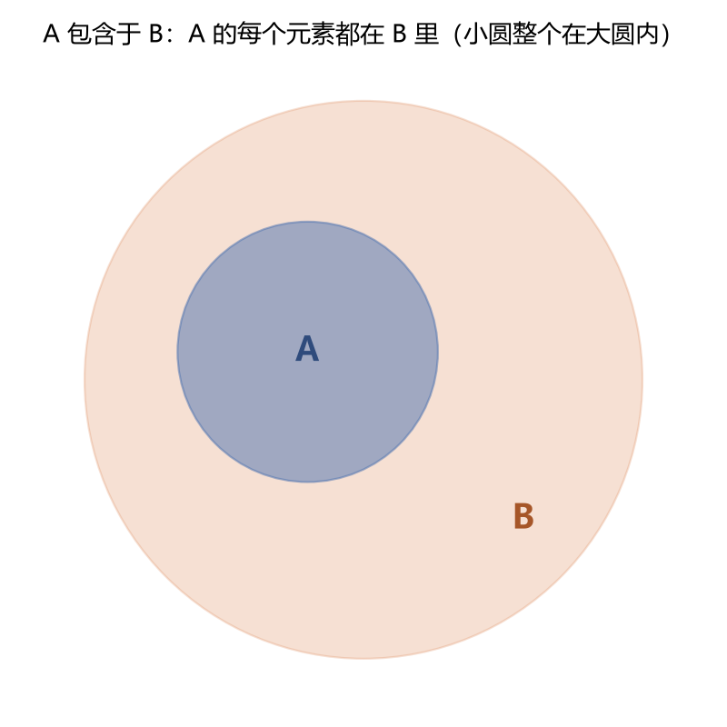
【跟讲例题 3.2-1】 写出 {1, 2} 的所有子集，并指出真子集。 解：按"从少到多"列：∅、{1}、{2}、{1,2}，共 22 = 4 个。真子集是前 3 个（去掉 {1,2} 本身）：∅、{1}、{2}，共 22−1 = 3 个。 要点：先写空集，再写单元素集，再写双元素集，按这个顺序想就不会漏。
【跟讲例题 3.2-2】 {0} 和 ∅ 是不是一回事？ 解：不是。∅ 里一个元素都没有；{0} 里有一个元素 0。打个比方：∅ 是空口袋，{0} 是口袋里装着一个 0。写子集时把这两个搞混，是经典失分点。
小结：A⊆B 就是"A 全装在 B 里"；n 个元素有 2n 个子集；空集是常客，别漏。
3.3 集合的基本运算
生活例子：高一（1）班参加数学兴趣小组的同学构成集合 A，参加物理兴趣小组的构成集合 B。那么"既参加数学又参加物理"的同学是谁？是 A 和 B 重叠的那部分——这就是交集。"参加数学或物理（至少一个）"的同学呢？是两个小组合起来的全部——这就是并集。
正式定义：
- 交集 A ∩ B = {x | x ∈ A 且 x ∈ B}。两个集合公共的那部分。
- 并集 A ∪ B = {x | x ∈ A 或 x ∈ B}。两个集合合起来的全部（重叠处只算一次）。
- 补集：先约定一个"大背景"叫全集 U（我们讨论的所有对象都在 U 里）。U 中不属于 A 的元素构成的集合叫 A 在 U 中的补集，记作 ∁u A = {x | x ∈ U 且 x ∉ A}。
三种运算的直观图（重叠 = 交，合起来 = 并，背景里扣掉 = 补）：
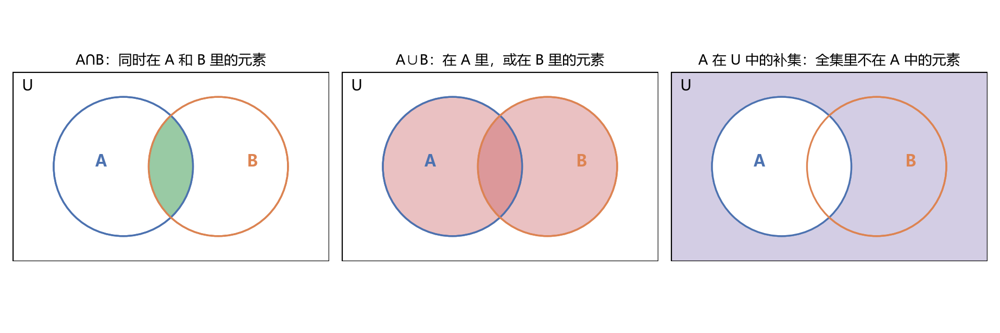
数集运算画数轴：当集合是区间（不等式解集）时，把它们画在数轴上最快——交集取"两段重叠的公共部分"，并集取"两段盖住的全部"，补集取"剩下的部分"。实心点表示端点取得到，空心圈表示取不到。
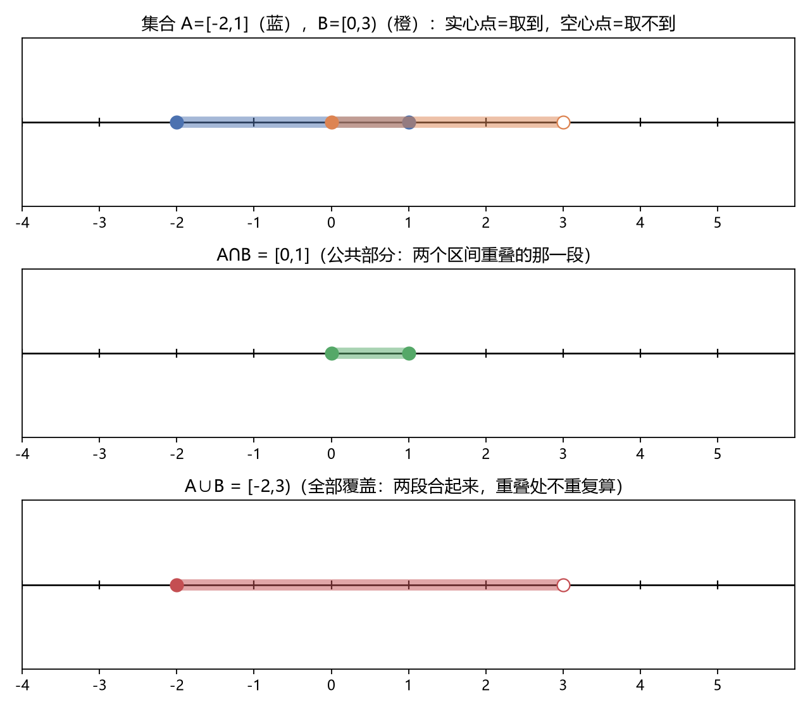
运算律（用熟）：
- 交换律：A ∩ B = B ∩ A，A ∪ B = B ∪ A。
- 分配律：A ∩ (B ∪ C) = (A ∩ B) ∪ (A ∩ C)；A ∪ (B ∩ C) = (A ∪ B) ∩ (A ∪ C)。
- 德摩根律：∁u(A ∩ B) = (∁uA) ∪ (∁uB)，∁u(A ∪ B) = (∁uA) ∩ (∁uB)。记口诀："交的补 = 补的并，并的补 = 补的交"，括号一拆，∩ 和 ∪ 对调。
计数公式（容斥原理）：|A ∪ B| = |A| + |B| − |A ∩ B|。意思是：两个集合的总个数，先各算各的，重叠部分被算了两次，要减掉一次。
运算结果与包含关系的互推（苏州教研·专题1）——看到运算结果"等于谁"，立刻反推"谁装谁"：
A ∪ B = B ⇔ A ⊆ B；A ∩ B = A ⇔ A ⊆ B
- 大白话：并完之后还是 B，说明 A 整个被 B 包住了（A⊆B）；交完之后剩下 A，也是 A⊆B。
- 用的时候：题目给 "A∪B=B" 或 "A∩B=A"，先翻译成 "A⊆B" 再动手，别上来就硬算。
补集思想（正难则反，苏州教研·专题1 补充）：正面分类太繁时，先求反面（补集）的结果，再从全集里扣掉。解决"否定型"或"正面较繁"的问题特别管用。
看清集合的代表元素（苏州教研·专题1 补充）：描述法里竖线左边写什么，决定这个集合到底是什么——
- {x | f(x) = 0} 是方程的解集；{x | f(x)>0} 是不等式的解集；
- {x | y = f(x)} 是函数的定义域；{y | y = f(x)} 是函数的值域。
同样是 x、y，左边是 x 还是 y，意义完全不同；先看代表元素，再进一步化简。
做题流程（数集运算）：
- 把每个集合先化简成区间（解不等式）。
- 画数轴，标出端点、注意开闭。
- 交 = 公共段、并 = 合并段、补 = 剩余段，照着图写出结果。
【跟讲例题 3.3-1】 设 A = {x | −1 < x ≤ 3}，B = {x | 1 ≤ x < 5}，求 A ∩ B、A ∪ B。 解：画数轴。A 是 (−1, 3]，B 是 [1, 5)。
- A∩B：两段重叠的部分是 [1, 3]（左端点 1 在 B 里取得到，右端点 3 在 A 里取得到）。
- A∪B：合起来从 −1 到 5，即 (−1, 5)（−1 取不到、5 取不到）。
【跟讲例题 3.3-2】 设 U = {1,2,3,4,5}，A = {1,3,5}，求 ∁uA。 解：全集里去掉 A 的元素，剩下 {2, 4}。所以 ∁uA = {2, 4}。
小结：交是"且"、并是"或"、补是"去掉"；数集运算务必画数轴，盯紧端点开还是闭。
3.4 常用逻辑用语
先搞清楚什么叫命题。 "今天下雨了""2+3 = 5""x2<0"——能判断对错的陈述句叫命题。判断为真的是真命题，判断为假的是假命题。"你好吗？"不是命题（没法判断对错）。
本章最重要的考点：充分条件与必要条件。 设 p、q 是两个命题。
- 若 p ⇒ q（p 成立一定能推出 q 成立），就说 p 是 q 的充分条件，q 是 p 的必要条件。
- 四种情况（设 p、q 各对应一个实数集合 A、B）：
| 关系 | 集合关系 | 说法 |
|---|---|---|
| p ⇒ q，但 q ⇏ p | A ⫋ B（A 是 B 的真子集） | p 是 q 的充分不必要条件 |
| q ⇒ p，但 p ⇏ q | B ⫋ A | p 是 q 的必要不充分条件 |
| p ⇒ q 且 q ⇒ p | A = B | p 是 q 的充要条件 |
| 互相都推不出 | A、B 互不包含 | 既不充分也不必要 |
秒杀技巧——集合包含法：把 p、q 各翻译成一个数集 A、B。若 A ⊆ B，那"落在 A 里"一定"落在 B 里"，即 p ⇒ q（p 充分、q 必要）。小集合推大集合。
全称量词与存在量词：
- 全称命题：对所有 x ∈ M 都成立，记作 "∀x ∈ M, p(x)"。∀ 读"任意"。
- 存在命题：存在 x ∈ M 使 p(x) 成立，记作 "∃x ∈ M, p(x)"。∃ 读"存在"。
- 否定规则（必背）：否定一个含量词的命题，量词互换（∀ ↔ ∃），再把结论否定，条件 M 不动。
- ¬(∀x ∈ M, p(x)) = ∃x ∈ M, ¬p(x)
- ¬(∃x ∈ M, p(x)) = ∀x ∈ M, ¬p(x)
常见词语的否定（苏州教研·专题42，必背）——否定一句话时，下面这些"对义词"要成对换：
| 原词 | 它的否定 | 原词 | 它的否定 |
|---|---|---|---|
| 是 | 不是 | 都是 | 不都是 |
| 大于 | 不大于 | 小于 | 不小于 |
| p 或 q | ¬p 且 ¬q | p 且 q | ¬p 或 ¬q |
| 至少有一个 | 一个也没有 | 至多有一个 | 至少有两个 |
| 至少有 n 个 | 至多有 n−1 个 | 至多有 n 个 | 至少有 n+1 个 |
大白话："都"的否定是"不都"（存在一个不是），不是"都不"；"或"变"且"、"且"变"或"。这跟量词否定是一个路数：把"全部成立"翻成"存在一个例外"。另外分清两件事：命题的否定只否结论；否命题要把条件和结论一起否掉，全称/特称命题没有否命题。
【跟讲例题 3.4-1】 "x > 2" 是 "x > 1" 的什么条件？ 解：设 A = {x | x>2}，B = {x | x>1}。A ⫋ B（小集合在大集合里）。
- x>2 一定有 x>1（小推大，充分）✓
- 但 x>1 不一定 x>2（比如 x = 1.5），反过来推不出。 所以 "x>2" 是 "x>1" 的充分不必要条件。
【跟讲例题 3.4-2】 写出命题 "∀x ∈ R, x2 + 1 > 0" 的否定。 解：量词 ∀ 换成 ∃，结论 "x2+1>0" 否定成 "x2+1≤0"，条件 R 不动。 否定为：∃x ∈ R, x2 + 1 ≤ 0。（原命题真，它的否定假，符合预期。）
易错点：充要条件的方向别读反——"p 是 q 的充分条件" = "p ⇒ q"，箭头从 p 指向 q。"p 的充分条件是 q" 才是 q ⇒ p，两句话主宾颠倒，方向相反。
小结：充分/必要就看"谁推得出谁"；用集合包含（小推大）最快；量词否定只换量词+否结论。
编者注·本质回扣：逻辑这一节看着像新东西，本质还是"筐"：充分必要条件就是两个集合谁包含谁（小筐在大筐里，落进小筐必落进大筐），量词否定就是把"全部/存在"翻成"有没有例外"。所以 3.1 到 3.4 是一条线——一切问题都翻译成集合，再用包含、交并、补来回答。记住这条线，第 2 章"函数定义域"、第 12 章"不等式解集"里你再见到集合，就知道它只是同一原理换了身衣服。
3.5 数形结合：集合题的解题总纲
前面讲的都是"算"，这一小节把"画图"这件事钉死。高考集合题年年出在第 1 题，1 分钟内必须拿下，靠的就是数形结合。
两类图，对号入座：
- 数集（不等式解集、区间） → 画数轴。端点该实就实、该空就空，重叠 = 交、合并 = 并。
- 抽象集合（不知道具体元素，只知道 A、B、C 之间的包含关系） → 画 Venn 图，把文字关系转成圆圈的大小和重叠。
操作步骤：① 先把每个集合化到最简（解不等式、列举元素）；② 选图（数轴 or Venn）；③ 在图上把答案区域涂出来；④ 翻译成区间或列举写回去，最后核对端点开闭。
【跟讲例题 3.5-1】 设全集 U = R，A = {x | x < 1}，B = {x | x ≥ −2}，求 (∁uA) ∩ B。 解：先求补：∁uA = {x | x ≥ 1}。再和 B = {x | x ≥ −2} 取交：两段 [1, +∞) 与 [−2, +∞) 的公共部分是 [1, +∞)。 数轴上一画就明白：补集是 1 右边（含 1），B 是 −2 右边，公共的当然是更靠右的 [1, +∞)。
【跟讲例题 3.5-2】（苏州教研·专题1，原书p.10） 设全集 U = {x | 0 < x < 10，x ∈ N*}，若 A ∩ B = {2, 3}，A ∩ (∁uB) = {1, 5, 7}，(∁uA) ∩ (∁uB) = {6, 9}，求集合 B。
解：U = {1, 2, 3, 4, 5, 6, 7, 8, 9}。画 Venn 图，把已知一块块填进去： - A ∩ B = {2, 3} → 2、3 在 A、B 的公共圈里； - A ∩ (∁uB) = {1, 5, 7} → 1、5、7 在 A 里、不在 B； - (∁uA) ∩ (∁uB) = {6, 9} → 6、9 在圈外（A、B 都不在）。 剩下 4、8 没地方去：它们不在 A（否则会落到上面两格），又不在圈外，只能"在 B、不在 A"。 所以 B = {2, 3, 4, 8}。 要点：抽象集合关系别空想，画个 Venn 图把已知分区填好，剩下的元素自然归位——这就是数形结合的威力。
小结：集合题"能画就不算"，数轴和 Venn 图就是你的两把尺子。
④ 例题详解（先做再看）
例题例 1（教材必修1 第1章例题）：写出集合 {a, b} 的所有子集，并指出哪些是真子集。
自己做：别漏 ∅。
解：所有子集为 ∅、{a}、{b}、{a, b}，共 4 = 22 个。 真子集为 ∅、{a}、{b}，共 3 = 22 − 1 个。 要点：先写 ∅，再写单元素集，再写双元素集，顺序想清楚就不会漏。
例题例 2（2021 新高考Ⅰ卷 T1，真题）：设集合 A = {x | −2 < x < 4}，B = {2, 3, 4, 5}，则 A ∩ B = （ ）
A. {2} B. {2, 3} C. {3, 4} D. {2, 3, 4}
自己做：B 是具体集合，逐个看哪些元素落在 A 的开区间里。
解：A = (−2, 4)，B 中的元素逐个检查：2 ∈ (−2, 4) ✓；3 ∈ (−2, 4) ✓；4 ∉ (−2, 4)（开区间不含 4）；5 ∉。故 A ∩ B = {2, 3}，选 B。 要点：开区间端点取不到，这是集合题第一陷阱。
例题例 3（充要条件判断）：设 x ∈ R，判断"x > 2"是"x > 1"的什么条件。
自己做：画数轴看两个集合的包含关系。
解：设 A = {x | x > 2}，B = {x | x > 1}，A ⊂ B。
- x > 2 ⇒ x > 1 成立（充分）；
- x > 1 ⇏ x > 2（如 x = 1.5）。 故"x > 2"是"x > 1"的充分不必要条件。 要点：充分性看"小集合 ⇒ 大集合"，必要性反过来看。
例题例 4（苏州教研·专题1，原书p.9）：设 A = {x | x2 − 2x − 3 = 0}，B = {x | ax = 1}，若 B ⊆ A，求实数 a。
自己做：先把 A 解出来；别忘了 B 可能是空集。
解：A = {x | (x−3)(x+1) = 0} = {−1, 3}。分两种情况：
- 当 a = 0 时，方程 ax = 1 即 0 = 1，无解，B = ∅。空集是任何集合的子集，满足 B ⊆ A。
- 当 a ≠ 0 时，B = {1/a}。要 B ⊆ A，需 1/a = 3 或 1/a = −1，得 a = 1/3 或 a = −1。
综上，a = 0，或 a = 1/3，或 a = −1。 要点：含参集合 B ⊆ A 时，第一件事就是讨论"B 会不会是空集"（这里 a = 0 时 B 自动为空）——漏掉这一支几乎必扣分。
⑤ 出口检测
自测（15 分钟，每题 2 分，10 分过关）：
- 用描述法表示"大于 0 且小于 5 的整数"。
- 集合 {1, 2, 3} 有多少个子集？多少个真子集？
- 设 U = {1, 2, 3, 4, 5}，A = {1, 2}，B = {2, 3}，求 A ∩ B、A ∪ B、∁uA。
- 判断："a = 0"是"ab = 0"的什么条件？
- 写出命题"∀x ∈ R，x2 ≥ 0"的否定。
（答案在本章末尾，做完再对。）
真题验收：翻开 数学自学系统素材\02_历年真题(新高考Ⅰ卷)\：
- 2020（山东卷）、2021、2022、2024 年新高考Ⅰ卷 选择题第 1 题（集合运算）
- 2023 年新高考Ⅰ卷集合考在选择题第 2 题（该年第 1 题是复数）
- 2025 年新高考Ⅰ卷 选择题第 2 题（集合，2025 起第 1 题改为复数）
- 标准：每题 1 分钟内完成且全对 → 本章过关；超时或做错 → 回到 3.3 节重做数轴法练习。
过关标准：自测 ≥ 10 分 且 真题验收全对 → 在 00 篇打卡表打勾，进入第 02 章。
课后习题（分层练习）
A 组基础巩固（教材练习级）；B 组能力提升（高考中档）；C 组真题挑战（新高考真题，标年份题号）。答案见章末。
A 组 基础巩固
-
【考点：集合的含义与三性质】下列各组对象，能构成集合的是（ ） A. 本班跑得快的同学 B. 接近于 0 的数 C. 方程 x2 = 4 的所有实数解 D. 著名的科学家
-
【考点：常用数集与属于关系】用 ∈ 或 ∉ 填空：0 __ N；−3 __ N；√2 __ Q；π __ R。
-
【考点：列举法与描述法】用列举法表示集合 {x ∈ Z | −2 ≤ x < 3}。
-
【考点：子集个数】集合 {a, b, c} 有多少个子集？多少个真子集？多少个非空真子集？
-
【考点：交集运算】设 A = {1, 2, 3, 4}，B = {2, 4, 6}，求 A ∩ B 和 A ∪ B。
-
【考点：补集运算】设全集 U = {1,2,3,4,5,6}，A = {2,4,6}，求 ∁uA。
B 组 能力提升
-
【考点：区间交并补（数轴法）】设 A = {x | −1 ≤ x < 3}，B = {x | x > 1}，求 A ∩ B、A ∪ B、(∁ᴿA) ∩ B。
-
【考点：空集与含参子集】已知集合 A = {x | −1 ≤ x ≤ 3}，B = {x | m+1 ≤ x ≤ 2m−1}，若 B ⊆ A，求实数 m 的取值范围。（提示：别忘了 B 可能是空集）
-
【考点：充要条件判断】设 x ∈ R，判断 "x = 1" 是 "x2 − 1 = 0" 的什么条件（充分不必要 / 必要不充分 / 充要 / 既不充分也不必要）。
-
【考点：含量词命题的否定】写出命题 "∃x ∈ R, x2 + 2x + 3 ≤ 0" 的否定，并判断原命题的真假。
C 组 真题挑战
-
【考点：交集运算】（2024 新高考Ⅰ卷 第1题）已知集合 A = {x | −5 < x3 < 5}，B = {−3, −1, 0, 2, 3}，则 A ∩ B = （ ） A. {−1, 0} B. {2, 3} C. {−3, −1, 0} D. {−1, 0, 2}
-
【考点：补集运算】（2025 新高考Ⅰ卷 第2题）设全集 U = {x | x 是小于 9 的正整数}，集合 A = {1, 3, 5}，则 ∁uA 中元素的个数为（ ） A. 0 B. 3 C. 5 D. 8
-
【考点：子集关系（含参）】（2023 新高考Ⅰ卷 第2题）设集合 A = {0, −a}，B = {1, a−2, 2a−2}，若 A ⊆ B，则 a = （ ） A. 2 B. 1 C. 2/3 D. −1
⑥ 常见坑清单（错一次记一次）
- 空集 ∅ 不是 {0}：∅ 不含任何元素，{0} 含一个元素 0。
- ∅ ⊆ A 恒成立，写子集时漏 ∅ 是高频失分点。
- 开闭区间端点：x < 4 不含 4；x ≤ 4 含 4。
- 充要条件方向反：p 是 q 的充分条件 ⇔ p ⇒ q（p 在前）。"谁是谁的"顺序别搞反。
- 量词否定只换量词+否结论，不要否定原命题的条件。
本章公式速查表
与《高中数学常用公式·修订版》第一部分（集合）、第十四部分（常用逻辑用语）核对一致。
元素与集合的关系
a ∈ A（a 属于 A）
- 大白话：a 这个东西，A 这个口袋里有它。
- 用的时候：判断某个对象在不在集合里；在就写 ∈，不在就写 ∉，二选一，别空着。
a ∉ A（a 不属于 A）
- 大白话：A 这个口袋里没有 a。
- 用的时候：和 ∈ 配套，注意常用数集 N 含 0、N* 不含 0。
集合间的关系
A ⊆ B（A 包含于 B）
- 大白话：A 里的每样东西 B 里都有，A 整个装进 B 里。
- 用的时候：判断包含关系；别忘 ∅ ⊆ A 恒成立，写子集先写空集。
- 记忆要点：⊆ 开口朝向"装得多"的那个大集合。
A = B（A 等于 B）
- 大白话：A 和 B 元素一模一样。
- 用的时候：要证 A = B，得两边互相 ⊆，即 A⊆B 且 B⊆A。
∅ ⊆ A（空集是任何集合的子集）
- 大白话：空口袋能装进任何口袋。
- 用的时候：问"某集合的所有子集"，第一个就写 ∅，最后别忘了它自己；{0} ≠ ∅。
含 n 个元素 ⇒ 子集 2n、真子集 2n−1、非空真子集 2n−2
- 大白话：每个元素"带不带"两种选择，n 个元素就是 2 的 n 次方。
- 用的时候：{1,2,3} 有 8 个子集、7 个真子集；先写 ∅ 再逐个加。
- 记忆要点：去掉空集减 1，再去掉它自己再减 1。
若 A ⊆ B ⊆ C，A 有 m 个元素、C 有 n 个元素（n>m），则这样的 B 有 2n−m 个（苏州教研·专题1 补充）
- 大白话：A 的元素必须全进 B，C 比 A 多出的 (n−m) 个元素每个"带不带进 B"都行，共 2n−m 种。
- 用的时候：如 {1,2}⊆B⊆{1,2,3,4,5}，多出 3 个元素，B 有 23 = 8 个。
- 记忆要点：夹在中间的 B，自由度全在"A 没有、C 有"的那批元素上。
集合的基本运算
A ∩ B = {x | x ∈ A 且 x ∈ B}（交集）
- 大白话：两个集合重叠的那部分，"既在 A 又在 B"。
- 用的时候：数集运算画数轴取公共段；盯紧端点该闭还是该开。
A ∪ B = {x | x ∈ A 或 x ∈ B}（并集）
- 大白话：两个集合合起来的全部，重叠处只算一次。
- 用的时候：画数轴取两段盖住的全部；"或"是至少满足一个。
∁uA = {x | x ∈ U 且 x ∉ A}（A 在全集 U 中的补集）
- 大白话：从大背景 U 里把 A 扣掉，剩下的就是补集。
- 用的时候：先写清楚全集 U 是什么；补集 = 数轴上"剩下的部分"。
运算律与计数
德摩根律：∁u(A∩B) = (∁uA)∪(∁uB)，∁u(A∪B) = (∁uA)∩(∁uB)
- 大白话：交的补 = 补的并，并的补 = 补的交，括号一拆 ∩ 和 ∪ 对调。
- 用的时候：见到"补的交并"想拆开，或反过来合并。
- 记忆要点："交补变并、并补变交"。
|A∪B| = |A| + |B| − |A∩B|（容斥计数）
- 大白话：两个集合总个数，重叠部分被算了两次，要减掉一次。
- 用的时候：数元素个数、做概率题常用。
A ∪ B = B ⇔ A ⊆ B；A ∩ B = A ⇔ A ⊆ B（运算结果反推包含，苏州教研·专题1）
- 大白话：并完还是 B、交完剩 A，都说明 A 整个被 B 装着。
- 用的时候：题目给运算等式，先翻译成包含关系再动手，别硬算。
- 记忆要点："谁被吸收了，谁就是小的那个。"
充分与必要条件
A ⊆ B ⇒ "A 的条件"是"B 的条件"的充分条件（小推大）
- 大白话：落在小集合里，一定落在大集合里。
- 用的时候：把两个命题翻成数集，小集合推大集合就是充分；A=B 才充要。
- 记忆要点："谁是谁的充分条件"，箭头从 p 指向 q，别读反主宾。
量词与命题否定
¬(∀x∈M, p(x)) = ∃x∈M, ¬p(x)
- 大白话："所有 x 都成立"的否定是"存在某个 x 不成立"。
- 用的时候：量词 ∀ 换成 ∃，结论否定，条件 M 不动。
¬(∃x∈M, p(x)) = ∀x∈M, ¬p(x)
- 大白话："存在某个 x 成立"的否定是"所有 x 都不成立"。
- 用的时候：∃ 换成 ∀，再否定结论；别去动条件 M。
- 记忆要点："换量词 + 否结论"，两步就够。
常见词语否定：都→不都；或⇔且互换；至少一个→一个也没有（苏州教研·专题42）
- 大白话："都是"的否定是"不都是"（存在一个不是），不是"都不是"；"p或q"的否定是"¬p且¬q"。
- 用的时候：否定命题先换量词、再对词；"至少有一个"否定成"一个也没有"，"至多有一个"否定成"至少有两个"。
- 记忆要点：全称特称互换 + 连接词或且互换。
高级方法·进阶
本章对应方法手册：无直接对应章节（集合与逻辑是全书最基础的工具章，《不超纲高级方法手册》没有专门收录压轴方法）。这里只补两个把本章用"快"的小技巧，都是课标内、高考可放心用的：
进阶 1：充要条件的"集合包含法"（不超纲，高考可放心用）
- 适用信号：题目给两个命题 p、q，问谁是谁的什么条件。
- 操作步骤：① 把 p、q 各自翻译成实数集合 A、B；② 画数轴比 A、B 的包含关系；③ A ⊆ B ⇒ p 充分、q 必要；A = B ⇒ 充要。
- 例："x>2"是"x>1"的什么条件？A=(2,+∞)⊆B=(1,+∞)，故 p 充分不必要。
- 依据：充分条件的集合刻画（课标内）。✓ 不超纲。
进阶 2：含参子集问题的"空集先行"讨论（不超纲，高考可放心用）
- 适用信号：B ⊆ A，且 B 是含参数 m 的区间。
- 操作步骤：① 先单独讨论 B = ∅ 的情形（即"左端点 > 右端点"），这是最容易漏的；② 再讨论 B ≠ ∅，把两个端点的不等式列出来；③ 合并两种情况。
- 依据：空集是任何集合的子集（课标内）。✓ 不超纲。
- 注意：考试若漏掉 B=∅ 这一支，本题几乎必扣分，务必写出来。
自测答案：1. {x | x ∈ N*，且 x < 5}（或 {1, 2, 3, 4}）；2. 子集 8 个（23）、真子集 7 个；3. A ∩ B = {2}、A ∪ B = {1, 2, 3}、∁uA = {3, 4, 5}；4. 充分不必要条件（a = 0 ⇒ ab = 0，反例 b = 0、a = 1）；5. ∃x ∈ R，x2 < 0。
课后习题答案
A 组
- C。只有 C 有确定标准（x2=4 的解是 ±2，确定）；A、B、D 标准不明确，不满足确定性。
- 0 ∈ N；−3 ∉ N（N 不含负整数）；√2 ∉ Q（无理数）；π ∈ R。
- {x ∈ Z | −2 ≤ x < 3} = {−2, −1, 0, 1, 2}。
- n=3：子集 23=8 个；真子集 23−1=7 个；非空真子集 23−2=6 个。
- A∩B = {2, 4}；A∪B = {1, 2, 3, 4, 6}。
- U={1,2,3,4,5,6} 去掉 A={2,4,6}，∁uA = {1, 3, 5}。
B 组
-
A=[−1,3)，B=(1,+∞)。 - A∩B = (1, 3)（重叠段）。 - A∪B = [−1, +∞)（合起来，−1 含、3 不含、向右无限）。 - ∁ᴿA = (−∞, −1) ∪ [3, +∞)；与 B=(1,+∞) 取交 = [3, +∞)。
-
B⊆A。分两种情况： - B = ∅：m+1 > 2m−1 ⇒ m < 2。此时 B⊆A 恒成立。 - B ≠ ∅：需 m+1 ≤ 2m−1（即 m≥2），且 m+1 ≥ −1、2m−1 ≤ 3。解得 m≥2 且 m≥−2 且 m≤2，即 m=2。 合并：m < 2 或 m = 2，即 m ≤ 2。
-
x=1 ⇒ x2−1=0（充分）；但 x2−1=0 ⇒ x=±1，不一定 x=1（必要不成立）。故 "x=1" 是 "x2−1=0" 的充分不必要条件。
- 否定：∀x ∈ R, x2 + 2x + 3 > 0。原命题：x2+2x+3 = (x+1)2+2 ≥ 2 > 0 恒成立，所以原命题 "∃…≤0" 是假命题（恒大于 0，不存在 ≤0 的）。
C 组
- A = {x | −5 < x3 < 5}，即 −∛5 < x < ∛5，∛5 ≈ 1.71，故 A ≈ (−1.71, 1.71)。B={−3,−1,0,2,3} 中落在 (−1.71,1.71) 的只有 −1、0。A∩B = {−1, 0}，选 A。
- U = {1,2,3,4,5,6,7,8}（小于 9 的正整数，共 8 个）。A={1,3,5}。∁uA = {2,4,6,7,8}，共 5 个元素，选 C。
- A⊆B 意味着 0 和 −a 都必须在 B={1, a−2, 2a−2} 中。逐一代入选项：
- a=1：A={0,−1}，B={1,−1,0}，0∈B、−1∈B，成立。
- a=2：B={1,0,2}，−2∉B，不成立；a=2/3 时 0∉B；a=−1 时 0∉B。 故 a=1，选 B。
一通百通
这一章的"通用骨架"只有四步：① 问对象是谁（元素还是集合？）→ ② 问关系是什么（属于/包含/相等/运算？）→ ③ 翻译（画数轴或 Venn，把文字变成图形）→ ④ 按图回答。高考集合题年年出现在第 1 题，本质全是这一套：看清对象 → 定关系 → 画图 → 读数。会解一道集合题，就会解所有集合题；这套"先翻译再画图"的骨架，后面解不等式、解函数定义域、解圆锥曲线取值范围，还会一再出现。
跨章结合
本章的原理和后面这些章碰在一起，就会长出高考里反复出现的典型问题： - 集合运算 ⇔ 02 章函数的定义域/值域：求两个函数定义域的交并补，几乎年年以"集合小题"形式出现（2023/2025 卷 T2 就是集合运算与不等式解集的结合，见本章 C 组真题）； - 充分必要条件 ⇔ 12 章不等式恒成立 / 16 章参数范围：把"p 是 q 的什么条件"翻译成"两个集合谁包含谁"，本质和"参数取什么值时不等式恒成立"是同一个"小推大"思维（综合原理说明，非真题）。 记住这两条结合点，你在 02、12、16 章再见到集合，就知道它只是换了身衣服的同一个工具。
本章与前后章
集合与逻辑是全书的第一站：它前面接初中的数系、方程与不等式（门槛自测已帮你确认），后面接第 2 章函数——函数的定义域、值域、单调区间全部用集合与区间书写；第 12 章不等式的解集、第 16 章圆锥曲线的参数的取值范围，也都是集合运算的化装舞会。充分必要条件这套"小推大"逻辑，更是后面"恒成立"类问题的底层思维。学完这一章，你手里有了全书第一件工具：一套把"自然语言"翻译成"集合语言"的能力。
高考怎么考
新高考Ⅰ卷里集合几乎锁定第 1 题（2020–2024 卷 T1、2023/2025 卷 T2），考法高度套路化：交并补运算（常与一元二次不等式、指对数函数值域结合）、子集个数、充分必要条件判断（翻译成集合包含最快）；常用逻辑偶尔混进多选题的选项判断。难度低、位置固定、必须 1 分钟内拿下——它考的不是集合本身，而是你"翻译+画图"的熟练度，为全卷节省时间。
函数的概念与性质
对应方法手册：无（基础章） ｜ 公式速查：修订版 第2部分
本章本质核心：函数就是一条"输入 x → 按规则 f → 唯一输出 y"的传送带——本章讲的一切都是这条传送带的侧面：定义域管"哪些 x 允许上车"，单调与奇偶管"传送带怎么弯、左右对不对称"，最值管"传送带最高最低落在哪"，分段函数只是同一条传送带按区间换了段路面。本章所有题型（求定义域、证单调、判奇偶、求最值）都是这一条"输入→输出规则"的变体。
为什么有用：学会这一章，你手里就有了一把"拆任何新函数"的通用尺子——后面 03 指对、06 三角、11 数列里再陌生的函数，你都能照同一套路问出"x 能取哪、随 x 怎么涨、左右对不对称、最高最低在哪"。想通这条输入输出规则，新函数不用背也能自己分析。
① 门槛自测（进章前，10 分钟）
- 集合 A = {x | x > = 1}，B = {x | x < 3}，求 A ∩ B。
- 一次函数 y = 2x + 1，当 x = 3 时 y 是多少？
- 二次函数 y = x2 的图象关于什么对称？y 的最小值是多少？
- 分式 1/(x − 1) 在 x = 1 时有没有意义？为什么？
- 反比例函数 y = 1/x 的图象分布在哪些象限？
判定：5 题答对 4 题以上 → 进章；否则先回初中复习"一次/二次/反比例函数"。
② 学习目标
学完本章，你必须能：
- 说出函数的定义与三要素；判断两个函数是否为同一函数
- 求常见函数的定义域（分式、根式等）
- 用定义证明函数的单调性；判断/证明函数的奇偶性
- 求简单函数在闭区间上的最值
③ 正文讲解
本章地图：
| 小节 | 你将学会 | 高考地位 |
|---|---|---|
| 3.1 函数的概念 | 函数是什么、三要素、同一函数 | 一切的地基 |
| 3.2 定义域的求法 | x 能取哪些值 | 每次做题第一步 |
| 3.3 单调性 | 函数怎么"涨"，用定义证明 | 大题高频 |
| 3.4 奇偶性 | 图象的对称性 | 小题高频 |
| 3.5 最大(小)值 | 函数的最高/最低点 | 常与单调性结合 |
| 3.6 分段函数 | 几段拼起来的函数 | 新高考常考 |
3.1 函数的概念
先看两个身边的例子。 你去打车，车费 y 跟着里程 x 变——x 一定，y 就唯一确定了。气象台记录南极臭氧层空洞面积，时间 t 一定时，面积 S 也唯一确定。这些现象的共同点是：一个量定了，另一个量就跟着唯一确定。数学上把这种关系叫函数。
设 A、B 是非空的实数集，如果对于集合 A 中的任意一个数 x，按照某种确定的对应关系 f，在集合 B 中都有唯一确定的数 y 和它对应，那么就称 f: A→B 为从集合 A 到集合 B 的一个函数，记作 y = f(x)，x ∈ A。（人教A版口径）
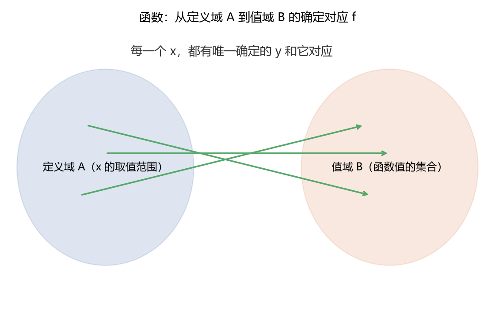
三要素——一个函数由三样东西决定：
- 定义域：自变量 x 的取值范围 A。
- 对应关系：f，即"怎么由 x 算出 y"。
- 值域：所有函数值 f(x) 组成的集合 {f(x) | x ∈ A}，它是 B 的一部分。
同一函数：定义域相同 且 对应关系相同，就是同一个函数（跟用 x 还是 t 做字母无关）。
- y = x 和 y = x2/x 不是同一函数：后者 x≠0，定义域少了 0。
- y = x 和 s = t 是同一函数：定义域都是 R，对应关系都是"本身"。
判断一个图象是不是函数图象——垂直检验（苏州教研·专题2）：函数 y = f(x) 的图象，和任何一条竖直线 x = m 至多只有一个交点。如果一条竖直线穿过去有两个交点，那它就不是函数图象（一个 x 对应了两个 y）。另外记住：点 (a, b) 在 y = f(x) 的图象上 ⇔ f(a) = b。
定义域优先原则（苏州教研·专题2）：研究任何函数问题，第一件事就是先指出它的定义域。定义域一旦错了，后面单调性、奇偶性、值域全会跟着错——这是铁律，不是建议。
怎么求一个函数的解析式（苏州教研·专题3）：题目告知函数类型，就用待定系数法——先设出该类型的一般式（一次设 f(x) = kx+b，二次设 f(x) = ax2+bx+c），再用条件列方程定系数。
【跟讲例题 3.1-2】（苏州教研·专题3，原书p.18） 已知 f(x) 是一次函数，且 3f(x+1) − 2f(x−1) = 2x − 17，求 f(x)。 解：设 f(x) = kx+b。则 3f(x+1)−2f(x−1) = 3[k(x+1)+b] − 2[k(x−1)+b] = kx + 5k + b。 令它等于 2x−17：k = 2，5k+b = −17 ⇒ 10+b = −17 ⇒ b = −27。故 f(x) = 2x − 27。
区间记号（必须滚瓜烂熟）：
| 写法 | 含义 | 端点 |
|---|---|---|
| [a, b] | a ≤ x ≤ b | 两端都取到 |
| (a, b) | a < x < b | 两端都取不到 |
| [a, b)、(a, b] | 一头取到一头取不到 | 看括号 |
| (a, +∞)、(−∞, b)、(−∞,+∞) = R | 无限延伸 |
【跟讲例题 3.1-1】 y = x 与 y = √x·√x 是不是同一函数？ 解：不是。y = x 定义域是 R；y = √x·√x 里根号下要有意义，x≥0。定义域不同，就不是同一函数（即使 x≥0 时两式都等于 x）。
小结：函数 = "x 定了 y 唯一确定"；三要素里定义域是命门；判断同一函数先比定义域。
编者注·本质回扣：为什么这一节要把"定义域"捧成命门？说白了，函数的本质是"一个 x 对应唯一的 y"这条规则，那规则从哪开始算？就得先把"哪些 x 能进来"圈死——x 的范围没定死，规则就是空中楼阁。所以"定义域优先"不是一句口号，而是本质核心里"传送带入口"的规矩：入口不画框，后面算出来的 y 全是给"根本不存在的 x"算的，自然全错。判断同一函数先比定义域、求解析式用待定系数，也都是在维护"这条规则到底是哪一条"。
3.2 定义域的求法
求定义域，本质就是找"x 不许踩的红线"，再把所有红线取交集。 高中阶段常见的红线：
| 式子里出现 | 红线（限制条件） |
|---|---|
| 分式 1/g(x) | 分母 g(x) ≠ 0 |
| 偶次根式 √g(x) | 根号内 g(x) ≥ 0 |
| 零次幂 g(x)0 | 底数 g(x) ≠ 0 |
| 实际问题 | 符合实际意义（长度>0 等） |
流程：① 列出每个红线对应的不等式；② 全部取交集（注意是交，不是并）；③ 写成区间。
【跟讲例题 3.2-1】 求 f(x) = √(x − 1) + 1/(x − 2) 的定义域。 解：根号 x−1 ≥ 0 ⇒ x ≥ 1；分母 x−2 ≠ 0 ⇒ x ≠ 2。取交集：x ≥ 1 且 x ≠ 2，即 [1, 2) ∪ (2, +∞)。 要点：x = 1 能取（√0 = 0），写闭；x = 2 绝对不能取，单独挖掉。
易错点：求定义域只看形式，不要先化简。比如 f(x) = (x2−1)/(x−1)，别先约成 x+1——约掉前 x = 1 本来是无意义的，定义域必须把 x = 1 排除。
抽象函数的定义域（苏州教研·专题2，小题高频）——题目不给解析式时，盯住"被同一个 f 作用的对象范围相同"：
- 已知 f(x) 的定义域是 (a, b)，求 f(g(x)) 的定义域：解不等式 a < g(x) < b，解集就是。
- 已知 f(g(x)) 的定义域是 (a, b)，求 f(x) 的定义域：由 x∈(a,b) 求 g(x) 的值域，该值域就是 f(x) 的定义域。
【跟讲例题 3.2-2】（苏州教研·专题2，原书p.14） 已知 f(x) 的定义域是 (1, 3)，求 f(2x+1) 的定义域。 解：被 f 作用的对象必须落在 (1, 3) 里，所以 1 < 2x+1 < 3，解得 0 < x < 1。故 f(2x+1) 的定义域是 (0, 1)。 （反过来：若 f(3x−1) 的定义域是 [1, 3]，则 x∈[1,3] 时 3x−1∈[2,8]，故 f(x) 的定义域是 [2, 8]。）
小结：定义域 = 所有红线取交集；分式看分母、根式看根号内。
3.3 单调性
直觉：坐电梯，从 1 楼一直升到 10 楼，高度随时间"单调上升"；坐滑梯则一路下降。函数的单调性就是刻画"随着 x 变大，y 是一路涨还是一路跌"。
定义：设函数 y = f(x) 定义域为 I，区间 D⊆I。如果 ∀x1, x2 ∈ D，当 x1 < x2 时都有 f(x1) < f(x2)，就说 f(x) 在 D 上单调递增；都有 f(x1) > f(x2) 则单调递减。
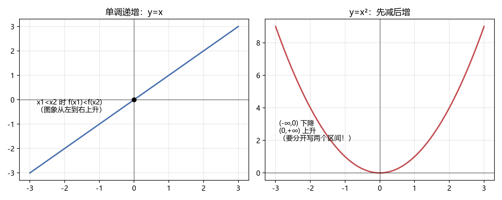
用定义证明单调性的四步（大题模板，背熟）：
- 取值：任取 x1, x2 ∈ D，设 x1 < x2。
- 作差：算 f(x1) − f(x2)。
- 变形：因式分解、通分、配方，化成几个能判正负的因式相乘。
- 定号：由 x1 < x2 推出差的正负，下结论。
常见函数的单调性（要背）：
- y = x：R 上递增。
- y = x2：(−∞,0) 递减、(0,+∞) 递增（两段分开写）。
- y = 1/x：(−∞,0) 和 (0,+∞) 上分别递减——千万别说"在整个定义域上递减"，因为 x = 0 处断开了。
- y = x3：R 上递增。
【跟讲例题 3.3-1】 用定义证明 f(x) = 2x + 1 在 R 上单调递增。 证明：任取 x1 < x2。作差 f(x1)−f(x2) = (2x1+1)−(2x2+1) = 2(x1−x2)。 因为 x1<x2，所以 x1−x2<0，差 < 0，即 f(x1)<f(x2)。故在 R 上递增。
小结：单调就是"x 大 y 大(或小)"；证明按"取值—作差—变形—定号"四步；断开的区间要分开说。
3.4 奇偶性
前提：先看定义域是否关于原点对称。不对称，直接判定"非奇非偶"，不用往下算了。
- 偶函数：f(−x) = f(x)，图象关于 y 轴对称。如 f(x) = x2、f(x) = |x|。
- 奇函数：f(−x) = −f(x)，图象关于 原点对称。如 f(x) = x3、f(x) = 1/x。
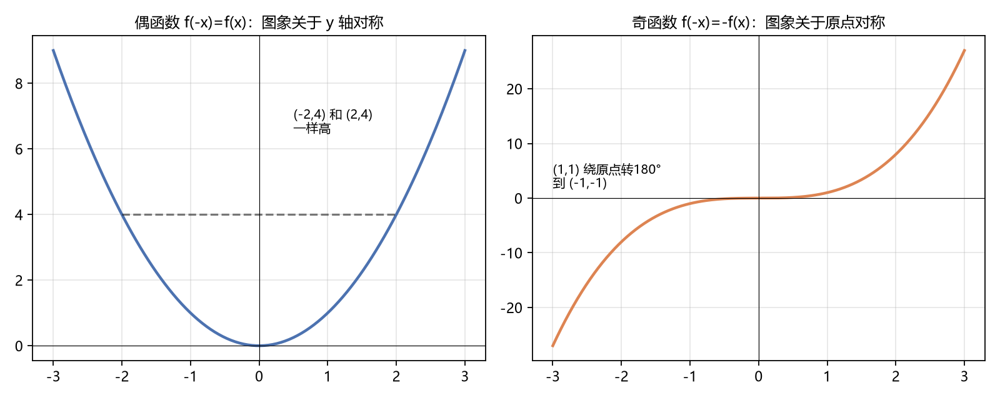
判断三步：① 查定义域是否关于原点对称；② 算 f(−x)；③ 和 f(x) 比——相等是偶、相反是奇、都不是就非奇非偶。
常用小结论：奇函数若在 x = 0 有定义，则 f(0) = 0（因为 f(−0) = −f(0)，即 f(0) = −f(0)，得 f(0) = 0）。这是小题秒杀，但只对"奇函数且 0 在定义域里"成立。
【跟讲例题 3.4-1】 判断 f(x) = x3 + x 的奇偶性。 解：定义域 R，关于原点对称。f(−x) = (−x)3 + (−x) = −x3 − x = −(x3+x) = −f(x)。故为奇函数。（验证 f(0) = 0 ✓）
奇偶函数在对称区间上的单调性（苏州教研·专题6）：
- 奇函数在关于原点对称的两个区间上，单调性相同；
- 偶函数在关于原点对称的两个区间上，单调性相反。
偶函数的一个好用变形（苏州教研·专题7）：偶函数 f(x) = f(|x|)。解抽象不等式时，比如已知偶函数在 [0,+∞) 上递增，要解 f(x1)<f(x2)，直接翻成 |x1|<|x2| 来比大小，比分正负讨论快得多。
【跟讲例题 3.4-2】（苏州教研·专题7，原书p.33） 已知 f(x) 是定义在 R 上的偶函数，在 [0,+∞) 上是增函数，且 f(−1) = 0，求使 f(x)<0 成立的 x 的范围。 解：偶函数 f(1) = f(−1) = 0。在 [0,+∞) 上递增，f(x)<0 ⇒ 0≤x<1；由偶函数关于 y 轴对称，另一半 −1<x≤0。合起来 −1<x<1。 要点：偶函数 + 单调性，把正负两半对称拼起来；画个图（关于 y 轴对称）一眼就出。
小结：奇偶性先查定义域对称；偶函数对 y 轴、奇函数对原点；奇函数过原点则 f(0) = 0。
编者注·本质回扣：奇偶性看着是新东西，本质还是那条"输入→输出"规则的"对称脾气"。偶函数 f(−x) = f(x)，意思是你把输入换成它的相反数，输出原封不动——这条规则左右照镜子；奇函数 f(−x) = −f(x)，是输入翻号、输出也跟着翻号。所以本节开头先要求"定义域关于原点对称"，本质是：你想拿 −x 当输入，那 −x 必须本身就在定义域里，不然规则对它根本不适用。至于奇函数 f(0) = 0，也只是这个对称关系在 x = 0 处的必然结果，不是另外冒出来的新规矩。
3.5 最大值与最小值
定义：设 f(x) 定义域为 I。若存在实数 M，使 ① ∀x∈I 都有 f(x) ≤ M，② 存在 x0∈I 使 f(x0) = M，则 M 是最大值（最小值把 ≤ 改 ≥）。 注意最大值是个"能取到的高度"——既要是上界，又必须在某个 x0 处真的取到。
本章求法：二次函数配方找顶点；闭区间上画图象，比较端点和顶点。
- 例：f(x) = x2−2x = (x−1)2−1，顶点 (1,−1)，在 R 上最小值 −1，无最大值。
【跟讲例题 3.5-1】 求 f(x) = x2−4x+3 在闭区间 [0, 3] 上的最值。 解：配方 f(x) = (x−2)2−1，顶点 x = 2 在 [0,3] 内，最小值 f(2) = −1。 再比端点：f(0) = 3，f(3) = 0。最大值是 max(3,0,−1) = 3。 故最小值 −1（x = 2），最大值 3（x = 0）。
小结：最值 = "最上/最下的那个能取到的值"；闭区间上把极值和端点一起比。
3.6 分段函数
生活例子：出租车计费——3 公里内一个价，超过 3 公里另一个价。一个解析式写不下，就分几段写，每段一个范围配一个式子。
定义：在定义域的不同部分，有不同的对应关系，这样的函数叫分段函数。它是一个函数，不是几个函数。
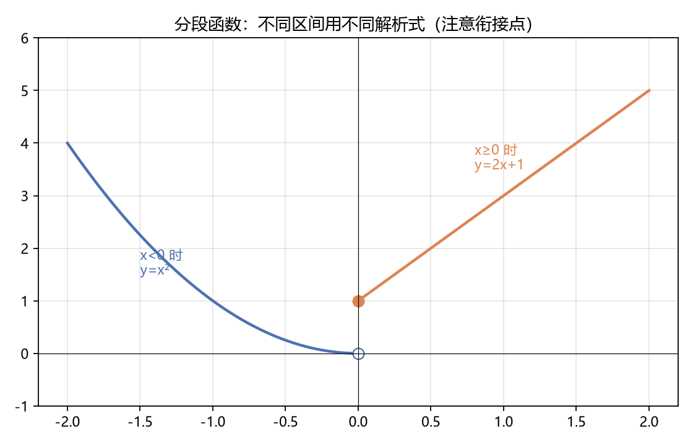
要点：
- 求 f(某值) 时，先看这个值落在哪个区间，再用对应那段的式子。
- 画图象要分段画，注意每段端点是实心还是空心。
【跟讲例题 3.6-1】 设 f(x) = { x2, x<0 ; 2x+1, x≥0 }，求 f(−2)、f(0)。 解：−2 < 0，用第一段：f(−2) = (−2)2 = 4。0≥0，用第二段：f(0) = 2·0+1 = 1。
小结：分段函数是一个函数分区间用不同式子；求值先找区间。
3.7 函数图象的平移与翻折（苏州教研·专题5）
一句话记住：左加右减、上加下减。
- 左右平移：y=f(x) 向右平移 a 个单位 → y=f(x−a)；向左 → y=f(x+a)。（左加右减：往左移就把 x 换成 x+a）
- 上下平移：y=f(x) 向上平移 b 个单位 → y=f(x)+b；向下 → y=f(x)−b。（上加下减）
两种翻折：
- y = |f(x)|：把 x 轴下方的图象"翻上来"（下往上翻），上方不动。
- y = f(|x|)：保留 y 轴右边（x>0）的部分，再沿 y 轴对称出左边——它是个偶函数（右翻左）。
【跟讲例题 3.7-1】（苏州教研·专题2，原书p.14） 把 y = f(x) 的图象先向右平移 2 个单位、再向上平移 3 个单位，求新图象的解析式。 解：右移 2 → y = f(x−2)；再上移 3 → y = f(x−2) + 3。 要点：左右平移动的是 x（括号里"左加右减"），上下平移动的是整个函数值（"上加下减"）。
④ 例题详解（先做再看）
例题例 1（教材必修1 1.2 实例改编）：判断下列每组中的两个函数是否为同一函数： (1) f(x) = x，g(x) = √x · √x (2) f(x) = x2，g(t) = t2
自己做：看定义域 + 对应关系。
解： (1) 不是。f 的定义域 R；g(x) = √x·√x 定义域 x ≥ 0。定义域不同。 (2) 是。定义域都是 R，对应关系都是"平方"，字母不同不影响。 要点：先比定义域，再比对应关系。
例题例 2（求定义域）：求函数 f(x) = √(2 − x) + 1/(x − 1) 的定义域。
自己做：列出所有限制取交集。
解：2 − x ≥ 0 ⇒ x ≤ 2；x − 1 ≠ 0 ⇒ x ≠ 1。交集为 x ≤ 2 且 x ≠ 1，即 (−∞, 1) ∪ (1, 2]。 要点：取交集，不是取并集；端点写成区间时注意开闭。
例题例 3（用定义证明单调性）：证明 f(x) = x + 1/x 在区间 (1, +∞) 上单调递增。
自己做：严格按四步走。
证明：
- 取值：任取 x1, x2 ∈ (1, +∞)，x1 < x2。
- 作差：f(x1) − f(x2) = (x1 + 1/x1) − (x2 + 1/x2) = (x1 − x2) + (1/x1 − 1/x2)
- 变形： = (x1 − x2) + (x2 − x1)/(x1x2) = (x1 − x2)(1 − 1/(x1x2)) = (x1 − x2)(x1x2 − 1)/(x1x2)
- 定号：x1 < x2 ⇒ x1 − x2 < 0；x1, x2 > 1 ⇒ x1x2 > 1 ⇒ x1x2 − 1 > 0，且 x1x2 > 0。故 f(x1) − f(x2) < 0，即 f(x1) < f(x2)。 结论：f(x) = x + 1/x 在 (1, +∞) 上单调递增。 要点：作差后必须变形到能"由条件推出符号"的程度，变形不彻底是丢分主因。
例题例 4（奇偶性判断）：判断 f(x) = x3 + x 的奇偶性。
自己做：先看定义域，再算 f(−x)。
解：定义域 R，关于原点对称。f(−x) = (−x)3 + (−x) = −x3 − x = −(x3 + x) = −f(x)。故 f(x) 为奇函数。 要点：奇函数定义域含 0 时 f(0) = 0（本题 f(0) = 0 可作验证）。
⑤ 出口检测
自测（15 分钟，每题 2 分，10 分过关）：
- 求函数 f(x) = 1/(x − 3) + √(x + 1) 的定义域。
- 判断 y = x2 与 y = (x + 1)2 − 2x − 1 是否为同一函数。
- 证明 f(x) = 2x + 1 在 R 上单调递增。
- 判断 f(x) = x2 + x 的奇偶性。
- f(x) 为奇函数且 f(2) = 5，求 f(−2)。
（答案在本章末尾，做完再对。）
真题验收：翻开 数学自学系统素材\02_历年真题(新高考Ⅰ卷)\，任选 2021–2024 卷中 2~3 道函数性质小题（选择题第 3–8 题区间内找函数单调/奇偶/定义域题）：
- 标准：每题 2 分钟内完成且全对 → 本章过关；超时或做错 → 回到 3.3/3.4 节重做。
过关标准：自测 ≥ 10 分 且 真题验收全对 → 在 00 篇打卡表打勾，进入第 03 章。
课后习题（分层练习）
A 组 基础巩固
-
【考点：判断同一函数】下列各组中的两个函数，是同一函数的是（ ） A. f(x) = x，g(x) = x2/x B. f(x) = |x|，g(x) = √(x2) C. f(x) = x，g(x) = (√x)2 D. f(x) = 1，g(x) = x0
-
【考点：区间记号】把下列写成区间：(1) −2 ≤ x < 5；(2) x ≤ 3；(3) x > 0。
- 【考点：求定义域】求 f(x) = √(x+2) + 1/(x−1) 的定义域。
-
【考点：单调性判断】函数 y = 1/x 在下列哪个区间上单调递减（ ） A. R B. (−∞,0)∪(0,+∞) C. (−∞,0) 和 (0,+∞) 分别 D. (0,+∞) 上递增
-
【考点：奇偶性判断】判断 f(x) = 2x2+1 的奇偶性。
- 【考点：最值】求 f(x) = x2−2x+2 在 R 上的最小值。
B 组 能力提升
- 【考点：定义证明单调性】用定义证明 f(x) = −2x+3 在 R 上单调递减。
- 【考点：奇偶性+求值】f(x) 是奇函数，定义域 R，f(3) = −5，求 f(−3)；又若 f(0) 存在，f(0) = ?
- 【考点：分段函数】设 f(x) = { x+1, x≤0 ; x2, x>0 }，求 f(−1)、f(2)，并求 f(x) = 1 时 x 的值。
- 【考点：闭区间最值】求 f(x) = x2−2x 在闭区间 [0, 3] 上的最大值和最小值。
C 组 真题挑战
-
【考点：奇偶性（含参）】（2023 新高考Ⅰ卷 第4题）若 f(x) = (x+a)·ln((2x−1)/(2x+1)) 为偶函数，则 a = （ ） A. −1 B. 0 C. 1/2 D. 1
-
【考点：分段函数单调性】（2024 新高考Ⅰ卷 第6题）已知函数 f(x) = { −x2−2ax−a, x<0 ; ex+ln(x+1), x≥0 } 在 R 上单调递增，则 a 的取值范围是（ ） A. (−∞,0] B. [−1,0] C. [−1,1] D. [0,+∞)
-
【考点：函数增长与递推】（2024 新高考Ⅰ卷 第8题）已知 f(x) 的定义域为 R，f(x) > f(x−1)+f(x−2)，且当 x<3 时 f(x) = x。则下列一定正确的是（ ） A. f(10)>100 B. f(20)>1000 C. f(10)<1000 D. f(20)<10000
⑥ 常见坑清单
- 同一函数≠解析式长得像：先比定义域，再比对应关系。如 y = x 与 y = √(x2)：定义域都是 R（x2≥0 恒成立），但对应关系不同——√(x2) = |x|，前者值域 R、后者值域 [0, +∞)，所以不是同一函数。
- "单调区间"要分开写：y = 1/x 说"在 (−∞, 0) 和 (0, +∞) 上分别递减"，不能说"整个定义域递减"。
- 奇偶性先查定义域：定义域不对称直接非奇非偶，别急着算 f(−x)。
- f(0) = 0 只对奇函数且 0 在定义域内成立，偶函数不适用。
- 值域不是定义域：f(x) = x2 定义域 R、值域 [0, +∞)，别混。
本章公式速查表
与《高中数学常用公式·修订版》第二部分（函数与导数）核对一致。
函数的概念与三要素
函数三要素：定义域、对应关系、值域
- 大白话：x 取哪些值（定义域）、按什么规则算 y（对应关系）、算出哪些 y（值域）。
- 用的时候：定义域是命门，一切问题先看 x 能取什么。
同一函数 = 定义域相同 且 对应关系相同
- 大白话：两个函数"x 的范围"和"算 y 的规则"都一样，才是同一个。
- 用的时候：先比定义域再比对应关系；y=x 与 y=x2/x 不是同一函数（后者 x≠0）。
- 记忆要点：字母用 x 还是 t 不影响。
垂直检验：函数图象与任意竖直线 x = m 至多一个交点（苏州教研·专题2）
- 大白话：一个 x 只能对应一个 y，竖直线切到两个点就不是函数图象。
- 用的时候：给一张图判断它是不是函数，拿竖直线去扫一遍；点 (a,b) 在图象上 ⇔ f(a) = b。
定义域的求法
定义域红线：分母 ≠ 0；偶次根号内 ≥ 0；0 次幂底数 ≠ 0
- 大白话：分母不能为 0，根号里不能是负数，底不能为 0。
- 用的时候：把每条红线列成不等式，全部取交集（不是并集），再写成区间。
- 记忆要点：求定义域别先化简，约掉前的禁区要保留。
抽象函数定义域：盯住"被同一个 f 作用的对象范围相同"（苏州教研·专题2）
- 大白话：f(x) 定义域是 (a,b)，则 f(g(x)) 要求 a<g(x)<b；反过来 f(g(x)) 定义域是 (a,b)，则 f(x) 定义域是 g(x) 在 (a,b) 上的值域。
- 用的时候：f(x) 定义域 (1,3) 求 f(2x+1) → 解 1<2x+1<3 得 (0,1)。
- 记忆要点：括号里整体的范围 = f 原本的定义域。
单调性
单调递增：x1<x2 ⇒ f(x1)<f(x2)
- 大白话：x 越大 y 越大，图象从左下走到右上。
- 用的时候：定义法证单调按"取值—作差—变形—定号"四步走。
单调递减：x1<x2 ⇒ f(x1)>f(x2)
- 大白话：x 越大 y 越小。
- 用的时候：断开的区间要分开说，如 y=1/x 在 (−∞,0) 和 (0,+∞) 上分别递减，不能说"整个定义域递减"。
奇偶性
偶函数：f(−x) = f(x)，图象关于 y 轴对称
- 大白话：左右翻折图象重合，如 f(x)=x2。
- 用的时候：先查定义域是否关于原点对称，不对称直接非奇非偶。
奇函数：f(−x) = −f(x)，图象关于原点对称
- 大白话：转 180° 图象重合，如 f(x)=x3。
- 用的时候：同样先查定义域对称；对称后算 f(−x) 跟 ±f(x) 比。
奇函数若在 x = 0 有定义，则 f(0) = 0
- 大白话：奇函数图象过原点。
- 用的时候：小题秒杀结论；只对"奇函数且 0 在定义域内"成立，偶函数别套用。
奇函数对称区间单调性相同，偶函数对称区间单调性相反（苏州教研·专题6）
- 大白话：奇函数左右两半一增俱增；偶函数左右两半一增一减。
- 用的时候：已知一半区间的单调性，推另一半；别记反。
偶函数 f(x) = f(|x|)；F(x) = f(x)+f(−x) 为偶，F(x) = f(x)−f(−x) 为奇（苏州教研·专题7）
- 大白话：偶函数问题翻成绝对值比大小；任何对称定义域的函数，加 f(−x) 是偶函数、减 f(−x) 是奇函数。
- 用的时候：解抽象不等式 f(x1)<f(x2)（偶+单调）→ |x1|<|x2|；对数型函数判奇偶常用后一条。
图象的平移与翻折
左右平移左加右减、上下平移上加下减（苏州教研·专题5）
- 大白话：右移 a 把 x 换成 x−a，上移 b 整个函数加 b。
- 用的时候：y = f(x) 右移 2、上移 3 → y = f(x−2)+3。
- 记忆要点：左右动的是括号里的 x，上下动的是函数值整体。
y = |f(x)| 下往上翻；y = f(|x|) 右翻左（偶函数）（苏州教研·专题5）
- 大白话：|f(x)| 把负的图象翻到 x 轴上方；f(|x|) 留右半、沿 y 轴对称出左半。
- 用的时候：见到套绝对值的函数，先想"翻折"而不是硬画。
二次函数与最值
二次函数顶点式 f(x) = a(x−h)2+k，顶点 (h,k)
- 大白话：配方后一眼看到最高点/最低点。
- 用的时候：求最值先配方找顶点；a>0 开口向上有最小值，a<0 有最大值。
闭区间最值 = 区间内极值与端点值一起比
- 大白话：把山顶、山谷、两头的函数值摆一块，挑最大最小。
- 用的时候：先看顶点在不在区间内，再算 f(端点)，三者比大小。
分段函数
分段函数：不同区间不同解析式，仍是一个函数
- 大白话：一个函数分几段写，每段一个范围配一个式子。
- 用的时候：求 f(某值) 先看它落在哪段，再套那段的式子；画图注意端点实心空心。
高级方法·进阶
本章对应方法手册：无直接对应压轴章节（函数概念与性质是基础章，《不超纲高级方法手册》的"函数与导数"方法要等学完第 05 章导数才用得上）。这里补两个课标内、可放心用的小技巧：
进阶 1：复合函数单调性"同增异减"（不超纲，高考可放心用）
- 适用信号：看到 f(g(x)) 这种"套两层"的函数要判断单调区间。
- 操作步骤：① 拆成内函数 u=g(x)、外函数 y=f(u)；② 各自判断单调性；③ 内外同方向→增，反方向→减（同增异减）。
- 例：y=1/(x2)，内 u=x2 在 (0,+∞) 增，外 y=1/u 减，方向相反→复合后在 (0,+∞) 减。
- 依据：单调性定义（课标内）。✓ 不超纲。
进阶 2：奇函数+区间对称的最值"配对"（不超纲，高考可放心用）
- 适用信号：奇函数 f(x) 在 [−a,a] 上的最大值为 M，求最小值。
- 结论：奇函数在对称区间上，最大值 M 与最小值 m 满足 M + m = 0。因为最高点和最低点关于原点对称。
- 依据：奇函数图象关于原点对称（课标内）。✓ 不超纲。
- 注意：这条只对奇函数成立，偶函数没有这个配对关系。
自测答案：1. x ≥ −1 且 x ≠ 3，即 [−1, 3) ∪ (3, +∞)；2. 是同一函数（y = x2，展开后定义域均为 R）；3. 取值作差：f(x1) − f(x2) = 2(x1 − x2) < 0 ⇒ 递增；4. f(−x) = x2 − x ≠ f(x) 且 ≠ −f(x)，非奇非偶；5. f(−2) = −5（奇函数 f(−x) = −f(x)）。
课后习题答案
A 组
- B。A 中 g(x)=x2/x 定义域 x≠0，与 f(x)=x 不同；C 中 g(x)=(√x)2 定义域 x≥0，不同；D 中 g(x)=x0 定义域 x≠0，不同。只有 B：f(x)=|x| 与 g(x)=√(x2)=|x|，都是 R 上取绝对值，同一函数。
- (1) [−2, 5)；(2) (−∞, 3]；(3) (0, +∞)。
- x+2≥0 ⇒ x≥−2；x−1≠0 ⇒ x≠1。取交集：[−2, 1) ∪ (1, +∞)。
- C。y=1/x 在 (−∞,0) 和 (0,+∞) 上分别递减，不能合并写成"在定义域上递减"。
- 定义域 R 对称。f(−x)=2(−x)2+1=2x2+1=f(x)，故为偶函数。
- f(x)=(x−1)2+1 ≥ 1，当 x=1 取到，最小值为 1。
B 组
- 任取 x1<x2。f(x1)−f(x2)=(−2x1+3)−(−2x2+3)=−2(x1−x2)。因 x1<x2，x1−x2<0，故差=−2(负)>0，即 f(x1)>f(x2)，递减。
- 奇函数 f(−3)=−f(3)=−(−5)=5。f(0) 存在则 f(0)=0。
- −1≤0 用第一段：f(−1)=−1+1=0；2>0 用第二段：f(2)=4。f(x)=1：x≤0 段 x+1=1⇒x=0；x>0 段 x2=1⇒x=1。故 x=0 或 x=1。
- f(x)=(x−1)2−1，顶点 x=1 在 [0,3] 内，f(1)=−1（最小）。端点 f(0)=0，f(3)=3。最大 3，最小 −1。
C 组
- 定义域 (2x−1)/(2x+1)>0 ⇒ x>1/2 或 x<−1/2，关于原点对称。f(−x)=(−x+a)·ln((−2x−1)/(−2x+1))=(a−x)·ln((2x+1)/(2x−1))=(a−x)·(−ln((2x−1)/(2x+1)))=(x−a)·ln((2x−1)/(2x+1))。偶函数要求 f(−x)=f(x)，即 (x−a)=(x+a)，得 a=0。选 B。
- 左段 f=−x2−2ax−a=−(x+a)2+a2−a，开口向下，对称轴 x=−a。要在 (−∞,0) 递增，需 0≤−a 即 a≤0。两段在衔接处要"左段右端 ≤ 右段左端"：f(0−)=−a ≤ f(0+)=e0+ln1=1，即 a≥−1。合起来 −1≤a≤0，选 B。
- 由 f(x)>f(x−1)+f(x−2) 且 f(0)=0,f(1)=1,f(2)=2，f 至少按斐波那契速度增长：f(20) 下界约 10953>1000，故 f(20)>1000 一定成立。A、C 的 f(10) 下界约 89，不能断定 >100 或 <1000；D 说 f(20)<10000，但下界已超 10000，不成立。选 B。
一通百通
这一章的"通用骨架"是三步：① 先圈定义域（把分母≠0、根号内≥0 这些红线列成不等式取交集）→ ② 再把规则 f(x) 用起来（求代数值按区间套式子，证单调按"取值—作差—变形—定号"，判奇偶先查对称再算 f(−x)）→ ③ 最后借单调和奇偶把结论读出来。高考里不管是求定义域、证单调、判奇偶还是比大小，本质都是这三步的排列组合：先定 x 的活动范围，再对规则动手，最后让性质帮你读数。会解一道函数性质题，就会解这一类；这套"定义域先行"的骨架，后面 03 章指对函数、04 章零点、05 章导数题里还会反复用。
跨章结合
- 02 的"奇偶性定义 + 定义域对称" 碰 03 章对数真数条件：题目把对数嵌进函数里考奇偶，典型如 2023 新高考Ⅰ卷 T4（f(x)=(x+a)·ln((2x−1)/(2x+1)) 为偶函数求 a）。想通了就知道：第一步永远是先让真数>0 把定义域求出来、看它是否关于原点对称（这是 03 的规矩），第二步才按 f(−x)=f(x) 对比系数（这是 02 的规矩）。参数 a 是两条规矩碰出来的，不是背出来的。
- 02 的"取值—作差—定号判单调" 碰 05 章导数：导数题第 1 问求单调区间、求最值，本质还是 02 章那套"x 变大时 y 涨还是跌"，只是把"作差变形定号"换成"求 f′(x) 看正负"（综合原理说明，非真题）。想明白这一点，05 章的导数就不是一座全新的山，而是 02 单调性的更快算法。
本章与前后章
本章接在第 01 章集合之后：01 章教会你"用区间和集合写范围"，本章把这套语言第一次用到主角身上——函数的定义域、值域、单调区间全是 01 章那套区间记号。本章是整个函数板块的地基：后面第 03 章指对幂函数、第 04 章零点与方程、第 05 章导数，都是先拿本章的"定义域、单调、奇偶"去套一个具体的新函数；第 06 章三角函数、第 11 章数列、第 12 章不等式里见到的"函数性质"，判断套路也都是本章这一套。学完本章，你手里有了一套"研究任何一个新函数"的通用动作。
高考怎么考
本章在新高考Ⅰ卷里以函数性质小题为主，位置在选择题中段：2023 卷 T4（含参奇偶性）、2024 卷 T6（分段函数单调衔接）、2024 卷 T8（函数递推与增长）都是本章地盘。考法套路固定：先卡定义域（分母、根号），再用单调与奇偶去比大小、求参数范围、判对称。难度从中档到压轴小题都有，特点是"不算难但容易在定义域端点开小差"——本章练熟的"定义域先行"，就是为了不在这几题上丢不该丢的分。
基本初等函数（指数、对数、幂函数）
公式速查：修订版 第2部分（指数/对数）
本章本质核心：指数、对数、幂函数其实是同一个"增长/收缩"原理的三副面孔——指数函数是"底数固定、指数在变"，对数是它的逆操作（把乘法变回加法），幂函数是"底数在变、指数固定"；而这三副面孔的脾气（增还是减、过哪个定点、值落哪一档）几乎全由"底数 a>1 还是 0<a<1"这一件事决定。本章所有题型（指数对数运算、求过定点、比较大小）都是这一条原理的变体。
为什么有用：学会指对幂，你就有了三件能"估"的具体武器——凡是题目拿三个数比大小、问曲线和直线谁追谁、求含参函数过哪个定点，靠的都是想通"底数决定方向、0 和 1 是天然分界"，而不是把数硬算出来。原理一通，运算和比大小就只是顺手。
① 门槛自测（进章前，10 分钟）
- 计算：23、2−2、4^(1/2)。
- 计算：22 × 23。
- 若 2x = 8，求 x。
- √4 = ？√(a2)（a > 0） = ？
- 判断：0.32 与 0.33 哪个大？
判定：5 题答对 4 题以上 → 进章；否则先复习 02 章函数概念与初中幂运算。
② 学习目标
- 熟练进行指数、对数的运算（含分数指数幂、换底公式）
- 掌握指数函数 y = ax 与对数函数 y = logax 的图象与性质（定点、单调性、值域）
- 认识常见幂函数图象
- 会做"比较大小"题（高考小题高频）
③ 正文讲解
本章地图：
| 小节 | 你将学会 | 高考地位 |
|---|---|---|
| 3.1 指数运算 | 分数指数幂、指数律 | 基本功 |
| 3.2 指数函数 y = ax | 图象、定点、单调性 | 小题高频 |
| 3.3 对数 | 对数定义、运算律、换底 | 必背 |
| 3.4 对数函数 y = logax | 图象、定点、单调性 | 小题高频 |
| 3.5 幂函数 y = xα | 五种常见幂函数 | 了解 |
| 3.6 比较大小 | 指对幂比大小四法 | 小题压轴常客 |
3.1 指数运算
先问一个问题：2 的多少次方等于 8？ 你脱口而出 3，因为 23 = 8。再问 2 的多少次方等于 1/8？是 −3，因为 2−3 = 1/8。指数就是"几个几相乘"的 shorthand。这一章要把指数从整数推广到分数、实数。
整数指数幂的运算律（a>0，m、n 为整数，先背熟）：
- am · an = am+n（同底相乘，指数相加）
- am ÷ an = am−n
- (am)n = amn
- (ab)n = anbn
分数指数幂（把根号写成分数指数，方便运算）：
- a^(m/n) = n√(am)（a>0，m、n 为正整数）
- a^(−m/n) = 1 / a^(m/n)（负指数 = 倒数）
- 例：4^(3/2) = (√4)3 = 23 = 8；27^(1/3) = 3。
【跟讲例题 3.1-1】 计算 8^(2/3) × (1/2)−1。 解：8^(2/3) = (n√8)2 = 22 = 4；(1/2)−1 = 2。原式 = 4 × 2 = 8。
【跟讲例题 3.1-2（苏州教研·专题9，原书p.40）】 已知 a^(1/2) + a^(−1/2) = 3，求 a + a−1、a2 + a−2、a − a−1 的值。 解：用"平方法"——见到 √a + 1/√a 这种成对的式子，先平方。 - (a^(1/2) + a^(−1/2))2 = a + 2·a^(1/2)·a^(−1/2) + a−1 = a + a−1 + 2 = 9，故 a + a−1 = 7； - (a + a−1)2 = a2 + 2 + a−2 = 49，故 a2 + a−2 = 47； - (a − a−1)2 = a2 − 2 + a−2 = 47 − 2 = 45，故 a − a−1 = ±3√5。 要点：√a ± 1/√a、a ± a−1、a2 ± a−2 这一串互为"平方升级"关系，平方法一层层往上打，不用各自硬算。
易错点：4√(x2) 不一定等于 √x——先看 x 的正负。4√(x2) = |x|^(1/2)，别直接脱根号丢了绝对值。
小结：指数律"同底相乘指数加"；分数指数幂就是根号的另一种写法。
3.2 指数函数 y = ax（a>0 且 a≠1）
为什么规定 a>0 且 a≠1？ a≤0 时 x = 1/2 就没法算（负数开根号）；a = 1 时 y = 1x = 1 是常数函数，没看头。所以底数限定 a>0 且 a≠1。
定义：形如 y = ax（a>0 且 a≠1） 的函数叫指数函数。
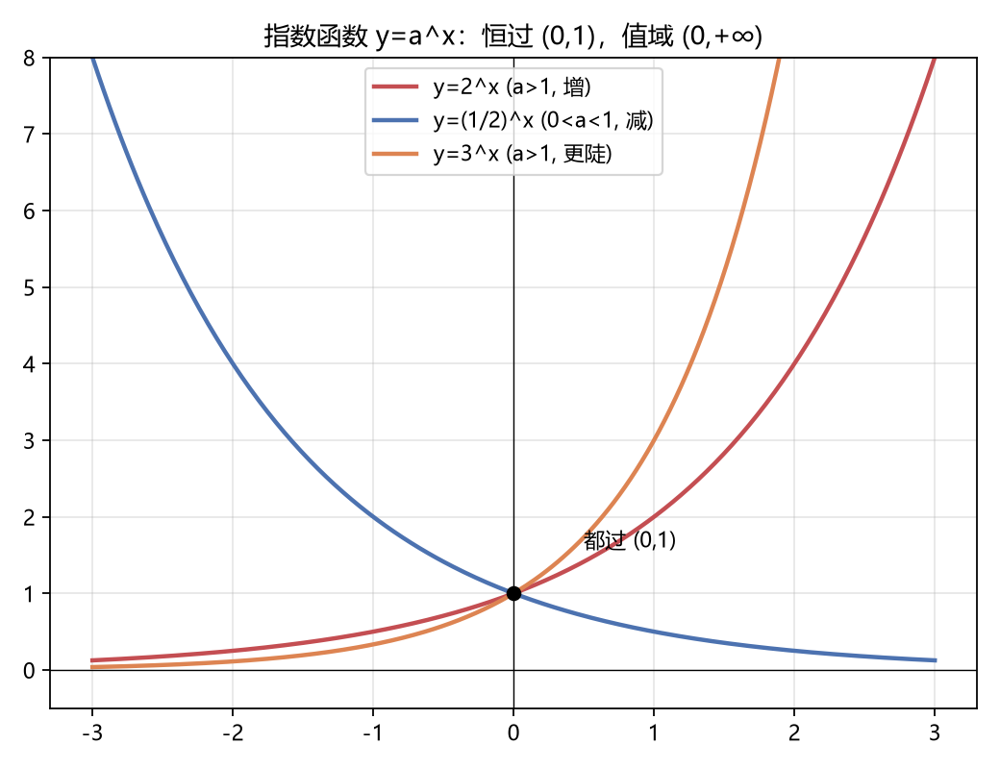
性质对照表：
| 性质 | a>1（如 y = 2x） | 0<a<1（如 y = (1/2)x） |
|---|---|---|
| 定义域 | R | R |
| 值域 | (0, +∞) | (0, +∞) |
| 定点 | 恒过 (0, 1) | 恒过 (0, 1) |
| 单调性 | 递增 | 递减 |
| 图象 | 左低右高 | 左高右低 |
关键点：ax 永远是正的（图象在 x 轴上方），恒过 (0,1)。a>1 时底数越大，第一象限越陡。
一个直觉：一张纸对折 30 次，厚度会超过珠穆朗玛峰——这就是指数增长"爆炸式"的可怕。y = 2x 一开始慢，后来陡得竖起来；这和第 04 章要讲的"指数模型"直接相关。
【跟讲例题 3.2-1】 f(x) = ax+1 − 2 恒过哪个定点？ 解：让指数部分 a 的指数取 0（因为 a0 = 1，与 a 无关）。令 x+1 = 0，x = −1，f(−1) = a0−2 = 1−2 = −1。恒过 (−1, −1)。
【跟讲例题 3.2-2】 比较 2^0.3 与 2^0.5 的大小。 解：底 2>1，指数函数递增。0.3<0.5，故 2^0.3 < 2^0.5。同底就看单调性，不用算具体值。
小结：指数函数恒正、恒过 (0,1)；a>1 增、0<a<1 减；定点题"让指数为 0"。
编者注·本质回扣：为什么一张表里 a>1 增、0<a<1 减，全看底数？说白了，指数函数就是"底数自己乘自己若干次"：底数比 1 大，乘的次数越多结果越往上爬（递增）；底数是 0 到 1 之间的小数，乘的次数越多结果越往 0 缩（递减）。恒过 (0,1) 也不是巧合——任何数的 0 次方都是 1，这就是"指数为 0 时与底数无关"。所以整章的单调性判断，本质就是在问一句：底数比 1 大还是小？定点题让指数等于 0，也是借 a0 = 1 这个与底数无关的点把参数"藏"起来。
【方法补丁·指数函数家族里的奇偶函数】（苏州教研·专题9，原书p.39） 高考常拿指数函数拼出奇偶函数，记住这四个"脸熟"的：
- 奇函数：f(x) = (ax − a−x)/2；f(x) = (ax − 1)/(ax + 1)（第二个可变形为 1 − 2/(ax+1)，单调性一眼看穿）。
- 偶函数：f(x) = a^|x|（图象是 y = ax 保留 y 轴右侧、左侧镜像翻折）；f(x) = (ax + a−x)/2。
【方法补丁·含参指数函数过定点】（苏州教研·专题12，原书p.48） 题里带个参数 a（a>0 且 a≠1），问"不管 a 怎么变都过哪个定点"——关键是让含 a 的那一项化为 a0 = 1：
- y = a^(x−1) + 3：令 x−1 = 0 ⇒ x = 1，y = 1+3 = 4，过定点 (1, 4)；
- y = a(x−3) + 5（a 为一次项系数）：令 x−3 = 0 ⇒ x = 3，过定点 (3, 5)（用的是 a·0 = 0）。
大白话：参数想"隐身"，就让它乘的那个东西等于 0，或让它的指数等于 0，剩下的 y 就定了。
3.3 对数
先讲对数是干嘛的。 指数问题问"2 的几次方是 8"，答案 3。换个角度问："以 2 为底 8 的对数是多少？"答案还是 3。对数就是把这种问题反过来问。
定义：如果 ab = N（a>0，a≠1），那么 b 叫做以 a 为底 N 的对数，记作 b = logaN。a 叫底数，N 叫真数。因为 ab = N>0，所以真数 N 必须 >0，负数和 0 没有对数。
两个必背恒等式：
- loga1 = 0（a0 = 1）；logaa = 1（a1 = a）。
- a^(logaN) = N（底数不动，指数和对数互相抵消）。
对数运算律（M、N>0）：
- loga(MN) = logaM + logaN（积的对数 = 对数的和）
- loga(M/N) = logaM − logaN
- logaMn = n·logaM
- 换底公式：logab = (log꜀b)/(log꜀a)（换成常用对数 lg 或自然对数 ln 算）
换底公式三个好用的推论（苏州教研·专题10，原书p.42）：
- log_{an} bm = (m/n)·logab（底数、真数同时开 n 次方 / 提 m 次方，提前变成系数 m/n）；
- log_{an} bn = logab（底数真数同次幂，约掉）；
- logab = 1/(log_b a)（底数真数颠倒，对数取倒数，如 log23 = 1/log32）。
常用记号：lg N = log10N；ln N = logeN（e ≈ 2.718）。
读一段历史：16、17 世纪，天文和航海要算很大的数相乘，天文学家累死累活。1614 年纳皮尔发明对数，把"乘法"变成"加法"——两个大数相乘，查对数表变成相加，再查回去。拉普拉斯说对数"等于把天文学家的寿命延长了许多倍"。你现在学的 loga(MN) = logaM+logaN，就是这把"省力钥匙"。
【跟讲例题 3.3-1】 计算 log28 + lg 0.01。 解：log28 是"2 的几次方是 8"， = 3。lg 0.01 是"10 的几次方是 0.01 = 10−2"， = −2。原式 = 3+(−2) = 1。
【跟讲例题 3.3-2】 用换底公式算 log23·log34·log48。 解：全换成以 2 为底：log34 = log24/log23，log48 = log28/log24。乘起来 = log23 · (log24/log23) · (log28/log24) = log28 = 3。中间全约掉了，这就是换底的好处。
易错点：loga(M+N) ≠ logaM + logaN！对数只对"乘除"拆成"加减"，不对"加法"拆。
两个苏州书特别强调的细节（苏州教研·专题10，原书p.42）：
- logax2 = 2loga|x|，不是 2logax！真数是 x2 时 x 可以取负值，提出来的 2 必须配绝对值；只有事先限定 x>0 时才等于 2logax。
- lg2 + lg5 = 1（因为 lg2 + lg5 = lg10 = 1）。化简常用对数式时，这一对经常一起冒出来，先凑出 lg2+lg5 往往能消项。
小结：对数是指数的逆运算；真数>0；积化和、商化差、幂提前；换底靠 lg 或 ln。
编者注·本质回扣：对数那几条运算律（积化和、商化差、幂提前）看着像新规矩，其实就是指数律倒过来写。指数里"同底相乘指数相加"，把这句话翻译成对数语言，就是 loga(MN) = logaM+logaN——乘法自动降成加法。纳皮尔发明对数的全部动机就在这：让天文学家把大数连乘查表变成连加。所以你不用把运算律当口诀硬背，只要记住"对数是指数的逆"，看到乘除就能自动想到加减；真数必须 >0，也只是因为 ab = N 永远是正数这一条的必然推论。
3.4 对数函数 y = logax（a>0 且 a≠1）
定义：形如 y = logax（a>0 且 a≠1） 的函数。它和指数函数 y = ax 互为反函数（图象关于直线 y = x 对称）。
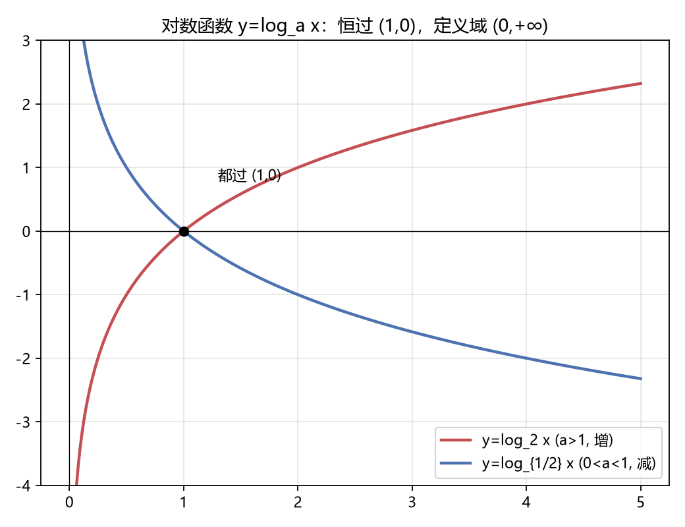
性质对照表：
| 性质 | a>1 | 0<a<1 |
|---|---|---|
| 定义域 | (0, +∞) | (0, +∞) |
| 值域 | R | R |
| 定点 | 恒过 (1, 0) | 恒过 (1, 0) |
| 单调性 | 递增 | 递减 |
陷阱：loga(x2) 的定义域是 x≠0；而 2logax 的定义域是 x>0。两者不是同一个函数（定义域不同）。
反函数关系：指数函数 y = ax 和对数函数 y = logax 互为反函数，它们的图象关于直线 y = x 对称。你把 y = 2x 的图象沿对角线 y = x 翻折，就得到 y = log2x。这解释了为什么一个恒过 (0,1)、另一个恒过 (1,0)——点 (0,1) 翻折过去就是 (1,0)。
【跟讲例题 3.4-1】 求 y = log2(x−1) 的定义域。 解：真数 x−1 > 0 ⇒ x>1，即 (1, +∞)。
小结：对数函数定义域是"真数>0"；恒过 (1,0)；a>1 增。
【方法补丁·对数函数家族里的奇偶函数】（苏州教研·专题10，原书p.42）
- 奇函数：f(x) = loga(√(x2+1) + x)（里面 √(x2+1)+x 与 √(x2+1)−x 互为倒数，一中和就出 f(−x)=−f(x)）；f(x) = loga[(1−x)/(1+x)]。
- 偶函数：f(x) = loga|x|（注意它和 y = |logax| 图象不一样：前者把 y 轴左侧也补出来，后者只翻折右侧）。
【方法补丁·含参对数函数过定点】（苏州教研·专题12，原书p.48） 同理，让真数等于 1（因为 loga1 = 0）：
- y = loga(x−2) + 4：令 x−2 = 1 ⇒ x = 3，y = 0+4 = 4，过定点 (3, 4)。
3.5 幂函数 y = xα
定义：形如 y = xα（α 是常数）的函数叫幂函数。注意它和指数函数的区别：幂函数是"底数在变、指数固定"，指数函数是"底数固定、指数在变"。
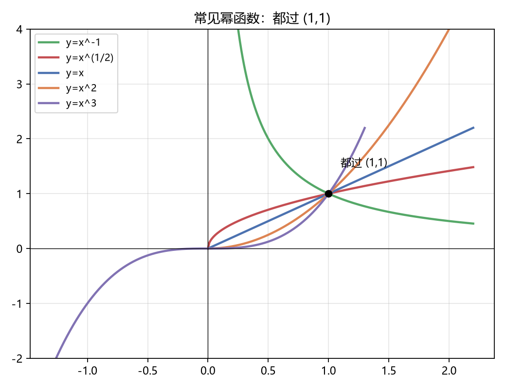
高考常考五种（α = −1, 1/2, 1, 2, 3）：
- y = x−1 = 1/x：过 (1,1)，(0,+∞) 递减。
- y = x^(1/2) = √x：定义域 [0,+∞)，递增，过 (0,0)、(1,1)。
- y = x：过原点直线。
- y = x2：过原点，偶函数。
- y = x3：过原点，奇函数，R 上递增。
共性：所有幂函数都过点 (1, 1)（因为 1α = 1）。
单调性规律（苏州教研·专题11，原书p.43）：在第一象限 (0, +∞) 内——
- 当 α > 0 时，y = xα 是增函数（图象从左下往右上，过 (0,0) 和 (1,1)）；
- 当 α < 0 时，y = xα 是减函数（图象以 x 轴、y 轴为渐近线，过 (1,1)）。
注意注意：上面只说了第一象限；第二、三象限有没有图象，要看定义域和奇偶性（如 y = x2、y = x3 是偶函数/奇函数，会延伸到 y 轴左侧）。
小结：幂函数底数变、指数固定；都过 (1,1)；α>0 在第一象限增、α<0 减。
3.6 比较大小四法（小题高频）
高考常给三个数（指数型、对数型、幂型）排大小。四招：
- 中间量法：先把数往 0、1 上靠。正数>0>负数；大于 1 的数>0到1之间的数>负数。
- 同底比单调：底数相同的指数/对数，直接用单调性比。
- 同指比底：指数相同的 am 与 bm（m>0），看幂函数单调性。
- 作差/作商：差与 0 比，商与 1 比。
【跟讲例题 3.6-1】 比较 a = 2^0.3，b = 0.32，c = log20.3 的大小。 解：先定符号和档次——a = 2^0.3>20 = 1；b = 0.09∈(0,1)；c = log20.3<log21 = 0。 所以 c < b < a。先分三类再排序，不用硬算。
【跟讲例题 3.6-2】 比较 log23 与 log25 的大小。 解：同底 2>1，对数函数递增。真数 3<5，故 log23 < log25。同底直接看单调性。
小结：比大小先分"正负、是否过 1"三档，再用单调性精排。
3.7 复合指对函数的单调性（"同增异减"）
遇到 y = a^(f(x)) 或 y = logaf(x) 这种"套娃"函数怎么判断单调？（苏州教研·专题11，原书p.43）
法则：同增异减——外层函数和内层函数单调性相同时，复合函数增；相反时，复合函数减（口诀"大同小异"）。
- 例：y = (1/2)^(x2−4x+3)。外层 (1/2)^u 是减函数（底<1）；内层 u = x2−4x+3 在 (−∞, 2] 减、在 [2, +∞) 增。外层减、内层减 ⇒ 复合在 (−∞, 2] 增；外层减、内层增 ⇒ 复合在 [2, +∞) 减。
- 求这种函数的值域，一般先换元（令 u = f(x)，先求 u 的范围，再套外层函数的值域）。
④ 例题详解（先做再看）
例题例 1（运算）：计算：(1/2)−2 + 27^(1/3) + log28 − lg 0.01。
自己做：负指数、分数指数、对数分别算。
解：(1/2)−2 = 4；27^(1/3) = n√27 = 3；log28 = 3；lg 0.01 = −2。原式 = 4 + 3 + 3 − 2 = 8。 要点：log28 是"2 的几次方等于 8"——直接想答案，别写公式。
例题例 2（比较大小）：比较 a = 2^0.3，b = 0.32，c = log20.3 的大小。
自己做：用中间量 0 和 1 框住。
解：2^0.3 > 20 = 1 ⇒ a > 1；0.32 ∈ (0, 1) ⇒ 0 < b < 1；log20.3 < log21 = 0 ⇒ c < 0。故 c < b < a。 要点：先定符号，再定是否大于 1，三类数自然排序。
例题例 3（图象定点）：函数 f(x) = ax+1 − 2（a > 0 且 a ≠ 1）恒过哪个定点？
自己做：让指数部分为 0。
解：令 x + 1 = 0 ⇒ x = −1，此时 f(−1) = a0 − 2 = 1 − 2 = −1。恒过 (−1, −1)。 要点：ax 过 (0,1)，平移/伸缩后"让底数项化为 a0"。
⑤ 出口检测
自测（15 分钟，每题 2 分）：
- 计算：log39 + log327。
- 计算：4^(3/2)。
- 比较 a = log23 与 b = log21.5 的大小。
- 求函数 y = log2(x − 1) 的定义域。
- 化简：log26 − log23。
真题验收：数学自学系统素材\02_历年真题(新高考Ⅰ卷)\ 中任选 2020–2024 卷 2 道指数/对数运算或比较大小小题（多在选择题第 6–8 题区间）：每题 2 分钟、全对过关。
过关标准：自测 ≥ 10 分 且 真题全对 → 打卡，进入 04 章。
课后习题（分层练习）
A 组 基础巩固
- 【考点：指数运算】计算：(−8)^(1/3) × 2−1。
- 【考点：对数定义】把指数式 32 = 9 写成对数式；把 log5125 = 3 写成指数式。
- 【考点：对数运算】化简：log327 + lg1000 − ln1。
- 【考点：对数运算律】计算：log26 − log23。
- 【考点：指数函数定点】函数 f(x) = 2·3x − 1 恒过哪个定点？
- 【考点：对数定义域】求 y = √(log2x) 的定义域。
B 组 能力提升
- 【考点：换底公式】计算 (log29)·(log32)。
- 【考点：比较大小】比较 a = log0.53，b = log0.52，c = 0.53 的大小。
- 【考点：指数对数互化】已知 log2x = 3，求 x；已知 4x = 1/16，求 x。
- 【考点：幂函数】幂函数 y = f(x) 过点 (2, 8)，求它的解析式，并判断它的奇偶性。
C 组 真题挑战
-
【考点：指对比较大小】（2022 新高考Ⅰ卷 第7题）设 a = 0.1e^0.1，b = 1/9，c = −ln0.9，则（ ） A. a<b<c B. c<b<a C. c<a<b D. a<c<b
-
【考点：对数比较大小】（2025 新高考Ⅰ卷 第8题）若实数 x,y,z 满足 2+log2x = 3+log3y = 5+log5z，则 x,y,z 的大小关系不可能是（ ） A. x>y>z B. x>z>y C. y>x>z D. y>z>x
⑥ 常见坑清单
- loga(M + N) ≠ logaM + logaN（对数不分配加法）。
- loga(x2) 与 2logax 定义域不同，不是同一函数。
- ax 恒正：值域 (0, +∞)，不会取到 0 或负数。
- 底数范围：a > 0 且 a ≠ 1；真数必须 > 0，负数没有对数。
- 比较大小先定符号再定 1，别硬算。
本章公式速查表
与《高中数学常用公式·修订版》第二部分 8（基本初等函数）核对一致。
指数运算
指数律：am·an = am+n，(am)n = amn，(ab)n = anbn（a>0）
- 大白话：同底相乘指数加，幂上叠幂指数乘。
- 用的时候：化简指数式先看底数是否相同；am÷an=am−n。
分数指数幂：a^(m/n) = n√(am)，a^(−m/n) = 1/a^(m/n)（a>0）
- 大白话：根号就是分数指数，负指数就是倒数。
- 用的时候：如 4^(3/2)=(√4)3=8；4√(x2) 要带绝对值。
- 记忆要点：分子是"几次方"，分母是"开几次根"。
对数的定义与恒等式
对数定义：ab = N ⇔ logaN = b（a>0，a≠1，N>0）
- 大白话：a 的几次方等于 N，那个"几次方"就是 logaN。
- 用的时候：负数和 0 没有对数；真数必须 >0。
对数恒等式：a^(logaN) = N
- 大白话：底数不动，指数和对数互相抵消。
- 用的时候：见到 a^(logaN) 直接换成 N。
loga1 = 0，logaa = 1
- 大白话：a0=1，a1=a，所以 log 出来就是 0 和 1。
- 用的时候：常数秒算，别硬套公式。
对数运算律
积：loga(MN) = logaM+logaN
- 大白话：乘出来的对数 = 对数相加。
- 用的时候：注意 loga(M+N) 不能拆！只对乘除拆加减。
商：loga(M/N) = logaM−logaN
- 大白话：相除的对数 = 对数相减。
- 用的时候：M、N 都得 >0。
幂：logaMn = n·logaM
- 大白话：幂上的 n 可以搬到前面当系数。
- 用的时候：化简 log29=2log23。
换底公式：logab = log꜀b / log꜀a
- 大白话：随便换个好算的底（lg 或 ln）来比。
- 用的时候：连乘 log23·log34·log48 中间全约掉，只剩 log28=3。
换底推论：log_{an}bm = (m/n)logab；logab = 1/log_b a（苏州教研·专题10）
- 大白话：底数真数的次方提前当系数；底数真数一颠倒，对数就取倒数。
- 用的时候：log29 = log_{22}32 = log23（同次约掉）；log23 = 1/log32。
- 记忆要点：logax2 = 2loga|x|（提幂必带绝对值），常用 lg2+lg5=1。
指数函数
y = ax（a>0，a≠1）：定义域 R，值域 (0,+∞)，恒过 (0,1)
- 大白话：指数函数永远为正，都从 (0,1) 出发。
- 用的时候：a>1 递增、0<a<1 递减；定点题"让指数为 0"，如 ax+1−2 过 (−1,−1)。
对数函数
y = logax（a>0，a≠1）：定义域 (0,+∞)，值域 R，恒过 (1,0)
- 大白话：真数必须 >0，图象都过 (1,0)。
- 用的时候：a>1 递增；它和 y=ax 互为反函数，图象关于 y=x 对称。
幂函数
y = xα：都过点 (1,1)；α>0 在 (0,+∞) 增，α<0 在 (0,+∞) 减（苏州教研·专题11）
- 大白话：底数在变、指数固定，x=1 时永远是 1；正指数第一象限往上走，负指数第一象限往下走。
- 用的时候：常见 α=−1,1/2,1,2,3；注意和指数函数区分（谁在底数谁在指数）。
指对函数里的奇偶模型与定点（苏州教研·专题9/10/12）
奇函数：f(x) = (ax−a−x)/2、f(x) = (ax−1)/(ax+1)、f(x) = loga(√(x2+1)+x)；偶函数：f(x) = a^|x|、f(x) = (ax+a−x)/2、f(x) = loga|x|
- 大白话：指数项"正负成对"拼出奇偶，对数套"√(x2+1)±x"也出奇函数。
- 用的时候：含参 a 的指对函数过定点——令 a 的指数=0（或令真数=1），参数即隐身，剩下的坐标就是定点。
- 记忆要点：a^(x−1)+3 过 (1,4)；loga(x−2)+4 过 (3,4)。
比较大小
先分档（0、1），再用单调性精排
- 大白话：正数>0>负数，大于 1 的>0到1的>负数，先分三类再排。
- 用的时候：同底看单调、同指看幂函数；两数接近时构造函数或作差作商。
- 记忆要点："先定符号，再定过不过 1"。
高级方法·进阶
对应方法手册：1.7 小题·比较大小的构造模型速查。下面把本章的"比较大小"从"四招"升级成"构造函数"。
进阶 1：中间量 + 同型函数构造（不超纲，高考可放心用）
- 适用信号：三个数，一个指数型、一个对数型、一个常数型，比大小。
- 操作步骤：① 先用 0 和 1 把三个数分到不同档（正/负、大于1/小于1）；② 同档的再用同底单调性或构造 f(t)=… 比。
- 例：a=0.1e^0.1、b=1/9、c=−ln0.9=ln(10/9) 都在 0.1 附近，靠切线放缩 e^0.1≈1.105、ln(1.111)≈0.105 分出 c<a<b。
- 依据：指数/对数函数单调性（课标内）。✓ 不超纲（但 e^0.1 这类近似要会估）。
进阶 2：等号设值法（对应手册 1.7，不超纲）
- 适用信号：出现 "k+logax = k+log_b y = …" 这种连等式。
- 操作步骤：设公共值为 k，把 x、y、z 全用 k 表示（x=a^(k−…），再对不同 k 讨论大小关系。
- 例：2025 新高考Ⅰ卷第8题，设公共值为 k，x=2^(k−2)、y=3^(k−3)、z=5^(k−5)，逐个 k 试即知 x>z>y 不可能。
- 依据：指数与对数互化（课标内）。✓ 不超纲。
自测答案：1. 2 + 3 = 5；2. (√4)3 = 23 = 8；3. log23 > log21.5（底 2 > 1 递增）；4. x − 1 > 0 ⇒ x > 1，即 (1, +∞)；5. log22 = 1。
课后习题答案
A 组
- (−8)^(1/3)=n√(−8)=−2；2−1=1/2。原式 = −2 × 1/2 = −1。
- 32=9 ⇔ log39=2；log5125=3 ⇔ 53=125。
- log327=3（33=27）；lg1000=3（103=1000）；ln1=0。原式 = 3+3−0 = 6。
- log26−log23 = log2(6/3) = log22 = 1。
- 令 3x 的指数为 0：x=0，f(0)=2×1−1=1。恒过 (0, 1)。
- 真数 x>0 且根号内 log2x≥0 ⇒ x≥1。定义域 [1, +∞)。
B 组
- log29 = log232 = 2log23；原式 = 2log23·log32 = 2·(log23·log32)。由换底 log32 = 1/log23，相乘=1，故原式 = 2。
- log0.5 底 <1 递减：真数 3>2 ⇒ log0.53 < log0.52，两者都 <0（真数>1）；c=0.53=0.125>0。故 a < b < 0 < c，即 a<b<c。
- log2x=3 ⇒ x=23=8；4x=1/16=4−2 ⇒ x=−2。
- 设 y=xα，过 (2,8)：2α=8=23 ⇒ α=3，f(x)=x3。f(−x)=(−x)3=−x3=−f(x)，为奇函数。
C 组
- a=0.1·e^0.1≈0.1105；b=1/9≈0.1111；c=−ln0.9=ln(10/9)≈0.1054。排序 c<a<b，选 C。
- 设公共值为 k，则 x=2^(k−2)，y=3^(k−3)，z=5^(k−5)。取 k=0：x=1/4,y=1/27,z=1/3125，x>y>z（A 可能）；k=6：x=16,y=27,z=5，y>x>z（C 可能）；k=8：x=64,y=243,z=125，y>z>x（D 可能）。要出现 x>z>y，需 x>z 且 z>y，即 (x/z>1) 与 (z/y>1) 同时成立——经检验无这样的 k，故 x>z>y 不可能，选 B。
一通百通
这一章的"通用骨架"是三步：① 先盯住底数（a>1 还是 0<a<1，这一条定了增还是减）→ ② 再用定点和中间量把数分档（指数恒正、对数真数>0，往 0 和 1 上靠，先分出正负、是否过 1）→ ③ 最后拿同底单调性或指对互化精排。高考里不管是指对运算、求过定点还是三个数比大小，本质都是这三步：先判底数定方向，再借 0、1 分档，最后用单调性收口。会做一道比大小题，就会做这一类；这套"先定底数、再分档、后精排"的顺序，04 章零点、05 章导数里估函数值时还会接着用。
跨章结合
- 03 的"指对估值 + 单调性" 碰 02 章的比大小骨架：典型如 2022 新高考Ⅰ卷 T7（a=0.1e^0.1、b=1/9、c=−ln0.9 三数排序）。这题没人硬算 e^0.1，靠的是 02 章"先分正负、再分是否过 1"的分档动作，加上 03 章"同底看单调、指对互化"的工具，三个数各归其档再精排——想通了是"比"出来的，不是"算"出来的。
- 03 的"指数爆炸增长" 碰 04 章零点与二分法：ex、ln x 这些曲线和一条直线能有几个交点，本质就是问"爆炸增长的指数曲线"和"匀速直线"谁先追上谁（综合原理说明，非真题）。04 章用零点定理判断交点个数，用的还是本章这几条曲线的脾气。
本章与前后章
本章接在第 02 章函数性质之后：02 章教你的"定义域、单调、奇偶"那套通用动作，本章第一次套在指数、对数、幂这三个具体函数上——定义域看真数>0、单调看底数和 1 的大小、奇偶用正负成对的模型判断，全是 02 章骨架的复用。本章是"基本初等函数"的总仓库，向后直接喂给第 04 章函数的应用与方程（零点、二分法、指数模型）和第 05 章导数（ex、ln x 是导数题里最常出现的函数）。学完本章，你手里多了三个"会爆炸增长、会平滑收缩"的具体函数，后面估任何函数值、画任何草图都离不开它们。
高考怎么考
本章在新高考Ⅰ卷里以"指数对数运算 + 比大小"小题为主，多在选择题第 6–8 题区间，常和函数性质揉在一起考：2022 卷 T7（指对常数混比）、2025 卷 T8（连等式设值比大小）都是本章地盘。考法高度套路化：运算靠指数律、对数律和换底，比大小靠"先分正负与是否过 1、再用单调精排"。它不考偏题怪题，就考你底数判断熟不熟、0 和 1 这两个中间量用得快不快——这正是本章"一通百通"骨架要练到肌肉记忆的原因。
函数的应用与方程（零点、二分法、函数模型）
公式速查：修订版 第2部分
本章本质核心：函数应用的本质是"两次翻译"——先把一个现实问题（或一个带参数的方程、不等式）翻译成"函数的零点、恒成立或最值"，再把算出来的函数结论翻译回题目要的答案。本章从零点存在定理、二分法、零点个数，到恒成立、根的分布、增长模型，全都是这一个原理的变体：先把问题建成 y = f(x)，再靠图象和最值说话。
为什么有用：想通了"问题 → 函数 → 结论 → 答案"这条翻译链，你就不必死记"恒成立看 max/min""二分法砍一半"——遇到任何带参数的方程、不等式、利润最值题，都能自己推出该看哪个最值、根大概落在哪，而不是套模板碰运气。
① 门槛自测（进章前，10 分钟）
- 解方程 x2 − 3x + 2 = 0。
- 二次函数 y = x2 − 1 的图象与 x 轴有几个交点？
- 求 f(2)（f(x) = x3 + x − 1）。
- 判断：f(x) = x2 + 1 与 x 轴有交点吗？为什么？
- 指数函数 y = 2x 与 y = 3x 谁增长更快？
判定：5 题答对 4 题以上 → 进章。
② 学习目标
- 理解函数零点 = 方程根 = 与 x 轴交点的横坐标（三件同一件事）
- 会用零点存在定理判断零点所在区间；会数零点个数
- 掌握二分法求近似解的步骤
- 认识三类增长模型（指数/对数/幂）的差异
③ 正文讲解
本章地图：
| 小节 | 你将学会 | 高考地位 |
|---|---|---|
| 3.1 方程的根与零点 | 零点是什么、和方程根的关系 | 地基 |
| 3.2 零点存在定理 | 怎么判断"一定有根" | 大题工具 |
| 3.3 二分法 | 不用公式，一步步逼近根 | 课标要求 |
| 3.4 零点个数判断 | 一个函数有几个根 | 数形结合 |
| 3.5 三种增长模型 | 指数/线性/对数谁跑得快 | 应用题背景 |
3.1 方程的根与函数的零点
先解决一个老问题。 你会解 x−1 = 0（根 x = 1），会解 x2−3x+2 = 0（根 x = 1,2）。但 x3−x−1 = 0 怎么解？没有求根公式。这时候换个思路：解方程 f(x) = 0，就是找函数 y = f(x) 的图象和 x 轴的交点。
定义：使 f(x) = 0 的实数 x 叫做函数 y = f(x) 的零点。 换句话说：方程 f(x) = 0 有实数根 ⇔ 函数 y = f(x) 有零点 ⇔ 图象与 x 轴有交点。（三件事说的是一回事）
【跟讲例题 3.1-1】 求 f(x) = x2−3x+2 的零点。 解：令 x2−3x+2 = 0，(x−1)(x−2) = 0，x = 1 或 x = 2。零点是 1 和 2。（注意：零点是数 x，不是点 (x,0)。）
小结：零点 = 方程的实根 = 图象与 x 轴交点的横坐标。注意零点是一个数 x，不是一个点。
3.2 零点存在定理
问题来了：我怎么知道一个函数"在某个区间里一定有零点"，而不用真的解出来？
零点存在定理：如果函数 y = f(x) 在区间 [a, b] 上的图象是一条连续不断的曲线，并且 f(a)·f(b) < 0（两端一正一负），那么函数 y = f(x) 在区间 (a, b) 内至少有一个零点，即至少存在一个 c∈(a,b) 使 f(c) = 0。
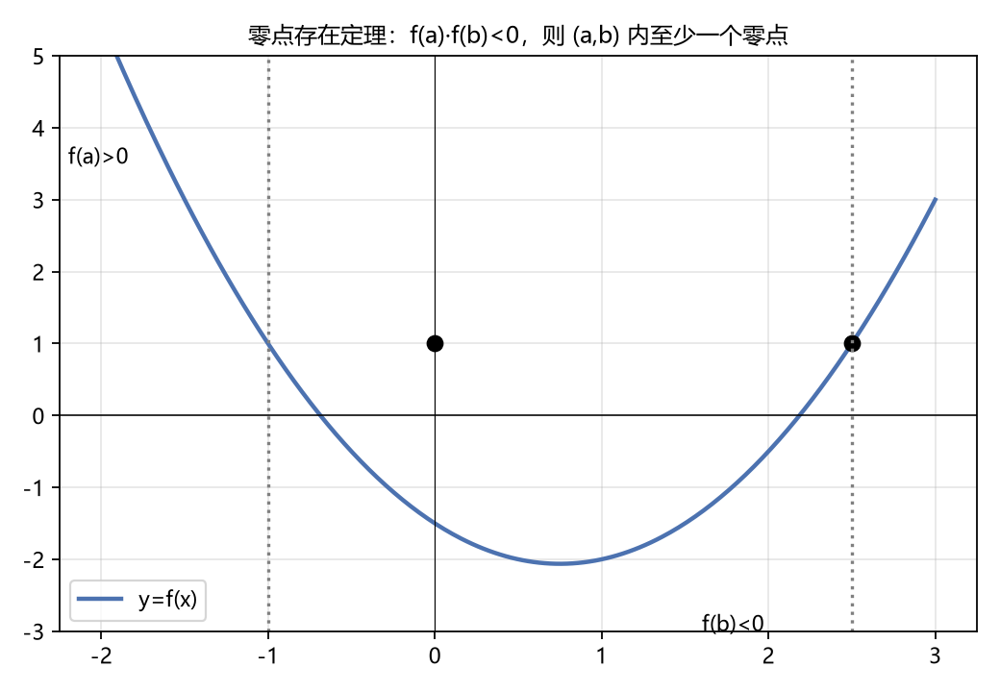
为什么是这样：图象从 x 轴上方（f(a)>0）连续走到下方（f(b)<0），中间必然至少穿过 x 轴一次。直觉就像走楼梯从楼上到楼下，中间一定过了某个楼层。
注意三个前提：
- 图象要连续不断（有断点不成立）；
- f(a)·f(b)<0 是充分条件，不是必要——两端同号也可能有零点（比如抛物线顶点正好在 x 轴上）；
- 定理只保证"至少一个"，不保证只有一个。
为什么要强调"连续"？ 举个反例：分段函数 f(x) = 1/x，取 a = −1、b = 1，f(a) = −1、f(b) = 1，乘积<0，但 f 在 x = 0 处断开（无定义），它根本不穿过 x 轴——1/x = 0 无解。可见"连续不断"是定理的命门，少了它就不能乱用。
【跟讲例题 3.2-1】 f(x) = lnx+x−2 在区间 (1,2) 内有没有零点？ 解：f(1) = ln1+1−2 = −1<0；f(2) = ln2+2−2 = ln2>0。f(1)·f(2)<0，且 f 连续，故 (1,2) 内至少有一个零点。
小结：两端异号 + 连续 ⇒ 区间内至少一个零点；这是"定性判断有没有根"的利器。
编者注·本质回扣：这条"两端异号就有根"的定理，本质上就是本章主线"两次翻译"的第一步——把"这个方程到底有没有解"这种硬算不出来的问题，翻译成"图象连不连续、两端是不是一正一负"这个看得见的问题。为什么死咬"连续不断"？因为一断，曲线就可能在 x 轴上方直接跳走、根本不穿轴（前面 1/x 的反例就是这个意思）。为什么只说"至少一个"不说"只有一个"？因为一条曲线可以上下穿好几次。记住它只负责"定性地告诉你根在不在里面"，到底有几个、精确值多少，是后面数个数和二分法去补的活。
3.3 二分法
零点存在定理只告诉我们"根在里面"，但到底是多少？ 二分法就是一个笨办法但很可靠的逼近法。
流程（每次把区间对半砍）：
- 取区间中点 c = (a+b)/2，算 f(c)。
- 若 f(c) = 0，c 就是根；否则看 f(a) 和 f(c) 异号 → 根在 (a,c)；f(c) 和 f(b) 异号 → 根在 (c,b)。
- 新区间长度是原来的一半。重复，直到区间足够小（达到精度要求）。
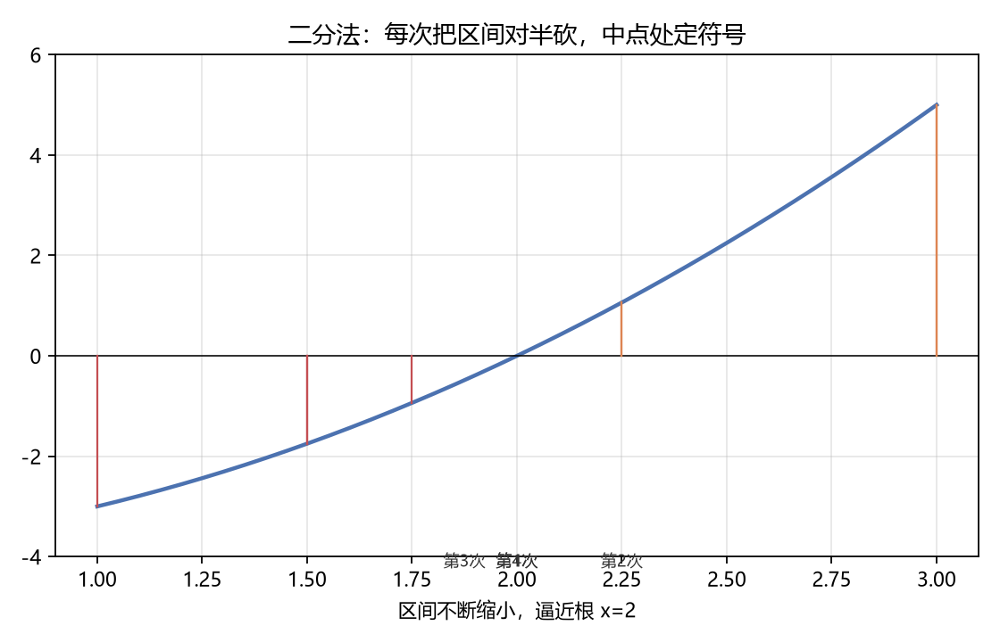
【跟讲例题 3.3-1】 用二分法估计 x3−x−1 = 0 在 (1,2) 的根（f(1) = −1<0，f(2) = 5>0）。 解：中点 1.5，f(1.5) = 3.375−1.5−1 = 0.875>0，根在 (1,1.5)。 中点 1.25，f(1.25) = 1.95−1.25−1 = −0.30<0，根在 (1.25,1.5)。 中点 1.375，……如此反复，区间越来越小，就逼近了真根 ≈ 1.325。
小结：二分法 = 反复取中点、看符号、砍一半；不用会求根公式也能把根算到任意精度。
精度怎么定：题目往往要求"精确到 0.1"。做法是一直砍到区间长度 <0.2（这样区间中点到两端误差都 <0.1）。砍 n 次后区间长度是 (b−a)/2n，想精确到 ε，就砍到 (b−a)/2n<ε 为止。这是计算机求根的经典算法，你手机上的某些数值求解背后就是它。
3.4 零点个数判断
知道"有零点"后，常问"到底有几个"。 方法：
- 算特殊点的函数值：看 f 在哪些点变号，每变号一次至少一个零点。
- 结合单调性：若函数在区间上单调，则变号区间里恰好一个零点（单调把"至少一个"升级成"恰一个"）。
- 画图象：看曲线和 x 轴交几次。
【跟讲例题 3.4-1】 f(x) = 2x+x−3 有几个零点？ 解：f(0) = 1+0−3 = −2<0；f(1) = 2+1−3 = 0（x = 1 是零点）；f(2) = 4+2−3 = 3>0。又 f(x) = 2x+x−3 是增函数（2x 增、x 增，加起来增）。单调函数一旦变号就只有一个零点，故 f 只有一个零点 x = 1。
小结：零点个数 = 变号次数 × 单调性；单调+变号 ⇒ 恰一个零点。
3.5 三种函数增长模型
生活里到处是增长：存钱的利息（指数）、匀速走路（线性）、经验积累越到后面越慢（对数）。数学上把它们分开看。
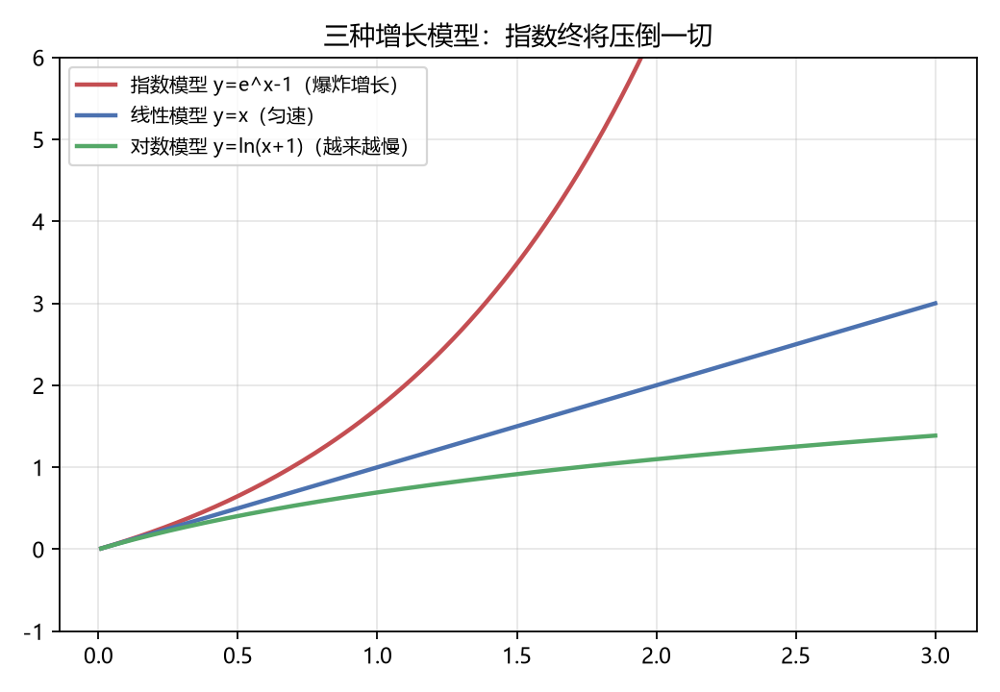
| 模型 | 形式 | 增长特点 |
|---|---|---|
| 指数模型 | y = a·bx（b>1） | 开头慢，后来爆炸，最终最快 |
| 线性模型 | y = kx+b | 匀速，恒定斜率 |
| 对数模型 | y = lgx / lnx | 越涨越慢，后劲不足 |
| 幂模型 | y = xn（n>0） | 介于线性和指数之间 |
关键结论：在 x 足够大时，指数函数 y = ax（a>1）会最终超过任何幂函数和对数函数。这就是"指数爆炸"——别被它开头慢骗了。
一个生活对照：线性模型像领死工资，每年涨得一样多；对数模型像学新东西，刚开始进步飞快，到后来瓶颈了、涨不动；指数模型像利滚利，基数越大滚得越快。理解了这三种曲线的"脾气"，遇到应用题里的"细胞分裂、复利、传染病扩散"就能立刻反应过来该用哪种模型。
【跟讲例题 3.5-1】 y = 2x 与 y = x2，当 x 很大时谁更大？ 解：x = 10 时，2x = 1024，x2 = 100，2x 反超。x 再大，指数增长甩开平方增长。
指数增长模型（苏州教研·专题16，原书p.60）：原有量为 N，每次增长率为 p，经过 x 次增长后
y = N(1+p)x（x∈N）
- 大白话：利滚利、细胞分裂都是这个式子；反过来 p<0 就是衰减（半衰期）。
- 复利问题、半衰期问题都套它。如半衰期 P = P0e^(−kt) 也是指数衰减。
解应用题四步（苏州教研·专题16，原书p.60）：审题（找等量关系）→ 建模（设变量、注明实际定义域）→ 解模（求最值/解不等式）→ 回归（答案说回实际问题）。数量关系多时，先分类列式，哪怕算不完也能拿步骤分。
【跟讲例题 3.5-2（苏州教研·专题16，原书p.61）】 某商品进货价 14 元/件，售价 15 元时每天卖 500 件；每涨价 1 元，日销量少 20 件。定价多少时日利润最高？ 解：设涨价 x 元，则售价 (15+x) 元，单件利润 (15+x−14) = (1+x) 元，日销量 (500−20x) 件。 日利润 P = (1+x)(500−20x) = −20x2 + 480x + 500。这是开口向下的二次函数，顶点 x = −480/(2 × (−20)) = 12。 此时定价 = 15+12 = 27 元，日利润 P = (1+12)(500−240) = 13 × 260 = 3380 元。 要点："涨价多少、少卖几件"这类利润题，永远是建一个二次函数，顶点即最值。
小结：短期看幂/线性，长期看指数；指数模型"笑到最后"；应用题四步走，利润题建二次函数。
3.6 恒成立与能成立（压轴常客，多思多悟）
这是高考"每次必考"的一类题（苏州教研·专题13，原书p.52，原话"重点掌握！每次必考！"）。一句话：求参数范围，先想"恒成立⇔最值"。
四条核心转化（配合 y = f(x) 的图象，一眼就懂）：设 f(x) 在某区间上有最大值 max、最小值 min。
- λ ≥ f(x) 恒成立（λ 始终压在 f(x) 上方）⇔ λ ≥ f(x)max；
- λ ≤ f(x) 恒成立（λ 始终贴在 f(x) 下方）⇔ λ ≤ f(x)min；
- λ ≥ f(x) 有解（只要存在一个 x 让 λ≥f(x)）⇔ λ ≥ f(x)min；
- λ ≤ f(x) 有解（只要存在一个 x 让 λ≤f(x)）⇔ λ ≤ f(x)max。
大白话："恒成立"看的是离得最远那个最值（上方就压最高、下方就托最低）；"能成立/有解"看的是离得最近那个最值（上方只要够到最低、下方只要够到最高）。注意等号端点要不要取，单独检验。
主力方法：分离参数。把 λ 单独挪到一边：如 λf(x) = g(x) ⇒ λ = g(x)/f(x)，问题就变成"求右边那个函数的最值/值域"。若参数拆不开，才用"含参转化法"（按参数讨论）。
两类常见的恒成立（苏州教研·专题13补充，原书p.53）：
- 一次函数 f(x) = kx+b 在区间 [m,n] 上恒正 ⇔ f(m)>0 且 f(n)>0（一次函数笔直，两头正中间必正）；
- 二次函数 f(x) = ax2+bx+c 在 R 上恒正 ⇔ a>0 且 Δ = b2−4ac<0（开口向上且与 x 轴不相交）；恒负则 a<0 且 Δ<0。
【跟讲例题 3.6-1（苏州教研·专题13，原书p.54）】 已知 f(x) = x2−x+1，若在区间 [−1,1] 上不等式 f(x)>2x+m 恒成立，求 m 的范围。 解：分离参数。f(x)>2x+m ⇔ m < x2−3x+1。令 g(x) = x2−3x+1，要 m 小于 g(x) 在 [−1,1] 上的最小值（恒成立看最低）。g(x) 对称轴 x = 3/2，在 [−1,1] 上单调递减（导数 2x−3<0），最小值 g(1) = 1−3+1 = −1。故 m < −1。
【跟讲例题 3.6-2（苏州教研·专题13，原书p.54）】 不等式 x2+ax+1 ≥ 0 对任意 x∈(0, 1/2] 恒成立，求 a 的最小值。 解：分离参数：a ≥ −(x+1/x)。要 a 大于等于 −(x+1/x) 在 (0,1/2] 上的最大值。x+1/x 在 (0,1/2] 递减，故 −(x+1/x) 在该区间递增，最大值在 x = 1/2：−(1/2+2) = −5/2。故 a ≥ −5/2，a 的最小值为 −5/2。
【跟讲例题 3.6-3（苏州教研·专题13，原书p.54）】 |x+1|+|2x−1|−m ≥ 0 对 x∈R 恒成立，求 m 的范围。 解：分离参数 m ≤ |x+1|+|2x−1|。记 g(x) = |x+1|+|2x−1|，关键点点 x = −1、x = 1/2 分段讨论：x≤−1 时 g = −3x（递减），−1≤x≤1/2 时 g = −x+2，x≥1/2 时 g = 3x（递增）。g(x) 在 x = 1/2 处取最小值 g(1/2) = |3/2|+0 = 3/2。恒成立要求 m ≤ 这个最小值，故 m ≤ 3/2。
小结：恒成立看最值（上方压 max、下方托 min）；分离参数是主力；一次函数区间恒正看两头，二次函数 R 上恒正看 a>0 且 Δ<0。
编者注·本质回扣：这四条转化看着像要背的口诀，本质还是本章"靠最值说话"那条主线。为什么"恒成立"非得去翻最大值、最小值？因为"恒成立"就是参数 λ 要压得住（或托得住）函数 f(x) 的全部取值——它得比 f 最高的那个还高、或比最低的那个还低，自然就落到 max、min 头上。"能成立/有解"宽松得多：只要够着一次就行，所以看的是离得最近的那个最值。分离参数不过是把 λ 单独拎到一边，让右边变成一个纯粹求最值的函数。说白了，这四条不是四个结论，而是"翻译回最值"这一个动作的四种说法。
3.7 二次方程根的分布（数形结合经典）
"方程 ax2+bx+c = 0 的根落在哪个区间"这类题，苏州书给了一句口诀（专题15，原书p.57）：两根在同一区间，三抓——一抓判别式 Δ、二抓对称轴 −b/2a、三抓区间端点函数值；两根不在同一区间，一抓——只抓端点函数值符号。
设 a>0，f(x) = ax2+bx+c，两根 x1≤x2。
情形一：两根落在同一区间（三抓）：
- 两根都小于 m（x1,x2∈(−∞,m)）⇔ Δ≥0，−b/2a<m，f(m)>0；
- 两根都大于 m（x1,x2∈(m,+∞)）⇔ Δ≥0，−b/2a>m，f(m)>0；
- 两根都落在 (m,n) 内 ⇔ Δ≥0，m<−b/2a<n，f(m)>0，f(n)>0。
情形二：两根分居两侧（一抓端点值）：
- 一根大于 m、一根小于 m（x1<m<x2）⇔ f(m)<0（开口向上，m 点在 x 轴下方，必夹在两根之间）。
【跟讲例题 3.7-1（苏州教研·专题15，原书p.58）】 已知方程 x2+λx+3λ−9 = 0 的一根比 1 大、另一根比 1 小，求 λ 的范围。 解：这是"一根大于 m、一根小于 m"的情形（m = 1），直接用一抓：令 f(x) = x2+λx+3λ−9，条件即 f(1)<0。 f(1) = 1+λ+3λ−9 = 4λ−8<0 ⇒ λ<2。 要点：开口向上的抛物线，要 1 夹在两根中间，只要 f(1) 掉到 x 轴下方即可，Δ 都不用算。
小结：同区间三抓（Δ、对称轴、端点值），异区间一抓（端点值符号）；画抛物线脑子里过一遍，符号就不会反。
④ 例题详解（先做再看）
例题例 1（零点存在定理）：函数 f(x) = x3 + x − 1 在下列哪个区间内必有零点？ A. (0, 1) B. (1, 2) C. (2, 3) D. (3, 4)
自己做：算端点值，找符号相反的区间。
解：f(0) = −1 < 0；f(1) = 1 > 0。f(0)·f(1) < 0 且 f 连续 ⇒ 零点在 (0, 1)，选 A。 要点：逐个端点试符号，异号区间即答案；x3 这种多项式恒连续，不用写证明。
例题例 2（零点个数）：求方程 2x + x − 2 = 0 的实数根的个数。
自己做：拆成两个函数看交点。
解：2x = 2 − x。左侧 y = 2x 递增，右侧 y = 2 − x 递减，两图象至多一个交点。取两点试高低：x = 0 时，20 = 1，2 − 0 = 2，左 1 < 右 2（右高）；x = 1 时，21 = 2，2 − 1 = 1，左 2 > 右 1（左高）。一增一减，高低在 (0,1) 间翻转一次，故必有一个交点。实数根个数为 1。 要点："一增一减"或"一增一平"用交点数秒杀；一增一增要小心。
例题例 3（二分法）：用二分法求 f(x) = x3 − 2 在区间 (1, 2) 内的零点近似值（精确到 0.25）。
自己做：走三步。
解：f(1) = −1 < 0，f(2) = 6 > 0。 第一次：c = 1.5，f(1.5) = 1.375 > 0 → 零点在 (1, 1.5)； 第二次：c = 1.25，f(1.25) = −0.047 < 0 → 零点在 (1.25, 1.5)； 第三次：c = 1.375，f(1.375) ≈ 0.6 > 0 → 零点在 (1.25, 1.375)，区间长 0.125 < 0.25。 取近似值 1.25（或 1.3）。要点：每次只看 f(中点) 符号，区间一分为二。
⑤ 出口检测
自测（15 分钟，每题 2 分）：
- 判断 f(x) = ex + x − 2 在区间 (0, 1) 内是否有零点。
- 求方程 x2 − 4x + 3 = 0 的根的个数。
- 函数 f(x) = x2 − 2x 的零点是什么？
- 为什么 f(x) = x2 在 [−1, 1] 有零点但端点异号不成立？
- 描述二分法第一步做什么。
真题验收：2020–2024 新高考Ⅰ卷中零点/函数图象交点类小题 1~2 道（多在选择题 8–12 题区间）：每题 3 分钟、全对过关。
过关标准：自测 ≥ 10 分 且 真题全对 → 打卡，进入 05 章。
课后习题（分层练习）
A 组 基础巩固
- 【考点：零点定义】求 f(x) = x2−5x+6 的零点。
- 【考点：零点存在定理】f(x) = x3−2x−1，判断 f(x) 在区间 (1,2) 内是否有零点。
- 【考点：零点存在定理】f(x) = lnx−2/x，f(1) = −2<0，f(e) = 1−2/e>0，能得出什么结论？
- 【考点：二分法】用二分法求 x2−2 = 0 在 (1,2) 的根，第一次中点 x = 1.5 时 f(1.5) ≈ 0.25>0，下一步该在哪个区间找？
-
【考点：增长模型】下列哪个是"爆炸增长"模型（ ） A. y = 2x B. y = 2·1.1x C. y = lgx D. y = √x
-
【考点：零点个数】f(x) = x−lnx 的零点个数是？（提示：f(1) = 1>0，想想最小值）
B 组 能力提升
- 【考点：零点个数+单调】证明 f(x) = 3x+x−3 在 R 上有且只有一个零点。
- 【考点：零点存在定理应用】f(x) = 2x−3，f(1) = −1<0，f(2) = 1>0，写出它所在的零点区间，并用二分法做一次取中点估计。
- 【考点：增长模型对比】x 很大时，比较 y = 100·x、y = 1.01x、y = lnx 的增长快慢，从快到慢排序。
- 【考点：零点与方程】方程 2x = x+1 有几个解？（提示：画 y = 2x 和 y = x+1 两条线看交几次）
C 组 真题挑战
- 【考点：零点个数+对称中心】（2022 新高考Ⅰ卷 第10题，多选）已知函数 f(x) = x3−x+1，则（ ） A. f(x) 有两个极值点 B. f(x) 有三个零点 C. 点 (0,1) 是曲线 y = f(x) 的对称中心 D. 直线 y = 2x 是曲线 y = f(x) 的切线
⑥ 常见坑清单
- 零点存在定理只说"至少一个"，只有加单调性才能说"恰一个"。
- f(a)·f(b) < 0 是充分条件不是必要条件——别用"端点同号"判定"没有零点"。
- 零点 = 横坐标（数），不是交点坐标（点）。
- 拆函数求交点时注意：两边函数都单调且方向相反 → 恰一个；方向相同 → 可能 0/1/2 个，逐个检验。
- 二分法收敛：每次都把区间长度减半。
本章公式速查表
与《高中数学常用公式·修订版》第二部分核对一致。
零点的概念
零点 = 使 f(x) = 0 的实数 x
- 大白话：函数图象和 x 轴交点的横坐标，就是方程 f(x)=0 的根。
- 用的时候：零点是一个数 x，不是一个点 (x,0)；求零点就是解方程。
三件事一回事：有实根 ⇔ 有零点 ⇔ 图象交 x 轴
- 大白话：解方程、找零点、看图象和 x 轴交几次，说的是同一件事。
- 用的时候：不会解方程就画图，看曲线和 x 轴交几次。
零点存在定理
f 连续，且 f(a)·f(b)<0 ⇒ (a,b) 内至少一个零点
- 大白话：图象从 x 轴上方连续走到下方，中间必然至少穿过一次。
- 用的时候：两个前提——图象要连续、两端一正一负；它只是充分条件，同号也可能有零点。
- 记忆要点：定理只保"至少一个"，不保"只有一个"。
二分法
取中点 c = (a+b)/2，看 f(c) 与哪端异号，把区间砍一半
- 大白话：每次取区间中点，根据中点值符号，保留根所在的那一半。
- 用的时候：f(c)=0 直接得根；否则 f(a) 与 f(c) 异号就缩到 (a,c)。
砍 n 次后区间长度 = (b−a)/2n
- 大白话：每砍一次区间减半，越缩越接近真根。
- 用的时候：想精确到 ε，就砍到 (b−a)/2n<ε 为止。
零点个数判断
单调 + 变号 ⇒ 恰一个零点
- 大白话：函数一路单调，又在区间两端变号，那中间一定穿过且只穿过 x 轴一次。
- 用的时候：零点定理只说"至少一个"，加上单调性才升级成"恰一个"。
增长模型
指数模型 y = a·bx（b>1）：长期最快，指数爆炸
- 大白话：开头慢，后来越涨越猛，最终压倒一切幂函数和对数函数。
- 用的时候：细胞分裂、复利、传染病扩散，长期都归指数模型。
对数模型 y = lnx/lgx：越涨越慢
- 大白话：一开始快，后来后劲不足、涨不动。
- 用的时候：学新东西的边际递减，就是这个脾气。
x 足够大时：指数 > 幂 > 线性 > 对数
- 大白话：时间拉长，指数模型笑到最后。
- 用的时候：别被指数开头慢骗了，长期必看指数。
指数增长模型 y = N(1+p)x（复利/细胞分裂/半衰期）（苏州教研·专题16）
- 大白话：原有量 N，每次乘 (1+p)，利滚利；p<0 就是衰减（半衰期）。
- 用的时候：复利、人口增长、放射性衰减都套它；应用题四步"审题→建模→解模→回归"。
恒成立与能成立（苏州教研·专题13）
λ≥f(x) 恒成立⇔λ≥f(x)max；λ≤f(x) 恒成立⇔λ≤f(x)min；λ≥f(x) 有解⇔λ≥f(x)min；λ≤f(x) 有解⇔λ≤f(x)max
- 大白话：恒成立看"离得最远"的最值，能成立看"离得最近"的最值。
- 用的时候：优先分离参数 λ=g(x)/f(x)，再求 g(x)/f(x) 的最值；一次函数区间恒正看 f(m)>0、f(n)>0；二次函数 R 上恒正看 a>0 且 Δ<0。
- 记忆要点："恒压最高、恒托最低；够到最低、够到最高"，端点等号单独验。
二次方程根的分布（苏州教研·专题15）
同区间三抓：Δ≥0、对称轴 −b/2a 落在区间内、两端 f 值同号（>0）；异区间一抓：x1<m<x2 ⇔ f(m)<0
- 大白话：两根挤在一个区间里，要同时满足"有根、对称轴在里面、两头都在 x 轴上方"；两根分居 m 两侧，只要 f(m)<0 即可。
- 用的时候：开口向上 a>0；先画抛物线，再写不等式组；一根大于 m 一根小于 m 时，直接 f(m)<0，Δ 都不用算。
- 记忆要点："同区间三抓（Δ、轴、端点），异区间一抓（端点符号）"。
高级方法·进阶
本章对应方法手册：无直接对应压轴章节（零点、二分法、增长模型是教材主线，《不超纲高级方法手册》的"函数与导数"方法要等第 05 章导数）。这里给两个课标内、可放心用的小技巧：
进阶 1：数形结合数零点（不超纲，高考可放心用）
- 适用信号：f(x)=g(x)−h(x) 型方程，问有几个解。
- 操作步骤：把方程拆成 y=g(x) 与 y=h(x) 两条熟悉的曲线，画在同一张图上，交点个数就是解的个数。
- 例：2x=x+1 拆成 y=2x 与 y=x+1，画出来交于 (0,1)、(1,2) 两点，故 2 个解。
- 依据：函数图象与方程解的关系（课标内）。✓ 不超纲。
进阶 2：端点效应初体验（不超纲）
- 适用信号：零点存在定理配合"端点函数值变号"，快速锁定根的大致范围。
- 操作步骤：多算几个整数点的函数值，看符号在哪两个点之间翻转，根就在那个区间。
- 依据：零点存在定理（课标内）。✓ 不超纲（严格的"必要性探路"在第05章）。
进阶 3：中心对称函数——最大值加最小值等于 2b（不超纲）（苏州教研·专题12，原书p.48）
- 结论：若 f(a+x)+f(a−x)=2b，则 y=f(x) 的图象关于点 (a,b) 成中心对称；此时 f(x) 的最大值 M 与最小值 N 满足 M+N=2b。
- 操作信号：看到"f(x)=奇函数部分 + 常数"（如 f(x)=ax7+bx5+c∛x+2），或求一串成对函数值的和，先凑 f(−x)+f(x)。
- 例（苏州教研·专题12，原书p.49）：f(x)=ax7+bx5+c∛x+2，f(−5)=7，求 f(5)。解：奇部分记 g(x)=ax7+bx5+c∛x（奇函数，g(−x)=−g(x)），f(x)=g(x)+2。f(−5)=g(−5)+2=−g(5)+2=7 ⇒ g(5)=−5，故 f(5)=g(5)+2=−3。
- 依据：奇函数定义与中心对称（课标内）。✓ 不超纲。
进阶 4：抽象函数模型"对号入座"（不超纲）（苏州教研·专题12，原书p.48）
- 信号：给一个运算等式，让你判断性质/求函数值。把它对号到一个熟悉的具体函数：
- f(x+y)=f(x)+f(y) ⇒ 一次函数模型（如 f(x)=kx）；
- f(x+y)=f(x)·f(y) ⇒ 指数函数模型（如 f(x)=ax）；
- f(xy)=f(x)+f(y) ⇒ 对数函数模型（如 f(x)=logax）；
- f(xy)=f(x)·f(y) ⇒ 幂函数模型（如 f(x)=xα）。
- 操作：对号入座后，赋值法（令 x=0、y=0、y=−x）求 f(0)、证奇偶、判单调。
- 依据：基本初等函数的运算律（课标内）。✓ 不超纲。
自测答案：1. f(0) = −1 < 0，f(1) = e − 1 > 0，异号 ⇒ 有零点；2. 2 个（x = 1、3）；3. 0 和 2；4. 端点同号但图象"碰到 x 轴又返回"（f(x) = x2 ≥ 0，零点为偶重根）；5. 取中点 c = (a+b)/2 并计算 f(c)，比较 f(a)·f(c) 符号决定缩小区间。
课后习题答案
A 组
- x2−5x+6=(x−2)(x−3)=0，零点为 2 和 3。
- f(1)=1−2−1=−2<0；f(2)=8−4−1=3>0。f 连续，f(1)·f(2)<0，故 (1,2) 内有零点。
- f(1)·f(e)<0 且连续，故 (1,e) 内至少有一个零点。
- f(1.5)>0 而 f(1)<0，根在异号的那一端，即 (1,1.5)。
- B。y=2·1.1x 底数 1.1>1，是指数爆炸增长。
- f(x)=x−lnx。f'(x) 这里先不正式用；直接看：f(1)=1>0，f(e)=e−1≈1.72>0，且 x→0+ 时 −lnx→+∞，函数在 x=1 附近取最小值 f(1)=1>0。最小值 >0，故没有零点，零点个数 0。
B 组
- f(x)=3x+x−3。f(x) 是增函数（3x 增、x 增）。f(0)=1+0−3=−2<0；f(1)=3+1−3=1>0。单调 + 变号 ⇒ 在 (0,1) 内恰一个零点，全 R 上仅此一个。
- f(1)=−1<0，f(2)=1>0，零点在 (1,2)。取中点 1.5，f(1.5)=2^1.5−3=2.828−3=−0.172<0，与 f(2) 异号，零点缩到 (1.5,2)。
- 长期看指数最快、线性次之、对数最慢：1.01x > 100x > lnx。（注意短期 100x 可能领先，但 x→∞ 时指数反超。）
- 画 y=2x 与 y=x+1：交于 (0,1)（20=1=0+1）和 (1,2)（21=2=1+1）。两条线交于 2 点，故方程 2x=x+1 有 2 个解。
C 组
- f(x)=x3−x+1。 - C：f(x)+f(−x)=(x3−x+1)+(−x3+x+1)=2，即 f(−x)=2−f(x)，图象关于点 (0,1) 对称。C 正确。 - B：f(−2)=−8+2+1=−5<0，f(−1)=−1+1+1=1>0，在 (−2,−1) 有一个零点；f(0)=1>0，局部最低点（x=1/√3≈0.577 代入 f≈0.62>0）为正，故 x>−1 时不再变号，只有 1 个零点而非 3 个。B 错误。 - A、D 两问要用到导数（第05章正式讲）：f'(x)=3x2−1=0 有两个解 → 两个极值点（A 正确）；斜率 2 对应 f'(x)=2⇒x=±1，代入得切线分别为 y=2x−1、y=2x+3，都不是 y=2x（D 错误）。 综上正确选项为 AC。
一通百通
这一章的"通用骨架"三步：① 把题目翻译成一个函数 y=f(x)（解方程就令 f(x)=0，不等式就移项成一边）→ ② 看图象、算最值：用两端符号定"有没有"、用单调定"有几个"、用最值定参数范围 → ③ 把函数结论翻译回题目要的答案。不管零点存在定理、二分法、零点个数，还是恒成立、根的分布、利润最值，骨子里都是这三步：先建模、再看图求最值、最后回译。会做一道零点题，就会做所有"方程—函数—图象"的题；这套"先翻译、再看图、后回译"的骨架，下一章用导数求函数最值时还会原样复用。
跨章结合
- 零点存在定理 × 05 章导数（隐零点）：本章 3.2 教你"两端异号就有根"，3.4 教你"单调 + 变号就恰一个"；到了 05 章导数压轴，f′(x)=0 的根常常解不出显式，这时正是回头用本章这两条——先证 f′ 在区间两端变号、再证它单调，就敢把这个零点设为 x0"设而不求"、整体代换。05 章例 6（苏州教研·专题51·例21，求 k_max=3）就是这么干的：x0∈(2,3) 解不出来，但靠零点存在定理确认它唯一存在，再用 p(x0)=0 整体代换。本章的零点工具，正是导数压轴"隐零点"的地基。
- 恒成立转最值 × 12 章基本不等式：本章 3.6 把"恒成立"翻译成求最值；分离参数后那个新函数的最值，有时不必求导，用 12 章的基本不等式（如 x+1/x ≥ 2）一步就能估出来——本章例 3.6-2 里那个 −(x+1/x) 的最值，本质就是对勾函数、基本不等式的变形。两章一碰，恒成立题就多了一条"不求导也能出最值"的快路。（此点为综合原理说明，非真题。）
本章与前后章
这一章是函数主线的"第一次实战"：它前面接 第 02 章函数概念与性质（单调、最值、图象）和 第 03 章指对幂函数（增长模型、算函数值）——没有前两章的图象和基本函数，这章连 f(a)、f(b) 都算不出来；它后面直接通向 第 05 章导数：这章靠"单调性 + 变号"数零点、靠"最值"做恒成立，可一旦函数复杂到看不出单调、求不出最值，就得请导数当新工具。学完这章，你手里多了一套"把现实问题翻译成函数、再翻译回答案"的本事，它正是下一章求导、求极值、解压轴的地基。
高考怎么考
这一章在新高考Ⅰ卷里通常以小题出现：零点存在定理判断根所在区间、零点个数（常和函数图象交点、单调性结合）、二分法近似解，多落在选择题中后段；恒成立、根的分布这类更像"工具"，往往嵌进函数与导数解答题的第一问，而不是单独成题（本章 C 组收录的 2022 新高考Ⅰ卷第 10 题多选，就把零点个数、对称中心和切线揉在一起考）。难度以中档为主，不偏不怪——它真正的分量不在这几道小题，而在于给第 05 章导数压轴备好"数零点、求最值"这两块基本功。
导数及其应用
方法手册：极值点偏移 / 隐零点 / 同构 / 切线放缩（嵌本章末） 公式速查：修订版 第2部分（导数公式）
本章本质核心：导数的本质是"瞬时变化率"——它就是曲线在某一点的切线斜率，一个数。本章从切线方程、单调区间、极值、最值，到恒成立、端点效应、切线放缩，全都是这一个原理的变体：算出 f′(x) 这个"斜率函数"，再看它的正负号，就回答了一切问题——斜率正就涨、斜率负就跌、斜率由正转负就是山顶、斜率贴着曲线就是切线。
为什么有用：想通了"导数就是斜率、斜率正负就是升降"这一件事，你就不用背"单调区间怎么求、极值怎么判、切线怎么写"——拿到任何函数，求一次导、看符号，单调、极值、最值、切线全自己长出来；高考导数解答题第一问，就是这条原理的直接套用。
① 门槛自测（进章前，10 分钟）
- 求 f(x) = x2 在 x = 1 处的函数值；f(1 + Δx) − f(1) 是多少？
- 直线斜率公式是什么？（过两点 (x1,y1)、(x2,y2)）
- 函数 f(x) = x2 在 (0, +∞) 上单调吗？用 02 章的作差法说理由。
- (a + b)2 展开是多少？
- 1/x 在 x > 0 时随 x 增大如何变化？
判定：5 题答对 4 题以上 → 进章。
② 学习目标
- 理解导数的定义（极限）与几何意义（切线斜率）
- 背熟基本求导公式与四则运算法则
- 会用导数求单调区间、极值与最值（解答题第 1 问固定考法）
- 会求曲线在某点的切线方程
- （进阶）认识极值点偏移、隐零点、同构三类压轴路径（进方法手册）
③ 正文讲解
本章地图：
| 小节 | 你将学会 | 高考地位 |
|---|---|---|
| 3.1 导数定义与几何意义 | 导数是什么、 = 切线斜率 | 一切的地基 |
| 3.2 求导公式与法则 | 8 个基本公式 + 四则运算法则 | 必背，考试不给 |
| 3.3 导数与单调性 | 用 f′ 求单调区间 | 大题第1问固定考 |
| 3.4 极值与最值 | 求极值、闭区间最值 | 大题核心 |
| 3.5 恒成立问题 | 分离参数求最值 | 大题第2问常客 |
| 3.6 压轴方法入口 | 同构/极值点偏移/隐零点/切线放缩 | 进方法手册 |
3.1 导数的定义与几何意义
先讲一个生活问题。 一辆车从静止出发，第 3 秒末车速表指到 60 km/h——这个"第 3 秒末的速度"叫瞬时速度。它怎么算？你可以算前 1 秒的平均速度（第 2 秒到第 3 秒），再算前 0.1 秒、0.01 秒的平均速度……时间间隔越短，平均速度越接近那个"瞬时速度"。导数就是这个"无限短时间内的平均变化率"。
定义：函数 y = f(x) 在 x0 处的导数 f′(x0) = lim(Δx→0) [ f(x0+Δx) − f(x0) ] / Δx。 即：增量比 [f(x0+Δx)−f(x0)]/Δx 当 Δx 无限趋近 0 时的极限。
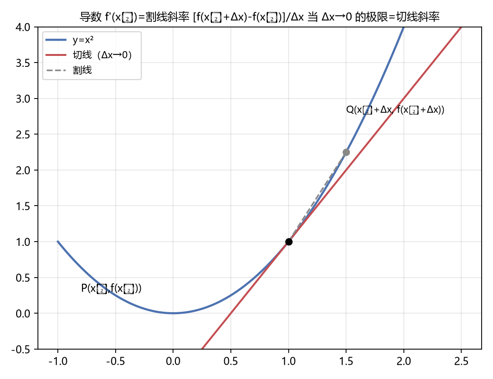
几何意义：f′(x0) 就是曲线 y = f(x) 在点 (x0, f(x0)) 处切线的斜率。割线两端靠近时，割线就变成切线。
切线方程：y − f(x0) = f′(x0)(x − x0)（点斜式）。
正负含义：f′(x0)>0 → 该点附近函数在上升；f′(x0)<0 → 在下降；f′(x0) = 0 → 该处是水平切线（往往是山顶或山谷）。
【跟讲例题 3.1-1】 用定义求 f(x) = x2 在 x = 1 处的导数。 解：[f(1+Δx)−f(1)]/Δx = [(1+Δx)2−1]/Δx = [1+2Δx+Δx2−1]/Δx = (2Δx+Δx2)/Δx = 2+Δx。 令 Δx→0，极限为 2。故 f′(1) = 2。（和后面公式法 (x2)′ = 2x 在 x = 1 得 2 一致。）
小结：导数 = 瞬时变化率 = 切线斜率；定义就是"增量比取极限"。
编者注·本质回扣：你可能觉得"瞬时速度""切线斜率""增量比取极限"是三个不相干的说法，其实它们是同一件事的三张脸——这正是本章的纲。为什么导数能同时管"速度"和"坡度"？因为变化率的本质就是"走一小步，函数值跟着变多少"：时间走一小步、路程变多少，就是瞬时速度；x 走一小步、y 变多少，就是切线斜率。切线方程里的 f′(x0)、正负含义里的"上升/下降"，都是从这一个斜率里长出来的。先把这张脸记牢，后面看单调、找山顶，不过是把"某一点的斜率"升级成"整个区间的斜率正负"而已。
3.2 基本求导公式与四则运算法则
为什么有公式？ 每道题都用定义取极限太累，数学家把常见函数的导数算好了，制成表，直接查。这一节的 8 个公式考试不给，必须背熟。
基本求导公式（必背表）：
| 函数 f(x) | 导数 f′(x) | 记忆窍门 |
|---|---|---|
| C（常数） | 0 | 常数不变，变化率 0 |
| xn | n·xn−1 | 指数搬下来，指数减 1 |
| sin x | cos x | |
| cos x | −sin x | 余弦求导带负号 |
| ex | ex | 最"自恋"，求导不变 |
| ax | ax·ln a | 比 ex 多个 ln a |
| ln x | 1/x | |
| logax | 1/(x·ln a) |
四则运算法则：
- 和差：[f ± g]′ = f′ ± g′。
- 积：[f·g]′ = f′g + fg′。
- 商：[f/g]′ = (f′g − fg′)/g2（g≠0）。
- 复合（链式）：[f(g(x))]′ = f′(g(x))·g′(x)。例：(e^(2x))′ = e^(2x)·2 = 2e^(2x)。
【跟讲例题 3.2-1】 求 f(x) = x3+2x2−5 的导数。 解：逐项求导 (x3)′ = 3x2；(2x2)′ = 4x；(−5)′ = 0。f′(x) = 3x2+4x。
【跟讲例题 3.2-2】 求 f(x) = x·ex 的导数。 解：用积法则：f′ = (x)′ex+x(ex)′ = 1·ex+x·ex = (1+x)ex。
易错点：(ax)′ = ax·ln a，只有 ex 求导没有 ln a 系数；(1/x)′ = −1/x2，别漏负号。
小结：公式查表 + 四则法则；和差逐项、积商套法则、复合层层乘。
3.3 导数与单调性（核心用法）
这是导数最值钱的用法。 第 02 章用定义作差证明单调，对稍微复杂的函数就很费劲；有了导数，看 f′ 的正负就行。
定理：在区间 D 上：
- f′(x) > 0 ⇒ f(x) 在 D 上单调递增；
- f′(x) < 0 ⇒ f(x) 在 D 上单调递减；
- f′(x) ≥ 0 且不恒为 0 ⇔ f(x) 单调递增。
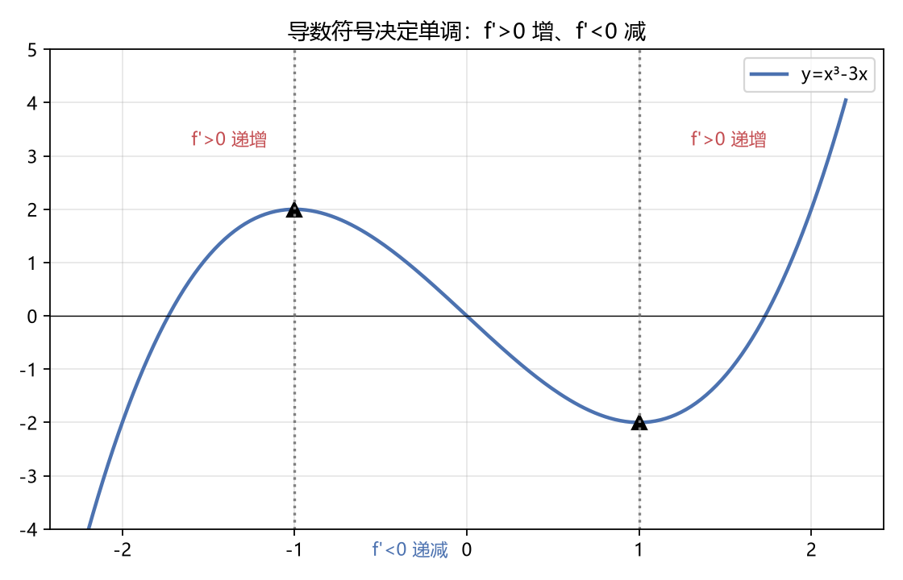
求单调区间标准流程（大题四步）：
- 写定义域（千万别忘，ln x、1/x 都有坑）；
- 求 f′(x)，整理成因式乘积；
- 解 f′(x)>0 和 f′(x)<0（找 f′ = 0 的根，穿根法判号）；
- 在定义域内写出增、减区间。
【跟讲例题 3.3-1】 求 f(x) = x3−3x 的单调区间。 解：f′(x) = 3x2−3 = 3(x−1)(x+1)。f′>0 ⇔ x<−1 或 x>1；f′<0 ⇔ −1<x<1。 故递增区间 (−∞,−1)、(1,+∞)；递减区间 (−1,1)。
小结：单调区间 = f′ 判号；先定义域，再穿根，后写区间。
3.4 极值与最值
山顶山谷的数学刻画。 沿函数图象走，走到最高的那个"山头"就是极大值，最低的"山谷"就是极小值。
极值点判定：若 f′(x0) = 0，且 f′ 在 x0 左右变号：
- 左正右负 → 极大值点；
- 左负右正 → 极小值点。
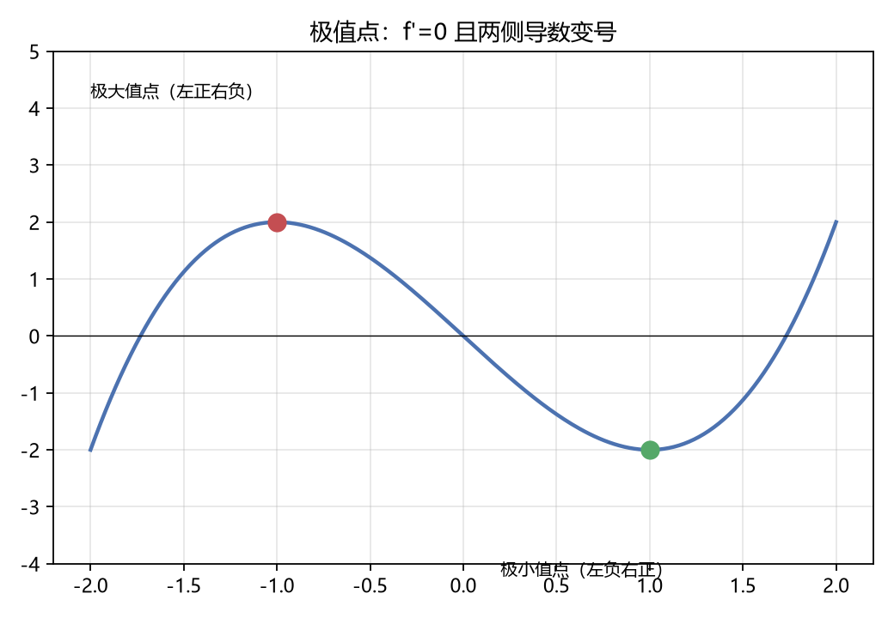
注意：f′(x0) = 0 不一定是极值点！如 f(x) = x3，f′(0) = 0，但两侧导数同号（都正），x = 0 不是极值点。变号才是关键。
闭区间最值：把区间内所有极值点的函数值，和两个端点值一起比，最大的是最大值、最小的是最小值。
【跟讲例题 3.4-1】 求 f(x) = x3−3x 在 [−2,2] 上的最值。 解：f′ = 3(x−1)(x+1) = 0 ⇒ x = −1, 1。列表：f(−2) = −2，f(−1) = 2（极大），f(1) = −2（极小），f(2) = 2。 比较：最大 2，最小 −2。
小结：极值看 f′ 变号；闭区间最值 = 极值和端点一起比。
编者注·本质回扣：这一节把"山顶山谷"算出来，本质还是上一条"斜率正负"的主线。为什么 f′(x)>0 就递增？因为斜率为正，曲线每走一小步都往上抬，一路抬上去自然就是增；斜率为负就是一路往下走。为什么 f′(x0) = 0 还不够、非要左右变号才算极值点？因为 f′ = 0 只说明那一点是水平的，可能像 x3 在原点那样"平一下又接着往上走"，并没有真正掉头；左右坡度一反一正，才是真的到了山顶或山谷。闭区间最值也顺理成章：把山顶、山谷、两个端点的函数值摆在一起挑最大最小即可。
3.5 恒成立问题与分离参数
高考大题第 2 问常客。 "对所有 x，a ≤ f(x) 恒成立，求 a 的范围"——怎么转成最值？
口诀：
- a ≤ f(x) 恒成立 ⇔ a ≤ f(x) 的最小值；
- a ≥ f(x) 恒成立 ⇔ a ≥ f(x) 的最大值。
分离参数法：把 a 单独分到不等式一边，变成 a ≤ g(x)，再求 g(x) 的最值。
【跟讲例题 3.5-1】 对 ∀x>0，x−lnx ≥ a 恒成立，求 a 的最大值。 解：设 g(x) = x−lnx，g′ = 1−1/x = (x−1)/x。x∈(0,1) 减、(1,+∞) 增，g_min = g(1) = 1。故 a≤1，a 最大值 1。
小结：恒成立 → 分离参数 → 求最值；a≤f 就找 f 的最小值。
3.6 压轴方法入口
第 05 章是导数压轴的起点。真正的难题要用到《不超纲高级方法手册》里的几个"招数"，本章末"高级方法·进阶"会给你完整四件套：同构、极值点偏移、隐零点、切线放缩、必要性探路、双变量、比较大小。这里先记住它们长什么样，后面会逐个拆。
3.6 补：苏州书两条压轴恒成立经验
以下两条来自（苏州教研·专题51），是高考导数解答题第 2 问最常见的两类"恒成立求参"套路，先记结论，例题见本节末 例4–例6 与课后 C 组 14–17。
经验一：双变量绝对值恒成立 → 凑出一个单调函数（苏州教研·专题51，题型1）。 题设形如 |f(x1)−f(x2)| ≥ λ|g(x1)−g(x2)| 对区间内任意两点恒成立，其中 g(x) 常取 x、x2、ex、lnx 这类单调简单函数。
方法：不妨先令 x1<x2，去绝对值、移项，把它凑成 f(x1)−λg(x1) ≤ f(x2)−λg(x2) 的样子。 这等价于 h(x) = f(x)−λg(x) 在区间上单调递增（或 h(x) = f(x)+λg(x) 单调递减），再用 h′(x) = f′(x)±λg′(x) 的符号分离参数求最值。 大白话："两点函数值之差要被自变量之差管住"，本质就是让 f 加上（或减去）λg 之后变成单调函数。
经验二：∀x≥p 时 f(x)≥0 恒成立 → 端点效应 / 含参转化（苏州教研·专题51，题型7）。 当端点处恰好 f(p) = 0 时，先算 f′(p)、f″(p) 的符号来定分类标准；一次求导定不了号就二次求导，用 f″ 的含参端点（如 f″(0) = 1−2a）当分界，再分两类说清：函数单调时成立，函数不单调时必在小区间 (p, p+δ) 内破掉。
小技巧（苏州教研·专题51）：如果由 f′(p) = 0 或 f″(p) = 0 能直接解出参数的值，这个值就是分类讨论的分界点。
④ 例题详解（先做再看）
例题例 1（切线）：求曲线 y = x3 在点 (1, 1) 处的切线方程。
自己做：斜率 = 导数值。
解：y′ = 3x2，f′(1) = 3。切线：y − 1 = 3(x − 1)，即 y = 3x − 2。 要点：切线 = 点斜式，先算斜率再写直线。
例题例 2（单调区间 + 极值 + 最值，大题模板）：设 f(x) = x3 − 3x。 (1) 求单调区间；(2) 求极值；(3) 求 f(x) 在 [−2, 2] 上的最值。
自己做：求导 → 解 f′(x) = 0 → 列表。
解：(1) f′(x) = 3x2 − 3 = 3(x − 1)(x + 1)。 f′(x) > 0 ⇔ x < −1 或 x > 1；f′(x) < 0 ⇔ −1 < x < 1。 递增区间 (−∞, −1)、(1, +∞)；递减区间 (−1, 1)。 (2) x = −1 处左增右减 → 极大值 f(−1) = 2；x = 1 处左减右增 → 极小值 f(1) = −2。 (3) 比较端点 f(−2) = −2、f(2) = 2 与极值 ±2：最大 2（x = −1 或 2），最小 −2（x = −2 或 1）。 要点：列表（区间/符号/结论）是大题标准书写，别跳步。
例题例 3（恒成立 → 最值）：若对 ∀x > 0，x − ln x ≥ a 恒成立，求 a 的最大值。
自己做：恒成立问题转成求 g(x) = x − ln x 的最小值。
解：设 g(x) = x − ln x，g′(x) = 1 − 1/x = (x − 1)/x。 x ∈ (0, 1)：g′ < 0 递减；x ∈ (1, +∞)：g′ > 0 递增。g_min = g(1) = 1。 a ≤ 1 恒成立 ⇔ a 最大值为 1。 要点：恒成立 a ≤ g(x) ⇔ a ≤ g(x) 的最小值；"分离参数"是最常用手法。
例题例 4（必要性探路 / 端点效应）（苏州教研·专题51，原书p.170，例12）：设 f(x) = ex−1−x−ax2，若当 x≥0 时 f(x)≥0 恒成立，求 a 的取值范围。
自己做：注意 f(0) = 0，端点处"恰好贴地"，先二次求导。
解：f′(x) = ex−1−2ax（x≥0），f″(x) = ex−2a，f″(0) = 1−2a。 - 当 1−2a≥0，即 a≤1/2 时，f″(x)≥0，故 f′(x) 在 [0,+∞) 递增，f′(x)≥f′(0) = 0，于是 f(x) 递增，f(x)≥f(0) = 0，恒成立； - 当 1−2a<0，即 a>1/2 时，f″(x) = ex−2a = 0 的根为 x = ln(2a)，在 [0,ln(2a)] 上 f″≤0，f′ 递减，f′(x)≤f′(0) = 0，于是 f(x) 递减，f(x)≤f(0) = 0，在 (0,ln2a) 内必破，不成立。 故 a≤1/2。 要点：端点 f(0) = 0 时，用 f″(0) = 1−2a 的正负一刀切开分类；a = 1/2 时 ex−1−x−x2/2≥0（x≥0）可由再求导验证（h″ = ex−1≥0）。
例题例 5（极值点偏移 / 比值代换）（苏州教研·专题51，原书p.177，例25）：设 f(x) = lnx−ax2−bx 的图象与 x 轴交于 A(x1,0)、B(x2,0) 两点，线段 AB 中点为 C(x0,0)。求证：f′(x0)<0。
自己做：两个零点满足 f(x1) = f(x2) = 0，把 a、b 消掉，再令 t = x2/x1。
解：f′(x) = 1/x−2ax−b，x0 = (x1+x2)/2，故 f′(x0) = 2/(x1+x2)−a(x1+x2)−b。 由 ln x1 = ax12+bx1、ln x2 = ax22+bx2，两式相减得 ln(x1/x2) = (x1−x2)[a(x1+x2)+b]，即 a(x1+x2)+b = [ln(x1/x2)]/(x1−x2)。 代回： f′(x0) = 2/(x1+x2) − [ln(x1/x2)]/(x1−x2) = 1/(x1−x2)·[ 2·(x1−x2)/(x1+x2) − ln(x1/x2) ]。 不妨令 x2>x1>0，记 t = x2/x1>1，则括号内 = 2(1−t)/(1+t)+lnt。 设 h(t) = 2(1−t)/(1+t)+lnt（t>1），则 h′(t) = (t−1)2/[t(t+1)2]>0，h(t) 在 (1,+∞) 递增，h(t)>h(1) = 0。 又 x1−x2<0，故 f′(x0) = [1/(x1−x2)]·h(t)<0。∎ 要点：两零点问题先联立消参，再令 t = x2/x1 把双变量化成单变量 t；h(t) 的符号由导数定。
例题例 6（隐零点 / 设而不求）（苏州教研·专题51，原书p.174–175，例21）：已知 f(x) = [1+ln(x+1)]/x。当 x>0 时，f(x)>k/(x+1) 恒成立，求正整数 k 的最大值。
自己做：分离 k 后求最小值，最小值的零点解不出来，就设出来整体代换。
解：x>0 时 f(x)>k/(x+1) ⇔ k < (1+1/x)[1+ln(x+1)]。记 h(x) = (1+1/x)[1+ln(x+1)]（x>0），则 h′(x) = [x−1−ln(x+1)]/x2。记分子 p(x) = x−1−ln(x+1)，p′(x) = 1−1/(x+1) = x/(x+1)>0，p 递增。 注意到 p(2) = 1−ln3<0，p(3) = 2−ln4>0，故存在唯一 x0∈(2,3) 使 p(x0) = 0，即 ln(x0+1) = x0−1。h(x) 在 (0,x0) 减、(x0,+∞) 增，最小值 h(x0) = (1+1/x0)[1+ln(x0+1)] = (1+1/x0)·x0 = x0+1 ∈(3,4)。 要 k<h(x) 恒成立，k 须小于 h 的下确界（介于 3 与 4 之间），故正整数 k 最大值为 3。 要点：f′(x) = 0 的根 x0 解不出显式，就设为 x0，用 p(x0) = 0（即 ln(x0+1) = x0−1）整体代换，把 h(x0) 化简成 x0+1，再由 x0∈(2,3) 估值。
⑤ 出口检测
自测（20 分钟，每题 2 分）：
- 求 f(x) = x2 − 2x 在 x = 1 处的导数。
- 求 f(x) = x3 − 3x2 + 1 的单调递减区间。
- 求 y = ex 在 x = 0 处的切线方程。
- 求 f(x) = x + 1/x 在 [1, 3] 上的最小值。
- 判断 f(x) = x3 在 x = 0 处是否有极值。
真题验收：2020–2024 新高考Ⅰ卷导数解答题第 1 问（求单调区间/切线/极值，多为 22 题第 1 问或 2024 起新结构对应位置）：独立做 1 道，20 分钟内完成、第 1 问满分 → 过关。
过关标准：自测 ≥ 10 分 且 真题第 1 问完成 → 打卡。
课后习题（分层练习）
A 组 基础巩固
- 【考点：导数定义】f(x) = x2，用定义求 f′(2)。
- 【考点：求导公式】求 f(x) = x4−3x2+2x 的导数。
- 【考点：切线方程】求 y = x3 在点 (2,8) 处的切线方程。
- 【考点：单调区间】求 f(x) = x2−4x+3 的单调递减区间。
- 【考点：极值】求 f(x) = x3−3x 的极大值和极小值。
- 【考点：e^x 求导】求 f(x) = ex−x 的单调区间。
B 组 能力提升
- 【考点：积的求导】求 f(x) = x·lnx 的导数，并求单调区间。
- 【考点：闭区间最值】求 f(x) = x3−3x2+1 在 [0,3] 上的最大值和最小值。
- 【考点：恒成立】对 ∀x>0，a ≤ x+1/x 恒成立，求 a 的最大值。
- 【考点：商的求导】求 f(x) = lnx/x 的导数。
C 组 真题挑战
-
【考点：导数+单调性+求参数】（2023 新高考Ⅰ卷 第6题）已知函数 f(x) = aex−lnx 在区间 (1,2) 上单调递增，则 a 的最小值为（ ） A. e2 B. e C. e−1 D. e−2
-
【考点：切线】（2024 新高考Ⅰ卷 第13题）设曲线 y = ex+x 在点 (0,1) 处的切线也是曲线 y = ln(x+1)+a 的切线，则 a = __。
-
【考点：切线+求参数】（2025 新高考Ⅰ卷 第12题）若直线 y = 2x+5 是曲线 y = ex+x+a 的切线，则 a = __。
-
【考点：同构/单调性脱壳】（苏州教研·专题51，原书p.165，例2）设 f(x) = lnx−(1/4)·a·x2。若 [f(p)−f(q)]/(p−q)>1 对区间 (1,2) 内任意两个实数 p、q（p≠q）恒成立，求实数 a 的取值范围。
-
【考点：双变量绝对值】（苏州教研·专题51，原书p.165，例1第(2)问）已知 f(x) = (a+1)lnx+ax2+1，且 a<−1 时 f(x) 在 (0,+∞) 上单调递减。若对任意 x1、x2∈(0,+∞)，都有 |f(x1)−f(x2)|≥4|x1−x2|，求 a 的取值范围。
-
【考点：切线放缩】（苏州教研·专题51，原书p.177，例27）求证：对任意正整数 n，nn/(n+1)n+1 < 1/(n·e)。
-
【考点：构造函数求最值】（苏州教研·专题51，原书p.167，例7）已知 f(x) = ex，g(x) = ln(x/2)+1/2。若 f(a) = g(b)，求 b−a 的最小值。
⑥ 常见坑清单
- 极值点 ≠ 导数为零的点：f′(x0) = 0 是必要条件，两侧必须变号。
- 定义域先行：f(x) = x − ln x 定义域 (0, +∞)，求导后写单调区间不能超出定义域。
- 切线在"点 (x0, f(x0))"处：切点必须在曲线上；若说"过某点"则可能切点不已知，要设切点。
- (1/x)′ = −1/x2，不是 1/x2。
- (ax)′ = ax·ln a，只有 (ex)′ = ex 没有系数。
- 恒成立：a ≤ g(x) 恒成立 ⇔ a ≤ g(x)_min；a ≥ g(x) 恒成立 ⇔ a ≥ g(x)_max。
本章公式速查表
与《高中数学常用公式·修订版》第二部分（函数与导数）核对一致。
导数的定义与几何意义
f′(x0) = lim(Δx→0) [f(x0+Δx)−f(x0)]/Δx
- 大白话：无限短时间内的平均变化率，就是瞬时变化率。
- 用的时候：用定义求导就按"算增量比 → 让 Δx→0"。
几何意义：f′(x0) = 切线斜率；切线方程 y−f(x0) = f′(x0)(x−x0)
- 大白话：导数就是曲线在那一点切线的坡度。
- 用的时候：求切线先算导数值当斜率，再用点斜式写方程。
基本求导公式（必背）
(C)′ = 0
- 大白话：常数不变，变化率为 0。
(xn)′ = n·xn−1
- 大白话：指数搬下来，指数减 1。
- 用的时候：如 (x3)′=3x2，(x4)′=4x3。
(sin x)′ = cos x，(cos x)′ = −sin x
- 大白话：正弦求导变余弦，余弦求导带个负号变正弦。
(ex)′ = ex
- 大白话：e 的 x 次方求导还是自己，最"自恋"。
(ax)′ = ax·ln a
- 大白话：比 ex 多个 ln a 系数。
- 用的时候：只有 ex 没有 ln 系数，别多写。
(ln x)′ = 1/x
- 大白话：自然对数求导是倒数。
(logax)′ = 1/(x·ln a)
- 大白话：一般对数求导多个 ln a 在分母。
四则运算与复合
和差：[f±g]′ = f′±g′
- 大白话：逐项求导再加减。
积：[f·g]′ = f′g+fg′
- 大白话：前导后不导 + 前不导后导。
- 用的时候：如 (x·ex)′=ex+x·ex=(1+x)ex。
商：[f/g]′ = (f′g−fg′)/g2
- 大白话：分子是"上导下不导 − 上不导下导"，分母是下的平方。
- 用的时候：g≠0；如 (lnx/x)′=(1−lnx)/x2。
复合：[f(g(x))]′ = f′(g(x))·g′(x)
- 大白话：外层求导乘以内层求导，链式一路乘下去。
- 用的时候：如 (e^(2x))′=e^(2x)·2=2e^(2x)。
导数与单调性
f′(x)>0 ⇒ 增；f′(x)<0 ⇒ 减
- 大白话：导数正函数涨，导数负函数跌。
- 用的时候：求单调区间先写定义域，再求导判号；f′≥0 且不恒为 0 才是增。
极值与最值
极值点：f′(x0) = 0 且两侧 f′ 变号
- 大白话：导数为零还不够，左右坡度得一反一正才是山顶/山谷。
- 用的时候：左正右负是极大、左负右正是极小；f′(x0)=0 但不变号（如 x3 在 0）不是极值。
闭区间最值 = 区间内极值与端点值一起比
- 大白话：把山顶、山谷、两头的函数值摆一块挑最大最小。
恒成立问题
a≤f(x) 恒成立 ⇔ a≤f(x)_min；a≥f(x) 恒成立 ⇔ a≥f(x)_max
- 大白话：要 a 永远不超过 f，a 最多只能等于 f 的最小值。
- 用的时候：分离参数把 a 单独放一边，再求另一边函数的最值。
∀x≥p 时 f(x)≥0 恒成立，且端点 f(p) = 0 ⇒ 先看 f′(p)、f″(p) 定分界（端点效应）（苏州教研·专题51，题型7）
- 大白话：函数在起点"贴地"时，拿二阶导数在起点的值当分类分界，一刀切开参数范围。
- 用的时候：f″(p) 含参，令 f″(p) = 0 解出的那个参数值就是分类标准；a 比它小就单调成立，比它大必在 (p,p+δ) 内破。
|f(x1)−f(x2)|≥λ|x1−x2| 恒成立 ⇔ h(x) = f(x)±λx 单调（苏州教研·专题51，题型1）
- 大白话：两点函数值之差要被 x 之差"管住"，就把 f 加/减 λx 凑成单调函数。
- 用的时候：去绝对值移项凑成 f(x1)−λx1≤f(x2)−λx2，再对 h′(x) = f′(x)±λ 分离参数。
切线放缩不等式族（苏州教研·专题51）
ex ≥ x+1（x = 0 取等）；lnx ≤ x−1（x = 1 取等）；ln(1+x) ≤ x（x = 0 取等）
- 大白话：指数甩成一次式、对数压成一次式，等号都贴在切点上。
- 用的时候：证含 ex、lnx 的不等式时，先用它们把超越项"砍"成多项式，再解普通不等式。
- 记忆要点：每条都是"曲线 ≥ 切线"或"曲线 ≤ 切线"，等号点就是切点 x=0 或 x=1。
ex ≥ 1+x+x2/2（x≥0，x = 0 取等）（苏州教研·专题51，例12/例27）
- 大白话：要更紧的放缩时，把二次项也补上；可由两次求导证（h″ = ex−1≥0）。
- 用的时候：直接放 ex≥x+1 太松时换这条；答题卡上引用要补一句"可由导数证明"。
高级方法·进阶
对应《不超纲高级方法手册》一.1.1–1.7。每条按"适用信号→操作步骤→例题→课标依据/超纲红线"给出。
进阶 1：同构法（手册 一.1.1）
- 适用信号：式子两边结构"长得一样"，如 x·ex 与 ex·ln ex、x+lnx 与 ex+x。
- 操作步骤：把不等式/方程两边凑成同一个函数 h 的形式，再利用 h 的单调性脱掉 h。
- 例题：xlnx ≥ a ⇔ 凑成 (lnx)·e^(lnx) ≥ a，令 t=lnx，归到 t·et。
- 课标依据：单调性+构造函数。✓ 不超纲（高考可放心用）。
进阶 2：极值点偏移（手册 一.1.2）
- 适用信号：f(x1)=f(x2) 且 x1≠x2，证 x1+x2 与 2x0 的大小关系。
- 操作步骤：构造对称差函数 F(x)=f(x)−f(2x0−x)，用导数判 F 正负。
- 例题：f(x)=x−lnx 的两极值点，证 x1+x2>2。
- 课标依据：构造函数+单调性。✓ 不超纲（但属压轴，第1问用不上）。
进阶 3：隐零点（手册 一.1.3）
- 适用信号：f′(x)=0 解不出显式根，但必须用这个零点代值。
- 操作步骤：设零点为 x0，满足 f′(x0)=0，把这个关系当方程整体代入消元，不硬求 x0。
- 例题：证 f(x)≥0 时，f′(x0)=0 解不出，用它把 f(x0) 化简成常数。
- 课标依据：零点存在+整体代换。✓ 不超纲。
进阶 4：切线放缩（手册 一.1.4）
- 适用信号：证 ex≥…、lnx≤… 这类指数/对数不等式。
- 操作步骤：记住两条放缩——ex ≥ x+1（等号 x=0）、lnx ≤ x−1（等号 x=1），用它们把指对数"放"成多项式。
- 例题：证 ex ≥ x+1 ⇔ 令 g=ex−x−1，g′=ex−1，g_min=g(0)=0。
- 课标依据：导数求最值。✓ 不超纲（高考可直接用结论）。
进阶 5：必要性探路（端点效应，手册 一.1.5）
- 适用信号：恒成立求参数范围，先取一个特殊点（往往端点）探出必要条件，再证充分。
- 操作步骤：先代端点 x=a 得到参数的必要范围，再回头证明这个范围确实充分。
- 例题：∀x≥0, f(x)≥0，先代 x=0 得 a 的必要约束。
- 课标依据：恒成立+特殊值。✓ 不超纲（但严格证明仍需导数）。
进阶 6：双变量问题（手册 一.1.6）
- 适用信号：题里同时出现 x1、x2 两个变量。
- 操作步骤：把双变量的对称式设成一个新变量 t=x2/x1 或 t=x1+x2，转成单变量函数。
- 依据：换元+单变量函数。✓ 不超纲。
进阶 7：比较大小构造（手册 一.1.7）
- 适用信号：指对幂三个数比大小，单靠中间量不够。
- 操作步骤：构造辅助函数 f(t)，用导数判断它在区间上的单调性，再代入比较。
- 依据：导数单调性。✓ 不超纲。
苏州书原题锚定表（方法手册 一.1.1–1.7 各配一道苏州教研原题，解答见本章对应位置；均实算复核）：
手册方法 苏州书原题（出处） 本章位置 复核答案 1.1 同构/单调性脱壳 f(x) = lnx−¼ax2，[f(p)−f(q)]/(p−q)>1 恒成立（专题51·例2，p.165） 课后 C 组 14 a≤−1/2 1.2 极值点偏移 f(x) = lnx−ax2−bx 两零点，证 f′(中点)<0（专题51·例25，p.177） 例 5 f′(x0)<0 1.3 隐零点 f(x) = [1+ln(x+1)]/x>k/(x+1)，求 k_max（专题51·例21，p.174） 例 6 k_max = 3 1.4 切线放缩 证 nn/(n+1)n+1<1/(ne)（专题51·例27，p.177） 课后 C 组 16 成立（归约 ln(1−x)+x<0） 1.5 必要性探路 f(x) = ex−1−x−ax2≥0（x≥0）（专题51·例12，p.170） 例 4 a≤1/2 1.6 双变量 a<−1，|f(x1)−f(x2)|≥4|x1−x2|（专题51·例1，p.165） 课后 C 组 15 a≤−2 1.7 比较大小构造 f = ex，g = ln(x/2)+½，f(a) = g(b) 求 b−a 最小（专题51·例7，p.167） 课后 C 组 17 2+ln2 说明：苏州书专题49/51 无纯"a = 0.1e^0.1、b = 1/9、c = −ln0.9"三数比较选择题型，1.4/1.7 以上述苏州书原题补位，思想同为"构造辅助函数 + 切线放缩/单调性比较"。
超纲红线说明：以上 7 条均为不超纲（高考可放心用）——它们本质都是"构造函数+用导数研究单调性"，是课标内方法的组合应用。真正的超纲（如洛必达法则、泰勒展开）考试禁用，本手册不收，只在大学再学。
自测答案：1. f′(x) = 2x − 2，f′(1) = 0；2. f′(x) = 3x2 − 6x = 3x(x − 2) < 0 ⇒ 0 < x < 2，递减区间 (0, 2)；3. y′ = ex，k = e0 = 1，切线 y = x + 1；4. f′(x) = 1 − 1/x2 > 0（x ≥ 1），递增，最小值 f(1) = 2；5. f′(0) = 0 但两侧同号（x3 恒增），无极值。
课后习题答案
A 组
- [f(2+Δx)−f(2)]/Δx = [(2+Δx)2−4]/Δx = (4Δx+Δx2)/Δx = 4+Δx → 4。f′(2)=4。
- f′=4x3−6x+2。
- y′=3x2，在 x=2 斜率 k=12，切点 (2,8)。切线 y−8=12(x−2)，即 y=12x−16。
- f′=2x−4<0 ⇒ x<2。递减区间 (−∞, 2)。
- f′=3(x−1)(x+1)=0 ⇒ x=−1（极大），x=1（极小）。极大值 f(−1)=2，极小值 f(1)=−2。
- f′=ex−1。f′>0⇔x>0；f′<0⇔x<0。递增 (0,+∞)，递减 (−∞,0)。
B 组
- f=x·lnx，f′=lnx+x·(1/x)=lnx+1。f′>0⇔lnx>−1⇔x>1/e；递减 (0,1/e)，递增 (1/e,+∞)。
- f′=3x2−6x=3x(x−2)=0⇒x=0,2（均在[0,3]内）。值：f(0)=1，f(2)=8−12+1=−3，f(3)=27−27+1=1。最大 1，最小 −3。
- g=x+1/x，g′=1−1/x2≥0（x≥1），在 x>0 的最小值 g(1)=2。a≤g(x) 恒成立 ⇒ a≤2，a 最大值 2。
- f=lnx/x，f′=[(1/x)·x−lnx·1]/x2=(1−lnx)/x2。
C 组
- f=aex−lnx，f′=aex−1/x。在 (1,2) 递增需 f′≥0 ⇒ a≥1/(xex)。h(x)=e−x/x 在 (1,2) 递减，最大值 h(1)=e−1。故 a≥e−1，最小值 e−1，选 C。
- y=ex+x 在 (0,1)：y′=ex+1，k=2，切线 y−1=2x，即 y=2x+1。它也是 y=ln(x+1)+a 的切线。g′=1/(x+1)=2⇒x=−1/2。g(−1/2)=ln(1/2)+a=−ln2+a。切线在 x=−1/2 的值=2(−1/2)+1=0，故 −ln2+a=0，a=ln2。
-
y=ex+x+a，y′=ex+1=2⇒ex=1⇒x=0。切点 x=0：y=e0+0+a=1+a。切线 y=2x+5 在 x=0 的值=5，故 1+a=5，a=4。
-
不妨令 2>p>q>1。[f(p)−f(q)]/(p−q)>1 ⇔ f(p)−p>f(q)−q ⇔ h(x)=f(x)−x 在 (1,2) 上递增 ⇔ h′(x)=f′(x)−1≥0。f′(x)=1/x−(a/2)x，故 1/x−(a/2)x−1≥0，即 a≤2/x2−2/x。令 t=1/x∈(1/2,1)，则 a≤2t2−2t。u(t)=2t2−2t 在 (1/2,1) 上从 −1/2 增到 0，最小值（下确界）−1/2，故 a≤−1/2。（复算：u(1/2)=2·1/4−1=−1/2 ✓）
-
a<−1 时 f 递减，令 x1≤x2。|f(x1)−f(x2)|≥4|x1−x2| ⇔ f(x1)−f(x2)≥4(x2−x1) ⇔ f(x1)+4x1≥f(x2)+4x2 ⇔ h(x)=f(x)+4x 递减 ⇔ h′(x)=f′(x)+4≤0。f′(x)=2ax2/(x)+(a+1)/x = [2ax2+a+1]/x，故 a≤(−4x−1)/(2x2+1)。令 g(x)=(−4x−1)/(2x2+1)，g′(x)=8(x−1/2)(x+1)/(2x2+1)2，g 在 (0,1/2) 减、(1/2,+∞) 增，最小值 g(1/2)=−2，故 a≤−2。（复算：g(1/2)=(−2−1)/(2·1/4+1)=−3/(3/2)=−2 ✓）
-
两边取对数变形：nn/(n+1)n+1<1/(ne) ⇔ ln[n/(n+1)]<−1/(n+1) ⇔ ln(1−1/(n+1))+1/(n+1)<0。令 x=1/(n+1)∈(0,1/2]，设 φ(x)=ln(1−x)+x，则 φ′(x)=1/(x−1)+1=x/(x−1)<0（x∈(0,1/2]），φ(x)<φ(0)=0。故原不等式成立。∎（复算：φ′(x)=x/(x−1) ✓，φ(0)=0 ✓）
-
设 f(a)=g(b)=t，则 ea=ln(b/2)+1/2=t，故 a=lnt，b=2·e^(t−1/2)（t>0）。记 h(t)=b−a=2e^(t−1/2)−lnt，h′(t)=2e^(t−1/2)−1/t。注意 h′(1/2)=2·1−2=0，且 h′ 递增（h″=2e^(t−1/2)+1/t2>0），故 h 在 t=1/2 处取最小值 h(1/2)=2·e0−ln(1/2)=2+ln2。b−a 最小值=2+ln2。（复算：h(1/2)=2−ln(1/2)=2+ln2≈2.693 ✓）
一通百通
这一章的"通用骨架"只有五步：① 写定义域 → ② 求 f′(x) 并因式分解 → ③ 令 f′=0 找分界点、穿根法判 f′ 正负 → ④ 根据正负号写单调区间、找极值、比出最值 → ⑤ 恒成立就分离参数，转成求这个新函数的最值。不管求切线、求单调区间、求极值最值，还是压轴的恒成立、端点效应、隐零点，骨子里都是"求导 → 判正负 → 下结论"这一条线。会做一道 f(x)=x3−3x 的题，就会做所有导数解答题的第一问；这套"求导判号"的骨架，后面解析几何求最值、压轴不等式放缩时还会一再回来用。
跨章结合
- 导数求最值 × 04 章恒成立（同一问题的两代工具）：本章 3.5 和 04 章 3.6 讲的其实是同一件事——"恒成立求参"翻译成"求最值"，区别只在求最值的工具。04 章例 3.6-1、3.6-2 靠二次函数、对勾函数肉眼看出最值；本章例 3（x−lnx ≥ a 恒成立）、例 4（端点效应，答 a≤1/2）是同一个问题，换成导数这个更强的最值工具来做。两章是一条线的两段：函数简单时肉眼求最值，函数复杂时求导求最值。
- 切线放缩 × 12 章不等式证明：本章"高级方法"里的 ex ≥ x+1、lnx ≤ x−1（苏州教研·专题51），本身就是用导数证出来的（令 g=ex−x−1，最小值在 x=0 取 0）；证含 ex、lnx 的不等式时，先用这两条把超越项"砍"成多项式，再用 12 章的不等式常规手段解——本章 C 组 16（证 nn/(n+1)n+1 < 1/(n·e)，苏州教研·专题51·例27）就是这条结合点的成品。
本章与前后章
这一章是全书函数主线的"总收束"，也是解答压轴的入口。它前面的硬前置是 第 02 章函数概念与性质（单调性、最值、图象的直觉，蓝图标的前置就是它）；同时它把 第 04 章那套"恒成立转最值、靠图象说话"的工具接过来——04 章靠作差和肉眼判断单调、求最值，函数一复杂就抓瞎，本章的导数正是来把它"算得出来"。它向后则是两条综合线的武器：第 11 章数列的单调与最值、第 16 章圆锥曲线的最值问题，以及全书压轴的函数与导数综合题，都要回来用本章的"求导判号"。学完这一章，你才算真正握住了高中函数的最后一把钥匙。
高考怎么考
这一章是新高考Ⅰ卷解答压轴的固定入口：几乎年年的导数解答题（第 22 题或新结构对应位置）第一问，就是"求单调区间、求切线、求极值/最值"——这正是本章 3.3、3.4 的标准流程，必须稳拿满分；第二问再上难度，考恒成立求参、端点效应、隐零点、切线放缩这类本章末"高级方法"。小题里它也常露面：切线方程与求参数（如本章 C 组收录的 2023 新高考Ⅰ卷第 6 题、2024 新高考Ⅰ卷第 13 题、2025 新高考Ⅰ卷第 12 题），多为中档选择填空。一句话：导数题的第一问是"送分"，第二问才是"拉分"，而能不能拉分，取决于本章这套"求导判号"基本功扎不扎实。
三角函数的概念与性质
公式速查：修订版 第3部分（三角函数）
本章本质核心：三角函数本质上就是"圆周运动的坐标投影"——把角的终边放到单位圆上，那个交点绕原点转一圈，它的横坐标就是 cos、纵坐标就是 sin；后面所有东西——象限正负号、同角关系 sin2+cos2 = 1、周期 2π、图象的波浪、奇偶对称——全是这一个模型的自然推论。不用死背：让那个动点转起来，转一整圈坐标回到原位，一切性质就都跟着出来了。 为什么有用：想通"单位圆上那个点一转、横纵坐标就是 cos、sin"这一件事，你既看得懂现实里所有周而复始的现象（交流电按正弦波动、声波传播、弹簧振动），也能把高考里"给波形求 A/ω/φ、数两条曲线交点个数"这类题一眼看穿——原理想通了，性质表只是想通之后顺带的速查。
① 门槛自测（进章前，10 分钟）
- 直角三角形中，30° 角的正弦值是多少？
- 一个圆的周长公式是什么？半圆的弧长呢？
- 判断：sin 60° 与 cos 30° 的关系。
- 直角坐标系中，点 (1, 0) 绕原点逆时针转 90° 到哪个点？
- 函数 y = sin x 的值最大是多少？（凭初中印象）
判定：5 题答对 4 题以上 → 进章。
② 学习目标
- 理解弧度制；进行弧度与角度互化
- 用单位圆定义任意角三角函数（sin、cos、tan）
- 背熟同角关系与诱导公式
- 掌握 y = sin x、y = cos x、y = tan x 的图象与性质（定义域/值域/周期/单调/对称）
- 会画/理解 y = A sin(ωx + φ) 的图象变换
③ 正文讲解
先给你一张本章的"地图"，看完心里有数再往下钻：
任意角（正/负/零角、象限角）
↓
弧度制（用"弧长"量角，为微积分铺路）
↓
单位圆定义 sin / cos / tan（把角和坐标挂钩）
↓
同角关系（sin2+cos2 = 1）＋ 诱导公式（大角化锐角）
↓
三条函数的图象与性质（周期、单调、对称、最值）
↓
y = A sin(ωx+φ)（实际波动，比如交流电、声波）
3.1 弧度制（新教材默认用弧度）
先想一个生活场景。 你坐摩天轮，座舱从最低点转到最高点，到底转了"多少"？用角度说 180° 也行，可角度这个单位其实是人为定的——古人把一圈分成 360 份，凭什么是 360 而不是 100？没道理。数学家想要一个"天生的"量角办法：干脆用转过的弧长来量。轮子半径是 1 米，座舱在边上走了 1 米长的弧，就说转了 1"弧度"。这样量出来的角，和圆的大小无关——半径 1 的圆走 1 米弧、半径 2 的圆走 2 米弧，都是 1 弧度，因为弧长正好等于半径。
定义（人教A版口径）：长度等于半径长的圆弧所对的圆心角，叫做 1 弧度（rad） 的角。
换算关系（一定要背）：
- 整圈的弧长是周长 2πr，除以半径 r，得整圈 = 2π 弧度。
- 而整圈又是 360°。所以 2π rad = 360°，即 π rad = 180°。
- 由此推出：1 rad = (180/π)° ≈ 57.3°；1° = (π/180) rad。
常用对应表（背到条件反射）：
| 度 | 30° | 45° | 60° | 90° | 180° | 270° | 360° |
|---|---|---|---|---|---|---|---|
| 弧度 | π/6 | π/4 | π/3 | π/2 | π | 3π/2 | 2π |
弧长与扇形面积：设圆心角 α（弧度）、半径 r，则
- 弧长 l = |α|·r（弧度制下这个式子干净；若用角度制还得乘 π/180，麻烦）
- 扇形面积 S = ½·l·r = ½·|α|·r2
为什么高中非要换弧度制？ 因为以后学导数，(sin x)' = cos x 这个漂亮结论只在 x 用弧度时才成立。用角度的话，求导会冒出一堆 π/180，没法看。所以从这章起，做题默认弧度。
计算流程（角度↔弧度）：
- 度化弧度：乘以 π/180。例：120° = 120 × π/180 = 2π/3。
- 弧度化度：乘以 180/π。例：5π/6 = 5π/6 × 180/π = 150°。
- 算弧长/面积时，先确认角是弧度；是角度就先换算。
例题跟讲例题 3.1-1：把 67°30′ 化成弧度（结果保留 π）。 解：67°30′ = 67.5°。乘以 π/180：67.5 × π/180 = (67.5/180)π = (3/8)π。答案 3π/8。 要点：先把分（′）化成小数度，再乘 π/180，别带着 30′ 硬乘。
例题跟讲例题 3.1-2：扇形半径 r = 6，圆心角 α = 2π/3，求弧长和面积。 解：l = |α|r = (2π/3) × 6 = 4π。S = ½|α|r2 = ½ × (2π/3) × 36 = 12π。 要点：直接套公式，角已是弧度，不用换算。
陷阱：看到"°"别顺手当弧度。题目写 30° 就是角度，写 π/6 就是弧度，两者差远了。
3.2 任意角的三角函数（单位圆定义）
先把"角"这个概念放大。 初中的角只到 0°~360°。可现实里轮子转一圈不够：摩天轮转两圈就是 720°，倒车时方向盘往回转就是负角。于是规定：逆时针旋转成的角为正角，顺时针为负角，没转就是零角。把角的顶点放原点、始边对齐 x 轴正半轴，终边落在第几象限，就叫第几象限角。
定义（人教A版口径）：在直角坐标系中，设角 α 的终边与单位圆（半径为 1 的圆）交于点 P(x, y)，则：
sin α = y cos α = x tan α = y/x（x ≠ 0）
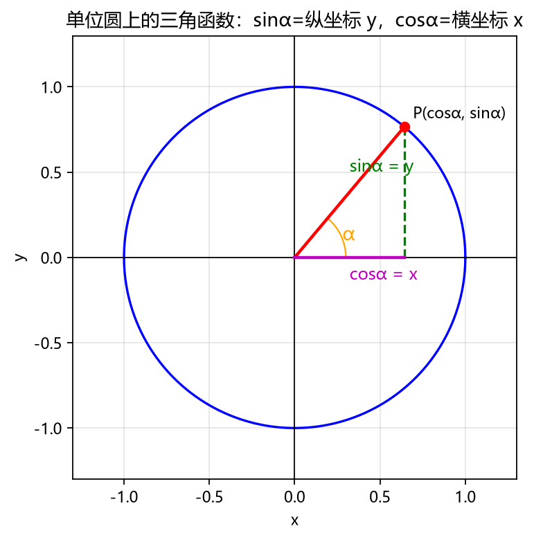
看这张图：P 点的纵坐标就是 sinα，横坐标就是 cosα。这一下把"角"和"坐标"死死绑在一起——以后 sin、cos 你就当成"单位圆上那个点的 y、x"。
为什么是单位圆？ 半径取 1，r = 1，sin = y/r = y，cos = x/r = x，公式最干净。若半径是 r，终边上任一点 (x,y)，则 sinα = y/r，cosα = x/r，tanα = y/x（r = √(x2+y2)）。
符号判断（象限口诀："一全正，二正弦，三正切，四余弦"）：
- 第一象限（x>0, y>0）：sin、cos、tan 全正；
- 第二象限（x<0, y>0）：只有 sin（即 y）正；
- 第三象限（x<0, y<0）：只有 tan（y/x，负负得正）正；
- 第四象限（x>0, y<0）：只有 cos（即 x）正。
例题跟讲例题 3.2-1：角 α 终边经过点 P(−3, 4)，求 sinα、cosα、tanα。 解：r = √((−3)2+42) = 5。sinα = y/r = 4/5；cosα = x/r = −3/5；tanα = y/x = 4/(−3) = −4/3。 要点：先算 r，再套 sin = y/r、cos = x/r；P 在第二象限，sin 正、cos 负，和口诀一致。
例题跟讲例题 3.2-2：判断 sin 200° 的符号。 解：200° = 180°+20°，终边在第三象限，"三正切"，sin 在第三象限为负。故 sin 200° < 0。 要点：先定象限，再背口诀，别去算具体值。
陷阱：tan 在终边落在 y 轴上（x = 0，即 α = π/2 + kπ）时无意义，这是 tan 定义域的根源。
编者注·本质回扣：这一节是整章的"纲"。前面反复说"sin 是纵坐标、cos 是横坐标"，听着像一句口诀，其实它就是本章本质核心的落地：单位圆上那个点 P 一转，横纵坐标怎么变，sin、cos 就怎么变。所谓象限符号"一全正、二正弦、三正切、四余弦"，说白了就是看 P 落在哪个象限时 x、y 谁正谁负；tan = y/x 在 x = 0 处没意义，也只是因为 P 爬到了 y 轴上、横坐标变成了 0。把 P 这个动点想活了，符号、定义域这些结论根本不用背。
3.3 同角关系（必背）
单位圆上 P(x,y) 在半径为 1 的圆上，自然满足 x2 + y2 = 1。把 x 换回 cosα、y 换回 sinα，就得到：
- sin2α + cos2α = 1（平方关系，对任意角成立）
- tan α = sin α / cos α（商数关系，要求 cos α ≠ 0）
这两条为什么对？ 第一条就是单位圆方程本身；第二条是 tan 的定义 y/x = (y/r)/(x/r) = sin/cos。
用它们干嘛？ 已知 sinα 和 α 所在象限，就能反推 cosα，进而 tanα——这是"给值求值"的根。
计算流程：
- 由 sin2α + cos2α = 1 求出 cos2α；
- 开方前先看象限，决定 cosα 取正还是负；
- tanα = sinα/cosα 相除。
例题跟讲例题 3.3-1：已知 cosα = −4/5，且 α 是第三象限角，求 sinα 与 tanα。 解：sin2α = 1 − cos2α = 1 − 16/25 = 9/25。第三象限 sin 为负，故 sinα = −3/5。tanα = (−3/5)/(−4/5) = 3/4。 要点：开方这一步的正负号，完全由象限决定，这是本节唯一的坑。
陷阱：cos2α = 16/25 开方得 cosα = ±4/5，别默认写正号——象限说了算。
3.4 诱导公式（口诀："奇变偶不变，符号看象限"）
干嘛用？ 把任意大的、负的、钝角的三角函数，化成 0°~90° 的锐角三角函数，好查表好心算。
核心逻辑：终边相同的角三角函数值相同；再利用对称把负角、补角、余角一步步搬回来。常用的几组（把 α 先当成锐角来记符号）：
- 负角：sin(−α) = −sinα，cos(−α) = cosα，tan(−α) = −tanα
- 补角：sin(π−α) = sinα，cos(π−α) = −cosα
- 平角：sin(π+α) = −sinα，cos(π+α) = −cosα
- 互余：sin(π/2−α) = cosα，cos(π/2−α) = sinα
口诀怎么用："奇变偶不变"看的是 π/2 的倍数是奇数还是偶数倍——偶数倍（如 π、2π）函数名不变，奇数倍（如 π/2、3π/2）函数名变（sin↔cos）。"符号看象限"：把 α 当锐角，看原式那个角在第几象限、原函数取正还是负，符号就带过去。
例题跟讲例题 3.4-1：求 sin(7π/6)。 解：7π/6 = π + π/6，用 sin(π+α) = −sinα：sin(7π/6) = −sin(π/6) = −1/2。 要点：先把大角拆成"π + 锐角"或"π/2 + 锐角"，再套对应公式。
例题跟讲例题 3.4-2：化简 cos(π/2 + α)。 解：π/2 是 π/2 的 1 倍（奇数），函数名变：cos → sin；把 α 当锐角，π/2+α 在第二象限，cos 在第二象限为负。故 cos(π/2+α) = −sinα。 要点："变名"+"看象限定号"，两步缺一不可。
陷阱：符号看的是变换前那个角在象限里的原函数符号，不是变换后的。
3.5 三个基本三角函数的图象与性质（必背表）
先看图，再背表，脑子里要有"波形"。
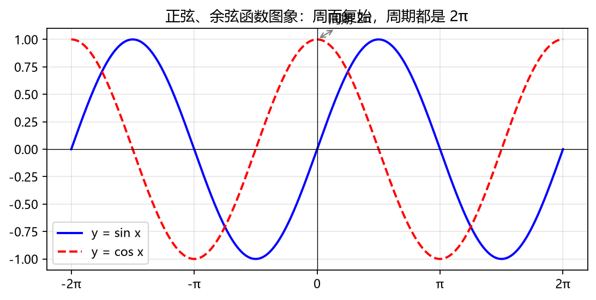
正弦像水波一样上下抖，余弦只是把正弦左移了 π/2。它们都周而复始——这正是三角函数天生用来描述周期现象的原因（潮汐、季节、交流电）。
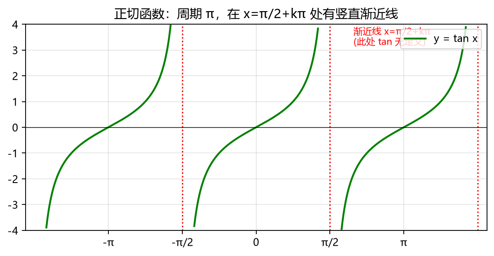
正切不一样：它在 x = π/2 + kπ 处"断"掉，冲向无穷，周期也短，只有 π。
把三条函数的性质并排放（这张表整章最重要，背熟）：
| 性质 | y = sin x | y = cos x | y = tan x |
|---|---|---|---|
| 定义域 | R | R | x ≠ π/2 + kπ |
| 值域 | [−1, 1] | [−1, 1] | R |
| 周期 | 2π | 2π | π |
| 奇偶 | 奇 | 偶 | 奇 |
| 递增区间 | (−π/2+2kπ, π/2+2kπ) | (−π+2kπ, 2kπ) | (−π/2+kπ, π/2+kπ) |
| 对称轴 | x = π/2 + kπ | x = kπ | 无 |
| 对称中心 | (kπ, 0) | (π/2+kπ, 0) | (kπ/2, 0) |
这些性质怎么来的？
- 值域 [−1,1]：单位圆上点的坐标本来就在 −1 到 1 之间。
- 周期 2π：角转一整圈 2π，终边回到原位，函数值当然重复。
- sin 奇、cos 偶：sin(−x)=−sinx、cos(−x)=cosx，就是诱导公式里那两条负角公式。
- tan 周期 π 而非 2π：因为转 π 后 (x,y)→(−x,−y)，y/x 不变，所以半圈就重复。
"五点法"画正弦曲线：一个周期内取五个关键点 (0,0)、(π/2,1)、(π,0)、(3π/2,−1)、(2π,0)，描出来连成波浪，就是草图。以后画 y = Asin(ωx+φ) 也靠这五点。
例题跟讲例题 3.5-1：求 y = sin x 的对称轴和对称中心。 解：最大值点、最小值点在轴上 → 对称轴 x = π/2 + kπ；曲线与 x 轴交点为对称中心 → (kπ, 0)。 要点：正弦"峰谷连线是轴，零点是中心"。
陷阱：tan x 没有对称轴，但有对称中心 (kπ/2, 0)，别漏。
编者注·本质回扣：这一节那张"性质对照表"看着要背十几行，其实条条都能从单位圆那个动点 P 推出来。值域 [−1,1] 不过是 P 的坐标本来就夹在 −1 到 1 之间；周期 2π 不过是 P 转一整圈回到原位、坐标原样重复；sin 奇 cos 偶，就是 P 转到 −α 时 y 变号、x 不变；tan 周期只有 π，是因为转半圈后 (x,y) 变成 (−x,−y)，比值 y/x 不变。所以这张表不是靠背，是脑子里放一个轮子在转，转到哪就知道坐标落在哪。
3.6 y = A sin(ωx + φ)（A > 0, ω > 0）
实际的波动很少是"标准"正弦。交流电电压、声波振幅、弹簧振子，都可能被放大、被压扁、被平移。一般式 y = A sin(ωx + φ) 就是干这个的。
三个参数各管一件事：
- 振幅 A：管上下拉伸，最大值 A、最小值 −A。
- ω（欧米伽）：管横向压缩，周期 T = 2π/ω。ω 越大，波形挤得越密。
- φ（读作 fài）初相：管左右平移。φ>0 向左移，φ<0 向右移。
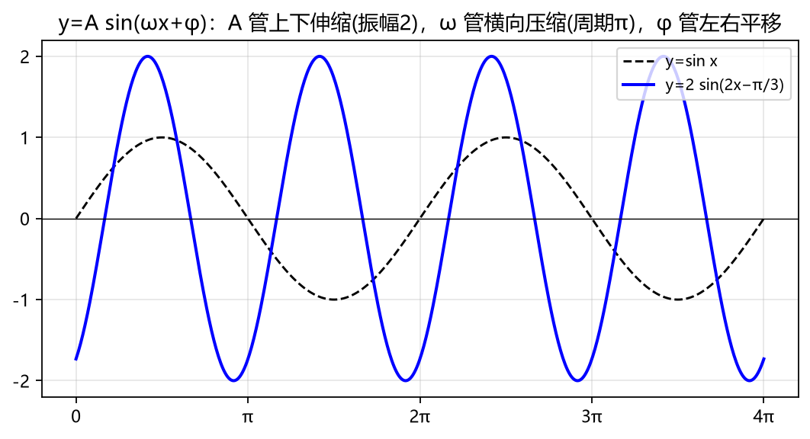
图象变换顺序（从 y = sin x 出发）：
- 左右平移 φ 个单位（得 y = sin(x+φ)）；
- 横向伸缩 1/ω 倍（得 y = sin(ωx+φ)）；
- 纵向伸缩 A 倍（得 y = A sin(ωx+φ)）；
- 如有 b，再上下平移 b。
由图象反求解析式（高考常考）：
- A = (最大值 − 最小值)/2；
- 读出周期 T（相邻两个零点或两个峰的距离），则 ω = 2π/T；
- φ 用"五点法"：把某个关键点的坐标代入 y = A sin(ωx+φ) 反解。
例题跟讲例题 3.6-1：简谐运动的位移 y = 3 sin(2x + π/4)，求振幅、周期、初相。 解：A = 3；T = 2π/ω = 2π/2 = π；初相 φ = π/4。 要点：对着标准式 y = A sin(ωx+φ) 对号入座即可。
例题跟讲例题 3.6-2：某曲线振幅为 2，周期为 π，过点 (0, 1)，求 y = A sin(ωx+φ) 的一个解析式。 解：A = 2；ω = 2π/T = 2。代入 (0,1)：2 sin(φ) = 1 → sinφ = 1/2，取 φ = π/6。故 y = 2 sin(2x + π/6)。 要点：φ 的解不唯一（π/6 或 5π/6），结合图象趋势取一个即可。
陷阱：T = 2π/ω，别把 ω 和 T 搞反——y = sin 2x 的周期是 π，不是 2π。
小结：这一章把"角"从初中的直角三角形推广到了单位圆，又从单位圆长出了一整套周期函数。记住三件事：sin 是纵坐标、cos 是横坐标、一切大角都靠诱导公式化回锐角。
④ 例题详解（先做再看）
例题例 1（同角关系）：已知 sin α = 3/5，且 α 在第二象限，求 cos α 与 tan α。
自己做：用平方关系 + 象限定符号。
解：cos2α = 1 − sin2α = 1 − 9/25 = 16/25。α 在第二象限 ⇒ cos α < 0，故 cos α = −4/5。tan α = sin α/cos α = −3/4。 要点：开方前必须先定象限符号，正负号是本题唯一的坑。
例题例 2（诱导公式化简）：化简 sin(π + α) · cos(π/2 − α)。
自己做：分别用诱导公式。
解：sin(π + α) = −sin α；cos(π/2 − α) = sin α。原式 = −sin2α。 要点：逐项化简，别合并符号。
例题例 3（由图象求解析式）：某简谐运动图象周期为 π，振幅为 2，初相为 π/6，写出 y = A sin(ωx + φ) 的解析式。
自己做：A、ω、φ 逐个定。
解：A = 2；T = π ⇒ ω = 2π/T = 2；φ = π/6。故 y = 2 sin(2x + π/6)。 要点：ω 由周期反推，别把 ω 和 T 搞混。
例题例 4（换元求值域 + 恒成立，苏州教研·专题27，原书p.117）：已知函数 f(x) = 4 sin(2x + π/6) + 1。 (1) 当 x∈[−π/6, π/3] 时，求 f(x) 的值域； (2) 若不等式 −10 ≤ m − f(x) ≤ 10 对一切 x∈[−π/6, π/3] 都成立，求实数 m 的取值范围。
自己做：把括号里的 2x+π/6 当成一个整体 t。
解：(1) x∈[−π/6, π/3] ⇒ t = 2x+π/6 ∈ [−π/6, 5π/6]。t 在这个区间上 sin t 的最小值在 t = −π/6 处取 −1/2，最大值在 t = π/2 处取 1，故 sin t ∈ [−1/2, 1]。 f(x) = 4 sin t + 1 ∈ [4·(−1/2)+1, 4·1+1] = [−1, 5]。 (2) −10 ≤ m−f(x) ≤ 10 等价于 f(x)−10 ≤ m ≤ f(x)+10。它要对所有 x 成立，m 就得不超过右边的最小值、不低于左边的最大值： m ≤ min(f(x)+10) = −1+10 = 9；m ≥ max(f(x)−10) = 5−10 = −5。 故 m∈[−5, 9]。 要点：求 y = A sin(ωx+φ) 在区间上的值域，先把 ωx+φ 整体换元成 t，再看 sin t 在 t 的区间上的最大/最小；恒成立问题最后归到"m 夹在值域两端"。
⑤ 出口检测
自测（15 分钟，每题 2 分）：
- 把 120° 化成弧度。
- 已知 cos α = −1/2，α 在第二象限，求 sin α。
- 化简 sin(π/2 − x) − cos x。
- y = sin x 的对称轴方程是什么？
- 函数 y = sin 2x 的周期是多少？
真题验收：2020–2024 新高考Ⅰ卷三角函数小题 2 道（图象性质/诱导/同角，多在选择题 5–8 题区间）：每题 2 分钟、全对过关。
过关标准：自测 ≥ 10 分 且 真题全对 → 打卡，进入 07 章。
课后习题（分层练习）
A 组打基础，B 组练中档，C 组碰真题。每题前标了考点，做完对章末答案。
A 组·基础巩固
1.【考点：弧度换算】把下列各角度化为弧度：(1) 135°；(2) 240°；(3) −30°。 2.【考点：弧度换算】把下列弧度化为度：(1) 5π/6；(2) 3π/4；(3) π/9。 3.【考点：弧长与扇形面积】扇形半径 r = 4，圆心角 α = π/3，求弧长 l 和扇形面积 S。 4.【考点：单位圆定义】角 α 终边经过点 P(−2, −2√3)，求 sinα、cosα、tanα。 5.【考点：符号判断】不查表，判断下列各式的正负号：(1) sin 130°；(2) cos 200°；(3) tan(−50°)。 6.【考点：同角关系】已知 sinα = 5/13，且 α 是第二象限角，求 cosα 和 tanα。
B 组·能力提升
7.【考点：诱导公式】求下列各三角函数值：(1) sin(5π/3)；(2) cos(7π/6)；(3) tan(−3π/4)。 8.【考点：同角关系+诱导】已知 cosα = 3/5，且 α 是第四象限角，求 sin(π+α) 的值。 9.【考点：图象性质】求函数 y = 2 sin x 的最大值、最小值、周期，并写出一条对称轴方程。 10.【考点：y=Asin(ωx+φ)】函数 y = 3 sin(2x − π/6)，求振幅、周期，并求它取最大值时 x 的一个值。
C 组·真题挑战
说明：本工程所存真题 PDF 中，2020、2022、2023 三卷为扫描件（无文本层），无法逐字核对题干，故 C 组只收录能从文本层逐字读出的 2024、2025 新高考Ⅰ卷真题。
11.【考点：正切函数的对称中心】（2025 新高考Ⅰ卷·第 4 题）若点 (a, 0)（a>0）是函数 y = 2tan(x − π/3) 图象的一个对称中心，则 a 的最小值为（ ） A. π/6 B. π/3 C. π/2 D. 4π/3
12.【考点：正弦型曲线交点个数】（2024 新高考Ⅰ卷·第 7 题）当 x∈[0, 2π] 时，曲线 y = sin x 与 y = 2sin(3x − π/6) 的交点个数为（ ） A. 3 B. 4 C. 6 D. 8
⑥ 常见坑清单
- 象限定符号：平方关系开方后正负号由象限决定，不是默认正。
- 诱导公式"符号看象限"：把 α 当锐角，看原角所在象限原函数的符号。
- tan x 定义域 x ≠ π/2 + kπ：求定义域别忘。
- 周期 T = 2π/ω：y = sin 2x 周期是 π 不是 2π。
- 弧度值要带"rad"感：高中做题默认弧度，角度要换算。
本章公式速查表
与《高中数学常用公式·修订版》第三部分核对一致。
弧度制：用弧长量角
π rad = 180°；1° = π/180 rad；1 rad = (180/π)° ≈ 57.3°
- 大白话：半圈就是 π 弧度，角度和弧度是量同一个角的两把尺子。
- 用的时候：度化弧度乘 π/180，弧度化度乘 180/π；从这章起做题默认弧度。
- 记忆要点：整圈 2π = 360°，其余都从这一句推。
弧长 l = |α|·r；扇形面积 S = ½·l·r = ½·|α|·r2（α 必须用弧度）
- 大白话：弧度制下弧长就是"圆心角乘半径"，扇形面积是弧长乘半径再折半。
- 用的时候：题目给角度就先换成弧度；看到扇形直接套，别再绕"底乘高"。
三角函数的定义（单位圆）
单位圆上交点 P(x,y)：sinα = y，cosα = x，tanα = y/x
- 大白话：sin 就是那个点的纵坐标，cos 就是横坐标。
- 用的时候：别死守初中"对边比斜边"，直接把 sin、cos 想成单位圆上点的 y、x。
终边上一般点 P(x,y)、r = √(x2+y2)：sinα = y/r，cosα = x/r，tanα = y/x
- 大白话：圆半径不是 1 也不怕，先把 r 算出来再比。
- 用的时候：给终边上一点求三角值，第一步永远是先算 r。
符号口诀：一全正，二正弦，三正切，四余弦
- 大白话：按象限记谁正谁负——第一象限全正，第二象限只有 sin 正，第三象限只有 tan 正，第四象限只有 cos 正。
- 用的时候：判断正负不用算具体值，先定象限再套口诀。
同角基本关系
sin2α + cos2α = 1
- 大白话：同一个角的 sin、cos 平方和永远等于 1，不管角多大。
- 用的时候：已知 sin 求 cos 时用它；注意开方取正负要看角所在象限。
- 记忆要点：画单位圆，斜边是 1，勾股定理就是它。
tanα = sinα / cosα（要求 cosα ≠ 0）
- 大白话：tan 就是 sin 除以 cos。
- 用的时候：角落在 y 轴上（cos = 0）时 tan 没意义，这是 tan 定义域的根。
诱导公式（大角化锐角）
口诀：奇变偶不变，符号看象限
- 大白话：加减的是 π/2 的几倍？奇数倍函数名 sin↔cos 互换，偶数倍名字不变；再把 α 当锐角，看原来那个角在第几象限、原函数取正还是负，符号就照带过去。
- 用的时候：负角、补角、平角、互余全靠它化回锐角；符号看的是变换前那个角，不是变换后。
常用四组（大角化锐角的成品公式）
负角：sin(−α) = −sinα，cos(−α) = cosα，tan(−α) = −tanα
补角 π−α：sin(π−α) = sinα，cos(π−α) = −cosα
平角 π+α：sin(π+α) = −sinα，cos(π+α) = −cosα
互余 π/2−α：sin(π/2−α) = cosα，cos(π/2−α) = sinα
- 大白话：上面口诀在负角、补角、平角、互余四种情形下的成品，直接套用。
三条基本函数的性质
周期：y = sin x、y = cos x 周期 2π；y = tan x 周期 π
- 大白话：正弦余弦转一整圈才重复，正切转半圈就重复。
- 用的时候：tan 周期别误写成 2π。
值域与奇偶：sin、cos ∈ [−1,1]，tan ∈ R；sin、tan 是奇函数，cos 是偶函数
- 大白话：sin、cos 被夹在 −1 到 1 之间；sin 关于原点对称，cos 关于 y 轴对称。
- 用的时候：求最值先看值域；判奇偶就看 sin(−x)=−sinx、cos(−x)=cosx。
对称轴与中心：sin x 轴 x = π/2+kπ、中心 (kπ,0)；cos x 轴 x = kπ、中心 (π/2+kπ,0)；tan x 无对称轴、中心 (kπ/2,0)
- 大白话：正弦"峰谷连线是轴、零点是中心"；余弦正好错开 π/2；正切没有轴但有中心。
- 用的时候：tan 别漏了对称中心 (kπ/2,0)。
y = A sin(ωx + φ) 的读法
振幅 A、周期 T = 2π/|ω|、初相 φ；最大值 A、最小值 −A
- 大白话：A 管波形上下拉多高，ω 管波形挤多密，φ 管波形左右挪多少。
- 用的时候：ω 越大周期越小；T=2π/ω，别把 ω 和 T 搞反（y=sin2x 周期是 π）。
对称轴令 ωx+φ = π/2+kπ；对称中心令 ωx+φ = kπ；y = A tan(ωx+φ) 周期 T = π/|ω|
- 大白话：把括号里那串整体当作标准正弦的角，套进 sin 的轴/中心公式再反解 x。
- 用的时候：正切型周期是 π/|ω|，别套成 2π/|ω|。
周期与对称的进阶结论（苏州教研·专题27）
加绝对值后周期减半/不减半：y = |sin(ωx+φ)|、|cos(ωx+φ)|、|tan(ωx+φ)| 的周期 T = π/ω；y = |A sin(ωx+φ)+B|、|A cos(ωx+φ)+B|（B≠0）的周期 T = 2π/ω（不减半）
- 大白话：光给 sin、cos 套一层绝对值会把负半周"翻上去"，波形挤成原来一半密（周期减半）；但如果底下还垫了常数 B（整体平移过），翻上去后破坏了对称，周期又恢复成 2π/ω。
- 用的时候：见 |sin(ωx+φ)| 直接写 T=π/ω；见 |A sin(ωx+φ)+B|（B 不为 0）别减半。
- 记忆要点：纯绝对值包函数本身减半，包"函数+竖直平移"不减半。
对称轴过最值点：x = m 是 f(x) = A sin(ωx+φ) 的对称轴 ⇔ f(m) = ±A；点 (m,0) 是对称中心 ⇔ f(m) = 0
- 大白话：正弦曲线的对称轴一定穿过峰或谷（函数取到 ±A 的地方），对称中心一定落在平衡位置（函数取 0 的地方）。
- 用的时候：判断直线 x=m 是不是对称轴、点 (m,0) 是不是中心，只需代入看它取不取到 ±A / 0，不用画图。
确定性奇偶性的条件：y = A sin(ωx+φ)、A cos(ωx+φ)、A tan(ωx+φ) 有确定奇偶性 ⇔ φ = k·π/2（k∈Z）
- 大白话：当初相 φ 是 π/2 的整数倍时，这个函数才"天生"是奇函数或偶函数；否则既非奇也非偶。
- 用的时候：题目问"f(x) 是奇函数/偶函数求 φ"，答案就是 φ=kπ（sin 型奇、cos 型偶）或 φ=kπ+π/2 这一类，圈在 φ=k·π/2 上。
由一段最值反求 A、B：y = A sin(ωx+φ)+B（A>0）的值域为 [−A+B, A+B]，故 A = (ymax−ymin)/2，B = (ymax+ymin)/2
- 大白话：有上下平移 B 时，最大值与最小值不再关于 0 对称，中线就是 B，振幅是上下两半差的一半。
- 用的时候：给一段图象读出最大、最小值，直接套这两条反解 A 和 B。
三角方程：sin α = sin β ⇒ α = β + 2kπ 或 α + β = π + 2kπ（k∈Z）
- 大白话：两个正弦值相等，要么两个角终边相同，要么它们关于 π/2 对称（和为 π 的奇数倍）。
- 用的时候：解 sin 方程别只写 α=β，漏掉"和为 π"那组解就扣分。
三角不等式与勾股数速算（苏州教研·专题26）
x∈(0, π/2) 时：sin x < x < tan x
- 大白话：在锐角范围内，正弦比弧度 x 小，正切比 x 大，x 夹在中间。
- 用的时候：比较 sin、x、tan 三者大小，或给"sin x<x"这类不等式提供直觉。
x∈(0, π/2) 时：1 < sin x + cos x ≤ √2
- 大白话：锐角正弦加余弦，最小趋近 1（不取到），最大是 √2（在 x=π/4 取到）。
- 用的时候：判断 sin x+cos x 的范围，或辅助角 sin x+cos x=√2 sin(x+π/4) 的最值。
勾股数速记（秒出三角函数值）：(3,4,5)、(5,12,13)、(8,15,17)、(7,24,25)
- 大白话：背熟这四组勾股数，遇到直角三角形边长能立刻写出 sin、cos、tan。
- 用的时候：给了两条边长求三角值，先看是不是这几组勾股数，是的话直接读比值，但别忘了先按象限定符号。
高级方法·进阶
本章主线（单位圆定义 + 同角关系 + 诱导公式 + 图象性质 + 图象变换）已覆盖高考全部考点。
本章无对应高级方法手册条目。说明：《不超纲高级方法手册》"五、三角与解三角形"中的辅助角公式属于下一章（07 三角恒等变换），本章尚不引入；本章所有常用技巧（五点法、由图求 A/ω/φ、象限定号）已在正文 3.5、3.6 讲透，无需额外超纲方法。
自测答案：1. 120° = 2π/3 rad；2. sin α = √3/2（sin2α = 3/4，第二象限 sin > 0）；3. cos x − cos x = 0；4. x = π/2 + kπ；5. T = 2π/2 = π。
课后习题答案
A 组
- (1) 135° = 135×π/180 = 3π/4；(2) 240° = 4π/3；(3) −30° = −π/6。
- (1) 5π/6 ×180/π = 150°；(2) 3π/4 = 135°；(3) π/9 = 20°。
- l = αr = (π/3)×4 = 4π/3；S = ½αr2 = ½×(π/3)×16 = 8π/3。
- r = √(4+12) = 4。sinα = y/r = −2√3/4 = −√3/2；cosα = x/r = −2/4 = −1/2；tanα = y/x = (−2√3)/(−2) = √3。
- (1) 130° 在第二象限，sin >0；(2) 200° 在第三象限，cos <0；(3) −50° 在第四象限，tan <0。
- cos2α = 1 − 25/169 = 144/169；第二象限 cos<0，cosα = −12/13；tanα = (5/13)/(−12/13) = −5/12。
B 组
- (1) sin(5π/3) = sin(2π−π/3) = −sin(π/3) = −√3/2；(2) cos(7π/6) = cos(π+π/6) = −cos(π/6) = −√3/2；(3) tan(−3π/4) = −tan(3π/4) = −(−1) = 1。
- 第四象限 sin<0：sinα = −√(1−9/25) = −4/5。sin(π+α) = −sinα = 4/5。
- y=2sin x：最大值 2、最小值 −2、周期 2π；对称轴一条为 x = π/2。
- A = 3；T = 2π/2 = π；取最大值时 2x−π/6 = π/2，解得 x = π/3（x 的一个值）。
C 组
- 【2025·第4题】正切 y=tan t 的对称中心在 t = kπ/2（纵坐标乘 2 不改变对称中心的横坐标）。令 a−π/3 = kπ/2 → a = π/3 + kπ/2。a>0 取 k=0，得 a 最小值 π/3，选 B。
- 【2024·第7题】这是"画图数交点"题，别硬列三角方程——两边振幅不等（一个是 1、一个是 2），"sinA=sinB"那套分角法在这里失效。设 f(x)=sin x−2sin(3x−π/6)。右边 y=2sin(3x−π/6) 振幅 2、周期 2π/3，在 [0,2π] 内正好走 3 个周期，抖得比左边 sin x 快 3 倍。沿区间每隔 π/12 取一个点看 f 的正负号：f(0)=+1、f(π/12)=−0.26、f(5π/12)=+1.48、f(5π/6)=−1.23、f(13π/12)=+0.26、f(17π/12)=−1.48、f(11π/6)=+1.23。相邻两点异号就说明中间穿了一次 x 轴，全程共变号 6 次，即两条曲线交 6 次，选 C。
一通百通
遇到三角函数的概念题、图象性质题、由图求解析式题，通用骨架只有三步：① 脑子里先放一个单位圆、一个动点 P(x,y)；② 把题目问的东西翻译成 P 的坐标（sin=y、cos=x、tan=y/x）或它转了多少角度；③ 让 P 转起来看坐标怎么重复，周期、最值、对称、单调就全读出来了。会这一道"单位圆投影"题，后面同角求值、诱导化简、画波形、求 A/ω/φ 这一整类题都会——这套"先建单位圆、再读坐标"的骨架，第 07 章做恒等变换、第 08 章解三角形时还会反复用到。
跨章结合
- 06 的"单位圆坐标投影" + 第 02 章函数的"换元求值域 / 恒成立"：把 ωx+φ 整体换元成 t，再看 sin t 在 t 的区间上取到最大、最小，就解决了"已知 f(x)=4sin(2x+π/6)+1 在某区间上的值域、反推恒成立参数 m 的范围"这类题（苏州教研·专题27，即本章例 4，答案 m∈[−5,9]）。这是"三角函数"撞上"函数值域与恒成立"的典型结合点。
- 06 的"画波形看交点" + 区间讨论：两条三角函数曲线在给定区间交几次，靠画图看正负号变号、不用硬列三角方程——这正是 2024 新高考Ⅰ卷第 7 题（y=sin x 与 y=2sin(3x−π/6) 在 [0,2π] 内交点 6 个，答案 C）；而 2025 新高考Ⅰ卷第 4 题（y=2tan(x−π/3) 的对称中心，答案 B），本质也是把 tan 的对称中心知识套到平移后的曲线上。
- 06 的 y=A sin(ωx+φ) + 第 02 章函数图象变换（综合原理说明，非真题）：正弦型曲线的"左右平移 φ、横向压缩 1/ω、纵向拉伸 A"，就是第 02 章学过的函数图象"平移 + 伸缩"那套动作，原样搬到正弦波上——想通 02 章的图象变换，这里三个参数各管一段就不用死记。
- 06 由图反求 ω、φ + 第 15 章直线与圆（综合原理说明，非真题）：用对称轴 x=m、对称中心 (m,0) 反解 ω、φ 时，本质是"令 ωx+φ=kπ/2，解出 x 落在某条竖直直线上"——这一步"把几何对称条件翻成关于 x 的方程"，和第 15 章处理直线方程、用条件定参数是同一种动作。
本章与前后章
本章上接第 02 章函数（定义域、值域、奇偶性那套语言），把"函数"第一次用到"周期现象"上；再往前是初中直角三角形里的锐角三角比，本章把它推广到了任意角、推广到单位圆。本章是三角函数板块的地基：第 07 章的和差角、倍角、辅助角公式，全都建立在本章的单位圆定义和同角关系 sin2+cos2=1 之上；第 08 章解三角形里的正弦、余弦定理，又是把这些三角函数用到三角形的边角上去。学完本章，你手里有了一个能描述一切周而复始现象（潮汐、交流电、声波）的数学模型。
高考怎么考
新高考Ⅰ卷里三角函数概念与性质通常出 1~2 道小题，位置在选择题中段（第 4~8 题一带），考法集中在：由图象/对称中心求参数（如 2025 新高考Ⅰ卷第 4 题，y=2tan(x−π/3) 的对称中心，答案 B，a 的最小值 π/3）、两条三角函数曲线在给定区间内的交点个数（如 2024 新高考Ⅰ卷第 7 题，靠画图数变号、交点 6 次）、同角关系与诱导公式化简。难度中等、套路固定——核心还是"脑子里有没有那个转着的单位圆"，会画波形、会读 A/ω/φ，这些题就是送分。
三角恒等变换
公式速查：修订版 第3部分（和差/倍角/辅助角）
本章本质核心：三角恒等变换的本质是"把不同角的三角函数，统一换成同一个角的三角函数"——题目里冒出 α+β、α−β、2α、两个不同角相加，看着乱，其实都是同一个归约动作：想办法把它们压回到同一个角，再算。本章全部公式（两角差的余弦、和差角、二倍角、降幂、辅助角）都是这一个归约原理的变体；根只有一块砖 cos(α−β)，其余全是它推出来的。 为什么有用：想通"把不同角归约到同一个角"这一招，你就能把乱成一团的 sin、cos 混合式化简成一根干净的正弦波，最大值、周期、单调区间直接读出来；物理里交流电叠加、两个简谐运动合成，背后都是这一手合一变形——想通归约原理，比死背和差角表管用得多。
① 门槛自测（进章前，10 分钟）
- sin 30°、cos 60°、tan 45° 各是多少？
- sin2α + cos2α = ？
- (a + b)2 = a2 + 2ab + b2 成立吗？（同类公式意识）
- sin 90° = ？cos 0° = ？
- 判断 sin(α + β) 是否等于 sin α + sin β。
判定：5 题答对 4 题以上 → 进章。
② 学习目标
- 背熟并会用和差角公式、二倍角公式
- 会用降幂公式化简求值
- 会用辅助角公式把 asin x + bcos x 合成一个正弦
- 能解决"给值求值、给值求角"两类恒等变换题
③ 正文讲解
上一章我们有了 sin、cos、tan，这一章要让它们"互相变换"。先看地图：
两角差的余弦公式 C(α−β) ← 一切公式的根（用单位圆两点距离推出）
↓ 把 β 换成 −β、把 α−β 推广
和角、差角公式（sin / cos / tan）
↓ 令 β = α
二倍角公式
↓ 反解
降幂 / 升幂公式
↓ 逆用和角公式
辅助角公式（asinx+bcosx 合一）
↓ 应用
给值求值、给值求角
先说一句最重要的：sin(α+β) 不等于 sinα+sinβ（门槛自测第 5 题就是坑你）。正弦不"分配"。这些公式是一个严密的网，记住一个根（两角差的余弦），其余都能推出来，别死背。
3.1 和差角公式（必背）
怎么来的（几何直觉）：在单位圆上取两个角 α、β，它们终边与单位圆交点分别是 (cosα, sinα) 和 (cosβ, sinβ)。这两点连起来的距离，既可以用距离公式写出来，也等于夹角为 α−β 的两点距离。两边一对照，就得到最基础的一块砖——
cos(α−β) = cosα cosβ + sinα sinβ。
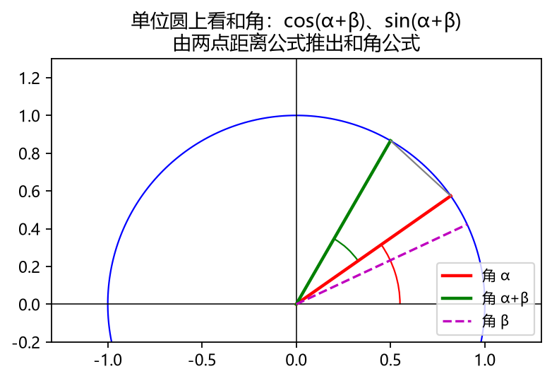
有了这块砖，其余和差角公式都靠"把负号代进去"推出来。比如把 β 换成 −β（cos(−β) = cosβ，sin(−β) = −sinβ），就得到 cos(α+β)。最终全套：
- sin(α ± β) = sinα cosβ ± cosα sinβ
- cos(α ± β) = cosα cosβ ∓ sinα sinβ
- tan(α ± β) = (tanα ± tanβ) / (1 ∓ tanα tanβ)
记法：
- sin："正余余正"，中间符号相同（α+β 就用 +，α−β 就用 −）。
- cos："余余正正"，中间符号相反（α+β 反而用 −，α−β 反而用 +）——这是最容易记反的地方。
例题跟讲例题 3.1-1：求 sin 75°。 解：75° = 45°+30°，用 sin(α+β)： sin 75° = sin45°cos30° + cos45°sin30° = (√2/2)(√3/2) + (√2/2)(1/2) = √6/4 + √2/4 = (√6+√2)/4。 要点：把 75° 拆成两个特殊角的和，套公式即可。
例题跟讲例题 3.1-2：已知 tanα = 2，tanβ = 3，求 tan(α+β)。 解：tan(α+β) = (tanα+tanβ)/(1−tanα tanβ) = (2+3)/(1−2 × 3) = 5/(−5) = −1。 要点：分子同号、分母异号，别把分母的符号写反。
陷阱：cos(α+β) 中间是减号，别写成 cosαcosβ+sinαsinβ。
编者注·本质回扣：这一节公式看着一排，其实是"一块砖推出来的一张网"。先记最根的那一条 cos(α−β)，再把 β 换成 −β 就得到 cos(α+β)，把 sin、cos 角色对调又得到正弦的和差——所谓"中间符号相同 / 相反"，不是两条要分开死背的规则，而是同一个展开式落在 sin、cos 身上的自然差别。说白了，你不用背这一整张表：会推这一条根，考场现场也能现算出来，这正是本章本质核心说的"归约到一个根"。
3.2 二倍角公式（由和差角令 β = α）
和角公式里令 β = α，立刻得到二倍角：
- sin 2α = 2 sinα cosα
- cos 2α = cos2α − sin2α（这是"母版"）
- tan 2α = 2tanα / (1 − tan2α)
cos 2α 还能借助 sin2α+cos2α = 1 换成另外两种写法，哪个好用哪个： cos 2α = 2cos2α − 1 = 1 − 2sin2α。
为什么要有三种写法？ 因为题目给 sinα 就用 1−2sin2α，给 cosα 就用 2cos2α−1，直接代入，不用再开方。
例题跟讲例题 3.2-1：已知 sinα = 3/5，α 是第二象限角，求 sin 2α 和 cos 2α。 解：第二象限 cosα = −4/5。 sin 2α = 2 sinα cosα = 2 × (3/5) × (−4/5) = −24/25。 cos 2α = 1 − 2sin2α = 1 − 2 × (9/25) = 7/25（用含 sin 的式子，省事）。 要点：求 cos 2α 时，哪种给的三角函数值方便就用哪种写法。
陷阱：sin 2α ≠ 2 sinα；cos 2α ≠ 2 cosα。倍角是"套公式"，不是"把系数乘 2"。
3.3 降幂公式（由二倍角反推，选填必用）
把二倍角公式反解出来，就得到降幂公式——看到平方就想降幂：
- cos2α = (1 + cos 2α) / 2
- sin2α = (1 − cos 2α) / 2
反过来是升幂： 1 + cos 2α = 2cos2α；1 − cos 2α = 2sin2α。
什么时候用？ 题目出现 sin2x、cos2x，无法直接化简，降幂后角变成 2x，往往就能和别的项合并、再用辅助角合一。还有一个常用小结论：(sinα ± cosα)2 = 1 ± sin2α。
例题跟讲例题 3.3-1：化简 sin2x + cos2x 之外，求 cos215° 的值（不用计算器）。 解：cos215° = (1 + cos30°)/2 = (1 + √3/2)/2 = (2+√3)/4。 要点：看到"角度一半的平方"，用降幂公式立刻变成特殊角 30°。
陷阱：方向别反——见到 cos2α 降幂，见到 cos 2α 升幂。
3.4 辅助角公式（合一变形，高考高频）
这是本章最有用的一招。任何 a sin x + b cos x 都能合成"一个正弦"：
a sin x + b cos x = √(a2 + b2) · sin(x + φ)， 其中 tan φ = b/a，且 φ 所在象限由 (a, b) 的符号决定。
为什么能合？ 右边展开 √(a2+b2)[sin x cosφ + cos x sinφ]，要等于左边 a sin x + b cos x，就得 √(a2+b2)cosφ = a、√(a2+b2)sinφ = b。于是 cosφ = a/√(a2+b2)、sinφ = b/√(a2+b2)，φ 就是点 (a,b) 对应的角。
经典两例（背下来）：
- sin x + cos x = √2 sin(x + π/4)（a = 1,b = 1,√(a2+b2) = √2, φ = π/4）
- √3 sin x − cos x = 2 sin(x − π/6)（a = √3,b = −1,√(a2+b2) = 2, φ 在第四象限）
用途：合一之后，求周期、最值、单调区间全部"读"出来——最大值就是 √(a2+b2)，最小值是它的相反数。
（合并后仍是一个 y = A sin(x + φ) 形式的正弦，图象仍是正弦曲线：从 y = sin x 到 y = A sin(ωx+φ) 的平移与伸缩过程，见 06 章 3.6 节的配图。）
例题跟讲例题 3.4-1：求 f(x) = sin x + √3 cos x 的最大值与周期。 解：a = 1, b = √3，√(a2+b2) = 2，tanφ = √3，且 a,b 都正（φ 在第一象限），φ = π/3。 f(x) = 2 sin(x + π/3)。最大值 2，周期 2π。 要点：合一后最值直接看振幅，不用再想。
陷阱：只写 tanφ = b/a 会丢符号——φ 的象限要结合 a、b 正负来定。
编者注·本质回扣：辅助角公式是本章"归约"思想的极致体现。a sin x + b cos x 里有正弦、有余弦、系数还不一样，乱成一锅；但把它写成 √(a2+b2)·sin(x+φ) 之后，就变回了第 06 章那个单一的正弦波——周期、最值、单调区间全部直接读出来。你要做的本质上就是"换个看法"：把点 (a,b) 当直角坐标读出它对应的那个角 φ，再把整坨式子折成一根正弦曲线。所谓"φ 的象限由 (a,b) 符号定"，不过是看这个点落在第几象限而已。
3.5 两类核心题型
第 1 类：给值求值。 已知某个三角函数值，求另一个。 流程：① 先用平方关系补齐缺的三角函数值；② 开方时看象限定正负；③ 套和差角或二倍角公式。
第 2 类：给值求角。 已知某个三角函数值，求角 α。 流程：① 先求该角的一个三角函数值（如 cosα）；② 圈出角的范围；③ 用单调性在范围内确定唯一角。
例题跟讲例题 3.5-1（给值求角）：已知 cosα = −√2/2，且 α ∈ (0, π)，求 α。 解：cosα = −√2/2，α ∈ (0,π)，cos 在 (0,π) 单调递减，cos(3π/4) = −√2/2，故 α = 3π/4。 要点：不写范围，cosα = −√2/2 在 0~2π 内有两个解（3π/4 和 5π/4），范围一卡就唯一。
小结：这一章的公式是一张网，根是两角差的余弦；二倍角、降幂、辅助角都是它的推论。做题时先判断"缺哪个值、角在什么范围"，再选公式。
3.6 三角式化简的三条路线（提升）
拿到一个长得很吓人的三角式，别慌，按这三条路一条条试：
- 降幂路线：见 sin2、cos2 就用降幂公式，把平方"打下来"，角翻倍。
- 合一路线：见 a sinx + b cosx（或整理成这个样子）就用辅助角公式合成一个正弦。
- 配角路线：题目给 α、β 的某种组合（如给 α+β、α−β），把要求的角用它们表示。比如已知 α+β 和 α−β，求 α，就用 α = [(α+β)+(α−β)]/2。
例题跟讲例题 3.6-1：已知 α+β = π/3，α−β = π/6，求 2α。 解：2α = (α+β) + (α−β) = π/3 + π/6 = π/2。 要点：配角思想——不用单独求 α、β，把目标角配成已知角的和差。
进阶/选学（超纲红线，只用于理解）：老教材里还有"积化和差、和差化积"两组公式（如 sinαcosβ = ½[sin(α+β)+sin(α−β)]）。新高考已不要求直接背，考试禁用这两组公式跳步，需要时用和差角公式现场推。知道有这回事、能推出来即可，别在卷子上直接套。
④ 例题详解（先做再看）
例题例 1（给值求值）：已知 sin α = 3/5（α 在第二象限），求 sin 2α 和 cos 2α。
自己做：先补 cos α。
解：cos α = −4/5（第二象限）。sin 2α = 2·(3/5)·(−4/5) = −24/25。cos 2α = 1 − 2sin2α = 1 − 2·(9/25) = 7/25。 要点：二倍角用含 sin 的公式最省事；符号由 sin α 本身决定，不需要额外定。
例题例 2（合一变形）：求函数 f(x) = sin x + √3 cos x 的最大值与周期。
自己做：先合一。
解：f(x) = 2 sin(x + π/3)（a = 1, b = √3，√(a2+b2) = 2，tan φ = √3 且在第一象限 ⇒ φ = π/3）。最大值 2；周期 T = 2π。 要点：合一后一切性质（最值/周期/单调）直接读。
例题例 3（化简求值）：化简 (cos 15° − sin 15°)/(cos 15° + sin 15°)。
自己做：分子分母同除以 cos 15°。
解：原式 = (1 − tan 15°)/(1 + tan 15°) = tan(45° − 15°) = tan 30° = √3/3。 要点：看到"1 ± tan"想到 tan 的和差角公式（tan(45°∓α) 结构）。
例题例 4（tan 和差角变形公式，苏州教研·专题29，原书p.127 B组）：求 tan 18° + tan 42° + √3 tan 18° tan 42° 的值。
自己做：18°+42° = 60°，凑 tan(α+β)。
解：60° = 18°+42°。由 tan(α+β) 的变形公式 tanα+tanβ = tan(α+β)(1−tanα tanβ)： tan18°+tan42° = tan60°·(1−tan18° tan42°) = √3(1−tan18° tan42°)。 代回原式：√3(1−tan18°tan42°) + √3 tan18°tan42° = √3。 要点：看到"tanα+tanβ"和"tanα tanβ"同时出现，就用 tanα+tanβ = tan(α+β)(1−tanα tanβ) 整体代换，乘积项会抵消。
例题例 5（辅助角公式 + 配角，苏州教研·专题30，原书p.127 B组）：求函数 y = 3 sin(x+20°) + 5 cos(x−10°) 的最大值。
自己做：两个角差 30°，先把它们配成同一个角。
解：(x−10°) − (x+20°) = −30°，即 x−10° = (x+20°) − 30°。令 θ = x+20°，则 cos(x−10°) = cos(θ−30°) = cosθ cos30° + sinθ sin30° = (√3/2)cosθ + (1/2)sinθ。 y = 3 sinθ + 5[(√3/2)cosθ + (1/2)sinθ] = (3+5/2)sinθ + (5√3/2)cosθ = (11/2)sinθ + (5√3/2)cosθ。 合一：振幅 R = √((11/2)2 + (5√3/2)2) = √((121+75)/4) = √(196/4) = √49 = 7。 故 y 的最大值就是振幅 7。 要点：两个不同角的 sin、cos 相加，先用配角把它们并到同一个角 θ，再用辅助角公式合一，最大值直接读振幅 R。
⑤ 出口检测
自测（15 分钟，每题 2 分）：
- sin 75° 的值（用和角公式）。
- 已知 cos α = 1/3，求 cos 2α。
- 求 f(x) = √3 sin x + cos x 的最大值。
- 化简 2sin2α − 1。
- tan(45° + α) 展开式（用和角公式）。
真题验收：2020–2024 新高考Ⅰ卷恒等变换/合一变形小题 1~2 道（多在选择题 6–10 题区间）：每题 3 分钟、全对过关。
过关标准：自测 ≥ 10 分 且 真题全对 → 打卡，进入 08 章。
课后习题（分层练习）
A 组·基础巩固
1.【考点：和角公式】求 sin 105°（提示：105° = 60°+45°）。 2.【考点：差角公式】求 cos 75°（75° = 45°−(−30°)，或 75° = 45°+30°）。 3.【考点：二倍角】已知 cosα = 1/4，求 cos 2α。 4.【考点：二倍角】已知 sinα = 5/13，α 是第二象限角，求 sin 2α。 5.【考点：降幂公式】求 sin215° 的值。 6.【考点：辅助角】把 sin x − cos x 合一成一个正弦，并写出它的最大值。
B 组·能力提升
7.【考点：给值求值】已知 sinα = 3/5（α 第二象限），cosβ = 5/13（β 第一象限），求 sin(α+β)。 8.【考点：辅助角+性质】求 f(x) = √3 sin x cos x + cos2x 的最大值（提示：先倍角、再合一）。 9.【考点：给值求角】已知 sinα = 1/2，α ∈ (π/2, π)，求 α。 10.【考点：tan 和差角】求 tan 15° 的值（用 tan(45°−30°)）。
C 组·真题挑战
说明：本工程所存真题 PDF 中 2020、2022、2023 为扫描件（无文本层），无法逐字核对题干，故 C 组只收录能从文本层逐字读出的 2024、2025 新高考Ⅰ卷真题。
11.【考点：和差角公式综合】（2024 新高考Ⅰ卷·第 4 题）已知 cos(α+β) = m，tanα·tanβ = 2，则 cos(α−β) =（ ） A. −3m B. −m/3 C. m/3 D. 3m
⑥ 常见坑清单
- sin(α ± β) 与 cos(α ± β) 中间符号相反：cos 是"cos cos ∓ sin sin"，别记成同号。
- 二倍角 cos 2α 三种写法要灵活换：求 sin2α 用 1 − 2sin2α 反解最方便。
- 合一变形 φ 的象限：只写 tan φ = b/a 会丢符号，要结合 a、b 的正负定 φ。
- 给值求角：范围不写，答案不唯一——这是给值求角的唯一扣分点。
- 降幂公式方向：见到 cos2α、sin2α 想降幂，见到 cos 2α 想升幂。
本章公式速查表
与《高中数学常用公式·修订版》第三部分第 8、9 条核对一致。
和差角公式（一切的根）
根：cos(α−β) = cosα cosβ + sinα sinβ
- 大白话：两角差的余弦，等于"余弦余弦相加、正弦正弦相加"。整套和差角公式都从它推出来。
- 用的时候：记不住全套时，先推出这一条，再用"把 β 换成 −β"变出其余。
sin(α±β) = sinα cosβ ± cosα sinβ（中间符号相同）
- 大白话：正弦展开是"正余、余正"，括号里是加号结果就加号、减号就减号。
- 用的时候：这是最不容易记反的一条，中间符号跟着 α±β 走。
cos(α±β) = cosα cosβ ∓ sinα sinβ（中间符号相反）
- 大白话：余弦展开是"余余、正正"，但中间符号要反过来——α+β 反而用减号。
- 用的时候：这是最容易写反的地方，cos(α+β) 中间是减号。
tan(α±β) = (tanα ± tanβ)/(1 ∓ tanα tanβ)
- 大白话：分子同号、分母反号。
- 用的时候：分母符号别写反；出现"1±tan"的结构就想到它（如 tan(45°±α)）。
和差角的乘积推论
sin(α+β)sin(α−β) = sin2α − sin2β
- 大白话：两个正弦相乘（角相差 2β），能化成"大角正弦平方减小角正弦平方"。
- 用的时候：选填里见到 sin(A+B)sin(A−B) 这种结构可直接套。
cos(α+β)cos(α−β) = cos2α − sin2β
- 大白话：余弦版本的同款化简。
- 用的时候：和上一条配对记，现场推不出来再查。
二倍角公式
sin 2α = 2 sinα cosα
- 大白话：二倍角的正弦 = 正弦余弦乘积的 2 倍。
- 用的时候：注意 sin2α ≠ 2sinα，别把系数直接乘进去。
cos 2α = cos2α − sin2α = 2cos2α − 1 = 1 − 2sin2α
- 大白话：二倍角余弦有三张"面孔"，给 sin 就用 1−2sin2α，给 cos 就用 2cos2α−1。
- 用的时候：哪种给的三角函数值方便就用哪张脸，省得再开方。
tan 2α = 2tanα/(1 − tan2α)
- 大白话：正切的二倍角，分子 2tan、分母 1−tan2。
- 用的时候：分母是 1−tan2α，别漏平方。
升幂与降幂
降幂：cos2α = (1+cos2α)/2，sin2α = (1−cos2α)/2
- 大白话：看到 sin2、cos2 就用它把平方"打下来"，同时角变成原来的 2 倍。
- 用的时候：选填见平方先想降幂，降完往往能再用辅助角合一。
升幂：1+cos2α = 2cos2α，1−cos2α = 2sin2α
- 大白话：降幂反过来就是升幂，把常数变成平方。
- 用的时候：方向别反——见 cos2α 降幂，见 cos2α 升幂。
(sinα ± cosα)2 = 1 ± sin2α
- 大白话：正弦余弦和（差）的平方，展开后就剩 1 和 sin2α。
- 用的时候：见到"sin±cos 的平方"直接化简，省得展开。
辅助角公式（合一变形）
a sinx + b cosx = √(a2+b2)·sin(x+φ)，tanφ = b/a，φ 所在象限由点 (a,b) 的符号决定
- 大白话：任何"正弦加余弦"都能捏成一个正弦；捏出来的振幅就是 √(a2+b2)。
- 用的时候：合一后周期、最值、单调区间直接读；只写 tanφ=b/a 会丢符号，φ 的象限要结合 a、b 正负定。
- 记忆要点：φ 就是坐标平面里点 (a,b) 对应的那个角。
经典两例：sinx + cosx = √2 sin(x+π/4)；√3 sinx − cosx = 2 sin(x−π/6)
- 大白话：两个最常考的合一成品，背下来小题能秒。
- 用的时候：第一个 a=b=1；第二个 a=√3、b=−1（φ 在第四象限）。
tan 与根式的进阶结论（苏州教研·专题29）
tan 变形公式：tanα + tanβ = tan(α+β)(1 − tanα tanβ)；tanα − tanβ = tan(α−β)(1 + tanα tanβ)
- 大白话：正切和角公式倒过来用——见到"tanα±tanβ"和"tanα tanβ"同框，就能把前者用 tan(α±β) 整体换掉。
- 用的时候：tan18°+tan42°+√3 tan18°tan42° 这类题，代换后乘积项抵消，一步出结果。
去根号（半角平方）：1 ± sinα = (sin(α/2) ± cos(α/2))2；1 + cosα = 2cos2(α/2)；1 − cosα = 2sin2(α/2)
- 大白话：根号里的"1±sinα""1±cosα"都能写成完全平方，根号直接脱掉。
- 用的时候：化简 √(1+sinα)、√(1−cosα) 时先配方；注意开方后要按角的范围定正负。
两个小结论（选填可秒）：α+β = π/4 时 (1+tanα)(1+tanβ) = 2；α+β = 3π/4 时 (1−tanα)(1−tanβ) = 2
- 大白话：两角和为特殊角 π/4 或 3π/4 时，"1±tan"的乘积是常数 2。
- 用的时候：选填见到这两个乘积结构，不用展开直接写 2。
辅助角的对称轴：f(x) = a sinx + b cosx 关于 x = x0 对称 ⇔ f(x0) = ±√(a2+b2)（即取到最值）
- 大白话：合一后是 y=R sin(x+φ)，对称轴一定过峰或谷，也就是函数取到 ±R 的地方。
- 用的时候：题目说"f(x) 关于 x=x0 对称"，立刻知 f(x0) 等于振幅 ±√(a2+b2)，不用求导。
高级方法·进阶
进阶·辅助角公式（合一变形）—— 不超纲（高考可放心用）
对应《不超纲高级方法手册》五.5.1。
- 适用信号：题目里出现 a sinx + b cosx 这种"正弦加余弦"的混合式，要求它的周期、最值、单调区间，或要把复杂三角式化成单一正弦。
-
操作步骤： 1. 提取 √(a2+b2) 作为新振幅； 2. 由 cosφ = a/√(a2+b2)、sinφ = b/√(a2+b2) 定 φ（或先算 tanφ = b/a 再按 (a,b) 象限定 φ）； 3. 写成 R sin(x+φ) 后，最值 = ±R、周期 = 2π、单调区间直接读。
-
例题：求 f(x) = sinx + √3 cosx 的最大值。R = √(1+3) = 2，f(x) = 2 sin(x+π/3)，最大值 2。
- 课标依据 / 超纲红线：本质是两角和公式的逆用（必修一 5.5），不超纲，高考解答题可放心使用。红线提醒：不要额外引入"万能公式""积化和差"等超纲推导过程，合一这一步本身合规。
自测答案：1. sin 75° = sin(45°+30°) = (√2/2)(√3/2) + (√2/2)(1/2) = (√6+√2)/4；2. cos 2α = 2·(1/9) − 1 = −7/9；3. f(x) = 2 sin(x + π/6)，最大值 2；4. 2sin2α − 1 = −cos 2α；5. (1 + tan α)/(1 − tan α)。
课后习题答案
A 组
- sin105° = sin(60°+45°) = (√3/2)(√2/2)+(1/2)(√2/2) = (√6+√2)/4。
- cos75° = cos(45°+30°) = (√2/2)(√3/2)−(√2/2)(1/2) = (√6−√2)/4。
- cos2α = 2cos2α−1 = 2·(1/16)−1 = −7/8。
- 第二象限 cosα = −12/13；sin2α = 2·(5/13)·(−12/13) = −120/169。
- sin215° = (1−cos30°)/2 = (1−√3/2)/2 = (2−√3)/4。
- sinx−cosx = √2 sin(x−π/4)（a=1,b=−1,R=√2,φ 在第四象限 = −π/4）；最大值 √2。
B 组
- α 第二象限 cosα = −4/5；β 第一象限 sinβ = 12/13。sin(α+β) = sinαcosβ+cosαsinβ = (3/5)(5/13)+(−4/5)(12/13) = 15/65 − 48/65 = −33/65。
- f(x) = √3 sinxcosx + cos2x = (√3/2)sin2x + (1+cos2x)/2 = (√3/2)sin2x + (1/2)cos2x + 1/2 = sin(2x+π/6) + 1/2。最大值 = 1 + 1/2 = 3/2。
- sinα = 1/2，α∈(π/2,π)，α = 5π/6。
- tan15° = tan(45°−30°) = (1−1/√3)/(1+1/√3) = (√3−1)/(√3+1) = 2−√3。
C 组 11.【2024·第4题】cos(α+β) = cosαcosβ − sinαsinβ = m。由 tanαtanβ = 2 得 sinαsinβ = 2cosαcosβ，代入：cosαcosβ − 2cosαcosβ = −cosαcosβ = m，即 cosαcosβ = −m；进而 sinαsinβ = 2(−m) = −2m。于是 cos(α−β) = cosαcosβ + sinαsinβ = −m + (−2m) = −3m，选 A。
一通百通
拿到任何一道三角恒等变换题，通用骨架都是四步：① 先看角——题目里有哪几个角？它们是不是同一个角，还是 α+β、2α、两个不同角在打架；② 配角——把要求的角用已知角表示出来，目标是"统一到一个角"；③ 选公式——见平方就降幂、见 sinx+b cosx 型就合一、见 tanα±tanβ 就配 tan(α±β)；④ 定符号——开方、定象限之前先圈出角的范围，再写正负。会解一道给值求值，就会解这一整类；这套"先归约到同一个角、再套公式"的骨架，第 08 章解三角形做大题第二问求最值时还要再用一遍（合一之后读最值）。
跨章结合
- 07 的"辅助角合一" + 第 06 章的"y=A sin(ωx+φ) 读法"：把 a sin x+b cos x 合一成 R sin(x+φ) 后，最大值就是振幅 R、周期与单调区间全部直接读——本章例 2（f(x)=sin x+√3 cos x 最大值 2）和苏州教研·专题30 的综合题（y=3sin(x+20°)+5cos(x−10°)，先配角并到同一角 θ 再合一，最大值=7）都是这一结合点。
- 07 的"tan 变形公式" + 特殊角凑角：看到"tanα±tanβ 和 tanα tanβ 同框"，用 tanα+tanβ=tan(α+β)(1−tanα tanβ) 整体代换、乘积项抵消——苏州教研·专题29 的 tan18°+tan42°+√3 tan18°tan42°=√3（本章例 4）就是这一结合点的成品。
- 07 的"辅助角求最值" + 第 05 章导数求最值（综合原理说明，非真题）：求 a sin x+b cos x 的最值，合一后直接读振幅 R 最快；若改用第 05 章对 f(x)=a sin x+b cos x 求导、令 f′(x)=a cos x−b sin x=0 找驻点，两条路殊途同归——合一公式本质上就是"不用求导、一步读出那个极值"。
- 07 的"恒等变换" + 第 16 章椭圆参数方程（综合原理说明，非真题）：椭圆常写成 x=a cosθ、y=b sinθ 的参数形式，椭圆上一点到直线的距离、或三角形面积最值，代入后往往冒出来 a sinθ+b cosθ 型的混合式，最后仍靠本章的辅助角合一收尾。
本章与前后章
本章紧接第 06 章：没有第 06 章的单位圆定义、同角关系 sin2+cos2=1 和诱导公式，本章的和差角公式连推导的地基都没有。本章又为第 08 章解三角形备好武器——大题第二问求面积、周长的最值范围，最后一步往往就是靠本章的辅助角公式把多个三角函数合一、再读出最大值。同时，本章的合一变形也回头解释了第 06 章 y=A sin(ωx+φ) 里那串参数到底怎么来的。所以这一章是三角函数板块承上启下的枢纽：向上把三角函数之间打通，向下给解三角形递工具。
高考怎么考
新高考Ⅰ卷里恒等变换大多以 1 道小题出现（选择题第 4~10 题一带），偶尔融进解三角形大题。典型考法：给 tanα·tanβ 之类的乘积条件，求 cos(α−β) 与 cos(α+β) 的关系（如 2024 新高考Ⅰ卷第 4 题，cos(α+β)=m、tanα·tanβ=2，答案为 −3m）；求 a sin x+b cos x 型函数的最大值、周期、单调区间（辅助角合一后直接读）；以及 tan18°+tan42° 这类"tan 加减 + tan 乘积"的整体代换。难度中档，关键不是背公式，而是看出"该把哪几个角归约成一个"。
解三角形
公式速查：修订版 第3部分（正余弦定理）
本章本质核心：解三角形的本质就是"六个元素（三条边 a、b、c 和三个角 A、B、C）里知三求其余"——三角形一共六个量，只要给够独立的三个（至少含一条边），剩下的全能算出来。正弦定理和余弦定理就是沟通"边"与"角"的两个翻译器：正弦定理管"角↔它对的那条边"的比例，余弦定理管"三边↔夹角"；本章所有题型（求边、求角、判形状、求面积）都是这两个翻译器的来回调用。 为什么有用：想通"边和角能互相翻译"这一点，现实里够不着的河宽、塔高、两点距离，只要测一两个角和一段走得到的距离就能算出来；考卷上那道必考的解三角形解答题，本质就是这套翻译来回倒腾——想明白正余弦定理为什么成立，大题套路自然就通了。
① 门槛自测（进章前，10 分钟）
- 三角形内角和是多少度？
- 直角三角形中 sin A = 对边/斜边，对吗？
- 30° 角所对直角边与斜边的关系？
- 三角形面积公式（底 × 高÷2）的符号表达？
- 已知三角形两边及夹角，能唯一确定三角形吗？
判定：5 题答对 4 题以上 → 进章。
② 学习目标
- 掌握正弦定理、余弦定理及其变形
- 会用正余弦定理解三角形（解边、解角、判定形状）
- 掌握三角形面积公式（含正弦形式）
- 能完成高考"解三角形解答题"（第 17 题左右，必考大题）
③ 正文讲解
解三角形，就是知道三角形里的几个边角条件，把剩下的边和角全部算出来。工具只有两把：正弦定理、余弦定理。先看地图：
已知条件三选二
├─ 两角一边 ──→ 正弦定理
├─ 两边夹角 ──→ 余弦定理
├─ 三边 ──→ 余弦定理
└─ 两边一对角 ──→ 正弦定理（警惕两解）
↓
配合面积公式 S = ½ab·sinC、边角互化
↓
搞定高考第 17 题大题
3.1 正弦定理
先看几何直觉。 把一个三角形放进它的外接圆里（圆心 O，半径 R）。一条边 a 对着角 A。你会发现：不管三角形怎么摆，边 a 越长，它对的角 A 也越大——精确地说，a 恰好等于"外接圆直径 2R"乘以 sinA。这就是正弦定理。
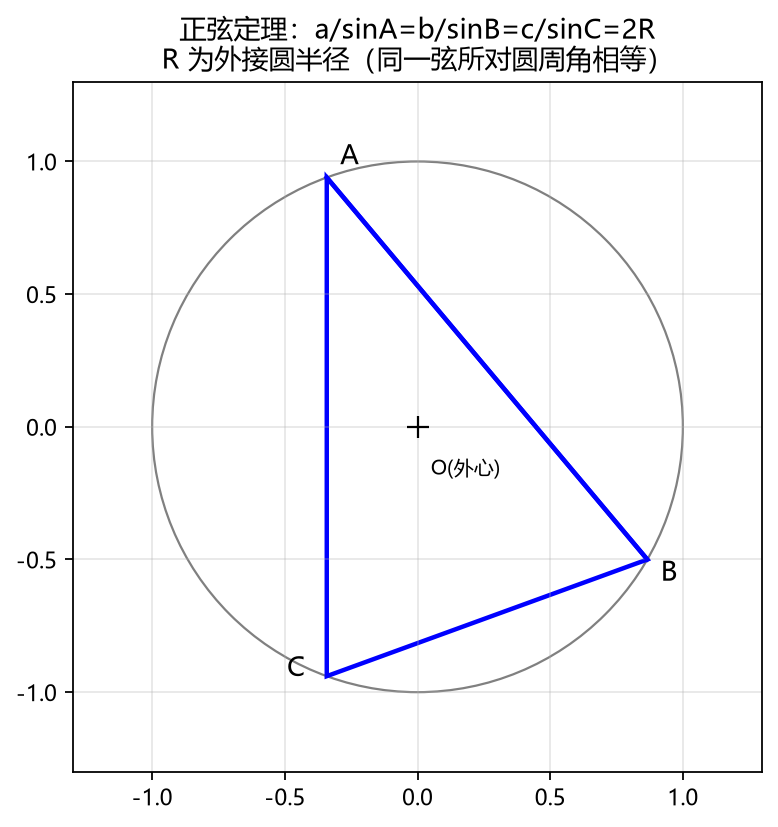
定理（人教A版口径）：在 △ABC 中（角 A、B、C 对边分别为 a、b、c）：
a / sin A = b / sin B = c / sin C = 2R（R 为外接圆半径）。
它有什么用？
- 已知两角和任一边 → 求其余边和角；
- 已知两边和其中一边的对角 → 求另一边的对角（注意可能有两解）。
边角互化（高考大题第一步常用）：
- a : b : c = sin A : sin B : sin C；
- a = 2R sin A，b = 2R sin B，c = 2R sin C。 看到"边的齐次式"，可以整体换成"正弦的齐次式"，反过来也行。
例题跟讲例题 3.1-1：在 △ABC 中，A = 45°，B = 60°，a = 2√2，求 b。 解：由正弦定理 a/sinA = b/sinB，得 b = a·sinB/sinA = 2√2 × (√3/2)/(√2/2) = 2√2 × √3/√2 = 2√3。 要点：正弦定理是比例式，交叉相乘；最后 √2 约掉。
陷阱：已知两边及一边对角用正弦定理求角，可能有两解，先判断（见 3.4）。
编者注·本质回扣：正弦定理写出来是 a/sinA = b/sinB = c/sinC = 2R，看着像三条孤立的等式，本质其实是一句话："每条边和它对角的正弦永远成正比"。把三角形装进外接圆后，这条比例就是直径 2R——边越长，它撑出来的弦越长、对的角也越大。所谓"边角互化 a:b:c = sinA:sinB:sinC"，说白了就是这条比例的另一种写法：边的关系可以直接搬进角里，角的关系也能搬进边里，这正是高考大题第一步最常用的那一下翻译。
3.2 余弦定理
什么时候用余弦定理？ 正弦定理处理"角↔对边"，可一旦知道两边夹一角或三条边，正弦定理使不上劲，就轮到余弦定理。它其实是勾股定理的推广——直角时 cos 90° = 0，就退化成勾股定理。
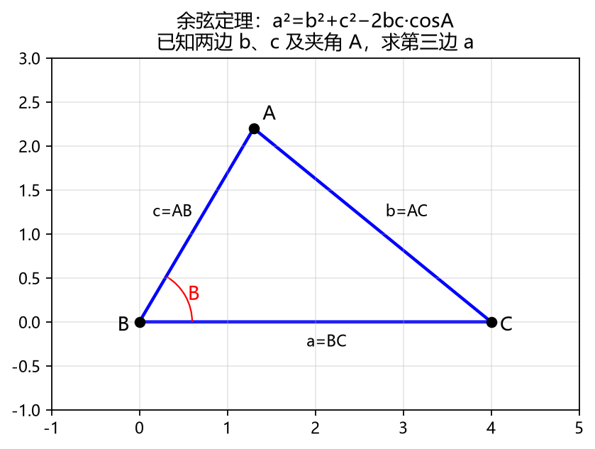
定理（人教A版口径）：
a2 = b2 + c2 − 2bc·cos A b2 = a2 + c2 − 2ac·cos B c2 = a2 + b2 − 2ab·cos C
变形（已知三边求角）：cos A = (b2 + c2 − a2)/(2bc)。
它有什么用？
- 已知两边及夹角 → 求第三边；
- 已知三边 → 求角，或判断角是锐角/直角/钝角。
判定角的类型（记住）：对边平方 a2 与另两边平方和比较：
- a2 = b2 + c2 → A = 90°（直角）；
- a2 > b2 + c2 → A 为钝角；
- a2 < b2 + c2 → A 为锐角。
例题跟讲例题 3.2-1：已知三角形三边 a = 3、b = 5、c = 7，求最大角。 解：最大边 c = 7 对最大角 C。cos C = (a2+b2−c2)/(2ab) = (9+25−49)/(2 × 3 × 5) = −15/30 = −1/2。C∈(0,π)，故 C = 120°。 要点：cos 为负说明钝角；cos C = −1/2 对应 120°。
陷阱：分子是 b2+c2−a2，对边 a 的平方带负号，别写反。
3.3 三角形面积公式
初中的 S = ½·底·高 谁都会，但高往往不知道。用正弦能把高换掉：
- S = ½·bc·sin A = ½·ac·sin B = ½·ab·sin C
一句话记忆：两边及其夹角正弦乘积的一半。夹角必须是那两边夹住的角。
海伦公式（了解即可）：S = √(s(s−a)(s−b)(s−c))，其中 s = (a+b+c)/2。三边全给时可用。
例题跟讲例题 3.3-1：已知 b = 3，c = 4，A = 30°，求面积。 解：S = ½·bc·sin A = ½ × 3 × 4 × (1/2) = 3。 要点：直接套"两边夹一角"。
3.4 解三角形的"已知三选二"模型
拿到题先看给了哪几个条件，照着表选定理：
| 已知 | 首选定理 |
|---|---|
| 两角一边 | 正弦定理 |
| 两边夹角 | 余弦定理 |
| 三边 | 余弦定理 |
| 两边及一边对角 | 正弦定理（警惕两解） |
"两解"怎么判断：已知 a、b 及 A（a 对 A）。设 h = b·sin A（b 边在 A 方向上的高）：
- a > b → 一解；
- a = b·sin A → 一解（相切，直角）；
- b·sin A < a < b 且 A 为锐角 → 两解；
- a < b·sin A → 无解。 考小题时，直接画个图看射线和圆弧有几个交点更快。
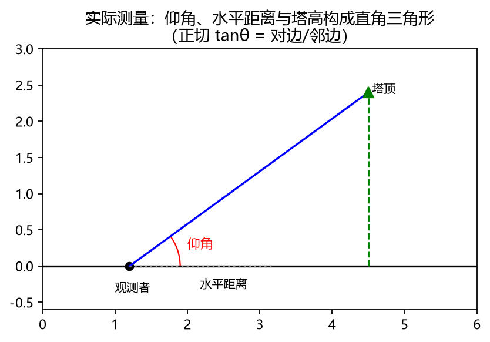
例题跟讲例题 3.4-1：我站在地面看塔顶，仰角 30°，水平距离塔底 30 米，求塔高。 解：直角三角形中 tan30° = 高/30，高 = 30 × tan30° = 30 × (√3/3) = 10√3 米。 要点：实际问题先抽象成直角三角形，仰角对的就是"对边/邻边"。
3.5 高考大题结构（第 17 题左右）
解三角形是新高考必考大题，通常两问：
- 第一问：给一组边角混合条件，求某条边或某个角；
- 第二问：求面积、周长，或它们的范围/最值。
两大常用手法：
- 边角互化：把"边的齐次式"用正弦定理换成"正弦的齐次式"，或反过来。
- 余弦定理配完全平方：求周长/范围时，常把 a2+b2 凑成 (a+b)2−2ab。
3.6 判断三角形的形状
高考常给一个边角混合条件，问"这是什么三角形"。套路固定：用定理把条件化成"纯边"或"纯角"，再看能推出什么。
- 想推等腰/等边 → 争取化到 a = b 或 A = B；
- 想推直角 → 争取化到 a2+b2 = c2 或某角为 90°。
例题跟讲例题 3.6-1：已知在 △ABC 中 a·cosB = b·cosA，判断形状。 解：用正弦定理"边化角"（a = 2R·sinA，b = 2R·sinB），约掉 2R： sinA·cosB = sinB·cosA ⇒ sinA·cosB − cosA·sinB = 0 ⇒ sin(A−B) = 0。 三角形内角 A、B 都在 (0,π)，它们的差也在这个范围附近，sin(A−B) = 0 只能 A−B = 0，即 A = B。 故 a = b，△ABC 是等腰三角形（顶角 C，两腰 a、b）。 一步一验：取 A = B = 50°，则 a·cosB 与 b·cosA 因 a = b 而相等，条件成立。
例题跟讲例题 3.6-2：已知 a2 = b2 + bc + c2，判断角 A。 解：对照余弦定理 a2 = b2+c2−2bc·cosA，两式相减： 0 = −bc − 2bc·cosA ⇒ −1 − 2cosA = 0 ⇒ cosA = −1/2，A∈(0,π)，故 A = 120°（钝角）。 要点：看到 a2 的表达式，先往余弦定理上靠，配出 cosA。
小结：正弦定理管"角↔对边比例"，余弦定理管"三边↔夹角"；面积公式串起两边一夹角。做题先判类型，再套定理，最后别忘检验角的范围和两解。
编者注·本质回扣：把这一章和前两章连起来看，你会发现它没引入任何新东西。正弦定理、余弦定理不过是把第 06、07 章的 sin、cos 从单位圆搬进了三角形：正弦定理说"角对的边成比例"，余弦定理是勾股定理带上 cos 修正项的推广（直角时 cos90° = 0 就退回勾股）。所谓"知三求其余"，就是手里攥着六个量里的三个，用这两个翻译器把"边"翻成"角"、再把"角"翻回"边"，来回倒腾直到六个量全齐。判形状、求面积、求范围，全是这套翻译的具体应用。
④ 例题详解（先做再看）
例题例 1（正弦定理）：在 △ABC 中，A = 60°，B = 45°，a = √6，求 b。
自己做：a/sinA = b/sinB。
解：b = a·sinB/sinA = √6 · (√2/2)/(√3/2) = √6 · (√2/√3) = √4 = 2。 要点：正弦定理是比例式，交叉相乘。
例题例 2（余弦定理 + 面积）：在 △ABC 中，b = 3，c = 4，A = 60°，求 a 和面积。
自己做：余弦定理求 a，面积用正弦公式。
解：a2 = b2 + c2 − 2bc·cos A = 9 + 16 − 2·3·4·(1/2) = 25 − 12 = 13，a = √13。 S = ½bc·sin A = ½·3·4·(√3/2) = 3√3。 要点：两边夹一角：一条余弦、一条面积公式，都是直接套。
例题例 3（大题边角互化）：在 △ABC 中，2a·sin B = √3·b，求角 A。
自己做：把边换成角。
解：由正弦定理 a = 2R sin A、b = 2R sin B 代入： 2·(2R sin A)·sin B = √3·(2R sin B) ⇒ sin B ≠ 0 消去 ⇒ 2 sin A = √3 ⇒ sin A = √3/2。 A = 60° 或 120°（A 是三角形内角，两解都要）。 要点："边角混合"大题第一步常是边化角；消公因子（sin B、2R）前先确认非零。
例题例 4（正余弦整合定理，苏州教研·专题30，原书p.125）：不求角，直接求值 sin221° + sin239° + sin21° sin39°。
自己做：21°+39° = 60°，两角成三角形的两个内角结构（第三角 120°）。
解：把 21°、39° 想成某个三角形的 B、C，则 A = 180°−60° = 120°。由"正余弦整合定理" sin2A = sin2B + sin2C − 2 sinB sinC cosA。 代入 B = 21°、C = 39°、A = 120°、cos120° = −1/2： sin221° + sin239° − 2 sin21°sin39°·(−1/2) = sin2120°， 即 sin221° + sin239° + sin21°sin39° = sin2120° = (√3/2)2 = 3/4。 要点：看到"sin2B + sin2C ± sinB sinC"这种结构，就把它对应到正余弦整合定理——只要 B+C = 60°（第三角 120°），"±"号正好配 cos120° = −1/2，整体等于 sin2(第三角)。
⑤ 出口检测
自测（20 分钟，每题 2 分）：
- 在 △ABC 中，A = 30°，B = 45°，a = 1，求 b。
- 在 △ABC 中，a = 3，b = 5，C = 120°，求 c。
- 已知三边 3、4、5，判断最大角的类型。
- 在 △ABC 中，b = 2，c = 3，A = 30°，求面积。
- 在 △ABC 中，若 sin A : sin B : sin C = 3 : 4 : 5，判断三角形形状。
真题验收：完成 2020–2024 新高考Ⅰ卷解三角形解答题 1 道（通常第 17 题）：两问独立完成、20 分钟内、得分 ≥ 80% → 过关。
过关标准：自测 ≥ 10 分 且 真题大题达标 → 打卡。
课后习题（分层练习）
A 组·基础巩固
1.【考点：正弦定理】在 △ABC 中，A = 60°，B = 45°，a = 3√2，求 b。 2.【考点：正弦定理】在 △ABC 中，a = 2，b = √6，A = 45°，求 B。 3.【考点：余弦定理】在 △ABC 中，b = 5，c = 8，A = 60°，求 a。 4.【考点：余弦定理求角】三边 a = 7，b = 5，c = 3，求角 B。 5.【考点：面积公式】在 △ABC 中，a = 4，b = 5，C = 60°，求面积 S。 6.【考点：判定形状】三角形三边为 2、3、√7，判断最大角是锐角、直角还是钝角。
B 组·能力提升
7.【考点：边角互化】在 △ABC 中，已知 a cos B = b cos A，判断三角形形状。 8.【考点：正弦定理+面积】在 △ABC 中，A = 120°，b = 1，c = 4，求面积 S 和 a。 9.【考点：实际测量】为测河对岸塔高，在岸边一点测得塔顶仰角 45°，后退 20 米后仰角变为 30°，求塔高。 10.【考点：大题综合】在 △ABC 中，已知 2b cos A = c cos A + a cos C。(1) 求角 A；(2) 若 a = √7，b+c = 4，求面积 S。
C 组·真题挑战
说明：本工程所存真题 PDF 中，2020、2022、2023 为扫描件（无文本层）；2024 卷的解三角形解答题（第 15 题）与 2025 卷的解三角形多选题（第 11 题）题干经 PDF 抽取后数学符号严重碎裂，无法逐字安全还原。为遵守"不编造真题"的要求，下面两道为仿新高考Ⅰ卷解三角形题编写的高仿真模拟题（非原题），难度对标真题；真题原卷请在纸质真题书上对照 2024 新高考Ⅰ卷第 15 题练习。
11.【考点：解三角形大题】在 △ABC 中，内角 A、B、C 对边为 a、b、c，已知 √3 a = 2c sin A。(1) 求角 C；(2) 若 c = √7，a+b = 5，求 △ABC 的面积。 12.【考点：正弦定理+面积】在 △ABC 中，已知 sin A : sin B : sin C = 3 : 5 : 7，且最大边 c = 14。(1) 求其余两边 a、b；(2) 求 △ABC 的面积。
⑥ 常见坑清单
- 正弦定理求角可能两解：已知两边及一边对角，先判断解的个数再写答案。
- 余弦定理的角：cos A 由三边求，分子是 b2 + c2 − a2（对边平方带负号）。
- 边角互化：只有"边的齐次式"才能整体换成角，混着常数要小心。
- 面积公式选 ½ bc sin A：夹角必须是两边所夹的角。
- 大题里"cos A 用余弦定理"与"sin A 用同角关系"常配合，先求 cos 再转 sin。
本章公式速查表
与《高中数学常用公式·修订版》第三部分第 10、11 条核对一致。
正弦定理（管"角 ↔ 对边"的比例）
a / sin A = b / sin B = c / sin C = 2R（R 为外接圆半径）
- 大白话：每条边和它对角的正弦之比都相等，而且正好等于外接圆直径 2R。
- 用的时候：已知两角一边、或两边及一边对角，首选它。
边化角（比例）：a : b : c = sin A : sin B : sin C
- 大白话：边的比等于对角正弦的比。
- 用的时候：见到"边的齐次式"，可以整体换成"正弦的齐次式"，反过来也行。
边化角（代换）：a = 2R sin A，b = 2R sin B，c = 2R sin C
- 大白话：每条边都能写成"外接圆直径乘对角正弦"。
- 用的时候：大题第一步常把边全换成正弦；混着常数的式子不能硬换。
已知两边及一边对角可能有两解：b·sin A < a < b 且 A 为锐角时，B 有两解
- 大白话：给了两边和其中一边的对角，射线和圆弧可能交两次。
- 用的时候：先用 h=b·sinA 比一比；a>b 或 a=bsinA 一解，bsinA<a<b 且 A 锐角两解，a<bsinA 无解。
等比性质：a/sinA = (a+b+c)/(sinA+sinB+sinC)
- 大白话：连等的比例式，分子分母分别加起来比值不变。
- 用的时候：知道三边和三个正弦的总和时可一步求 2R。
余弦定理（管"三边 ↔ 夹角"）
a2 = b2 + c2 − 2bc·cos A（及 b2、c2 两式）
- 大白话：一边的平方等于另两边平方和，再减去"两倍两边乘夹角余弦"；直角时 cos90° = 0 就退回勾股定理。
- 用的时候：已知两边夹一角求第三边，或已知三边求角，用它。
变形：cos A = (b2 + c2 − a2)/(2bc)（及 B、C 两式）
- 大白话：三边全给时反解出角。
- 用的时候：分子里"对边 a 的平方带负号"，别写反。
判角类型：a2 = b2+c2 → 直角；a2 > b2+c2 → 钝角；a2 < b2+c2 → 锐角
- 大白话：把最大边的平方和另两边平方和一比，就知道最大角是直、钝还是锐。
- 用的时候：不用真算角度，比大小就够。
三角形面积
S = ½·底·高
- 大白话：初中那条老公式。
- 用的时候：知道高时最直接。
S = ½·ab·sin C = ½·bc·sin A = ½·ca·sin B
- 大白话：面积等于"两边及其夹角正弦乘积的一半"。
- 用的时候：夹角必须是那两边夹住的角；大题第二问求面积常用这条。
海伦公式：S = √(s(s−a)(s−b)(s−c))，s = (a+b+c)/2（选学）
- 大白话：三边全给、又不知道高和角时，用半周长硬算面积。
- 用的时候：三边已知才方便，平时优先用 ½ab sinC。
外接圆与内切圆
外接圆直径 2R = a/sinA = b/sinB = c/sinC
- 大白话：正弦定理里那个比值就是外接圆直径。
- 用的时候：题目提到外接圆，立刻想到这条。
内切圆半径 r = 2S/(a+b+c)
- 大白话：内切圆半径等于面积的 2 倍除以周长。
- 用的时候：见到内切圆半径直接套；能由面积法现场推。
面积与边角的进阶结论（苏州教研·专题30）
面积外接圆形式：S = abc/(4R)（R 为外接圆半径）
- 大白话：面积等于三边乘积除以四倍外接圆半径。
- 用的时候：题目同时给了三边和外接圆半径（或能求出 R），求面积用这条。
坐标面积：已知 AB = (x1,y1)、AC = (x2,y2)，则 S = ½|x1y2 − x2y1|
- 大白话：两边向量坐标知道后，三角形面积就是"交叉相乘再相减"绝对值的一半。
- 用的时候：建系后求三角形面积直接套；平行四边形面积则是 |x1y2−x2y1|（不折半）。
正余弦整合定理（余弦定理的正弦版）：sin2A = sin2B + sin2C − 2 sinB sinC cosA
- 大白话：把余弦定理里的边 a、b、c 全换成对应角的正弦，等式照样成立。
- 用的时候：遇到 sin2B + sin2C ± sinB sinC 这类结构（两角和确定），用它一步化成 sin2(第三角)，不用真算边长。
边角单调性：A<B ⟺ a<b ⟺ sinA<sinB ⟺ cos2A>cos2B；且 A<B ⟺ cosA>cosB
- 大白话：大角对大边，且这个顺序一路传到 sinA、cos2A、cosB 上。
- 用的时候：比较两个角的大小，等价于比较对边、比较 sin、或比较 cos2A，挑方便的用。
内角半角：sin((A+B)/2) = cos(C/2)，cos((A+B)/2) = sin(C/2)
- 大白话：因为 A+B = π−C，所以 (A+B)/2 = π/2−C/2，互余直接换掉。
- 用的时候：大题里把 (A+B)/2 的三角式化成 C/2，往往能和别的项合并。
锐角三角形与角范围：锐角三角形两内角 A、B 满足 sinA>cosB；三角形最小内角 ∈ (0, π/3]，最大内角 ∈ [π/3, π)
- 大白话：锐角三角形任意两锐角互余有余量，故 sinA>cosB；三个角的平均是 π/3，所以最小角不超过 π/3、最大角不小于 π/3。
- 用的时候：题目说"锐角三角形"就能用 sinA>cosB；说某角是最大/最小内角，先圈它的范围。
由正弦值定角：sinA = sinB ⇒ A = B；sin2A = sin2B ⇒ 2A = 2B 或 2A+2B = π（即 A+B = π/2）
- 大白话：两个正弦相等，在三角形里要么两角相等，要么它们的二倍角互余（推出直角）。
- 用的时候：判形状时见到 sin2A=sin2B，要想到"等腰或直角"两种可能，别漏直角。
高级方法·进阶
进阶 1·解三角形"隐藏公式"速查 —— 不超纲（高考可放心用）
对应《不超纲高级方法手册》五.5.2。
- 适用信号：选择题/填空题里给边角混合关系，想用一步出结果，不想列方程组。
-
操作步骤： 1. 射影定理：a = b cos C + c cos B（边等于另两边在它上面的投影之和），可秒解"边 = cos 组合"型小题； 2. 中线长：边 a 上的中线 m_a2 = (2b2+2c2−a2)/4； 3. 角平分线定理：角 A 平分线交 BC 于 D，则 BD/DC = AB/AC = c/b。
-
例题：已知 b cos C + c cos B = 6，求边 a。直接由射影定理 a = b cos C + c cos B = 6，一步出。
- 课标依据 / 超纲红线：都能由正余弦定理现场推出（必修二），不超纲，可放心用；角平分线长公式属选学，大题建议写出推导。
进阶 2·三角形最值套路 —— 不超纲（高考可放心用）
对应《不超纲高级方法手册》五.5.3。
- 适用信号：大题第二问求"周长范围""面积最值""某表达式最大最小值"。
-
操作步骤： 1. 用正弦定理把边换成角（边角互换）； 2. 统一成单变量（只剩一个角）； 3. 用辅助角公式 / 基本不等式 / 二次函数求最值。
-
例题：周长最值——把 a+b+c 用正弦写成 2R(sinA+sinB+sinC)，再合一；面积最值——固定一边时用基本不等式 ab ≤ ((a+b)/2)2。
- 课标依据 / 超纲红线：就是正余弦定理 + 辅助角 + 基本不等式的综合（均在必修范围），不超纲。红线：别直接套二级结论当证明，大题要写清推导。
自测答案：1. b = a·sinB/sinA = 1·(√2/2)/(1/2) = √2；2. c2 = 9 + 25 − 2·3·5·cos120° = 34 + 15 = 49，c = 7；3. 最大边 5：52 = 32 + 42 ⇒ 最大角为直角；4. S = ½·2·3·sin30° = 3/2；5. a : b : c = 3 : 4 : 5 ⇒ 32 + 42 = 52 ⇒ 直角三角形。
课后习题答案
A 组
- b = a·sinB/sinA = 3√2 × (√2/2)/(√3/2) = 3√2 × √2/√3 = 2√3。
- sin B = b·sinA/a = √6×(√2/2)/2 = √12/4 = √3/2。B∈(0,π)，B = 60° 或 120°（两解）。
- a2 = b2+c2−2bc cosA = 25+64−2×5×8×(1/2) = 89−40 = 49，a = 7。
- cos B = (a2+c2−b2)/(2ac) = (49+9−25)/(2×7×3) = 33/42 = 11/14。B = arccos(11/14)。
- S = ½ab sinC = ½×4×5×(√3/2) = 5√3。
- 最大边 √7：(√7)2 = 7，另两边平方和 = 4+9 = 13，7<13 ⇒ 最大边对的角为锐角。
B 组
- 由正弦定理：sinA cosB = sinB cosA ⇒ sin(A−B) = 0 ⇒ A = B（三角形内）⇒ 等腰三角形。
- S = ½bc sinA = ½×1×4×sin120° = 2×(√3/2) = √3；a2 = b2+c2−2bc cosA = 1+16−2×1×4×(−1/2) = 17+4 = 21，a = √21。
- 设塔高 h、第一次测点距塔底 x。仰角45°：h = x；后退20米后仰角30°：h = (x+20)·tan30° = (h+20)/√3。解得 √3 h = h+20 ⇒ h = 20/(√3−1) = 10(√3+1) 米。
- (1) 由射影定理 a cos C + c cos A = b，条件 2b cosA = c cosA + a cosC = b ⇒ cosA = 1/2 ⇒ A = 60°。 (2) a2 = b2+c2−2bc cosA：7 = (b+c)2−2bc−bc = 16−3bc ⇒ bc = 3。S = ½bc sinA = ½×3×(√3/2) = 3√3/4。
C 组
-
(1) 由正弦定理 √3·2R sinA = 2·2R sinC·sinA，消去 sinA：√3 = 2 sinC ⇒ sinC = √3/2 ⇒ C = 60° 或 120°。排除 120°：若 C=120°，余弦定理 c2 = a2+b2−2ab cos120° = a2+b2+ab = (a+b)2−ab，代入 c=√7、a+b=5 得 7 = 25−ab ⇒ ab=18；此时 a、b 是方程 t2−5t+18=0 的根，判别式 25−72<0，无实数解，矛盾，故舍 120°、取 C=60°。 (2) c2 = a2+b2−2ab cos60° = (a+b)2−3ab：7 = 25−3ab ⇒ ab = 6。S = ½ab sin60° = ½×6×(√3/2) = 3√3/2。
-
(1) a:b:c = 3:5:7，c=14 ⇒ 比例系数 k = 14/7 = 2，故 a = 6，b = 10。 (2) cos C = (a2+b2−c2)/(2ab) = (36+100−196)/(2×6×10) = −60/120 = −1/2 ⇒ C = 120°。S = ½ab sinC = ½×6×10×(√3/2) = 15√3。
一通百通
解三角形的通用骨架只有三步：① 先数条件——题目给了六个量（三边三角）里的哪三个？是"两角一边""两边夹角""三边"还是"两边一对角"；② 选翻译器——两角一边、两边一对角用正弦定理，两边夹角、三边用余弦定理，求面积就套 ½·两边·夹角正弦；③ 边不够就边角互化——把"边的齐次式"整体换成"角的正弦"，或反过来，统一变量后再算，最后圈出角的范围、检查有没有两解。会解一道解三角形题，就会解这一整类；这套"先判条件类型、再选定理翻译"的骨架，就是新高考那道必考大题的全部套路。
跨章结合
- 08 的"正弦定理边角互化" + 第 07 章的"辅助角合一"：大题第一问先用正弦定理把边的齐次式换成角，第二问多个角的三角函数相加，再用 07 章的辅助角公式合一求最值——这是新高考解三角形解答题的标准两连（苏州教研·专题30）。
- 08 的"正余弦整合定理" + 07 的 sin2、sin·sin 结构：看到 sin2B+sin2C±sinB sinC 且两角和确定，直接对应正余弦整合定理、一步化成 sin2(第三角)——苏州教研·专题30 的 sin221°+sin239°+sin21°sin39°=3/4（本章例 4）就是这一结合点。
- 08 的"正余弦定理" + 第 09 章向量的数量积（综合原理说明，非真题）：向量数量积 a·b=|a||b|cosθ，本质就是余弦定理两边同时乘一条边——用数量积算三角形夹角、判断垂直（直角），和正余弦定理互为翻译；建系后解三角形，最后一步常落到数量积上。
- 08 的"解三角形" + 第 16 章解析几何的几何条件（综合原理说明，非真题）：解析几何大题里"某角为直角 / 两边成夹角 / 三角形面积最值"这类条件，常常要翻译成三角形的边角关系（或向量夹角）来列方程——本章的正余弦定理就是把"几何条件"翻成"可算等式"的那座桥。
本章与前后章
本章是三角函数板块的收官应用章：它前面的第 06 章给了你 sin、cos、tan 的定义和图象，第 07 章给了你和差角、倍角、辅助角这些"加工"工具——本章就是把这些工具全部用回到三角形的边角上。具体地说，正弦定理来自第 06 章的单位圆与外接圆，大题第二问求面积、周长的最值时，要靠第 07 章的辅助角公式合一后再求范围。学完本章，三角函数这条线（06→07→08）就闭环了：从"角是什么"到"角怎么变换"，再到"角怎么用来量三角形、测距离"。
高考怎么考
解三角形是新高考Ⅰ卷必考的解答题，通常放在卷面解答题的第 1 题（第 17 题左右），两问结构固定：第一问给一组边角混合条件求某条边或某个角（第一步往往是正弦定理做边角互化），第二问求面积、周长或它们的最值范围（要配合余弦定理凑完全平方、再用辅助角或基本不等式）。偶尔也以小题形式考"两边一对角的两解判断"，以及 sin2B+sin2C±sinB sinC 这类结构一步化角（如 sin221°+sin239°+sin21°sin39°=3/4）。这道大题位置靠前、套路成熟，是整张卷子必须稳稳拿下的一道解答题。
平面向量
公式速查：修订版 第7部分（平面向量）
本章本质核心：向量的本质是"既有大小又有方向的箭头"——它不关心起点在哪，可以随便平移；所有运算都是这支箭头的几何动作：加减是把箭头首尾相接或共起点合并（平移），数乘是拉长/压短/反向，数量积 a·b 是"把 b 投影到 a 方向上再乘 a 的模"（投影）。本章全部题型（共线、垂直、夹角、求模、投影、建系解几何）都是这一个原理的变体。
为什么有用：想通"向量 = 可平移的箭头、点积 = 投影"，你就不用背一堆几何二级结论——垂直、夹角、求模、投影、三点共线全都能现场推出来；后面立体几何建系求角和距离，靠的也是这一套，学一次用两章。
① 门槛自测（进章前，10 分钟）
- 直角坐标系中点 (2, 3) 到原点的距离是多少？
- 直角三角形中 cos θ = 邻边/斜边，对吗？
- 平移一个图形，图形会变吗？
- 数轴上 +3 和 −3 的"方向"有什么不同？
- 什么是平行四边形法则？（初中见过吗）
判定：5 题答对 4 题以上 → 进章。
② 学习目标
- 理解向量的概念（大小 + 方向）与表示
- 掌握向量加法（三角形/平行四边形法则）、减法、数乘
- 掌握向量共线（平行）的判定与坐标运算
- 掌握数量积（点乘）的定义、坐标公式及其应用（垂直、夹角、投影）
- 会用向量解决平面几何问题（基底法、坐标法）
③ 正文讲解
先想一个生活场景。你推箱子，用多大力（大小）、朝哪个方向推（方向），两个信息缺一不可——只说"用 50 牛的力"不说方向，箱子动不了。这种"既有大小、又有方向"的量，就是向量。本章地图：
向量是什么（大小+方向）
↓
线性运算：加、减、数乘（几何法则 + 坐标公式）
↓
共线定理 / 平面向量基本定理（基底）
↓
数量积 a·b（点乘）——把几何关系变成代数
↓
垂直、夹角、投影、模长
3.1 向量的基本概念
定义：既有大小又有方向的量叫向量，记 a（粗体）或 AB（上面带箭头）。向量的大小叫模，记作 |a|。
几个要分清的词：
- 零向量 0：模为 0，方向任意（相当于"没移动"）。
- 单位向量：模为 1 的向量。
- 相等向量：大小相等且方向相同，与起点在哪无关——向量可以随便平移。
- 共线向量（平行向量）：方向相同或相反；规定零向量与任何向量共线。
和数量的区别：向量不能比较大小（"a > b"没意义），只能比模长 |a| > |b|。
单位向量的用处：和 a 同方向的单位向量是 a/|a|（把 a 除以它的模）。以后题目说"沿 a 方向走一个单位"，写的就是这个。
例题跟讲例题 3.1-1：把一个向量 AB 平移到 A′B′，它变了吗？ 解：平移不改变大小和方向，所以 AB = A′B′（相等向量）。 要点：向量只看大小方向，不看位置。
3.2 线性运算
加法——三角形法则与平行四边形法则：
- 三角形法则：把 b 的起点接到 a 的终点上，从 a 的起点指向 b 的终点就是 a+b（首尾相接）。
- 平行四边形法则：a、b 共起点，以它们为邻边作平行四边形，对角线就是 a+b。
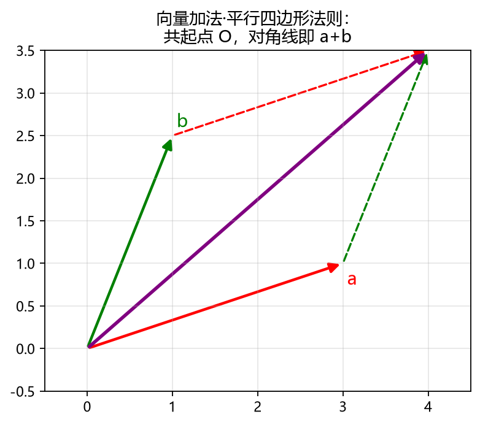
减法：a − b = a + (−b)。几何上让 a、b 共起点，从 b 的终点指向 a 的终点的向量就是 a−b。
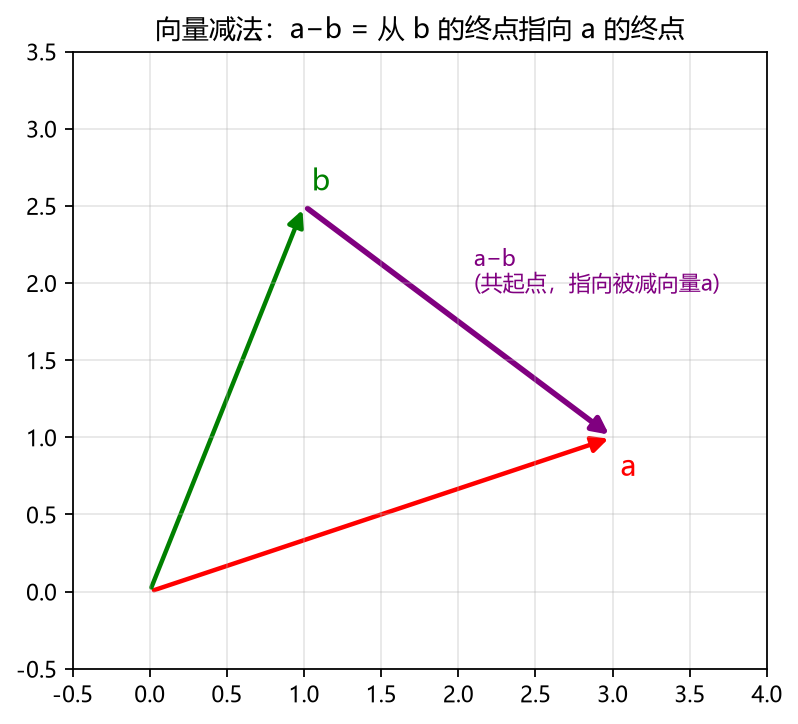
数乘 λa：长度变成 |λ|·|a|；λ>0 方向不变，λ<0 方向反向，λ = 0 得零向量。
坐标运算（建系后一切变算术）：设 a = (x1, y1)，b = (x2, y2)，则
- a + b = (x1+x2, y1+y2)
- a − b = (x1−x2, y1−y2)
- λa = (λx1, λy1)
共线定理（核心）：b 与 a（a ≠ 0）共线 ⇔ 存在唯一实数 λ 使 b = λa。 坐标形式：a = (x1,y1)、b = (x2,y2) 共线 ⇔ x1y2 − x2y1 = 0（交叉相乘差为 0）。
中点公式：A(x1,y1)、B(x2,y2) 的中点 M = ((x1+x2)/2, (y1+y2)/2)。
例题跟讲例题 3.2-1：已知 a = (1, 2)，b = (3, −1)，求 a+b、2a−b。 解：a+b = (1+3, 2+(−1)) = (4, 1)；2a−b = (2,4)−(3,−1) = (−1, 5)。 要点：坐标逐项加减，别漏负号。
例题跟讲例题 3.2-2：已知 a = (2, −3)，b = (x, 6) 且 a∥b，求 x。 解：共线条件 x1y2−x2y1 = 0：2 × 6 − (−3)x = 0 → 12+3x = 0 → x = −4。 要点：共线用"交叉相乘差为 0"。
陷阱：共线是 x1y2−x2y1 = 0，垂直是 x1x2+y1y2 = 0，这两个公式最容易用反。
编者注·本质回扣：这一节的加减数乘，本质上都是在"搬箭头"。加法把两个箭头首尾接起来，得到的是从起点到终点那支合成箭头；减法 a−b 是让两支箭头共起点，从 b 的头指向 a 的头——所以它其实就是"a 加一个反向的 b"；数乘 λa 只是把这支箭头拉长或压短，λ 负了就掉头。一旦建了坐标系，这些几何动作全部翻译成坐标逐项加减乘，所以你会觉得"向量运算像算术"，本质就是几何被坐标化了。
3.3 平面向量基本定理与基底
问题：平面上向量无穷多，能不能用两个固定向量把它们都表示出来？能，这就是基本定理。
定理：如果 e1、e2 是同一平面内两个不共线的向量，那么对这个平面内任一向量 a，存在唯一一对实数 λ、μ，使 a = λe1 + μe2。不共线的 e1、e2 叫这组向量的基底。
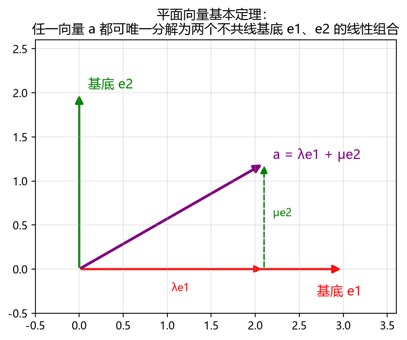
直觉：把平面想象成地面，e1、e2 是两个不重合的方向轴；任何一步 a，都能拆成"沿 e1 走 λ、沿 e2 走 μ"。
例题跟讲例题 3.3-1：已知 e1、e2 不共线，a = 2e1 − e2，b = e1 + 3e2，求 a+b。 解：a+b = (2+1)e1 + (−1+3)e2 = 3e1 + 2e2。 要点：基底相同时，系数直接加减。
3.4 数量积（点乘，最重要）
物理引入：一个力 F 拉物体走位移 s，做的功 W = |F||s|cosθ——既不是 F 也不是 s，而是"两个向量模相乘再乘夹角余弦"。这种运算就是数量积。
定义（人教A版口径）：a · b = |a||b| cos θ，θ 是 a、b 的夹角（0 ≤ θ ≤ π）。零向量与任一向量数量积为 0。结果是一个数，不是向量。
坐标公式：a = (x1,y1)、b = (x2,y2) ⇒ a · b = x1x2 + y1y2（对应坐标相乘再相加）。
四条必背结论：
- a ⊥ b ⇔ a·b = 0 ⇔ x1x2 + y1y2 = 0；
- |a|2 = a·a = x12 + y12（求模）；
- cos θ = (a·b)/(|a||b|)（求夹角）；
- b 在 a 方向上的投影 = |b| cosθ = (a·b)/|a|。
运算律：交换律 a·b = b·a；分配律 a·(b+c) = a·b+a·c；数乘结合 (λa)·b = λ(a·b)。注意：数量积没有消去律——a·b = a·c 推不出 b = c。
投影到底是什么？ 把 b 的终点"垂直投影"到 a 所在直线上，得到的那段带方向的长度就是投影。夹角 θ 是锐角时投影为正，钝角时为负，直角时为零（这正是垂直 ⇔ 数量积为 0 的几何来源）。数量积 a·b = |a| × (b 在 a 上的投影)，所以它也可以理解为"a 的模乘 b 的投影"。
补·投影向量（人教A版必修第二册 p.108–109；课标必修"了解平面向量投影的概念以及投影向量的意义"）：上面说的投影"长度"是一个带符号的数（投影数量）；新教材还要求区分一个"向量"——把 b 垂直投影到 a 所在直线上得到的那个带方向的向量，叫 b 在 a 上的投影向量。设 e 是与 a 同向的单位向量、θ 为 a 与 b 的夹角，则
b 在 a 上的投影向量 = |b| cosθ · e = [(a·b)/|a|2] · a
- 大白话：投影数量是"带符号的长度"（一个数），投影向量是"沿 a 方向趴下来的那个向量"（一个向量）；后者就是把前者乘上 a 方向的单位向量。
- 用的时候：坐标里 a=(x1,y1)、b=(x2,y2) 时，投影向量 = [(x1x2+y1y2)/(x12+y12)]·(x1,y1)。它和投影数量的关系是：投影数量 = 投影向量在 a 方向上的坐标。
例题跟讲例题 3.4-1：已知 |a| = 2，|b| = 3，a·b = 3，求夹角 θ。 解：cosθ = (a·b)/(|a||b|) = 3/(2×3) = 1/2，θ∈[0,π]，故 θ = 60°。 要点：夹角公式就是"数量积 ÷ 两模乘积"。
例题跟讲例题 3.4-2：已知 a = (1,2)，b = (x,−1)，且 a⊥b，求 x。 解：垂直 ⇔ a·b = 0：1·x + 2·(−1) = 0 → x − 2 = 0 → x = 2。 要点：垂直看点积是否为 0。
例题跟讲例题 3.4-3：已知 |a| = 3，|b| = 4，a·b = −6，求 |a+b|。 解：先平方：|a+b|2 = |a|2 + 2a·b + |b|2 = 9 + 2×(−6) + 16 = 13，故 |a+b| = √13。 要点：求模先平方，用 |a±b|2 = |a|2 ± 2a·b + |b|2，别直接把模相加。
陷阱：夹角范围是 [0,π]，cosθ 为负说明夹角是钝角（>90°）。
编者注·本质回扣：数量积看着是个新运算，本质就是"投影"。a·b = |a| 乘上 b 在 a 方向上的投影长度：两支箭头方向一致时投影最长、点积最大；垂直时 b 在 a 上趴不下来、投影为 0，所以垂直等价于点积为 0；方向相反时投影变负、点积为负。坐标公式 x1x2+y1y2 只是这套投影几何建系后的算术化身。记住"点积 = 投影"，垂直、夹角、求模这一串结论就全挂回同一根线上了。
3.5 两套解题思路
- 坐标法（推荐）：能建系就建系，把点放坐标系里，向量写成坐标，全部变成加减乘除。
- 基底法：选两个不共线向量作基底，其它向量全用基底表示，再列方程求解。
高考高频考点：数量积求夹角、垂直/平行条件、求模（配 |a±b|2 展开）、平面几何题用向量翻译。这四类几乎覆盖了新高考向量小题的全部出法。
3.6 坐标法实战：把几何题翻译成算术
很多同学怕"向量解几何"，其实套路很固定——建系、写坐标、算。
操作步骤：
- 找图里的直角关系或对称中心，把它放原点；
- 把各关键点写成坐标（不知道的设成未知数）；
- 把题目条件（垂直、中点、等长）翻译成向量等式；
- 解出未知数，回答问题。
例题跟讲例题 3.6-1：已知 A(1,0)、B(3,2)，点 P 满足 P 是 AB 中点，且 Q 满足 P 是 Q 的坐标原点对称点，求 Q。 解：P = ((1+3)/2, (0+2)/2) = (2,1)。P 关于原点对称的 Q = (−2,−1)。 要点：中点公式、对称点，都是坐标套公式。
例题跟讲例题 3.6-2：已知 A(0,0)、B(4,0)、C(2,3)，求 AB 边上中线的长。 解：AB 中点 M = (2,0)。中线是 CM = √((2−2)2+(3−0)2) = 3。 要点：先求中点，再用两点距离公式。
3.7 三点共线的向量判定（小题秒判）
结论：P、A、B 三点共线 ⇔ 存在实数 x、y，使 OP = x·OA + y·OB，且 x + y = 1（O 是任取的原点）。
怎么理解：在直线 AB 上，P 的位置可以看作 A、B 的"加权平均"。x = y = 1/2 时 P 就是中点；x = 1,y = 0 时 P = A；x = 0,y = 1 时 P = B。只要 x+y = 1，P 就被"摁"在直线 AB 上。
例题跟讲例题 3.7-1：已知 OP = 2·OA − OB，判断 P 是否在直线 AB 上。 解：系数 2 + (−1) = 1，满足 x+y = 1，所以 P 在直线 AB 上。一步到位，不用算坐标。 要点：见到 OP = x·OA + y·OB，先加系数看是否等于 1；等于 1 就三点共线，不等于 1 就不共线，这是小题里最快的判断法。
例题跟讲例题 3.7-2：已知 A(1,2)、B(3,4)，且 OP = (1/2)·OA + (1/2)·OB，求 P 并说明它是谁。 解：P = ((1+3)/2, (2+4)/2) = (2,3)。系数和 = 1/2+1/2 = 1，P 在 AB 上；正好是 AB 的中点。 要点：系数都等于 1/2 就是中点。
小结：向量是"带方向的量"；加减数乘管线性运算，坐标化后变成算术；数量积 a·b 是把"垂直、夹角、模"翻译成代数的钥匙。
④ 例题详解（先做再看）
例题例 1（坐标运算）：已知 a = (1, 2)，b = (3, −1)。 (1) 求 a + b、2a − b；(2) 求 a · b；(3) 判断 a 与 b 是否垂直。
自己做：坐标逐项算。
解：(1) a + b = (4, 1)；2a − b = (2, 4) − (3, −1) = (−1, 5)。 (2) a · b = 1·3 + 2·(−1) = 1。 (3) a · b = 1 ≠ 0 ⇒ 不垂直。 要点：数量积是数不是向量；垂直看数量积是否为 0。
例题例 2（夹角）：已知 |a| = 2，|b| = 3，a · b = 3，求 a 与 b 的夹角 θ。
自己做：cos θ = a·b/(|a||b|)。
解：cos θ = 3/(2·3) = 1/2，θ ∈ [0, π] ⇒ θ = 60°。 要点：夹角公式 = 数量积 ÷ 模的乘积，结果是角度（弧度 π/3）。
例题例 3（共线）：已知 a = (2, −3)，b = (x, 6)，且 a ∥ b，求 x。
自己做：用 x1y2 − x2y1 = 0。
解：2·6 − (−3)·x = 0 ⇒ 12 + 3x = 0 ⇒ x = −4。 要点：平行用叉积式（x1y2 − x2y1 = 0），垂直用点积式（x1x2 + y1y2 = 0），别混。
例题例 4（数量积最值 + 基本不等式，苏州教研·专题28，原书p.122 C组）：已知圆 O 半径为 1，PA、PB 为圆 O 的两条切线，A、B 为切点，求 PA·PB 的最小值。
自己做：设半张角 θ，把数量积表示成 θ 的函数，再求最小。
解：设 ∠APO = θ（则 ∠APB = 2θ）。在 Rt△PAO 中 OA = 1 是半径，sinθ = OA/PO = 1/|PO|，故 |PO| = 1/sinθ；切线长 |PA| = |PB| = √(|PO|2−1) = cotθ。 PA·PB = |PA||PB|·cos∠APB = cot2θ · cos2θ。 令 u = sin2θ ∈ (0,1]，则 cot2θ = (1−u)/u，cos2θ = 1−2u： PA·PB = (1−u)(1−2u)/u = 2u + 1/u − 3。 由基本不等式 2u + 1/u ≥ 2√(2u·(1/u)) = 2√2，当且仅当 2u = 1/u 即 u = 1/√2 时取等。 故 PA·PB 的最小值 = 2√2 − 3。 要点：切线（或任意两线段）的数量积最值，先把夹角设成单变量、把模也用它表示，再用基本不等式求最值；这是"数量积+基本不等式"的标准搭配。
⑤ 出口检测
自测（15 分钟，每题 2 分）：
- 已知 a = (1, 2)，b = (2, −1)，求 a + b 与 a − b。
- 判断 a = (1, 2) 与 b = (2, 4) 是否共线。
- 已知 a ⊥ b，a = (1, 2)，b = (x, −1)，求 x。
- 求向量 a = (1, 0) 与 b = (0, 1) 的夹角。
- |a| = 3，|b| = 4，a · b = −6，求 |a + b|。
真题验收：2020–2024 新高考Ⅰ卷向量小题 2 道（数量积/垂直/夹角，多在选择题 3–7 题区间）：每题 2 分钟、全对过关。
过关标准：自测 ≥ 10 分 且 真题全对 → 打卡。
课后习题（分层练习）
A 组·基础巩固
1.【考点：坐标加减】已知 a = (2, 3)，b = (−1, 4)，求 a+b、a−b、2a−3b。 2.【考点：数乘与模】已知 a = (3, 4)，求 |a| 和 2a 的坐标与模。 3.【考点：共线判定】已知 a = (2, 6)，b = (x, −3)，且 a∥b，求 x。 4.【考点：数量积】已知 a = (1, −2)，b = (4, 3)，求 a·b，并判断是否垂直。 5.【考点：中点公式】已知 A(1, 2)、B(5, 6)，求中点 M 的坐标。 6.【考点：夹角】已知 |a| = 1，|b| = 1，a·b = 1/2，求夹角 θ。
B 组·能力提升
7.【考点：垂直条件】已知 a = (1, 2)，b = (x, −1)，且 (a+2b) 与 (a−b) 垂直，求 x。 8.【考点：求模】已知 |a| = 2，|b| = 1，a·b = 1，求 |a−2b|。 9.【考点：基底表示】在平行四边形 ABCD 中，设 AB = a，AD = b，用 a、b 表示 AC 和 BD。 10.【考点：投影】已知 a = (4, 0)，b = (1, 1)，求 b 在 a 方向上的投影数量。
C 组·真题挑战
说明：本工程所存真题 PDF 中 2020、2022、2023 为扫描件（无文本层），无法逐字核对题干，故 C 组只收录能从文本层逐字读出的 2024、2025 新高考Ⅰ卷真题。
11.【考点：向量垂直+坐标运算】（2024 新高考Ⅰ卷·第 3 题）已知向量 a = (0, 1)，b = (2, x)，若 b ⊥ (b − 4a)，则 x =（ ） A. −2 B. −1 C. 1 D. 2
⑥ 常见坑清单
- 向量有方向，比较大小只比模；a ≥ b 这种写法不存在。
- 共线 ⇔ x1y2 − x2y1 = 0；垂直 ⇔ x1x2 + y1y2 = 0。两个公式交叉使用是最高频错误。
- a · b = 0 包含 a = 0 或 b = 0 或垂直三种可能，做题要看清条件。
- 数量积没有消去律：a·b = a·c 不能推出 b = c。
- 求 |a + b|：先平方（|a+b|2 = |a|2 + 2a·b + |b|2）再开方，别直接"加模"。
- 夹角范围 [0, π]：cos θ 为负说明夹角为钝角。
本章公式速查表
与《高中数学常用公式·修订版》第七部分核对一致。
向量的坐标运算
a = (x1,y1)，b = (x2,y2)：a±b = (x1±x2, y1±y2)，λa = (λx1, λy1)
- 大白话：建系之后，向量加减数乘就是坐标逐项加减乘。
- 用的时候：能建系就建系，把几何题全变成算术；别漏负号。
与 a 同向的单位向量：a/|a|
- 大白话：把一个向量除以它的长度，就得到方向相同、长度为 1 的向量。
- 用的时候：题目说"沿 a 方向走一个单位"就写它。
共线与垂直（最容易用反的一对）
共线（平行）：a∥b ⇔ b = λa ⇔ x1y2 − x2y1 = 0
- 大白话：两个向量平行，就是坐标交叉相乘再相减等于 0。
- 用的时候：求平行用这条"叉积式"；别和下面垂直那条混。
垂直：a⊥b（a、b 非零）⇔ a·b = 0 ⇔ x1x2 + y1y2 = 0
- 大白话：两个向量垂直，就是对应坐标相乘再相加等于 0。
- 用的时候：求垂直用这条"点积式"；共线用减、垂直用加，千万别交叉用。
数量积（点乘）
a·b = |a||b|cosθ = x1x2 + y1y2
- 大白话：点乘 = 两模相乘再乘夹角余弦；坐标里就是对应坐标相乘再相加。
- 用的时候：结果是一个数（不是向量）；零向量和任何向量点乘为 0。
求模：|a|2 = a·a = x12 + y12
- 大白话：向量自己点乘自己，就是坐标平方和，等于模的平方。
- 用的时候：求模先平方再开方。
|a±b|2 = |a|2 ± 2a·b + |b|2
- 大白话：和（差）的模平方，像完全平方公式那样展开。
- 用的时候：求 |a+b|、|a−b| 先平方，别直接把模相加。
夹角：cosθ = (a·b)/(|a||b|)
- 大白话：夹角余弦 = 点积除以两模乘积。
- 用的时候：夹角范围是 [0,π]；cosθ 为负说明夹角是钝角。
投影：b 在 a 方向上的投影数量 = |b|cosθ = (a·b)/|a|
- 大白话：把 b 垂直投影到 a 所在直线上，那段带方向的长度就是投影。
- 用的时候：锐角投影为正、钝角为负、直角为 0。
距离与中点
两点距离：d_AB = √((x2−x1)2 + (y2−y1)2)
- 大白话：两点横纵坐标差的平方和开根号，就是勾股定理。
- 用的时候：向量里求线段长，本质就是两点距离。
中点：M = ((x1+x2)/2, (y1+y2)/2)
- 大白话：中点坐标就是两端点坐标的平均。
- 用的时候：见到中线、中点直接套。
三点共线的向量判定
P、A、B 三点共线 ⇔ OP = x·OA + y·OB 且 x + y = 1
- 大白话：P 能写成 OA、OB 的加权平均，且权重加起来正好是 1，P 就被摁在直线 AB 上。
- 用的时候：见到 OP = x·OA + y·OB，先加系数看是不是 1，是就共线，小题秒判。
三角形与向量的二级结论（苏州教研·专题28）
中线向量定理：D 为 BC 边中点 ⇔ AD = ½(AB + AC)（即 AB + AC = 2 AD）
- 大白话：从顶点指向底边中点的向量，等于两条邻边向量和的一半。
- 用的时候：见到三角形中线，直接用它把中线向量拆成两边向量；和"三点共线 x+y=1"配合做基底题。
重心：P 为 △ABC 重心 ⇔ PA + PB + PC = 0；重心坐标 = ((x1+x2+x3)/3, (y1+y2+y3)/3)；使 PA2+PB2+PC2 最小的点就是重心
- 大白话：重心是三条中线交点（分中线 2:1），它到三顶点向量和为零、坐标是三顶点平均、到三顶点距离平方和最小。
- 用的时候：见到 PA+PB+PC=0 立刻认重心；给三顶点坐标求重心直接取平均。
角平分线方向向量：AD 平分 ∠A（D 在 BC 上）⇔ AD 方向 = AB/|AB| + AC/|AC|（两个单位向量相加）
- 大白话：角平分线方向，就是把两条邻边各自取单位向量再相加。
- 用的时候：要写角平分线的方向向量，别瞎设，直接用"两个单位向量的和"。
极化恒等式（平行四边形对角线平方和）：|a+b|2 + |a−b|2 = 2(|a|2 + |b|2)；从而 a·b = (|a+b|2 − |a−b|2)/4
- 大白话：两向量和与差的模平方相加，等于模平方和的两倍；反解出数量积就是"和模平方减差模平方再除以 4"。
- 用的时候：已知"中线"或"共起点两向量"的和模、差模（如三角形两边中线），用它一步求数量积，省得展开。
外心数量积结论：O 为 △ABC 外心，则 AO·BC = ½(b2 − c2)（b = |AC|、c = |AB|）
- 大白话：外心到 A 的向量，点乘 BC 边向量，等于两边平方差的一半。
- 用的时候：题目出现"外心 + 数量积"，直接套这个秒出（由 AO·BC = (AD+DO)·BC，DO⊥BC 消掉，再展开即得）。
夹角锐/钝角判定：a·b>0 且 a 不平行于 b ⇔ 夹角锐角；a·b<0 且不平行 ⇔ 钝角
- 大白话：点积为正只是锐角的必要条件，还要排除两向量同向（点积正但夹角 0°）的情况。
- 用的时候：题目说"夹角为锐角"列不等式，除了 a·b>0，记得再加"不共线"，否则会把 0° 角也算进去。
定比分点公式：P 在 P1P2 上且 P1P = λ·PP2，则 P = ((x1+λx2)/(1+λ), (y1+λy2)/(1+λ))；λ = 1 即中点
- 大白话：分点坐标是两端点坐标按 λ 的"加权混合"，权重在两端点间按 λ 分配。
- 用的时候：已知分点比 λ，直接套；λ=1 退化成中点公式。
高级方法·进阶
本章主线（线性运算 + 共线定理 + 数量积 + 坐标法/基底法）已覆盖高考全部考点。
本章无对应高级方法手册条目。说明：《不超纲高级方法手册》未单列"平面向量"专题——高考向量题的核心技巧（建系坐标化、用 |a±b|2 求模、基底法翻译几何条件）已在正文 3.4、3.5 讲透，全部不超纲。一个可直接用的小结论：P、A、B 三点共线 ⇔ 存在 x+y = 1 使 OP = x·OA+y·OB（见速查表第 10 条），小题可秒判共线。
自测答案：1. a + b = (3, 1)，a − b = (−1, 3)；2. 共线（1·4 − 2·2 = 0，b = 2a）；3. 1·x + 2·(−1) = 0 ⇒ x = 2；4. cos θ = 0 ⇒ θ = 90°（π/2）；5. |a+b|2 = 9 + 2·(−6) + 16 = 13，|a + b| = √13。
课后习题答案
A 组
- a+b = (2−1, 3+4) = (1, 7)；a−b = (2+1, 3−4) = (3, −1)；2a−3b = (4,6)−(−3,12) = (7, −6)。
- |a| = √(9+16) = 5；2a = (6, 8)，|2a| = 10。
- 共线：2×(−3) − 6x = 0 → −6−6x = 0 → x = −1。
- a·b = 1×4 + (−2)×3 = 4−6 = −2；≠0，不垂直。
- M = ((1+5)/2, (2+6)/2) = (3, 4)。
- cosθ = (1/2)/(1×1) = 1/2，θ∈[0,π]，θ = 60°（π/3）。
B 组
- a+2b = (1+2x, 0)，a−b = (1−x, 3)。垂直：(1+2x)(1−x) + 0×3 = 0 → 1+x−2x2 = 0 → 2x2−x−1 = 0 → (2x+1)(x−1) = 0，x = −1/2 或 1。
- |a−2b|2 = |a|2 − 4a·b + 4|b|2 = 4 − 4×1 + 4×1 = 4，|a−2b| = 2。
- AC = AB+AD = a+b；BD = AD−AB = b−a。
- 投影 = (a·b)/|a| = (4×1+0×1)/4 = 1。
C 组 11.【2024·第3题】b−4a = (2, x)−(0,4) = (2, x−4)。b⊥(b−4a) ⇒ b·(b−4a) = 0：2×2 + x(x−4) = 0 → x2−4x+4 = 0 → (x−2)2 = 0 → x = 2，选 D。
一通百通
这一章的"通用骨架"是：① 看见向量先想成一支可平移的箭头 → ② 能建系就建系，把箭头写成坐标 → ③ 线性问题用坐标加减、共线用 x1y2−x2y1=0 → ④ 涉及垂直/夹角/求模/投影就点积 a·b = x1x2+y1y2。高考向量小题不管怎么包装，本质都是"把几何条件翻译成坐标或点积，再做算术"。会解一道向量小题，就会解所有向量小题；这套"建系坐标化 + 点积翻译几何"的骨架，到第 14 章空间向量还会原样搬到三维里复用。
跨章结合
- 向量数量积 ⇔ 第 14 章空间向量与立体几何：本章的数量积 a·b=x1x2+y1y2、求模 |a|2=a·a、垂直 ⇔ 点积为 0，搬到三维就是 x1x2+y1y2+z1z2——立体几何里建系后求线线角、线面角、点到面距离，全是这一套二维点积的三维版。想通"点积=投影"，第 14 章那些角和距离公式就不是新东西，而是同一原理多写一个坐标。（综合原理说明，非真题）
- 向量线性运算 ⇔ 第 15 章直线与圆：直线的方向向量、斜率 k，本质就是"一支箭头的坐标比"；两点决定直线，用的也是向量 AB=(x2−x1, y2−y1)。你在本章练熟的坐标加减、中点公式，到解析几何里写直线方程、算点线距离时会一再出现。（综合原理说明，非真题）
本章与前后章
平面向量前接第 02 章（函数与坐标）和第 06 章（三角函数的夹角与直角三角形）——向量的坐标来自坐标系，夹角公式来自 cosθ；它本身是个"几何→代数"的转换器，向后直接喂给第 14 章空间向量与立体几何：把向量从二维搬到三维、建系求线面角和距离，靠的就是本章这套线性运算和数量积。同时向量也是后面解析几何（15、16 章）里"翻译几何条件"的常用语言。
高考怎么考
新高考Ⅰ卷里向量固定在小题区间（选择题 3–7 题附近），年年一两道，考法高度套路：数量积求夹角、垂直条件、求模（先平方用 |a±b|2 展开）、共线判定，以及坐标法解平面几何。真题如 2024 新高考Ⅰ卷第 3 题（向量垂直+坐标运算，答案 x=2 选 D）就是典型。难度中档、位置靠前，考的不是新结论，而是你"建系、写坐标、点积翻译"这一步熟不熟。
复数
公式速查：修订版 第10部分（复数）
本章本质核心：复数的本质是"把数从一维直线搬到二维平面"——规定 i2 = −1 等于把 i 当成一个"逆时针转 90°"的算子，于是每个复数 z = a+bi 就是复平面上的一个点（或一支从原点出发的向量），|z| 就是它到原点的距离。本章全部内容（相等、共轭、模、四则运算、复根）都是这一个原理的变体：运算像多项式展开，唯一新规则是 i2 = −1，几何上和第 09 章向量是同一张图。
为什么有用：想通"i 是转 90°、z = a+bi 是平面上的点"，复数运算就只是多项式展开加一条 i2 = −1，除法会乘共轭就行——卷面上固定的第 1 题送分等于白捡；它的几何意义还能帮你看懂圆和旋转。
① 门槛自测（进章前，10 分钟）
- 方程 x2 + 1 = 0 在实数范围内有解吗？
- (a + b)(a − b) = a2 − b2 成立吗？
- 直角坐标系中点的坐标 (x, y) 表示什么？
- i 是什么？（初中提过吗）
- 判断：负数能不能开平方？
判定：5 题答对 4 题以上 → 进章。
② 学习目标
- 理解虚数单位 i（i2 = −1）与复数的概念
- 掌握复数相等、共轭复数、复数的模
- 掌握复数的四则运算（重点：除法 = 分母实数化）
- 了解复数的几何意义（复平面）
③ 正文讲解
先想一个让人"卡住"的问题：方程 x2 + 1 = 0，在实数范围内没解——因为没有哪个实数的平方是 −1。数学家不甘心：那就规定一个新数 i，让它满足 i2 = −1。有了 i，负数就能开平方了，二次方程也总是有解了。这就是复数的来历。
这段历史值得知道：i 刚被提出时，连数学家都觉得别扭——"平方是负数的数，存在吗？"所以给它起名叫"虚数"，意思是"虚幻的数"。后来发现它能描述交流电、波浪、量子力学，才成了正经工具。名字里的"虚"只是历史玩笑，别被它吓到。本章地图：
i（规定 i2 = −1）
↓
复数 z = a+bi（实部 a、虚部 b）
↓
复数相等 / 共轭 / 模
↓
四则运算（除法 = 分母实数化）
↓
几何意义：复平面上的点与向量
3.1 复数的概念
- 复数不能比大小：两个复数（只要不全是实数）不能说谁大谁小——你不能写 "1+i > 2−i"。能比大小的只有它的模 |z|（那是个实数）。这和向量不能比大小是一个道理。
i 的幂循环：i1 = i，i2 = −1，i3 = −i，i4 = 1，然后 i5 = i……每 4 个一循环。
复数（人教A版口径）：形如 z = a + bi（a、b ∈ R）的数叫复数。a 叫实部，b 叫虚部。全体复数组成复数集 C。
- b = 0：z 是实数；
- b ≠ 0：z 是虚数；
- a = 0 且 b ≠ 0：z 是纯虚数（如 3i、−0.5i）。
复数相等：a + bi = c + di ⇔ a = c 且 b = d（实部等于实部，虚部等于虚部，两个条件缺一不可）。
复数家族的关系：实数是复数的"子集"（b = 0 的复数就是实数）；虚数里再分出纯虚数（a = 0,b≠0）。画个圈想：最大的圈是复数 C，里面套着实数和虚数两块，纯虚数只是虚数里的一小块。考试常考"z 是纯虚数"这个条件，记得要同时写 a = 0 和 b≠0 两个方程。
例题跟讲例题 3.1-1：若 (a+1) + (b−2)i = 3 + 4i，求 a、b。 解：实部相等 a+1 = 3 → a = 2；虚部相等 b−2 = 4 → b = 6。 要点：复数相等要两边实部、虚部分别相等，列两个方程。
例题跟讲例题 3.1-0（i 的幂）：求 i2024 的值。 解：i 的幂 4 个一循环：2024 ÷ 4 = 506 余 0，正好整除，所以 i2024 = i4 = 1。 要点：求 i 的大数次幂，用指数除以 4 看余数——余 0 是 1，余 1 是 i，余 2 是 −1，余 3 是 −i。
例题跟讲例题 3.1-2：判断 2i、3、−5、0 各是不是纯虚数。 解：纯虚数要求 a = 0 且 b≠0。2i 是纯虚数；3、−5、0 是实数（b = 0），不是纯虚数。 要点：实部为 0 还不够，虚部不能为 0——0 不是纯虚数。
编者注·本质回扣：i 这个"虚幻的数"，本质就是一个"转 90°"的记号。实数只能在一条直线上左右走，乘 −1 是掉头（转 180°）；现在规定乘 i 是转 90°，那转两次就是转 180°，正好得到 i2 = −1——这就是为什么 i2 = −1，不是硬规定。有了它，每个复数 a+bi 就能拆成"实轴走 a 步、虚轴走 b 步"，对应平面上一个点。复数不能比大小，和向量不能比大小是同一个道理：平面上的点没有"谁大谁小"，只有到原点的距离（模）能比。
3.2 共轭与模
共轭复数：z = a + bi 的共轭记作 z = a − bi（实部不变，虚部变号）。一个好用的结论：z·z = a2 + b2（是个实数）。
模：|z| = √(a2 + b2)。它是一个非负实数，表示复平面上 z 这个点到原点的距离。
共轭在图上是什么？ z = a+bi 对应点 (a,b)，共轭 z = a−bi 对应点 (a,−b)——这两个点关于实轴对称。所以"取共轭"就是"把点沿实轴翻个面"。
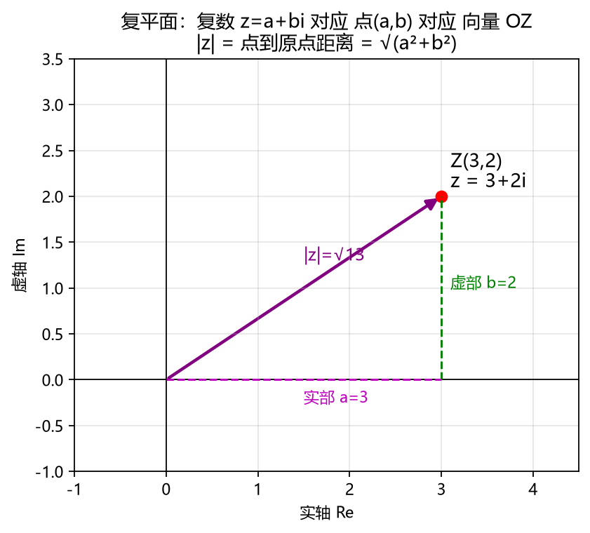
例题跟讲例题 3.2-1：已知 z = 3 − 4i，求 |z| 和 z·z。 解：|z| = √(32+(−4)2) = 5；z·z = 32+42 = 25 = |z|2。 要点：z·z = |z|2 恒成立，小题常用来"消掉 i"。
模的两条好性质：|z1·z2| = |z1|·|z2|，|z1/z2| = |z1|/|z2|。意思是"乘积的模 = 模的乘积，商的模 = 模的商"。求复杂复数的模时，可以先拆开算模再相乘，比先化简省事。
3.3 四则运算
复数运算就把 i 当成一个字母，像多项式一样展开，唯一的新规则是 i2 = −1，最后把 i2 换成 −1。换句话说：会做多项式乘法，就会复数乘法；会分数通分，就会复数除法。
- 加减：实部、虚部分别相加减：(a+bi) ± (c+di) = (a±c) + (b±d)i。
- 乘法：像多项式乘：(a+bi)(c+di) = ac + adi + bci + bdi2 = (ac−bd) + (ad+bc)i。
- 除法：分母实数化——分子分母同乘分母的共轭，把分母变成实数： (a+bi)/(c+di) = (a+bi)(c−di) / [(c+di)(c−di)] = [(ac+bd) + (bc−ad)i] / (c2+d2)。
计算流程（除法）：
- 看分母是 c+di，写它的共轭 c−di；
- 分子分母同乘 c−di；
- 分母变成 c2+d2（实数）；
- 分子展开、i2 换 −1，整理成 a+bi。
例题跟讲例题 3.3-1：计算 (1+2i)/(1−i)。 解：同乘分母共轭 (1+i)： 原式 = (1+2i)(1+i)/[(1−i)(1+i)] = (1+i+2i+2i2)/(1+1) = (1+3i−2)/2 = −1/2 + (3/2)i。 要点：(1−i)(1+i) = 1−i2 = 2，分母干净了。
例题跟讲例题 3.3-2：计算 (1+i)2。 解：(1+i)2 = 1 + 2i + i2 = 1 + 2i − 1 = 2i。 要点：常用小结论 (1±i)2 = ±2i，记下来小题能秒。
例题跟讲例题 3.3-3：计算 (2−i)/(3+i)。 解：分母共轭是 3−i。分子分母同乘： 原式 = (2−i)(3−i)/[(3+i)(3−i)] = (6−2i−3i+i2)/(9+1) = (6−5i−1)/10 = (5−5i)/10 = 1/2 − (1/2)i。 要点：分母实数化后，分母一定是 c2+d2；分子展开别急着约，最后一步再约分。
陷阱：乘完一定要把 i2 换成 −1，这是唯一容易漏的代换。
两个可背的模板：(1+i)/(1−i) = i，(1−i)/(1+i) = −i。推导：前者分子分母同乘 (1+i) 得 (1+i)2/2 = 2i/2 = i。选择题里见到这种形式，直接写结果，不用现算。
编者注·本质回扣：复数四则运算看着新，本质就是多项式运算外加一条 i2 = −1。加减是实部虚部分别合并同类项；乘法像 (a+b)(c+d) 那样展开，只是最后把 i2 换成 −1；除法最巧——分母是 c+di，乘上它的共轭 c−di 后，按平方差得 c2+d2 变成纯实数，分母就"干净"了，这一步叫分母实数化，和分数里"分母有理化"是同一个思路。所以会做多项式乘法和分数通分，就会复数运算。
3.4 几何意义（复平面）
把直角坐标系借给复数用：x 轴叫实轴，y 轴叫虚轴，复数 z = a+bi 对应平面上的点 (a,b)，也对应从原点到该点的向量 OZ。
- |z| = 点 z 到原点的距离；
- |z1 − z2| = 两点 z1、z2 之间的距离；
- 加法的几何意义：向量平行四边形法则。
为什么复数加法像向量加法？ 因为复数 a+bi 本来就对应向量 (a,b)。两个复数相加 = 两个向量相加，坐标对应相加即可，画在图上就是平行四边形法则。这也说明：复数的几何和向量（第 09 章）是同一张图，你已经会了，这里只是换个名字。
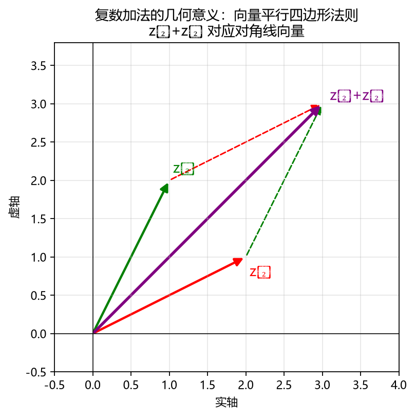
例题跟讲例题 3.4-1：|z−1| = 2 在复平面上表示什么图形？ 解：|z−1| 是点 z 到点 (1,0) 的距离，等于 2，所以是以 (1,0) 为圆心、半径 2 的圆。 要点：|z−z0| = r 就是"以 z0 为圆心、r 为半径的圆"。
例题跟讲例题 3.4-2：求 z1 = 3+4i 与 z2 = 0 之间的距离。 解：|z1−z2| = |z1| = √(32+42) = 5。 要点：两点距离就是复数差的模，和向量里"两点距离 = 向量模"一模一样——复数和向量在平面上是同一张图。
3.5 实系数二次方程的复数根（了解）
初中说"判别式 Δ<0 时方程没有实数根"。有了复数，这句话要改口：不是没根，是没有实根，但有一对共轭复根。
对实系数一元二次方程 ax2 + bx + c = 0（a≠0），记 Δ = b2−4ac：
- Δ > 0：两个不等实根 x = (−b±√Δ)/(2a)；
- Δ = 0：两个相等实根 x = −b/(2a)；
- Δ < 0：实数范围内无实根，复数集内有一对共轭复根：x = (−b ± √(−Δ)·i)/(2a)。
例题跟讲例题 3.5-1：解方程 x2 + 2x + 5 = 0。 解：Δ = 4 − 20 = −16 < 0。由公式 x = (−2 ± √16·i)/2 = (−2 ± 4i)/2 = −1 ± 2i。 要点：Δ<0 时照套求根公式，把 √Δ 换成 √(−Δ)·i，最后约分得标准 a+bi。
例题跟讲例题 3.5-2：解方程 x2 + 9 = 0。 解：x2 = −9 = 9i2，故 x = ±3i。两根 3i 与 −3i 互为共轭，符合"实系数方程复根成对"。 要点：这种缺一次项的，直接 x2 = 负数，开方得 ±√(正数)·i。
为什么两根共轭？ 因为系数都是实数，若 x = a+bi 是根，把 i 换成 −i（取共轭）等式仍然成立，所以共轭复数 a−bi 也是根。这解释了"复根成对出现"。
3.6 复数方程里的待定系数
高考有一类题：给一个含实数 x、y 的复数等式，让你求 x、y。钥匙只有一把——复数相等 ⇔ 实部相等、虚部相等。把两边都整理成 a+bi 标准形，令实部 = 实部、虚部 = 虚部，就得到两个方程。
例题跟讲例题 3.6-1：已知 (x + yi)·i = 1 − i（x、y 为实数），求 x、y。 解：左边先展开：(x+yi)·i = xi + yi2 = xi − y = −y + xi。 右边是 1 − i。复数相等 ⇒ 实部相等：−y = 1；虚部相等：x = −1。 故 x = −1，y = −1。 一步一验：代回 (−1−i)·i = −i − i2 = −i + 1 = 1 − i，与右边相等 ✓。
例题跟讲例题 3.6-2：已知 z + 2·z = 9 + i（z 为复数），求 z。 解：设 z = a+bi，则 z = a−bi。代入：(a+bi) + 2(a−bi) = 3a − bi。 等于 9 + i ⇒ 实部 3a = 9，虚部 −b = 1 ⇒ a = 3，b = −1。 故 z = 3 − i。 要点：见到 z 就设 z = a+bi 展开，再用"实部 = 实部、虚部 = 虚部"列两个方程。
小结：复数 = 实数 + 一个 i；运算像多项式，只多一条 i2 = −1；除法靠乘共轭"实数化"；几何上它就是复平面上的点和向量。考试拿分的关键就两处：i2 = −1 别代错，除法别忘了乘共轭。
④ 例题详解（先做再看）
例题例 1（运算 + 纯虚数）：已知 z = (1 + i)(2 − i)，求 z 的实部与虚部。
自己做：展开，i2 换成 −1。
解：(1 + i)(2 − i) = 2 − i + 2i − i2 = 2 + i + 1 = 3 + i。实部 3，虚部 1。 要点：i2 = −1 是唯一的"新"规则，其余都像多项式乘法。
例题例 2（除法 = 分母实数化）：计算 (1 + 2i)/(1 − i)。
自己做：乘共轭。
解：原式 = (1 + 2i)(1 + i)/[(1 − i)(1 + i)] = (1 + i + 2i + 2i2)/(1 + 1) = (1 + 3i − 2)/2 = (−1 + 3i)/2 = −1/2 + (3/2)i。 要点：分母是 a + bi 就乘 a − bi；(1 − i)(1 + i) = 1 + 1 = 2 是常见模板。
例题例 3（模与共轭）：已知 z = 3 − 4i，求 |z| 与 z·z。
自己做：套公式。
解：|z| = √(9 + 16) = 5；z·z = 32 + 42 = 25 = |z|2。 要点：z·z = |z|2 恒成立，小题常用来化简。
⑤ 出口检测
自测（12 分钟，每题 2 分）：
- 计算 i3。
- 复数 z = 2 − 3i 的共轭是什么？模是多少？
- 计算 (2 + i)(3 − i)。
- 计算 1/(2 − i)（写成 a + bi 形式）。
- 若 (a + 1) + (b − 2)i = 3 + 4i，求 a、b。
真题验收：2025 新高考Ⅰ卷 选择题第 1 题（复数运算）＋ 2020–2024 卷中复数小题 1 道：每题 1 分钟、全对过关。
过关标准：自测 ≥ 10 分 且 真题全对 → 打卡。
课后习题（分层练习）
A 组·基础巩固
1.【考点：i 的幂】计算 i5、i6、i7、i8。 2.【考点：实部虚部】写出 z = −3 + 5i 的实部和虚部，它是实数、虚数还是纯虚数？ 3.【考点：共轭与模】求 z = 5 + 12i 的共轭 z 和 |z|。 4.【考点：乘法】计算 (2+3i)(1−2i)。 5.【考点：除法】计算 (3+i)/(1+i)。 6.【考点：复数相等】若 (2x−1) + yi = 3 − 2i，求实数 x、y。
B 组·能力提升
7.【考点：除法综合】计算 (1+i)/(1−i)，并求结果的模。 8.【考点：共轭性质】已知 z = 1−i，求 z·z 和 |z|2。 9.【考点：复平面几何】满足 |z| = 1 的复数 z 在复平面上构成什么图形？ 10.【考点：i 的幂循环】计算 i + i2 + i3 + i4。
C 组·真题挑战
说明：本工程所存真题 PDF 中 2020、2022、2023 为扫描件（无文本层），无法逐字核对题干，故 C 组只收录能从文本层逐字读出的 2025 新高考Ⅰ卷真题。
11.【考点：复数乘法+虚部】（2025 新高考Ⅰ卷·第 1 题）(1 + 5i)i 的虚部为（ ） A. −1 B. 0 C. 1 D. 6
⑥ 常见坑清单
- i2 = −1：乘完别忘把 i2 换成 −1，这是唯一易错代换。
- 复数相等：必须两个条件同时成立（实部、虚部各自相等）。
- 除法别忘分母实数化：结果要写成 a + bi 标准形式。
- 纯虚数：a = 0 且 b ≠ 0，实部为 0 还不够，虚部不能为 0。
- |z| 是模（长度），不是"绝对值"——z 是复数时别写成 |z| = z 或 −z。
- i 的幂循环：i4n = 1，i4n+1 = i，i4n+2 = −1，i4n+3 = −i。
本章公式速查表
与《高中数学常用公式·修订版》第十部分核对一致。
复数的概念
z = a + bi（a、b 为实数）：a 叫实部，b 叫虚部；b = 0 是实数，b≠0 是虚数，a = 0 且 b≠0 是纯虚数
- 大白话：复数 = 实数部分 + 一个 i 乘出来的部分；纯虚数要求实部为 0 且虚部不为 0。
- 用的时候：说"纯虚数"必须同时写 a=0 和 b≠0 两个条件；0 不是纯虚数。
复数相等：a + bi = c + di ⇔ a = c 且 b = d
- 大白话：两个复数相等，必须实部等于实部、虚部等于虚部，两个条件缺一不可。
- 用的时候：给含 x、y 的复数等式求未知数，就靠它列两个方程。
四则运算（i2 = −1 是唯一新规则）
加减：(a+bi) ± (c+di) = (a±c) + (b±d)i
- 大白话：实部、虚部分别相加减。
- 用的时候：像合并同类项一样，别把实部和虚部混着加。
乘法：(a+bi)(c+di) = (ac−bd) + (ad+bc)i
- 大白话：像多项式一样展开，最后把 i2 换成 −1。
- 用的时候：乘完一定记得 i2=−1，这是唯一容易漏的代换。
除法：(a+bi)/(c+di) = [(ac+bd) + (bc−ad)i] / (c2+d2)（分母不为 0）
- 大白话：分子分母同乘分母的共轭，把分母"实数化"成 c2+d2。
- 用的时候：结果要写成 a+bi 标准形；别忘乘共轭这一步。
共轭与模
共轭：z = a+bi 的共轭 z = a − bi（实部不变，虚部变号）
- 大白话：取共轭就是把点沿实轴翻个面。
- 用的时候：除法里乘的那个"分母共轭"就是它。
z·z = |z|2 = a2 + b2
- 大白话：一个复数乘它的共轭，一定等于模的平方，是个实数。
- 用的时候：小题里常用它"消掉 i"、化简分母。
模：|z| = √(a2 + b2)
- 大白话：模就是复平面上点 (a,b) 到原点的距离，是个非负实数。
- 用的时候：复数本身不能比大小，但模能比。
模的乘法性质：|z1·z2| = |z1||z2|；|z1/z2| = |z1|/|z2|
- 大白话：乘积的模等于模的乘积，商的模等于模的商。
- 用的时候：求复杂复数的模，可以先拆开算模再相乘，比先化简省事。
i 的幂与常用小结论
i 的幂每 4 个一循环：i4n = 1，i4n+1 = i，i4n+2 = −1，i4n+3 = −i
- 大白话：i 的大数次幂，指数除以 4 看余数——余 0 是 1，余 1 是 i，余 2 是 −1，余 3 是 −i。
- 用的时候：求 i2024 这种，先拿指数除以 4。
常用小结论：(1+i)2 = 2i，(1−i)2 = −2i；(1+i)/(1−i) = i，(1−i)/(1+i) = −i
- 大白话：见到这两种特殊形式直接写答案，不用现场算。
- 用的时候：选择题里秒答；不熟就分子分母乘共轭推一遍。
平行四边形恒等式：|z1+z2|2 + |z1−z2|2 = 2(|z1|2 + |z2|2)
- 大白话：两复数和的模平方加差的模平方，等于各自模平方和的 2 倍。
- 用的时候：知道 |z1|、|z2| 及和（差）模之一时，可求另一个。
实系数二次方程的复根（了解）
ax2+bx+c = 0（实系数），Δ = b2−4ac：Δ<0 时有一对共轭复根 x = (−b ± √(−Δ)·i)/(2a)
- 大白话：判别式小于 0 不是"没根"，而是没有实根、有一对互为共轭的复根。
- 用的时候：照套求根公式，把 √Δ 换成 √(−Δ)·i；两根互为共轭。
复数范围内因式分解与单位根（苏州教研·专题53）
a2 + b2 = (a + bi)(a − bi)（a、b 为实数）
- 大白话：在实数里 a2+b2 不能再分解，到了复数里就能拆成一对共轭复数的乘积。
- 用的时候：x2+4 = (x+2i)(x−2i) 这类题直接套；因式分解范围从实数扩到复数。
- 记忆要点：平方和 = 共轭两复数相乘，正好和 z·z = a2+b2 反过来用。
|z| = |z|
- 大白话：一个复数和它的共轭，模是一样大的（它们关于实轴对称，到原点距离相同）。
- 用的时候：求共轭的模可换成求原复数的模，省一步。
x3 = 1 的三个根（三次单位根）：1、ω、ω̄，其中 ω = −1/2 + (√3/2)i，ω̄ = −1/2 − (√3/2)i
- 公式：ω3 = 1，ω̄3 = 1；1 + ω + ω2 = 0；ω·ω̄ = 1；ω2 = ω̄，ω̄2 = ω。
- 大白话：把单位圆三等分得到的三个复数，加起来正好归零，互相还是共轭。
- 用的时候：见到 1+ω+ω2=0 直接代换；−1+√3 i = 2ω，这类提取因子题可秒杀。
- 记忆要点：ω 是"逆时针转 120°"的单位复数，ω2 是"转 240°"，三个加起来 = 0。
数集包含链：N* ⫋ N ⫋ Z ⫋ Q ⫋ R ⫋ C
- 大白话：自然数→整数→有理数→实数→复数，一层比一层大；注意实数里成立的运算性质（如"任何数平方非负"）到复数里不一定成立。
- 用的时候：判断"能不能比大小"时心里有这条链——只有实数能比大小，复数不能。
高级方法·进阶
本章主线（复数概念 + 共轭/模 + 四则运算 + 几何意义）已覆盖高考全部考点。高考复数题固定出在选择第 1 题附近，难度很低，只要别在 i2=−1 和分母实数化两处失手，就是送分题。
本章无对应高级方法手册条目。说明：《不超纲高级方法手册》未单列"复数"专题。高考复数题只在第 1 题左右出一道选择，考的就是本章四则运算与 i 的幂循环，全部不超纲。一个可直接用的小结论：实系数一元二次方程 ax2+bx+c = 0 当 Δ<0 时，在复数集内有一对共轭复根 x = (−b±√(−Δ)·i)/(2a)（选学了解）。
自测答案：1. −i；2. z = 2 + 3i，|z| = √13；3. (2+i)(3−i) = 6 − 2i + 3i − i2 = 6 + i + 1 = 7 + i；4. (2 + i)/(4 + 1) = 2/5 + (1/5)i；5. a + 1 = 3 ⇒ a = 2；b − 2 = 4 ⇒ b = 6。
课后习题答案
A 组
- i5 = i；i6 = −1；i7 = −i；i8 = 1。
- 实部 −3，虚部 5；b≠0，是虚数（不是纯虚数，实部不为 0）。
- z = 5 − 12i；|z| = √(25+144) = 13。
- (2+3i)(1−2i) = 2−4i+3i−6i2 = 2−i+6 = 8 − i。
- (3+i)/(1+i) = (3+i)(1−i)/[(1+i)(1−i)] = (3−3i+i−i2)/2 = (4−2i)/2 = 2 − i。
- 实部：2x−1 = 3 → x = 2；虚部：y = −2。
B 组
- (1+i)/(1−i) = (1+i)2/2 = (1+2i−1)/2 = i；|i| = 1。
- z·z = (1−i)(1+i) = 2；|z|2 = 12+(−1)2 = 2（与 z·z 相等）。
- |z| = 1 即点 z 到原点距离为 1，构成以原点为圆心、半径 1 的单位圆。
- i+i2+i3+i4 = i+(−1)+(−i)+1 = 0。
C 组 11.【2025·第1题】(1+5i)i = i + 5i2 = i − 5 = −5 + i。写成 a+bi 形式，实部 −5，虚部 1，选 C。
一通百通
这一章的"通用骨架"是：① 拿到复数先整理成 a+bi 标准形 → ② 乘除时把 i 当字母展开、最后把 i2 换成 −1 → ③ 除法就分子分母同乘分母共轭做分母实数化 → ④ 涉及距离/图形就翻译成复平面上的点和 |z−z0|=r 的圆。高考复数题不管怎么出，本质都是"会多项式展开 + 会乘共轭"这两件事。会做一道复数小题，就会做所有复数小题；复数的几何意义（点、向量、距离）和第 09 章平面向量是同一张图，后面解析几何里也常借用。
跨章结合
- 复数的模与几何意义 ⇔ 第 15 章直线与圆：|z−z0|=r 在复平面上是以 z0 为圆心、r 为半径的圆，和解析几何里 "(x−a)2+(y−b)2=r2" 是同一件事的两种写法；|z|=1 的单位圆、两点距离 |z1−z2|，都是后面解析几何圆方程的"二维坐标版"。想通这一层，复平面上看图和解析几何画圆就打通了。（综合原理说明，非真题）
- 复数坐标 ⇔ 第 16 章圆锥曲线：复平面的实轴、虚轴就是直角坐标系的 x 轴、y 轴，z=a+bi 对应点 (a,b)，本质和向量（第 09 章）共用一张图。高考里复数本身只出现在第 1 题送分位置（如 2025 新高考Ⅰ卷第 1 题、2023 年卷第 1 题均考复数），但这套"把数看成点、把运算看成向量"的眼光，是后面看懂解析几何的底子。
本章与前后章
复数前接第 02 章（函数与实数系、坐标系）——它是在实数不够用（负数开平方）时把数系从一维扩到二维；几何上它和第 09 章平面向量共用一张复平面图（a+bi 对应向量 (a,b)）。它向后不直接推哪一章，但作为第 01 章集合与逻辑里"数集包含链 R⊂C"的落脚点，以及卷面上固定的第 1 题送分小题，地位是"小而稳"。学完它，你手里多了一套能让负数开平方、能描述旋转的二维数。
高考怎么考
新高考Ⅰ卷里复数固定在选择题第 1 题附近，难度很低、是全卷送分题：考法集中在四则运算（尤其除法的分母实数化）、求实部虚部、共轭与模、i 的幂循环。真题如 2025 新高考Ⅰ卷第 1 题（(1+5i)i 的虚部，答案选 C），以及 2023 年卷第 1 题也考复数（该年集合退到第 2 题）。它考的不是思维，而是你别在 i2=−1 和乘共轭两处失手——一分钟内必须拿下，为后面大题省时间。
数列
方法手册：数列放缩（嵌本章末） ｜ 公式速查：修订版 第8部分（数列）
本章本质核心：数列的本质是"按规则一个接一个排下去的一列数"——它就是定义在正整数上的函数 an = f(n)。等差（相邻两项差固定）和等比（相邻两项比固定）是最简单的两种规则；本章所有内容（通项公式、前 n 项和 Sn、由 Sn 求 an、裂项/错位相减求和、由递推求通项、放缩证不等式），都是围绕"规则与项的关系"展开的变体。
为什么有用：想通"数列是定义在正整数上的函数、规则决定一切"，等差等比的通项求和、由 Sn 求 an、递推构造就都能现场推；高考固定的数列解答题第二题，套路就是定规则、求基本量、再求和或放缩，想通原理比死记公式稳。
① 门槛自测（进章前，10 分钟）
- 1 + 2 + 3 + … + 100 = ？（高斯算法）
- 写出 2、4、6、8、… 的第 n 项。
- 1、2、4、8、16、… 相邻两项的比值是多少？
- 等差数列"差"固定，等比数列什么固定？
- 解方程 2n = 8。
判定：5 题答对 4 题以上 → 进章。
② 学习目标
- 掌握等差数列与等比数列的定义、通项、前 n 项和、常用性质
- 会根据"前 n 项和 Sn"求通项 an（Sn 与 an 关系）
- 掌握三种求和方法：裂项相消、错位相减、分组求和
- 能完成高考数列解答题（第 17–19 题区间，必考）
③ 正文讲解
先花两分钟看一眼本章地图，知道自己走到哪了：
- 3.1 数列是什么：把一列数看成"编号→数值"的对应，引出 an 与 Sn。
- 3.2 等差数列：相邻两项"差固定"，通项一次式，前 n 项和是二次式。
- 3.3 等比数列：相邻两项"比固定"，通项指数式，前 n 项和要分 q = 1 与 q≠1。
- 3.4 三种求和法：裂项相消、错位相减、分组求和——大题第二问几乎必出。
- 3.5 由递推求通项：见到 an+1 = f(an) 怎么动手（构造法入门）。
3.1 数列的概念
引入：你每月往银行存一笔钱，本息按月份滚存下来，第 1 个月 100、第 2 个月 101、第 3 个月 102.01……这就是一列"按月份排好的数"。古印度那个著名的兔子问题——一对兔子每月生一对、新生兔子下月又开始生——数出来也是一串数：1，1，2，3，5，8，13……（斐波那契数列）。生活里只要"按次序一个个数下去"，背后就是数列。
定义：按照一定次序排列的一列数叫做数列，记作 a1，a2，a3，…，an，…。其中 an 叫这个数列的第 n 项（也叫通项）。如果第 n 项和 n 之间能用一个式子 an = f(n) 写出来，这个式子就叫通项公式。
注意两件事：
- 数列的"项数 n"只能取正整数 1，2，3，…，所以它其实是一个定义在正整数上的函数 an = f(n)。
- "次序"很重要：1，2，3 和 3，2，1 是两个不同的数列。
直观理解：把 (n, an) 当成点画在坐标系里，数列就是一堆"排成一列、横坐标跳着走"的散点——不会连成一条连续曲线，因为 n 只能取整数。后面 3.2、3.3 你会看到：等差的点排在一条直线上，等比的点趴在一条指数曲线上。
Sn 与 an 的关系（必背，大题第一步）：前 n 项和 Sn = a1+a2+…+an。那么：
- 当 n = 1 时，a1 = S1；
- 当 n≥2 时，an = Sn − Sn−1。
道理很朴素：Sn 是前 n 项加起来，Sn−1 是前 n−1 项加起来，一减就只剩第 n 项。但 n = 1 时 S0 没定义，所以第一段必须单独验。
计算流程（已知 Sn 求 an）：
- 先写 n = 1：a1 = S1；
- 再写 n≥2：an = Sn − Sn−1；
- 把 n = 1 代进第 2 步的式子检验：能对上，就合并成一个式子；对不上，就分段写。
例题跟讲例题：已知数列前 n 项和 Sn = n2+n，求通项 an。 解：n = 1 时 a1 = S1 = 2。n≥2 时 an = Sn−Sn−1 = (n2+n)−[(n−1)2+(n−1)] = n2+n−(n2−n) = 2n。把 n = 1 代入 2n 得 2，正好等于 a1，所以合起来 an = 2n。
小结：数列就是"编号排队的数"；见到 Sn 求 an，永远 n = 1 单独验、n≥2 作差。
编者注·本质回扣：数列这个名字听着新，本质就是"编号排队的一列数"，把第 n 项写成 an 就是一个定义在正整数上的函数——和你在第 02 章学的函数是同一回事，只是自变量 n 只能取 1,2,3…，图像是散点而不是连续曲线。Sn 与 an 的关系更朴素：Sn 是前 n 项一锅端的和，Sn−1 是前 n−1 项的和，两者一减自然只剩第 n 项；只是 n = 1 时 S0 没定义，所以必须单独验 a1 = S1。记住"作差出通项"，这就是已知 Sn 求 an 的全部道理。
3.1.1 数列的单调性、周期性与最大(小)项 （苏州教研·专题31）
单调性怎么判：数列 {an} 递增 ⇔ an+1 > an 恒成立；递减 ⇔ an+1 < an 恒成立。判断手段两种：
- 作差：算 an+1 − an 的正负；
- 作商：各项为正时，算 an+1/an 与 1 比。
重要提醒（苏州书原话）：不能对函数 an = f(n)，n∈N* 直接求导！要研究单调性，得先引进对应函数 y = f(x)，x∈[1,+∞)，对它求导，再回到数列上。
最大(小)项怎么找：若第 n 项是最大项，它必须同时不比左右邻居小：an ≥ an−1 且 an ≥ an+1（最小项把不等号反过来）。
这就是苏州书说的"∨ 字形模型"（最小项是倒过来的 ∧ 字形）。解这个不等式组，n 取正整数的那几项就是候选最大项。
周期性：若 an+t = an，则 {an} 的周期为 T。客观题里给了递推又求不出通项，先猜它是不是周期数列。
应用题模型（苏州书·专题31）：
- 分期付款（复利）：贷款 A 元，n 次还清，每期利率 r，每次还款 x。 x = A·r·(1+r)n / [(1+r)n − 1] 大白话：分期去付款，到期算总账——我付银行息，银行付我息，借还两相等。
- 零存整取（单利）：每期存 p 元，每期利率 r，n 期后本利和 Sn = p·[n + n(n−1)/2·r]（这是等差数列求和模型）。
3.2 等差数列（公差 d）
引入：把钢管堆成梯形，最上层 5 根，往下每层多 1 根：5，6，7，8，9……相邻两层的差总是 1。再比如上衣尺码 S、M、L、XL 之间的号差。这种"后一项减前一项等于同一个常数"的数列，就是等差数列。
定义：如果一个数列从第 2 项起，每一项与它前一项的差都等于同一个常数 d，即 an+1 − an = d，这个数列就叫等差数列，常数 d 叫公差。
通项公式：an = a1 + (n − 1)d。 怎么来的？用累加法：a2−a1 = d，a3−a2 = d，…，an−an−1 = d，左边一加一减全抵消，剩 an−a1 = (n−1)d，移项就是公式。
几何意义：把 an = a1+(n−1)d 写成 an = dn+(a1−d)，这是关于 n 的一次函数。所以等差的散点 (n,an) 全在一条斜率为 d 的直线上（见下图，蓝点）。
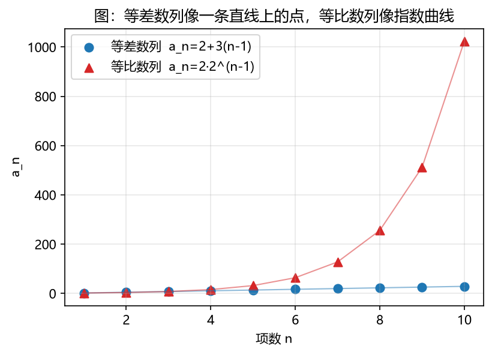
前 n 项和：Sn = n(a1 + an)/2 = na1 + n(n−1)d/2。 高斯小时候算 1+2+…+100，思路就是"首末配对"：(1+100)、(2+99)……每对都 101，共 50 对，得 5050。搬到一般等差上就是"首项加末项乘项数除以 2"。
它的几何意义：把 Sn = na1+n(n−1)d/2 整理成 Sn = (d/2)n2 + (a1 − d/2)n，这是关于 n 的二次函数，而且常数项是 0（过原点）。d>0 时开口向上，Sn 的散点趴在一条抛物线上（见下图）。
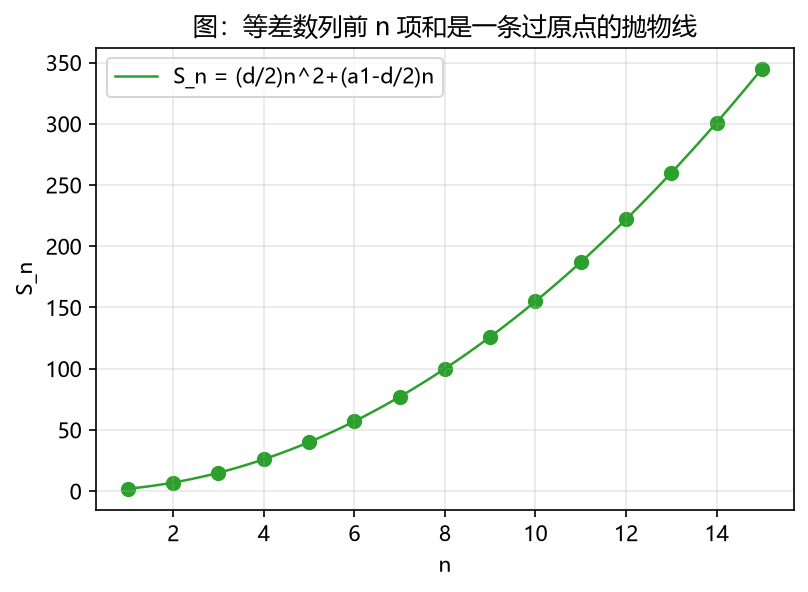
常用性质（都能由通项推出来，别死背）：
- 若 m+n = p+q，则 am + an = ap + a_q。理由：am+an = 2a1+(m+n−2)d，右边 = 2a1+(p+q−2)d，由 m+n = p+q 相等。
- 等差中项：相邻三项中 2an = an−1 + an+1。
- 推广：an = am + (n−m)d（知道任意一项都能当"新首项"）。
- 分段和：Sk，S2k−Sk，S3k−S2k，… 仍成等差数列。
两个好用的二级结论（苏州教研·专题32）：
{Sn/n} 是等差数列：由 Sn = na1+n(n−1)d/2 两边除以 n，得 Sn/n = a1+(n−1)·d/2，即 {Sn/n} 本身就是公差为 d/2 的等差数列。题目给你一组"Sn/n 的差"，立刻反推公差 d。
am/bm = S_{2m−1}/T_{2m−1}（两等差数列第 m 项之比 = 前 2m−1 项和之比）：设 {an}、{bn} 前 n 项和分别为 Sn、Tn。因为 S_{2m−1} = (2m−1)(a1+a_{2m−1})/2 = (2m−1)·am（等差中项 a1+a_{2m−1} = 2am），同理 T_{2m−1} = (2m−1)·bm，两式一除，(2m−1) 约掉，得 am/bm = S_{2m−1}/T_{2m−1}。
【跟讲例题（苏州教研·专题32，原书p.130）】：等差数列 {an}、{bn} 的前 n 项和分别为 Sn、Tn，且 Sn/Tn = (7n+45)/(n+3)，求 an/bn 为整数时 n 的值。 解：an/bn = S_{2n−1}/T_{2n−1} = [7(2n−1)+45]/[(2n−1)+3] = (14n+38)/(2n+2) = (7n+19)/(n+1) = 7 + 12/(n+1)。要 an/bn 为偶数（整数），需 12/(n+1) 为整数，即 n+1 是 12 的正约数：n+1∈{1,2,3,4,6,12}，n∈N* 且对应值为偶数。代回检验：n = 1 时 7+6 = 13（奇），n = 2 时 7+4 = 11（奇），n = 3 时 7+3 = 10（偶✓），n = 5 时 7+2 = 9（奇），n = 11 时 7+1 = 8（偶✓）。故 n = 3 或 n = 11。（此即苏州书 B 组第 1(1) 题，答案 3 或 11。）
其他小结论（苏州教研·专题32）：
- 等差数列判定四法：①定义 an+1−an = d；②等差中项 2an = an−1+an+1；③an = kn+b（一次式）；④Sn = An2+Bn（常数项为 0 的二次式）。
- 若 {an} 等差，则 {c^an}（c>0，c≠1）是等比数列。
- 从等差数列中按"序号成等差"抽取若干项，抽出的项仍成等差数列。
例题跟讲例题：等差数列中 a3 = 7，a7 = 19，求 a10。 解：a7−a3 = 4d = 12 ⇒ d = 3；a3 = a1+2d ⇒ a1 = 1。a10 = a1+9d = 1+27 = 28。 要点：等差问题永远抓住 a1 和 d 两个"基本量"，把已知条件翻译成关于它们的方程。
小结：等差 = "差固定"，通项一次、求和二次，两基本量 a1、d 走天下。
3.3 等比数列（公比 q）
引入：一张纸对折 1 次变 2 层，对折 2 次变 4 层，对折 3 次变 8 层……层数是 1，2，4，8，16……每折一次就乘 2。银行复利也是：利息滚进本金再生利息，每年本金都乘上 (1+利率)。这种"后一项除以前一项等于同一个常数"的数列叫等比数列。
定义：如果一个数列从第 2 项起，每一项与它前一项的比都等于同一个非零常数 q，即 an+1/an = q，这个数列就叫等比数列，q 叫公比（规定 q≠0，各项也不为 0）。
通项公式：an = a1·qn−1。 推导类似累乘：a2/a1 = q，a3/a2 = q，…，an/an−1 = q，左边全约掉只剩 an/a1 = qn−1。
前 n 项和：
- 当 q = 1 时，每一项都等于 a1，所以 Sn = n·a1；
- 当 q≠1 时，Sn = a1(1 − qn)/(1 − q) = a1(qn − 1)/(q − 1)。
公式怎么来的？写一遍：Sn = a1+a1q+…+a1qn−1，两边乘 q 得 qSn = a1q+…+a1qn，两式一减（错位相减），中间全消，Sn−qSn = a1−a1qn，解出 Sn。q 是参数时一定要先讨论 q = 1 还是 q≠1，这是最常见的丢分点。
常用性质：
- 若 m+n = p+q，则 am·an = ap·a_q（注意这里是"乘"不是"加"）。
- 等比中项：an2 = an−1·an+1，但开方有正负两个，要按题目条件取舍。
- 当 |q|<1 且 n 无限增大时，qn→0，an→0，Sn→a1/(1−q)。
补充结论（苏州教研·专题33）：
- {log_c bn} 是等差数列：若 {bn}（bn>0）是等比数列，则取以 c 为底的对数后 {log_c bn} 就是等差数列（乘法变加法）。这是"等比↔等差"互相转化的桥梁。
- 奇偶项和之比：项数为 2n 时，S偶/S奇 = q（因为 a2 = q·a1，a4 = q·a3，… 全部提一个 q）；项数为 2n−1 时，(S奇−a1)/S偶 = q。
- 连续 m 项的积仍成等比：设 Tn = a1·a2·…·an，则 Tm，T2m/Tm，T3m/T2m，… 仍成等比数列。
- 注意：q = −1 时，"连续 m 项和成等比"要求 m 必须是奇数（否则分段和为 0）。
- 等比数列判定四法：①定义 an+1/an = q；②等比中项 an2 = an−1an+1≠0；③an = p·qn；④Sn = A(1−qn)。
例题跟讲例题：等比数列 a1 = 3，q = 2，求前 6 项和。 解：q≠1，S6 = 3·(26−1)/(2−1) = 3·63 = 189。 要点：先确认 q≠1 再套公式；本题 a1 = 3 别代成 1。
小结：等比 = "比固定"，通项指数式，求和务必分 q = 1。
编者注·本质回扣：等差和等比其实是一对"兄弟规则"：等差是相邻两项"差固定"（每次加同一个 d），等比是相邻两项"比固定"（每次乘同一个 q）。差固定时通项是 n 的一次式、前 n 项和是过原点的二次式；比固定时通项是指数式、前 n 项和要用错位相减推出来，并且 q = 1 时所有项都一样、公式得另写。它们的基本量都只有两个（等差是 a1 和 d，等比是 a1 和 q），做题就是把已知条件翻译成关于这两个基本量的方程——这就是"基本量法"为什么走天下。
3.4 数列求和的三种常用方法
大题第二问十有八九让你"求前 n 项和"，但给你的数列既不是等差也不是等比。这时用下面三招。
1. 裂项相消：当通项是"两项乘积作分母"时，把一项拆成两项之差，求和时中间全部抵消。
- 1/[n(n+1)] = 1/n − 1/(n+1)
- 1/[(2n−1)(2n+1)] = ½[1/(2n−1) − 1/(2n+1)]（注意前面那个 ½）
2. 错位相减：当通项是"等差 × 等比"（比如 an = (2n−1)·3n）时，先写 Sn，再两边乘公比 q 得 qSn，两式错开一位相减，中间剩一个等比数列，套等比求和公式。
3. 分组求和：把数列拆成几个等差、等比小组，分别求和再相加。
例题跟讲例题：求 1/(1·3)+1/(3·5)+…+1/[(2n−1)(2n+1)]。 解：每一项 = ½[1/(2k−1) − 1/(2k+1)]。 原式 = ½[(1−1/3)+(1/3−1/5)+…+(1/(2n−1)−1/(2n+1))] = ½[1 − 1/(2n+1)] = n/(2n+1)。 要点：中间项两两抵消，只剩首尾；别忘了系数 ½。
小结：裂项看"分母乘积"，错位看"等差 × 等比"，分组看"能拆成常见数列"。
补充求和招法（苏州教研·专题35）：
- 倒序相加法：适合"首末等距两项之和为常数"的数列（如 ak = Cnk）。把 Sn 正着写一遍、倒着写一遍，两式相加，对应项配对。
- 并项法：相邻若干项的和恰好是常数/特殊数列，如 an = (−1)n(4n−1)，两项一并就是 −4。
- 奇偶讨论法：an = (−1)n−1(2n−1)2 这类带 (−1)n 的，先算偶数项和 S_{2n} = f(n)，再算奇数项 S_{2n−1} = S_{2n−2}+a_{2n−1}。先偶后奇（偶数项好配对）。
- 分段讨论法：如 an = |2n−29|，前若干项负、后面正，要分段去掉绝对值再求和。
必背的三个自然数幂和公式（苏州教研·专题35）：
1+2+3+…+n = n(n+1)/2
12+22+32+…+n2 = n(n+1)(2n+1)/6
13+23+33+…+n3 = [n(n+1)/2]2
- 大白话：立方和等于"和的平方"，这个最惊艳——13+23+33=36=(1+2+3)2。
- 用的时候：见到 Σk2、Σk3 直接套公式，不要硬算。
无穷等比数列的和：当 |q|<1 时，S = lim Sn = a1/(1−q)。
3.5 由递推关系求通项（构造法入门）
很多大题不给通项，只给相邻两项的关系 an+1 = f(an)。最常见的一类是 an+1 = p·an + q（p、q 为常数）。 思路：凑一个等比。设 an+1 + c = p(an + c)，展开得 an+1 = p·an + (p−1)c，对比原式得 (p−1)c = q，即 c = q/(p−1)。于是 {an+c} 是公比为 p 的等比数列，先求它再还原出 an。
例题跟讲例题：a1 = 1，an+1 = 2an+1，求 an。 解：p = 2，q = 1，c = 1/(2−1) = 1。于是 an+1+1 = 2(an+1)，即 {an+1} 是首项 a1+1 = 2、公比 2 的等比数列，an+1 = 2·2n−1 = 2n，所以 an = 2n−1。
小结：见到 an+1 = p·an+q，就"加个常数凑等比"；更全的构造模板见章末"高级方法·进阶"。
3.5.1 取倒数、取对数、凑常数列（苏州教研·专题34）
上面 3.5 是最基础的"加常数凑等比"。苏州书专题34 还总结了另外几招，见到对应信号直接用。
招一：取倒数（分式递推）
信号：an+1 = q1an/(q2an+d2) 这种分子分母都是 an 一次式的分式。
操作：两边同时取倒数， 1/an+1 = (d2/q1)·(1/an) + q2/q1 这就变成了 an+1 = pan+q 的标准型（只是把 an 换成了 1/an），再用"加常数凑等比"。
招二：取对数（指数递推）
信号：an+1 = c·anp（后项是前项的 p 次幂再乘常数）。
操作：两边取以 c 为底的对数， log_c an+1 = p·log_c an + 1 令 bn = log_c an，则 bn+1 = p·bn+1，又是标准型。乘法/幂次问题，取对数就降成了加法问题。
招三：凑常数列（和差积商四式）
苏州书总结得很漂亮——若相邻两项加一个、减一个、乘一个、除一个关于 n 的式子后相等，那这个新数列就是常数列（后一项等于前一项），直接等于首项。
- 和型：an+1+f(n+1) = an+f(n) ⇒ {an+f(n)} 是常数列；
- 差型：an+1−f(n+1) = an−f(n) ⇒ {an−f(n)} 是常数列；
- 积型：f(n+1)·an+1 = f(n)·an ⇒ {f(n)·an} 是常数列；
- 商型：an+1/f(n+1) = an/f(n) ⇒ {an/f(n)} 是常数列。
常数列一旦看出来，通项立刻写出（等于首项），省掉累加/累乘。
招四：an 与 Sn 混合式，两式相减
题目给 F(an, Sn)=0 时，先写 n=1 求出 a1；再把 n 换成 n−1 得 F(an−1, Sn−1)=0，两式相减，消掉 Sn，得到只含 an、an−1 的递推。注意 n≥2，最后一定要回验 n=1。
【跟讲例题（苏州教研·专题34，原书p.132）】：设数列 {an} 的前 n 项和为 Sn，已知 Sn = 2an − 2n+1（n∈N*）。（1）求 {an/2n} 的通项公式；（2）证明（见 3.6 节放缩例题）。 解（1）：n = 1 时 a1 = S1 = 2a1−4 ⇒ a1 = 4。 n≥2 时，写 Sn−1 = 2an−1−2n，两式相减： an = Sn−Sn−1 = 2an−2an−1−2n，整理得 an = 2an−1 + 2n。 两边同除以 2n：an/2n = an−1/2n−1 + 1。令 bn = an/2n，则 bn = bn−1+1，即 {bn} 是公差为 1 的等差数列，首项 b1 = a1/2 = 2。 故 bn = 2+(n−1) = n+1，即 an/2n = n+1（代回 n = 1 检验：a1/2 = 2 = 1+1 ✓）。 要点：见到 Sn 与 an 混在一起，永远"两式相减消 Sn"；除完 2n 后露出一个公差为 1 的等差，这就是苏州书说的"除幂数化等差"。
3.6 数列型不等式的证明——放缩套路（苏州教研·专题36）
大题第二问最常考：证明 a1+a2+…+an 小于某个常数。通项求不出精确和时，标准动作是先放缩、再求和。
总流程（苏州书原话整理）：
- 目标常数 C 是什么形状？ - 若 C = a1/(1−q)，就猜通项放大后是个等比数列 an ≤ a1·qn−1； - 若 C = f(n+1)−f(1)，就猜通项 an ≤ f(n+1)−f(n)（裂项）。
- 选好放缩方向后，首项不吻合就延迟放缩——从第 2 项甚至第 4 项才开始放，前几项精确保留。
- 放缩不能过度：放太大直接超过 C，证不出来。
放缩工具箱（苏州教研·专题36，必存）：
1/k2 < 1/(k2−1) = ½(1/(k−1) − 1/(k+1))（k≥2）
1/k2 < 1/[k(k−1)] = 1/(k−1) − 1/k（k≥2）
1/k2 > 1/[k(k+1)] = 1/k − 1/(k+1)（反向用）
1/√k < 2(√k − √(k−1))；1/√k > 2(√(k+1) − √k)（分母有理化放缩）
k/(k+1)! = 1/k! − 1/(k+1)!（阶乘裂项）
- 大白话：见 1/k2 就想拆成两个相邻倒数差；见 1/√k 就想乘共轭根式。
- 用的时候：证明 Sn < C 时，先把 C 拆成"前几项 + 一个裂项和"，再反推通项该放大成什么。
伪等差 / 伪等比（苏州书·专题36）：
- 若 an+1 ≥ an+d，则累加得 an ≥ a1+(n−1)d（不等号方向跟着）；
- 若正项数列 an+1 ≥ q·an，则累乘得 an ≥ a1·qn−1。
这两条把"递推不等式"直接转成了通项不等式，是放缩的跳板。
【跟讲例题（苏州教研·专题34 例3，原书p.134）】：已知数列 {an} 满足 a1 = 2，an+1 = ½an2 + 2an，求证：1/a1 + 1/a2 + … + 1/an < 3/4。 证明：由 a1 = 2>0 及递推式知 an>0 且 an+1>an，故 an≥2。 于是 an+1 = ½an2+2an = an(½an+2) ≥ an(½·2+2) = 3an（把 an≥2 代入括号）。 类比等比数列累乘：an ≥ a1·3n−1 = 2·3n−1，故 1/an ≤ ½·(1/3)n−1。 求和：Σ_{k = 1}^{n} 1/ak ≤ ½[1+⅓+(⅓)2+…+(⅓)n−1] = ½·[1−(1/3)n]/(1−1/3) = ½·(3/2)·[1−(1/3)n] = 3/4·[1−(1/3)n] < 3/4。证毕。 要点：目标常数 3/4 正是 ½/(1−⅓) = 3/4——"先算目标常数对应的等比首项与公比，再反推该把通项放大成什么"。这就是苏州书说的"由 3/4 = ½/(1−q) 猜出 q = 1/3"。
3.7 数学归纳法（苏州教研·专题52；新教材选必二 4.4）
与正整数 n 有关的命题，当你"观察+猜想"出结论后，用数学归纳法严格证明。两步缺一不可：
- 归纳奠基：证明 n 取第一个值 n0（通常 n0 = 1）时结论成立；
- 归纳递推：假设 n = k（k≥n0）时结论成立，以此为条件，证明 n = k+1 时结论也成立。
两步走完，就断定命题对从 n0 开始的所有正整数都成立。
- 大白话：第一步验"第一张多米诺骨牌倒了"，第二步证"前一张倒了后一张一定倒"。
- 用的时候：第二步必须用上归纳假设 ak 成立这个条件，不能空证 a_{k+1}。苏州书提醒："由 n = k 推 n = k+1 这一步，可用分析法（执果索因）找思路。"
- 注意：并非所有与正整数有关的命题都能直接用数学归纳法；它和放缩法、分析法常搭配使用。
④ 例题详解（先做再看）
例题例 1（等差数列基本量）：等差数列 {an}，a3 = 7，a7 = 15，求通项与前 10 项和。
自己做：先求 a1 和 d。
解：a7 − a3 = 4d = 8 ⇒ d = 2；a3 = a1 + 2d ⇒ a1 = 3。an = 3 + 2(n − 1) = 2n + 1。 S10 = 10(a1 + a10)/2 = 10(3 + 21)/2 = 120。 要点："基本量法"：任何等差数列都由 a1、d 两个基本量确定。
例题例 2（等比数列求和）：求 1 + 2 + 4 + … + 29 的值。
自己做：q ≠ 1 用公式。
解：a1 = 1，q = 2，n = 10。S10 = 1·(210 − 1)/(2 − 1) = 1024 − 1 = 1023。 要点：先判断 q 是否等于 1 再选公式。
例题例 3（裂项相消）：求数列 1/(1·2) + 1/(2·3) + … + 1/[n(n+1)] 的和。
自己做：每项拆成两个分数的差。
解：1/[k(k+1)] = 1/k − 1/(k+1)。 原式 = (1 − 1/2) + (1/2 − 1/3) + … + (1/n − 1/(n+1)) = 1 − 1/(n+1) = n/(n+1)。 要点：中间项全部抵消，只剩首尾——这是裂项的招牌特征。
例题例 4（错位相减）：求数列 {n·2n} 的前 n 项和。
自己做：写出 Sn 与 2Sn 再相减。
解：Sn = 1·2 + 2·4 + 3·8 + … + n·2n 2Sn = 1·4 + 2·8 + … + (n−1)·2n + n·2n+1 相减：−Sn = 2 + (4 + 8 + … + 2n) − n·2n+1 = 2 + 22(2n−1 − 1)/(2 − 1) − n·2n+1 = 2 + 2n+1 − 4 − n·2n+1 = 2n+1(1 − n) − 2 故 Sn = (n − 1)·2n+1 + 2。 要点：错位相减只适合"等差 × 等比"；相减后中间的等比部分整体求和。
例题例 5（递推裂项相消，苏州教研·专题36 B组第7题，原书p.138）：已知数列 {an} 满足 a1 = √2，an+1 = an2 + an，记 bn = 1/(1+an)，Sn 为数列 {bn} 的前 n 项和。求证：Sn + 1/an+1 = √2/2。
自己做：把递推式两边取倒数，看能不能裂项。
解：由 an+1 = an(an+1)，两边取倒数： 1/an+1 = 1/[an(an+1)] = 1/an − 1/(an+1)（裂项）。 移项得 1/(an+1) = 1/an − 1/an+1，即 bn = 1/an − 1/an+1。 对 k = 1,2,…,n 求和： Sn = (1/a1−1/a2)+(1/a2−1/a3)+…+(1/an−1/an+1) = 1/a1 − 1/an+1。 故 Sn + 1/an+1 = 1/a1 = 1/√2 = √2/2。证毕。 要点：见到 an+1 = an(an+c) 型递推，两边取倒数必出裂项；这是递推与裂项相消的经典接口。
⑤ 出口检测
自测（20 分钟，每题 2 分）：
- 等差数列 a1 = 2，d = 3，求 a10。
- 等比数列 a1 = 1，q = 2，求前 5 项和。
- 已知 Sn = n2，求 an。
- 求和：1/(1·3) + 1/(3·5) + … + 1/[(2n−1)(2n+1)]。
- 数列 an+1 = an + 2，a1 = 1，判断类型并求 an。
真题验收：完成 2020–2024 新高考Ⅰ卷数列解答题 1 道（等差等比通项 + 求和方法）：两问独立完成、20 分钟内、得分 ≥ 80% → 过关。
过关标准：自测 ≥ 10 分 且 真题大题达标 → 打卡。
课后习题（分层练习）
A 组教材练习级，B 组高考中档，C 组真题。答案见章末"课后习题答案"。
A 组 · 基础巩固
1.【考点：由 Sn 求 an】已知数列前 n 项和 Sn = 2n2 − n，求通项 an。 2.【考点：等差数列基本量】等差数列 {an} 中，a2 = 5，a5 = 14，求公差 d 与 a1。 3.【考点：等差前 n 项和】等差数列 a1 = 4，d = −2，求前 10 项和 S10。 4.【考点：等比数列通项】等比数列 a1 = 2，q = 3，求 a4 与前 4 项和 S4。 5.【考点：裂项相消】求和：1/(1·2) + 1/(2·3) + … + 1/[n(n+1)]。 6.【考点：等差性质】等差数列中 a3+a8 = 20，求 a5+a6 的值。
B 组 · 能力提升
7.【考点：等比求和分类讨论】等比数列前 n 项和 Sn = k·2n − 1，求常数 k 及公比 q。 8.【考点：错位相减】求数列 {n·3n} 的前 n 项和 Sn。 9.【考点：构造法求通项】数列 {an} 满足 a1 = 2，an+1 = 3an−2，求通项 an。 10.【考点：等差 Sn 最值】等差数列 a1 = 20，d = −2，求 Sn 最大时的 n 及最大值。
C 组 · 真题挑战
11.【考点：等比分段和】（2025 年新高考Ⅰ卷·填空第 13 题）若一个等比数列的前 4 项和为 4，前 8 项和为 68，则该等比数列的公比为__。 12.【考点：递推证等差】（2025 年新高考Ⅰ卷·解答第 16 题第 (1) 问）设数列 {an} 满足 a1 = 3，an+1/n = an/(n+1) + 1/[n(n+1)]。证明：{n·an} 为等差数列。
⑥ 常见坑清单
- an = Sn − Sn−1 只对 n ≥ 2 成立，n = 1 要单独验 a1 = S1，不一致就分段写。
- 等比数列前 n 项和：先判 q = 1 还是 q ≠ 1，q 是参数时必须分类讨论。
- 等比中项有正负两个值（an2 = an−1·an+1），用条件取舍。
- 裂项系数：1/[(2n−1)(2n+1)] 拆出来要乘 1/2，别漏系数。
- 错位相减：相减后等比首项是第二项（q·a1）不是 a1，指数和项数数清楚。
- 等差数列 Sn 最大/最小：找 d 变号处（an 由正转负）。
本章公式速查表
口径与《高中数学常用公式·修订版》第八部分（数列）一致。
an 与 Sn 的关系
a1 = S1；n ≥ 2 时 an = Sn − Sn−1
- 大白话：前 n 项和减去前 n−1 项和，剩下的就是第 n 项。
- 用的时候：大题第一步永远先写 n=1 单独验；n≥2 再作差，最后把 n=1 代回去看能不能并成一个式子。
- 记忆要点：n=1 特殊，n≥2 作差。
等差数列
an = a1 + (n − 1)d（也可写成 an = am + (n − m)d）
- 大白话：从第一项开始每项加一个 d，加到第 n 项。
- 用的时候：知道任意一项都能当"新首项"跳着算；求基本量 a1、d 是万能钥匙。
- 记忆要点：首项 +（项数−1） × 公差。
Sn = n(a1 + an)/2 = na1 + n(n−1)d/2 = (d/2)n2 + (a1 − d/2)n
- 大白话：首末项配对相乘再除以 2；展开后是个过原点的二次函数。
- 用的时候：给 a1、an、n 用第一式；给 a1、d、n 用第二式；讨论 Sn 最值时看第三式。
- 记忆要点：高斯配对——(首+末)×项数÷2。
若 m+n = p+q，则 am + an = ap + a_q
- 大白话：下标和相等，两项和就相等。
- 用的时候：不求通项，直接整体代换；等差中项 2an = an−1 + an+1 是它的特例。
Sk，S2k − Sk，S3k − S2k，… 仍成等差数列
- 大白话：把前 k 项、接下来 k 项、再接下来 k 项分别加起来，这几段和还是等差。
- 用的时候：见到"前 k 项和 / 前 2k 项和"立刻想到分段和成等差。
等比数列
an = a1·qn−1
- 大白话：从首项开始每项乘一个 q，乘到第 n 项。
- 用的时候：知道任意两项先求 q；q≠0，各项也不为 0。
- 记忆要点：首项 × 公比^(项数−1)。
Sn：q = 1 时 Sn = na1；q≠1 时 Sn = a1(1−qn)/(1−q)
- 大白话：公比是参数时，先看 q 等不等于 1，两式完全不同。
- 用的时候：q=1 别用分式（会除以 0）；这是最常见的丢分点。
- 记忆要点：q 是字母必讨论，先判 1 再套式。
若 m+n = p+q，则 am·an = ap·a_q
- 大白话：下标和相等，两项的"积"相等（注意是乘不是加）。
- 用的时候：等比中项 an2 = an−1·an+1 是特例，开方有正负两个要取舍。
Sk，S2k − Sk，S3k − S2k，… 仍成等比数列
- 大白话：分段和成等比；第 5~8 项和 = q4 × 前 4 项和。
- 用的时候：等比前 4 项和与前 8 项和的题，就用 S8−S4 = q4·S4。
求和技巧
裂项：1/[n(n+1)] = 1/n − 1/(n+1)；1/[(2n−1)(2n+1)] = ½[1/(2n−1) − 1/(2n+1)]
- 大白话：把分母乘积拆成两项差，求和时中间两两抵消，只剩首尾。
- 用的时候：第二个别忘了前面的系数 ½。
错位相减：通项是"等差 × 等比"（如 n·2n）时用
- 大白话：写一遍 Sn，两边乘公比得 qSn，错开一位相减，中间剩一个等比数列再求和。
- 用的时候：相减后等比首项是第二项（q·a1），指数和项数要数清。
分组求和：把数列拆成几个等差、等比小组分别求和再相加
- 大白话：杂数列不会算，拆开成熟悉的小块。
构造法求通项
an+1 = p·an + q ⇒ 凑 an+1 + c = p(an + c)，其中 c = q/(p−1)
- 大白话：加个常数把它变成等比数列先求，再减回来。
- 用的时候：{an+c} 是公比 p 的等比数列；n=1 要验证。
- 记忆要点：c = q/(p−1)，"凑等比"。
递推求通项的另外三招（苏州教研·专题34）
取倒数：an+1 = q1an/(q2an+d2) ⇒ 1/an+1 = (d2/q1)·(1/an) + q2/q1，转 an+1 = pan+q 型
- 大白话：分式递推两边一倒，就变成熟悉的"加常数凑等比"。
- 用的时候：分子分母都是 an 一次式时，先倒再凑。
取对数：an+1 = c·anp ⇒ log_c an+1 = p·log_c an + 1
- 大白话：幂次递推取对数，乘法变加法、幂次变倍数。
- 用的时候：后项是前项的幂次时，令 bn=log_c an 转标准型。
凑常数列：和/差/积/商四式（见 3.5.1）
- 大白话：相邻两项加减乘除一个 f(n) 后相等，新数列就是常数列，直接等于首项。
- 用的时候：an+1±f(n+1)=an±f(n)、f(n+1)an+1=f(n)an、an+1/f(n+1)=an/f(n)，四种信号一眼识别。
等差/等比的二级结论（苏州教研·专题32、33）
{Sn/n} 是公差为 d/2 的等差数列
- 大白话：前 n 项和除以 n 排成一列，本身还是等差。
- 用的时候：题目给 S2010/2010 − S2009/2009 = 2，立刻 d/2=2 ⇒ d=4。
am/bm = S_{2m−1}/T_{2m−1}（两等差第 m 项之比 = 前 2m−1 项和之比）
- 大白话：两个等差数列，比第 m 项等于比它们前 2m−1 项的和。
- 用的时候：已知 Sn/Tn 的表达式求 an/bn，直接把 n 换成 2n−1 代入。
{log_c bn} 等差（{bn} 等比且 bn>0）；项数 2n 时 S偶/S奇 = q
- 大白话：等比取对数变等差；偶数项每项都比前一个奇数项多乘一个 q。
自然数幂和与无穷等比（苏州教研·专题35）
12+22+…+n2 = n(n+1)(2n+1)/6；13+23+…+n3 = [n(n+1)/2]2
- 大白话：平方和套公式；立方和等于"和的平方"。
- 用的时候：见到 Σk2、Σk3 直接代，不要硬算。
无穷等比和：|q|<1 时 S = a1/(1−q)
- 大白话：公比绝对值小于 1 时，无穷多项加起来收敛到一个定值。
数列放缩工具箱（苏州教研·专题36）
1/k2 < 1/[k(k−1)] = 1/(k−1) − 1/k（k≥2）；1/k2 < ½(1/(k−1)−1/(k+1))
- 大白话：见 1/k2 就想拆成相邻倒数差，求和时中间全消。
- 用的时候：证 Sn<C 时，先把 C 拆成"前几项+裂项和"，反推通项该放大成什么；首项不吻合就延迟放缩。
1/√k < 2(√k−√(k−1))；k/(k+1)! = 1/k! − 1/(k+1)!
- 大白话：根号项乘共轭根式放缩；阶乘项直接裂项。
伪等差：an+1≥an+d ⇒ an≥a1+(n−1)d；伪等比：an+1≥q·an ⇒ an≥a1qn−1
- 大白话：递推不等式累加/累乘，直接转成通项不等式。
数学归纳法两步（苏州教研·专题52）
① 奠基：验 n = n0 成立；② 递推：假设 n = k 成立，证 n = k+1 成立（必须用上归纳假设）
- 大白话：第一张骨牌倒了 + 前一张倒后一张必倒 = 全部倒。
- 用的时候：第二步证 a_{k+1} 时一定要把 ak 的归纳条件代进去；思路卡住用分析法。
高级方法·进阶
对应《不超纲高级方法手册》第三部分"数列"。每条都标了能不能直接搬上高考答题卡。
进阶 1：递推求通项——三大构造模板
适用信号：题目给的是 an+1 与 an 的关系式，要你求通项。 操作步骤：
- an+1 = p·an+q 型：凑 an+1+c = p(an+c)，c = q/(p−1)，转等比；
- an+1−an = f(n) 型：用累加法，an = a1+Σf(k)；
- an+1/an = f(n) 型：用累乘法。 例题：a1 = 1，an+1 = 2an+3 ⇒ c = 3，{an+3} 等比，an+3 = 4·2n−1，an = 2n+1−3。 课标依据/红线：构造法本身是等差等比定义的直接运用，✓ 不超纲（高考可放心用）。
进阶 2：错位相减"免计算"自检
适用信号：等差 × 等比求和 Sn = (An+B)·qn−B。 操作步骤：先算 S1、S2 两个具体值，反解出 A、B，直接写出结果，再用错位相减或代入 n = 1、2 验证。 例题：{n·2n}，S1 = 2，S2 = 2+8 = 10。设 Sn = (An+B)2n−B：n = 1→2(A+B)−B = 2A+B = 2；n = 2→4(2A+B)−B = 8A+3B = 10。解得 A = 2，B = −2，故 Sn = (2n−2)2n+2 = (n−1)2n+1+2（与 ④ 例 4 一致）。 课标依据/红线：只是"先猜后算"的验算技巧，✓ 不超纲。
进阶 3：裂项放缩库
适用信号：要证 Tn 小于某个常数。 常用放缩：1/n2<1/[n(n−1)] = 1/(n−1)−1/n（n≥2）；1/√n<2(√n−√(n−1))。 操作步骤：先把目标常数"拆"成可裂项的形式，再反向选择放缩；首项不符就"从第二项起放缩"。 课标依据/红线：裂项本身不超纲；但把它用来证明"数列不等式小于某定值"时，解答里要把放缩的每一步写清楚，✓ 不超纲。
进阶 4：特征根法（选学·超纲红线）
适用信号：an+2 = p·an+1+q·an 型二阶递推。 操作步骤：解特征方程 x2 = px+q，两根 α≠β 则 an = Aαn+Bβn。 课标依据/红线：超纲红线（考试禁用，只用于理解/自检）——教材没有这个结论。解答题里若想用，应改成"观察猜想 + 数学归纳法证明"才算课标内；本题型新高考已很少直接考。
自测答案：1. a10 = 2 + 9·3 = 29；2. S5 = (25 − 1)/(2 − 1) = 31；3. n = 1：a1 = 1；n ≥ 2：an = n2 − (n−1)2 = 2n − 1；合起来 an = 2n − 1（n = 1 时也成立）；4. ½[1 − 1/(2n+1)] = n/(2n+1)；5. 等差数列（公差 2），an = 1 + 2(n − 1) = 2n − 1。
课后习题答案
A 组
- n=1：a1=S1=1；n≥2：an=Sn−Sn−1=(2n2−n)−[2(n−1)2−(n−1)]=4n−3。代 n=1 得 1，吻合。an=4n−3。
- a5−a2=3d=9 ⇒ d=3；a2=a1+d=5 ⇒ a1=2。d=3，a1=2。
- a10=a1+9d=4−18=−14；S10=10(4+(−14))/2=10·(−10)/2=−50。
- a4=a1q3=2·27=54；S4=2·(34−1)/(3−1)=81−1=80。
- 每项=1/k−1/(k+1)，抵消得 1−1/(n+1)=n/(n+1)。
- a5+a6=a3+a8=20（m+n=p+q）。
B 组
- a1=S1=2k−1；n≥2 an=Sn−Sn−1=k·2n−1−(k·2n−1−1)=k·2n−1。等比要求 a1 也符合：2k−1=k·20=k ⇒ k=1。此时 an=2n−1，公比 q=2，k=1。
- Sn=1·3+2·32+…+n·3n；3Sn=1·32+…+(n−1)3n+n·3n+1；相减 −2Sn=(3+32+…+3n)−n·3n+1=3(3n−1)/2−n·3n+1，整理得 Sn=[(2n−1)3n+1+3]/4。（可用进阶 2 自检：n=1 时 =[(1)·9+3]/4=3 ✓）
- p=3，q=−2，c=q/(p−1)=−1。an+1−1=3(an−1)，{an−1} 首项 1、公比 3，an−1=3n−1，an=3n−1+1。
- an=20−2(n−1)=22−2n。an≥0 得 n≤11，其中 a11=0。S10=10(20+2)/2=110，S11=11(20+0)/2=110，a12=−2<0 后 S 开始减小。故 n=10 或 n=11 时 Sn 最大，最大值均为 110。
C 组
- S8−S4=第 5~8 项和=q4·S4，即 68−4=q4·4 ⇒ q4=16 ⇒ q=±2。
- 由递推 an+1/n = an/(n+1) + 1/[n(n+1)]，两边同乘 n(n+1) 得 (n+1)an+1 = n·an + 1。设 bn = n·an，则 bn+1 − bn = (n+1)an+1 − n·an = 1（常数），故 {n·an} 是首项 b1 = 1×3 = 3、公差 1 的等差数列。由此还能反解出 an = (n+2)/n，供第 (2) 问用。
一通百通
这一章的"通用骨架"是：① 先认清规则——是等差（差固定）还是等比（比固定），或题目只给了递推 → ② 抓住两个基本量（等差 a1、d；等比 a1、q），把条件翻译成它们的方程 → ③ 已知 Sn 就作差求 an（n=1 单独验）→ ④ 求和看信号：分母乘积用裂项、等差×等比用错位相减、能拆就分组；证不等式就先放缩再求和。高考数列解答题不管怎么变，本质都是"先定规则、再求基本量、后求和/放缩"。会做一道数列大题，就会做所有数列大题；这套"规则—基本量—求和"的骨架，和第 12 章不等式求最值、放缩常常搭手出现。
跨章结合
- 数列递推 ⇔ 第 04 章函数的应用与方程：递推式 an+1=f(an) 本质就是同一个函数 f 反复作用在首项上——求通项、看它收不收敛、有没有最大项，背后是函数迭代和函数单调性的思想（苏州教研·专题31 也提醒：研究数列单调性要先引进对应连续函数 y=f(x) 再求导，不能直接对 an=f(n) 求导）。想通这一层，数列和函数就不是两块知识。（综合原理说明，非真题）
- 数列求和与放缩 ⇔ 第 05 章导数、第 12 章不等式：数列大题第二问"证 Sn 小于某个常数"，动作是先放缩成等比或裂项再求和，和第 12 章基本不等式求最值、第 05 章用导数证不等式是同一套"放缩—夹逼"思路。例如 2025 新高考Ⅰ卷解答第 16 题第 (1) 问，由相邻两项的关系证一个新数列为等差数列，靠的就是"作差看是不是常数"——这正是本章 an+1−an=d 的判定动作在大题里的原样复用。
本章与前后章
数列前接第 02 章（函数与基本运算）——它本质就是定义在正整数上的函数，通项 an=f(n)、前 n 项和都是函数思想的离散版本。它向后直接接第 12 章不等式：数列大题第二问"证 Sn 小于某个常数"就是放缩法，和基本不等式、最值问题是同一类；同时数列里的函数思想（单调性、最值、对应函数求导）也回头强化第 02 章。学完它，你手里有了一套处理"离散变化"的工具。
高考怎么考
新高考Ⅰ卷里数列固定出解答题第二题附近（第 17–19 题区间），通常两问：第一问求通项或证等差等比（如 2025 新高考Ⅰ卷解答第 16 题第 (1) 问，由递推证 {n·an} 为等差数列），第二问求和或证不等式；小题里也常插一道（如 2025 卷填空第 13 题，等比前 4 项和 4、前 8 项和 68 求公比）。难度中档、是必须拿下的大题，考的就是"基本量法 + 三种求和 + 放缩"这套固定动作。
不等式与基本不等式
方法手册：切线放缩（嵌本章末） ｜ 公式速查：修订版 第9部分（不等式）
本章本质核心：不等式的本质就是"比较大小"——本章从头到尾都在回答同一个问题："谁大谁小、大多少"。解一元二次不等式（ax2+bx+c>0），是在问"x 取哪些值时左边比 0 大"；基本不等式 √(ab)≤(a+b)/2，是在规定"和与积谁不超过谁"；求最值、恒成立、证明不等式，本质都是把"谁大谁小"用代数式说清楚。本章所有题型（解不等式、套基本不等式、求最值、证不等式）都是这一个原理的变体。
为什么有用：想通了"比较大小"这件事，你就能独立解决两类高考高频题——求最值（用料最省、围面最大这类优化问题的数学内核就是"和定积最大、积定和最小"）和恒成立求参数。不用背套路，遇到任何"给条件求最大/最小"的题，认准谁是固定的"和"、谁是固定的"积"，自己就能把最值推出来。
① 门槛自测（进章前，10 分钟）
- 解不等式 x − 3 > 0。
- 解方程 x2 − 5x + 6 = 0（因式分解）。
- 判断：a > b 时，a2 一定大于 b2 吗？
- (a − b)2 ≥ 0 恒成立，对吗？
- 比较 1/2 与 2/3 的大小。
判定：5 题答对 4 题以上 → 进章。
② 学习目标
- 掌握一元二次不等式的解法（口诀：先因式分解，再看开口，大于取两边、小于取中间）
- 熟练运用基本不等式求最值（一正二定三相等）
- 掌握 a2 + b2 ≥ 2ab 及变形
- 会解恒成立问题（分离参数 / 判别式法）
- （进阶）切线放缩证明不等式（进方法手册）
③ 正文讲解
本章地图：
- 3.1 一元二次不等式：把二次函数图像"翻下来"读解集，口诀"大于取两边、小于取中间"。
- 3.2 基本不等式：两个正数的几何平均 ≤ 算术平均，求最值的核心工具。
- 3.3 恒成立问题：把"恒成立"翻译成"最值"问题。
- 3.4 不等式的性质与比较大小：不等式两边能不能随便乘除、能不能平方。
3.1 一元二次不等式（ax2 + bx + c > 0，先让 a > 0）
引入：投篮时球的轨迹是一条抛物线，问"球什么时候在篮筐高度以上"，就是在解一个二次不等式。二次函数、二次方程、二次不等式其实是同一条抛物线的三件事：方程看"和 x 轴交点在哪"，不等式看"抛物线在 x 轴上方还是下方"。
定义：只含一个未知数，并且未知数最高次数是 2 的整式不等式，叫一元二次不等式，标准形 ax2+bx+c>0（或 <0），a≠0。
求解步骤（编号，照做不会错）：
- 化正：a<0 时两边同乘 −1，不等号反向，先把开口变成向上；
- 求根：因式分解或求根公式，得两根 x1 ≤ x2（Δ<0 就没有实根）；
- 看图写解：开口向上时，"大于取两边，小于取中间"： - ax2+bx+c > 0 ⇒ x<x1 或 x>x2； - ax2+bx+c < 0 ⇒ x1<x<x2。
几何意义：开口向上的抛物线，在两根之间图像落在 x 轴下方（y<0），两根之外落在上方（y>0）。Δ<0 时抛物线整段都在 x 轴上方，所以 ax2+bx+c>0 的解集是全体实数 R。
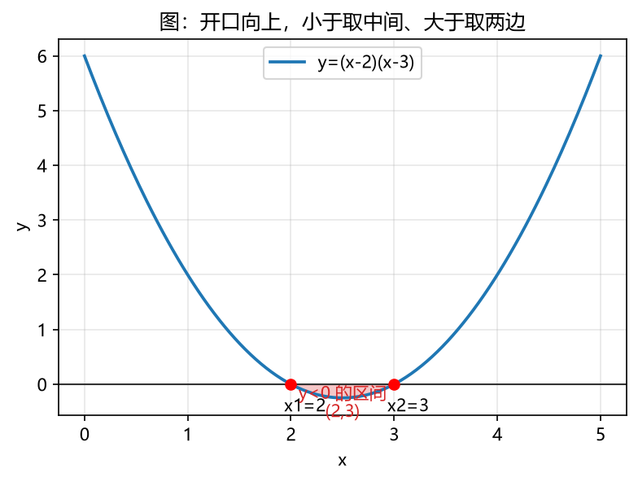
例题跟讲例题：解 x2 − 5x + 6 < 0。 解：分解 (x−2)(x−3)<0，开口向上，"小于取中间"，解集 2<x<3，写成区间 (2,3)。
再跟一道（Δ = 0 的情形）：解 x2 − 4x + 4 > 0。 解：分解 (x−2)2>0。开口向上且正好与 x 轴相切于 x = 2，除了切点本身，其余地方都在 x 轴上方。所以解集是 x≠2 的全体实数（写成 (−∞,2)∪(2,+∞)）。如果题目改成 (x−2)2≥0，那解集就是全体实数 R；改成 (x−2)2≤0，则只有 x = 2 一个点。
常见陷阱：a<0 忘了先变号；Δ<0 时把解集写成空集（开口向上时应是 R）。
高次/分式不等式——数轴穿根法（苏州教研·专题38）
遇到 (x−x1)(x−x2)…(x−xn)>0 这种一次因式乘积，或 f(x)/g(x)>0 这种分式，不用每个区间讨论，画一条波浪线就行：
- 把所有根 x1≤x2≤…≤xn 标在数轴上（每个因式 x 的系数必须先化成正）；
- 从最右端根的上方开始，从右往左画波浪线：奇数次根穿过数轴，偶数次根碰一下就弹回（不穿过）；
- 线在数轴上方的区间就是 >0 的解集，下方就是 <0 的解集。
苏州书顺口溜："原式化为标准形，数轴上面标出根，奇穿偶切画曲线，上正下负解集明。"分式不等式 f(x)/g(x)>h(x) 先移项通分，化成一个分式再穿根。
绝对值不等式互化（苏州教研·专题38）：
|f(x)| < g(x) ⇔ −g(x) < f(x) < g(x)（g(x) 必须 >0）
|f(x)| > g(x) ⇔ f(x) > g(x) 或 f(x) < −g(x)
|f(x)| > |g(x)| ⇔ f2(x) > g2(x)（两边都是绝对值，直接平方）
|x−a|+|x−b|（a<b）的几何意义：数轴上点 x 到 a、b 两点的距离之和。最小值就是 |a−b|（x 在 a、b 之间时取得）；x 在 a 左边或 b 右边每往外移 Δx，距离和就增加 2Δx。解这类题三种办法：零点分段去绝对值、画函数图像、用几何意义。
3.2 基本不等式（核心，高考必考）
引入：用一根长固定的绳子围矩形菜园，围成正方形时面积最大——这是古人就知道的事实。为什么？因为"和一定时，两数越接近乘积越大"，这背后就是基本不等式。
定义：对任意两个正数 a、b，有 √(ab) ≤ (a+b)/2，等号当且仅当 a = b 时成立。 其中 (a+b)/2 叫 a、b 的算术平均数，√(ab) 叫几何平均数。一句话：两个正数的几何平均不超过它们的算术平均。
怎么证：因为 a、b>0，对 √a−√b 平方得 (√a−√b)2≥0，展开 a+b−2√(ab)≥0，移项即 √(ab)≤(a+b)/2；a = b 时等号成立。
几何解释（半圆模型）：把线段 AB 长 a+b 放在直径上，C 点把直径分成 a 和 b 两段，过 C 作直径的垂线交半圆于 D，则 CD = √(ab)（由射影定理），而半圆半径是 (a+b)/2。垂线永远不超过半径，所以 √(ab)≤(a+b)/2。
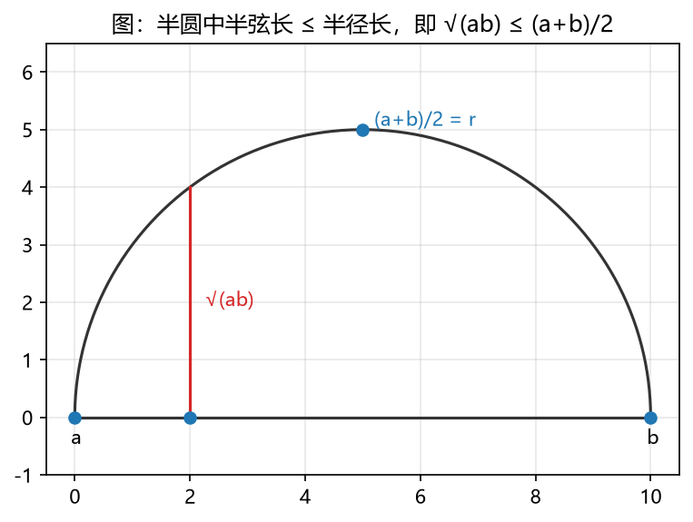
三个常用变形（务必滚瓜烂熟）：
- a+b ≥ 2√(ab)（和 ≥ 两倍根号积）
- ab ≤ [(a+b)/2]2（积 ≤ 半和的平方）
- a2+b2 ≥ 2ab（这条对任意实数都成立，不限正数）
求最值三条件（口诀：一正、二定、三相等）：
- 一正：各项必须是正数，否则不等式不成立；
- 二定：求和的最小值，就要"积为定值"；求积的最大值，就要"和为定值"；
- 三相等：一定要能取到 a = b，否则这个最值是假的。
两个方向：
- 积 xy = p（定值）⇒ x+y ≥ 2√p，x = y 时和最小为 2√p；
- 和 x+y = s（定值）⇒ xy ≤ s2/4，x = y 时积最大为 s2/4。
对勾函数：x>0 时 x+1/x ≥ 2√(x·1/x) = 2，x = 1 取等；x<0 时提负号，x+1/x ≤ −2。
例题跟讲例题：x>0，求 x+4/x 的最小值。 解：x·(4/x) = 4 为定值，x+4/x ≥ 2√4 = 4，当 x = 4/x 即 x = 2 时取等。三条件：x>0（正）✓、积定 4 ✓、x = 2 可取 ✓。
再跟一道（高考最热的"1 的代换"）：已知 x>0，y>0，x+y = 1，求 1/x+1/y 的最小值。 解：把"1"换成 x+y 乘进去：1/x+1/y = (x+y)(1/x+1/y) = 1+x/y+y/x+1 = 2+(x/y+y/x) ≥ 2+2 = 4，当 x/y = y/x 即 x = y = 1/2 时取等。这招叫"1 的代换"，见到"和为 1、求倒数和"就用它。
小结：基本不等式就是"和与积互相挤"；用前先查一正二定三相等。
编者注·本质回扣：基本不等式为什么长这样？它其实就是本质核心"比较大小"里最常用的一把尺：两个正数的和与积，谁也不能同时无限占优——和一定时积有顶（围菜园正方形最大），积一定时和有底。所谓"一正二定三相等"，说白了就是先确认这把尺能用（各项为正）、再看准固定的是和还是积、最后保证等号真能取到。你看到的"1 的代换"、对勾函数 x+1/x≥2，都不是新公式，只是把这把尺换个场景再量一遍而已。
三元均值与平方平均（苏州教研·专题37）：
(a+b+c)/3 ≥ ∛(abc)（a,b,c>0），等号当 a = b = c 时成立
- 大白话：三个正数的算术平均不小于几何平均，是二元基本不等式的推广。
- 用的时候：见到三个正数的和求积的最大值，或积求和的最小值，直接套。
(a2+b2)/2 ≥ ((a+b)/2)2（任意实数 a,b）
- 大白话：平方的平均不小于平均的平方。
- 用的时候：已知 a+b 求 a2+b2 的下界，或反过来；这是柯西不等式的二维特例。
糖水不等式推广（苏州教研·专题37）：若 a>b>0，m>0，n>0，则
b/a < (b+m)/(a+m) < 1 < (a+n)/(b+n) < a/b
- 大白话：真分数越加越大，假分数越加越小。一杯淡糖水（b/a）再加点糖（m）反而更甜；一杯浓糖水（a/b）再加点水（n）反而更淡。
- 用的时候：比较两个形如 (a+m)/(b+m) 的分数大小，直接用这个结论秒选。
混合浓度不等式：A 杯浓度 a%、B 杯浓度 b%（a>b），各取 x、y 克混合，则混合浓度介于两者之间：b < (ax+by)/(x+y) < a。
3.3 恒成立问题
引入："不管 x 取什么值，这个式子都 ≥0"——比如"对所有实数 x，x2+ax+4≥0 恒成立，求 a"。这类题的套路是：把恒成立翻译成最值。
两条主路：
- 分离参数：a ≤ f(x) 对一切 x 恒成立 ⇔ a ≤ f(x) 的最小值；a ≥ f(x) 恒成立 ⇔ a ≥ f(x) 的最大值。
- 判别式法（二次型）：开口向上的二次函数 ax2+bx+c≥0 恒成立 ⇔ 判别式 Δ≤0（图像整段在 x 轴上方或相切）。
例题跟讲例题：对 ∀x∈R，x2+ax+4≥0 恒成立，求 a。 解：开口向上，只需 Δ = a2−16≤0 ⇒ −4≤a≤4。
再跟一道（分离参数）：若 x>0 时，a ≤ x + 1/x 恒成立，求 a 的最大值。 解：要 a 不超过右边的一切取值，只要 a 不超过右边的最小值。x+1/x≥2，最小值为 2，所以 a≤2，a 的最大值是 2。这就是"恒成立 → 求最值"的标准动作。
常见陷阱：x2 系数含字母 k 时，必须先讨论 k = 0（变成一次式），不能直接套判别式。
3.4 不等式的性质与比较大小
引入：等式两边随便加减乘除同一个数（除数非零）都不变号，但不等式"娇气"——两边乘负数要变号。这一节把这些脾气说清楚。
基本性质（由浅入深）：
- 传递性：a>b，b>c ⇒ a>c；
- 可加性：a>b ⇒ a+c>b+c；同向可加：a>b，c>d ⇒ a+c>b+d；
- 乘正数不变号：a>b，c>0 ⇒ ac>bc；乘负数变号：a>b，c<0 ⇒ ac<bc；
- 同正可乘：a>b>0，c>d>0 ⇒ ac>bd；
- 同方可开方：a>b>0 ⇒ an>bn，n√a>n√b。
比较大小两招：作差法（a−b 的正负定大小）、作商法（同正时 a/b 与 1 比）。
例题跟讲例题：比较 (a+1)(a−5) 与 (a+2)(a−4) 的大小。 解：作差 (a+1)(a−5)−(a+2)(a−4) = (a2−4a−5)−(a2−2a−8) = −2a+3。a<3/2 时差为正，前者大；a = 3/2 相等；a>3/2 后者大。
再跟一道（糖水不等式直觉）：比较 a/b 与 (a+m)/(b+m)（0<a<b，m>0）。 解：作差 a/b−(a+m)/(b+m) = [a(b+m)−b(a+m)]/[b(b+m)] = (am−bm)/[b(b+m)] = m(a−b)/[b(b+m)]<0。所以 a/b<(a+m)/(b+m)。生活直觉：一杯淡糖水再加点糖反而更甜，就是这个道理。
小结：不等式两边乘除要盯符号；比大小先作差，定号看因式。
编者注·本质回扣：作差法 a−b 其实就是把"谁大谁小"这句话翻成一个数：差为正前者大、差为负后者小、差为零相等。你也许会问，为什么不等式两边乘负数要变号？本质还是"比较"——乘一个负数相当于把数轴方向整个反过来，原来靠左的变得更小、靠右的变得更大，大小关系自然跟着颠倒。所以这一节列的那些性质，不是要你死背的死规矩，而是"大小关系在加减乘除、平方开方这些操作下怎么跟着变"的一本账；做题时盯住符号，就是盯住这本账有没有记反。
3.5 证明不等式的常用方法（苏州教研·专题40）
证明题拿到手，先挑方法。苏州书总结了七把"刀"：
1. 比较法（最常用）：作差 a−b，变形（因式分解/配方/通分），定号；两个正数也可作商 a/b 与 1 比。苏州书提醒：两个正数作差有困难时，可改比平方差；无理数比大小，分子/分母有理化是常用手段。
2. 综合法：由因导果——从已知条件出发，用定理、公式一步步推出结论。书写顺、看着像"标准答案"。
3. 分析法：执果索因——从要证的结论倒推，找它成立的充分条件，直到归结为已知或显然成立。苏州书要求：书写尽量用"⇔"符号，每一步都是等价变形。思路卡壳时用分析法找路，找到后再用综合法写出来。
4. 反证法：正难则反——假设结论不成立，推出矛盾（与已知/假设/定理矛盾），从而断定原结论成立。三步：反设、归谬、结论。
5. 放缩法：把不等式一侧适当放大或缩小。常用技巧（苏州书原话）： - 添加或舍去一些项，如 √(n2+1) > √n2 = |n|；√(n(n+1)) < √(n2+n+¼) = n+½； - 分子或分母单独放大/缩小； - 用均值不等式放缩，如 √(lg3·lg5) < (lg3+lg5)/2 = lg√15 < lg4； - 对应项一一放大，如 Ank ≤ nk。
放缩的分寸：不能过度、不能过早——放太大直接超过目标，证不出来；首项不吻合就从第二项起放。
6. 换元法：减少变量，化难为易。苏州书给的常用模板： - 已知 x2+y2 = a2，设 x = a·cosθ，y = a·sinθ（三角换元）； - 已知 a2≤x2+y2≤b2，设 x = r·cosθ，y = r·sinθ（a≤r≤b）； - 椭圆 x2/a2+y2/b2 = 1 同理设 x = a·cosθ，y = b·sinθ。
7. 构造法：构造方程（判别式法）、构造数列、构造向量、构造辅助函数。函数型不等式通常构造差函数 F(x) = f(x)−g(x)，再用单调性证明（这要学了导数才用得上）。
8. 数学归纳法：与正整数 n 有关的不等式，两步走（奠基+递推），第二步常用分析法找思路。
【跟讲例题（苏州教研·专题40，原书p.143）】：设数列 {an} 满足 an+1 = an2 − n·an + 1，n∈N*。当 a1≥3 时，证明：① an≥n+2；② 1/(1+a1)+1/(1+a2)+…+1/(1+an) < 1/2。 证明①（数学归纳法）： n = 1 时，a1≥3 = 1+2，成立。 假设 n = k 时 ak≥k+2，则 ak+1 = ak(ak−k)+1 ≥ (k+2)·[(k+2)−k]+1 = (k+2)·2+1 = 2k+5 = (k+1)+2+(k+2) ≥ (k+1)+2。 故 n = k+1 时也成立。由归纳法，an≥n+2 对所有 n 成立。 证明②（放缩法）：由 an≥n+2 得 an−n≥2，于是 an+1+1 = an(an−n)+2 ≥ 2an+2 = 2(an+1)。 累乘：an+1 ≥ (a1+1)·2n−1 ≥ 4·2n−1 = 2n+1，故 1/(1+an) ≤ 1/2n+1。 求和：Σ_{k = 1}^{n} 1/(1+ak) ≤ 1/4+1/8+…+1/2n+1 = (1/4)·[1−(1/2)n]/(1−1/2) = (1/2)·[1−(1/2)n] < 1/2。证毕。 要点：归纳法证"下界"→ 用下界做放缩的跳板 → 转等比求和。这是苏州书说的"数列不等式证明"标准流水线。
3.6 含参数不等式的讨论标准（苏州教研·专题39）
解含字母参数的不等式 ax2+bx+c>0，什么时候需要分类讨论？苏州书给了三条"讨论标准"：
- 二次项系数含字母：先令它 = 0（退化为一次式），这是第一个分界；
- 能因式分解的题型：令各因式的根相等 x1 = x2，解出参数值；
- 不能因式分解的题型：令判别式 Δ = 0，解出参数值。
讨论完一定要写"综上所述，原不等式的解集是……"（分类整合思想）。
反用：如果不等式的解集已经给你了，那解集的端点值一定是对应方程 ax2+bx+c = 0 的根——可以直接代进去求参数。
④ 例题详解（先做再看）
例题例 1（二次不等式）：解不等式 x2 − 5x + 6 < 0。
自己做：因式分解 → 小于取中间。
解：x2 − 5x + 6 = (x − 2)(x − 3) < 0，开口向上，"小于取中间"：2 < x < 3。 要点：先看开口，再写区间；解集写成区间形式 (2, 3)。
例题例 2（基本不等式求最值，高考经典）：已知 x > 0，y > 0，且 x + y = 1，求 1/x + 1/y 的最小值。
自己做：把 1 换成 x + y（"1 的代换"）。
解：1/x + 1/y = (x + y)/(xy) = 1/(xy)。由 xy ≤ [(x+y)/2]2 = 1/4 ⇒ 1/(xy) ≥ 4。 或用"1 的代换"：1/x + 1/y = (x+y)(1/x + 1/y) = 2 + x/y + y/x ≥ 2 + 2 = 4。 取等 x = y = 1/2。最小值 4。 要点："积定求和最小"方向：xy 有上界 ⇒ 1/x + 1/y 有下界；"1 的代换"是最高频技巧。
例题例 3（恒成立）：若对 ∀x ∈ R，x2 + ax + 4 ≥ 0 恒成立，求 a 的范围。
自己做：开口向上，判别式 ≤ 0。
解：Δ = a2 − 16 ≤ 0 ⇒ −4 ≤ a ≤ 4。 要点：二次函数恒非负（a > 0）⇔ Δ ≤ 0；这是小题秒杀结论。
⑤ 出口检测
自测（15 分钟，每题 2 分）：
- 解不等式 x2 − 4 > 0。
- 已知 x > 0，求 x + 4/x 的最小值。
- 已知 a > 0，b > 0，ab = 9，求 a + b 的最小值。
- 解不等式 x2 − 2x + 3 > 0（注意 Δ）。
- 对 ∀x ∈ R，kx2 + kx + 1 > 0 恒成立，求 k 的范围（k = 0 单独考虑）。
真题验收：2020–2024 新高考Ⅰ卷基本不等式/恒成立小题 1~2 道（多在选择题 7–12 题区间）：每题 3 分钟、全对过关。
过关标准：自测 ≥ 10 分 且 真题全对 → 打卡。
课后习题（分层练习）
A 组教材练习级，B 组高考中档，C 组真题。答案见章末。
A 组 · 基础巩固
1.【考点：解二次不等式】解不等式 x2 − 5x + 6 > 0。 2.【考点：基本不等式求最值】已知 x > 0，求 x + 9/x 的最小值。 3.【考点：积定求和最小】已知 a>0，b>0，ab = 16，求 a + b 的最小值。 4.【考点：Δ<0 情形】解不等式 x2 − 2x + 3 > 0。 5.【考点：小于取中间】解不等式 (x − 1)(x + 2) ≤ 0。 6.【考点：1 的代换】已知 x>0，y>0，x + 2y = 1，求 1/x + 1/y 的最小值。
B 组 · 能力提升
7.【考点：恒成立判别式】若对 ∀x∈R，x2 + ax + 9 ≥ 0 恒成立，求 a 的取值范围。 8.【考点：含参二次不等式】解关于 x 的不等式 x2 − (a+1)x + a < 0（a 为常数）。 9.【考点：对勾函数】求 f(x) = 2x + 8/x（x>0）的最小值，并指出取等条件。 10.【考点：恒成立分类讨论】若 kx2 + kx + 1 > 0 对一切实数 x 恒成立，求 k 的取值范围。
C 组 · 真题挑战
11.【考点：比较大小】（2025 年新高考Ⅰ卷·选择题第 8 题）若实数 x、y、z 满足 2 + log2x = 3 + log3y = 5 + log5z，则 x、y、z 的大小关系不可能是（ ）。 A. x>y>z B. x>z>y C. y>x>z D. y>z>x （说明：本题融合对数运算与不等式比较大小，是"不等式性质 + 对数"的综合小题；可借助中间值与作差比较分析。）
⑥ 常见坑清单
- 一正：基本不等式只对正数成立，x < 0 时要先提负号或加绝对值。
- 三相等：等号取不到时最值不成立——a = b 是否可取得先检验。
- 解不等式"大于取两边"前提是开口向上且因式分解正确；a < 0 先变号。
- Δ < 0 时 ax2 + bx + c > 0 的解集是 R（a > 0）或 ∅（a < 0），别写反。
- 恒成立"分离参数"：分离后别忘了定义域对参数的约束。
- 1/x + 1/y 类题优先想"1 的代换"或直接 xy 上下界。
本章公式速查表
口径与《高中数学常用公式·修订版》第九部分（不等式）一致。
均值不等式（基本不等式）
√(ab) ≤ (a+b)/2 ≤ √[(a2+b2)/2]（a,b ≥ 0）
- 大白话：两个正数的几何平均 ≤ 算术平均 ≤ 平方平均，一串从小到大。
- 用的时候：高考最常用中间一段 √ab ≤ (a+b)/2；必须满足"一正二定三相等"。
- 记忆要点：几何平均不超过算术平均。
三个变形：a+b ≥ 2√(ab)；ab ≤ [(a+b)/2]2；a2+b2 ≥ 2ab
- 大白话：和与积互相挤——知道和求积用第二式，知道积求和用第一式。
- 用的时候：第三条 a2+b2≥2ab 对任意实数都成立，不限正数；前两条要 a,b>0。
极值定理（求最值）
积定：xy = p（定值）⇒ x+y ≥ 2√p，x = y 时和最小为 2√p
- 大白话：两个正数乘积固定，它们相等时加起来最小。
- 用的时候："积定"求"和"的最小值；对勾函数 x+1/x≥2 就是它。
和定：x+y = s（定值）⇒ xy ≤ s2/4，x = y 时积最大为 s2/4
- 大白话：两个正数加起来固定，它们相等时乘积最大。
- 用的时候："和定"求"积"的最大值；用前先检查 a=b 能不能取到。
"1 的代换"：x+y = 1 时 1/x+1/y = (x+y)(1/x+1/y) ≥ 4
- 大白话：见到"和为 1、求倒数和"，把 1 换成 x+y 乘进去展开。
- 用的时候：展开后用 x/y+y/x ≥ 2；取等 x=y=1/2。
一元二次不等式
a>0 时：(x−x1)(x−x2)>0 ⇒ x<x1 或 x>x2；<0 ⇒ x1<x<x2
- 大白话：开口向上，"大于取两边，小于取中间"。
- 用的时候：先把 a 化成正数再因式分解；Δ<0 时 >0 解集是 R、<0 解集是空。
恒成立问题
ax2+bx+c ≥ 0 对一切 x 恒成立 ⇔ a>0 且 Δ = b2−4ac ≤ 0
- 大白话：开口向上的抛物线全程贴在 x 轴上方或相切。
- 用的时候：二次项含字母 k 时先讨论 k=0（变一次式），别直接套判别式。
分离参数：a ≤ f(x) 恒成立 ⇔ a ≤ f(x)_min；a ≥ f(x) 恒成立 ⇔ a ≥ f(x)_max
- 大白话：要恒成立，参数就得不超过右边的最小值（或不小于最大值）。
- 用的时候：分离后别忘了定义域对参数的限制。
比较大小与常用结论
作差法：a−b 的正负定大小；作商法：同正时 a/b 与 1 比
- 大白话：比大小先作差，把结果因式分解再看每段正负。
对勾函数：x>0 时 x + 1/x ≥ 2（x = 1 取等）；x<0 时提负号得 ≤ −2
- 大白话：正数和它倒数的和，最小值是 2。
绝对值：|x|<a（a>0）⇔ −a<x<a；|x|>a ⇔ x>a 或 x<−a
- 大白话：小于夹中间，大于取两边。
三元均值与平方平均（苏州教研·专题37）
(a+b+c)/3 ≥ ∛(abc)（a,b,c>0）；(a2+b2)/2 ≥ ((a+b)/2)2
- 大白话：三个正数的算术平均 ≥ 几何平均；平方的平均 ≥ 平均的平方。
- 用的时候：三个正数和定求积最大、积定求和最小套第一式；已知 a+b 求 a2+b2 下界套第二式。
糖水不等式：a>b>0，m>0 ⇒ b/a < (b+m)/(a+m) < 1
- 大白话：真分数越加越大，假分数越加越小；淡糖水加糖更甜。
- 用的时候：比较 (a+m)/(b+m) 这类分数大小直接秒选。
绝对值与高次不等式工具（苏州教研·专题38）
|f(x)| < g(x) ⇔ −g(x)<f(x)<g(x)；|f(x)|>|g(x)| ⇔ f2(x)>g2(x)
- 大白话：带 g(x) 的绝对值不等式，拆开或平方。
- 用的时候：两边都是绝对值直接平方；一边是 g(x) 就拆成双向不等式。
数轴穿根法：一次因式乘积 >0，从右往左、奇穿偶切，上正下负
- 大白话：根标在数轴上，波浪线穿过去，线上方的区间就是解。
- 用的时候：每个因式 x 的系数先化成正；分式先移项通分再穿。
|x−a|+|x−b|（a<b）最小值 = |a−b|
- 大白话：数轴上一点到两定点距离之和，点在两定点之间时最小。
证明不等式的方法选择（苏州教研·专题40）
比较法（作差/作商）→ 综合法（由因导果）→ 分析法（执果索因，用⇔）→ 反证法 → 放缩法 → 换元法 → 构造法 → 数学归纳法
- 大白话：证不等式八把刀，按题目形状挑。
- 用的时候：思路卡壳用分析法倒推；证 n 有关命题用归纳法；函数型不等式构造差函数（学导数后用）；放缩不能过度、首项不吻合就延迟放。
含参讨论三条线：二次项系数 = 0、两根相等、Δ = 0
- 大白话：参数临界值就是让"退化"发生的那些点。
- 用的时候：讨论完写"综上所述"；已知解集反求参数时，端点代入方程。
高级方法·进阶
对应《不超纲高级方法手册》第四部分"不等式"。
进阶 1：基本不等式"三件套"
适用信号：给了一个和（或积）的定值，求另一个式子的最值。 操作步骤：
- 1 的代换：已知 x+y = 1，求 1/x+1/y——乘 (x+y)，展开后用 x/y+y/x≥2；
- 和积转化：已知 x+y 与 xy 关系，用 (x+y)2≥4xy 搭桥；
- 换元化齐次：出现 a/b，令 t = a/b 消元。 例题：x+2y = 1 求 1/x+1/y = (x+2y)(1/x+1/y) = 3+x/y+2y/x ≥ 3+2√2。 课标依据/红线：基本不等式直接运用，✓ 不超纲（高考可放心用）。
进阶 2：绝对值三角不等式
公式：||a|−|b|| ≤ |a±b| ≤ |a|+|b|。 适用信号：含 |x−a|+|x−b| 的最值问题，比分类讨论快。 课标依据/红线：性质本身属必修基础，✓ 小题可直接用；大题用时建议写一句说明。
进阶 3：切线不等式族（选学）
公式：lnx ≤ x−1（x = 1 取等）、ex ≥ x+1（x = 0 取等）。 适用信号：含 ex、lnx 的不等式证明与比较大小。 课标依据/红线：超纲红线（本章范围内考试禁用）——它要用导数（第 05 章）构造差函数证明，本章尚未学导数。这里只列出来让你有个印象，等学完导数再回来用。
进阶 4：柯西 / 琴生 / 排序不等式（选学·验证用）
课标依据/红线：超纲红线（考试禁用，只用于理解/自检）——不在教材内，答题卡上不要直接引用。
自测答案：1. x < −2 或 x > 2；2. x + 4/x ≥ 2√(x·4/x) = 4，取等 x = 2，最小值 4；3. a + b ≥ 2√9 = 6，取等 a = b = 3，最小值 6；4. Δ = 4 − 12 < 0 且开口向上 ⇒ 解集为 R；5. k = 0 时 1 > 0 成立；k ≠ 0 需 k > 0 且 Δ = k2 − 4k < 0 ⇒ 0 < k < 4；综上 0 ≤ k < 4。
课后习题答案
A 组
- (x−2)(x−3)>0，开口向上，"大于取两边"：x<2 或 x>3。
- x·(9/x)=9 定，x+9/x ≥ 2√9=6，x=3 取等。
- a+b ≥ 2√16=8，a=b=4 取等。
- Δ=(−2)2−12=−8<0，开口向上恒在 x 轴上方，解集为 R。
- 开口向上、"小于取中间"：−2≤x≤1。
- 1/x+1/y=(x+2y)(1/x+1/y)=1+x/y+2y/x+2=3+x/y+2y/x ≥ 3+2√2（x/y=2y/x 即 x=√2 y 取等）。最小值 3+2√2。
B 组
- 开口向上，Δ=a2−36≤0 ⇒ −6≤a≤6。
- 分解 (x−1)(x−a)<0。若 a>1：1<x<a；若 a<1：a<x<1；若 a=1：(x−1)2<0 无解。
- 2x·(8/x)=16 定，2x+8/x ≥ 2√16=8，2x=8/x 即 x=2 取等。
- k=0 时 1>0 成立；k≠0 需 k>0 且 Δ=k2−4k<0 ⇒ 0<k<4。综上 0≤k<4。
C 组
- 设公共值为 k，则 x=2^{k−2}，y=3^{k−3}，z=5^{k−5}。取对数比较：x=y 在 k≈4.71、x=z 在 k≈7.27、y=z 在 k≈9.30 处互换。随 k 从小到大，可能出现的顺序为 x>y>z（A）、y>x>z（C）、y>z>x（D）、z>y>x；唯独 x>z>y（选项 B）不可能，故选 B。
一通百通
遇到本章任何题，本质都是"先把谁和谁比说清楚，再算这个差（或比值）的符号"：解二次不等式先求根、看开口，套"大于取两边、小于取中间"；求最值先认准"一正二定三相等"——和定就挤积的最大值、积定就挤和的最小值；恒成立先翻译成"参数 ≤ 右边的最小值"或"参数 ≥ 右边的最大值"。会这一套，解二次不等式、用基本不等式求最值、证不等式就是同一把"比较大小"尺子的不同量法。这套"先翻译大小关系、再定符号"的骨架，后面函数值域（02）、导数求单调与最值（05）里还会一再用到。
跨章结合
- 本章二次不等式 × 第 02 章二次函数：解一元二次不等式根本不是另一套技术，就是把二次函数图像"翻下来"读——抛物线在 x 轴上方对应的 x 区间就是 >0 的解。想通这一点，你不用记"大于取两边、小于取中间"的口诀也能自己画出解集；Δ 的三种情况、开口方向全由图像决定。（综合原理说明，非真题）
- 本章比较与放缩 × 第 11 章数列：数列里的不等式证明，是"数列递推"和"不等式放缩"两件事碰在一起——先用数学归纳法把通项压出一个下界（如 an≥n+2），再用不等式把每一项放大成等比数列，最后求和。本章 3.5 那道苏州教研题（an+1=an2−nan+1，原书 p.143）正是这个结合的样板。（苏州教研·专题40）
本章与前后章
按全书蓝图，12 章的前置是第 02 章函数——解二次不等式靠二次函数图像"翻下来读解集"，因式分解、一元二次方程更是初中老本；它和第 11 章数列同属"数列+不等式"这一阶段，数列题里的放缩、求和不等式（如本章 3.5 那道 an+1=an2−nan+1 的经典证明）用的正是本章的比较与最值工具。往后，第 05 章导数求单调区间、极值，本质就是解 f′(x)>0；第 16 章圆锥曲线的"取值范围""恒成立"，也都是不等式的活。学完这章，你手里多了一把"比较大小"的通用尺。
高考怎么考
新高考Ⅰ卷里不等式很少单独出大题，主要藏在小题里：基本不等式求最值（"1 的代换"是最高频）、恒成立求参数范围、以及和指对数函数结合的比较大小（如本章 C 组 2025 年卷第 8 题）。二次不等式的解法则更多作为函数、数列、解析几何题的中间步骤出现，不单独成题。位置多在选择题中段，难度中档，3 分钟内拿下——它考的不是背公式，而是"把谁和谁比"一眼看对。
立体几何初步
公式速查：修订版 第4部分（立体几何）
本章本质核心：立体几何初步的本质是"把空间里的问题降维到平面来解决"——人脑只会算平面图形，所以学立体几何就是想办法把三维图形"拍扁"成二维：展开图把侧面铺平成矩形或扇形、截面把球切出一个圆、斜二测把立体画成平面直观图；而四个公理、平行与垂直的判定定理，就是允许你这样"拍扁"和"翻译"的通行证。本章所有公式（体积表面积、球截面、展开最短路径）与所有证明（线面平行、线面垂直），都是"降维"这一个动作的变体。
为什么有用：想通"把三维拍回平面"这个办法，你就能看懂并算准身边的立体——给一个柱锥台球，会算它占多大地方（体积）、包它要多少料（表面积）；给空间里几根线几个面，能判断并证明它们平行还是垂直。锥体为什么是 1/3、展开图怎么找最短路、线面平行怎么证，都能顺着"降维"自己想明白，而不是硬背一堆公式和判定。
① 门槛自测（进章前，10 分钟）
- 长方体的体积公式是什么？
- 圆的面积、周长公式是什么？
- 圆柱的侧面展开是什么形状？
- 正方体有几条棱、几个面？
- 两个平面"平行"和"垂直"在生活中分别是什么样子？
判定：5 题答对 4 题以上 → 进章。
② 学习目标
- 认识柱、锥、台、球的几何特征
- 掌握常见几何体（柱锥台球）的表面积与体积公式
- 掌握空间点、线、面的位置关系：平行与垂直的判定和性质
- 掌握线面平行/垂直、面面平行/垂直的证明（大题第 1 问常考）
③ 正文讲解
本章地图：
- 3.1 认识空间几何体：柱、锥、台、球长什么样。
- 3.2 表面积与体积：套公式，关键别漏 1/3。
- 3.3 空间点线面的位置关系：四个公理和符号。
- 3.4 平行关系：证明"线面平行""面面平行"。
- 3.5 垂直关系：证明"线面垂直""面面垂直"。
- 3.6 外接球与等体积法：两类高频小题的套路。
3.1 空间几何体
引入：把一个水杯放在桌上，从正面看是长方形，从上面看是圆——同一个物体，不同方向长得不一样。这一章我们就要在脑子里"转动物体"，认清柱、锥、台、球这些最常见的立体。
四类基本几何体：
- 棱柱：上下两个面是全等且平行的多边形，侧面都是平行四边形，侧棱互相平行。上下底面是三角形叫三棱柱，四边形叫四棱柱。
- 棱锥：一个多边形底面，其余各面是有公共顶点的三角形。底面是正多边形、顶点在底面的投影是底面中心时叫正棱锥。
- 棱台：用平行于棱锥底面的平面去截锥体，截下来的"中间那段"就是棱台。
- 球：半圆绕它的直径旋转一周形成的旋转体。
圆柱、圆锥、圆台是棱柱、棱锥、棱台的"旋转版本"——把多边形底面换成圆。
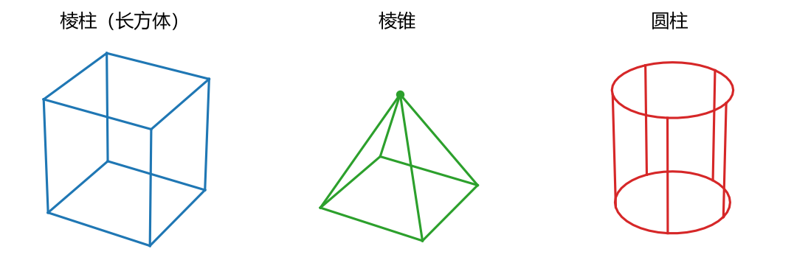
特殊结论：
- 长方体长宽高 a、b、c，体对角线 l = √(a2+b2+c2)；
- 正方体棱长 a，体对角线 √3a；
- 正四面体（棱长 a）：高 √6/3·a，外接球半径 √6/4·a。
例题跟讲例题：长方体长宽高 2、3、6，求体对角线。 解：l = √(4+9+36) = √49 = 7。
3.2 表面积与体积公式（必背表）
引入：装水问的是"体积"，包包装纸问的是"表面积"。柱体体积 = 底面积 × 高；锥体为什么要乘 1/3？拿三个一模一样的圆锥装满沙倒到等底等高的圆柱里，正好倒满三次——这就是 1/3 的来历。
核心公式表：
| 几何体 | 体积 | 表面积要点 |
|---|---|---|
| 柱体 | V = S底·h | S = S侧+2S底 |
| 锥体 | V = ⅓·S底·h | S = S侧+S底 |
| 台体 | V = ⅓(S上+S下+√(S上S下))h | S = S侧+S上+S下 |
| 球 | V = (4/3)πR3 | S = 4πR2 |
圆柱侧面积 2πrh、圆锥侧面积 πrl（l 是母线长）要单独记。 圆台侧面积 S = π(r′+r)l（l 是母线长，r′、r 分别是上、下底半径），侧面展开是扇环（苏州教研·专题18）。
球的组合体：长方体外接球直径 = 体对角线；正方体外接球直径 = 体对角线 √3a；正方体内切球直径 = 棱长 a。
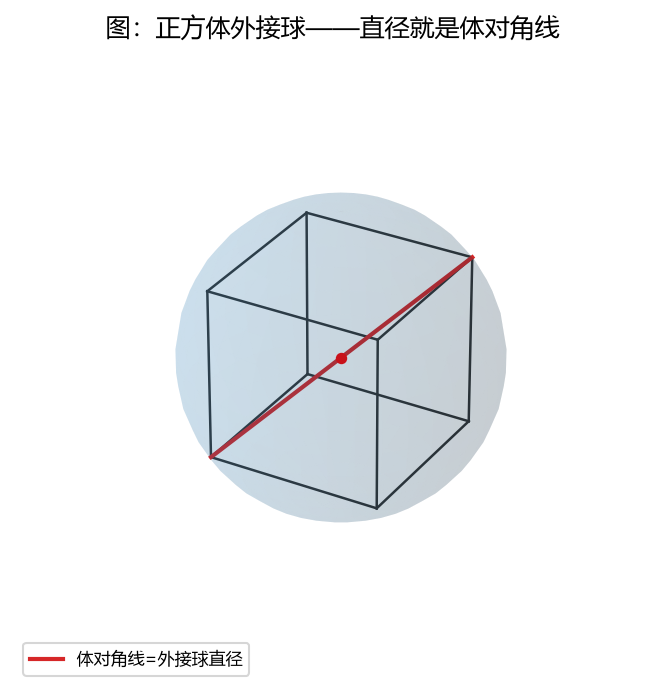
例题跟讲例题：正四棱锥底面边长 2、高 3，求体积。 解：S底 = 4，V = ⅓·4·3 = 4。锥体记得乘 1/3。
再跟一道（球的组合体）：一个圆柱底面半径 2、高 3，它的外接球半径是多少？ 解：圆柱上下底面圆心连线是高，中点到圆周上一点的距离就是半径。球心在圆柱中截面处，到下底边缘点：水平 2、竖直 3/2，故 R = √(22+(3/2)2) = √(4+9/4) = √(25/4) = 5/2。
球的截面（苏州教研·专题18）：一个平面截球，截面是个圆；过球心与截面圆心的连线垂直于截面。若球半径 R、截面圆半径 r、球心到截面的距离为 d，则 d2 = R2 − r2。
- 大白话：截面离球心越远，截面圆越小，这就是截面里的勾股定理。
- 用的时候：球半径、截面圆半径、球心到截面距离，知二求一。
展开图上的最短路径（苏州教研·专题18）：柱、锥、台的侧面都能展开成平面；几何体表面上两点间的最短距离（或蚂蚁沿侧面爬行、绕侧面几周的最短路程），就是把侧面剪开平铺成平面后两点间的线段长。
- 大白话：把立体侧面"剪开平铺"，在平面上量直线距离。
- 用的时候：见到"沿侧面绕行""表面两点最短"，先展开放平再套勾股。
斜二测画法的面积比（苏州教研·专题18）：水平放置的平面多边形画成斜二测直观图后，直观图面积 S′ 与原面积 S 的关系是 S′ = S / (2√2)，即 S = 2√2·S′。
- 大白话：直观图被"压扁"，面积只剩原图的 1/(2√2)。
- 用的时候：由直观图反求原图形面积就乘 2√2；正向画直观图就除以 2√2。
常见陷阱：锥体体积 1/3 别丢；台体公式里的 √(S上S下) 别漏。
编者注·本质回扣：这一节里"展开图最短路径""球的截面 d2 = R2−r2""斜二测面积比"看着像三块零散结论，本质却是同一个动作——把三维问题压回二维。蚂蚁沿侧面爬最短，靠的是把侧面剪开平铺后用"两点之间线段最短"这条平面公理；球的截面离球心越远截面圆越小，用的是截面圆里的勾股定理；斜二测面积被压成 1/(2√2)，也是先想清楚"平面上原来的图被缩成了什么样"。说白了，只要你能把空间里的量挪到一个平面上去算，立体就立刻退化成你初中就熟的平面几何。
3.3 空间点、直线、平面的位置关系
引入：一支笔（直线）放在桌面上（平面内），还是悬空（平面外）？两支笔可能平行、相交、或既不平行也不相交（异面）。把这些关系用符号说清楚，后面证明才有依据。
四个公理（了解即可，重点用后两个）：
- 不共线的三点确定一个平面；
- 两个平面若有一个公共点，就有一条过该点的公共直线；
- 过直线外一点，有且只有一条直线与已知直线平行；
- 平行于同一直线的两条直线互相平行（平行传递）。
符号：直线在面内 a⊂α；直线在面外 a⊄α；相交 a∩b = P；平行 a∥b。
例题跟讲例题：直线 a⊂α，直线 b⊂α，且 a∥b，能推出 a∥α 吗？ 解：不能！因为 a 已经在平面 α 内了。线面平行要求直线在平面外。
确定平面的三个推论（苏州教研·专题19）：由"不共线三点确定一个平面"（公理2），还推出三条同样好用的定平面依据——
- 过一条直线和直线外一点，有且只有一个平面；
- 过两条相交直线，有且只有一个平面；
- 过两条平行直线，有且只有一个平面。
大白话：只要手里有"三点不共线""一直线加线外一点""两条相交线""两条平行线"中的任意一种，就能定一个平面——后面证"若干线共面"全靠它。
等角定理（苏州教研·专题19）：空间中如果两个角的两边分别对应平行，那么这两个角相等或互补。
- 大白话：两组边分别同向平行，角相等；其中一组方向反过来，就互补。
- 用的时候：定义异面直线所成角时，把两条异面直线平移成相交线来量，依据就是它。
3.4 平行关系（证明题核心）
引入：要证明"一条线平行于一个面"，最省力的办法不是去量线和面的夹角，而是在面里找一条和它平行的线——这就是线面平行的判定。
线面平行：
- 判定定理：平面外一条直线与平面内一条直线平行 ⇒ 线面平行。符号：a∥b，b⊂α，a⊄α ⇒ a∥α。
- 性质定理：线面平行，则过该线的平面与已知平面的交线与该线平行。
面面平行：
- 判定：一个平面内的两条相交直线都平行于另一个平面 ⇒ 两平面平行。
- 性质：面面平行，则一平面内任意直线平行于另一平面；被第三个平面截出的交线互相平行。
证明链：证线面平行 → 找线线平行（常用中位线、平行四边形）。
例题跟讲例题：正方体中 E、F 分别是棱 A1B1、A1D1 的中点，证明 EF∥平面 BDD1B1。 解：E、F 是中点，在 △A1B1D1 中 EF 是中位线，故 EF∥B1D1。又 B1D1⊂平面 BDD1B1，EF⊄该平面，由线面平行判定，EF∥平面 BDD1B1。要点：见到"两个中点"，先想中位线。
编者注·本质回扣：证"线面平行"为什么不直接去量线和面的夹角？因为一旦降维成平面，几何就好算了——判定定理的全部意思就是：你要证一条线平行于一个面，不必去碰整个面，只要在这个面里找出一条和它平行的线就行（线线平行推出线面平行）。而"找线线平行"又常常靠中位线、平行四边形这些你初中就熟的平面技巧。所以这一章的证明套路，本质是不断把"面与线"的高维关系，翻译成"线与线"的平面关系；后面证垂直也一模一样，只是把"平行"换成"垂直"——这正是本章本质核心说的"降维通行证"。
3.5 垂直关系
引入：一根旗杆要"立直"，就是它和地面内所有直线都垂直，尤其要和地面上两条相交直线垂直——光和一条垂直不够，因为它还能绕着那条线"倒"下去。
线面垂直：
- 判定：一条直线与一个平面内的两条相交直线都垂直 ⇒ 线面垂直。
- 性质：线面垂直 ⇒ 它垂直于面内任何直线。
面面垂直：
- 判定：一个平面过另一个平面的一条垂线 ⇒ 两平面垂直。
- 性质：两平面垂直，则一个面内垂直于交线的直线垂直于另一个面。
万能思路：
- 证线面平行 → 找线线平行（中位线、平行四边形）；
- 证线面垂直 → 找线线垂直（等腰三角形三线合一、勾股逆定理、直径对直角）。
垂直于同一平面的两条直线平行（苏州教研·专题19）： a⊥α，b⊥α ⇒ a∥b。
- 大白话：都直立在同一个面上的两根杆，互相平行。
- 用的时候：证线线平行的一条冷门但好用的路径。
从教材里提炼的几条常用判定 / 性质（苏州教研·专题19，都可直接当证题依据）：
- 证面面平行：一个面内两条相交直线分别平行于另一个面内两条相交直线 ⇒ 两面平行；垂直于同一条直线的两个平面平行（l⊥α、l⊥β ⇒ α∥β）。
- 证线面垂直：两条平行线中一条垂直一个面，另一条也垂直该面（a⊥α、a∥b ⇒ b⊥α）；两个相交平面都垂直第三个平面，则它们的交线垂直第三个平面（α⊥γ、β⊥γ、α∩β = l ⇒ l⊥γ）。
- 面面垂直的传递：两个平行平面中一个垂直第三个面，另一个也垂直（α∥β、α⊥γ ⇒ β⊥γ）。
- 唯一性：过空间一点，有且只有一条直线垂直于已知平面；过空间一点，有且只有一个平面垂直于已知直线。
三垂线定理及其逆定理（苏州教研·专题19）：设 PA⊥平面 α，直线 a 在 α 内，AO 是斜线 PO 在 α 内的射影——
- 正定理：AO⊥a ⇒ PO⊥a；
-
逆定理：PO⊥a ⇒ AO⊥a。
-
大白话：斜线和平面内一条直线垂直 ⇔ 它的射影也和这条直线垂直。
- 用的时候：见到"面的垂线 PA + 斜线 PO + 面内直线 a"的格局，证线线垂直或找二面角平面角，它是一把快刀。
3.6 外接球与等体积法（高频小题）
外接球补形：凡是"三条棱两两垂直"的墙角形三棱锥，补成长方体，外接球直径就是长方体体对角线，R = ½√(a2+b2+c2)。
等体积法：求点到面的距离（高）时，换一个更好算的顶点和底面，体积不变，反解出高：h = 3V/S底。这比建系算距离省事。
例题跟讲例题：三条侧棱两两垂直且长为 3、4、5 的三棱锥，求外接球半径。 解：补成长方体，R = ½√(9+16+25) = ½√50 = (5√2)/2。
补形模型的几种情形（苏州教研·专题19）：把四面体补成平行六面体（长方体）是求外接球的大招——
- 同一顶点处三条棱两两垂直 ⇒ 补成长方体（墙角形，上面已讲）；
- 三组对棱分别相等 ⇒ 也能补成长方体（见本章例 4）；
- 正四面体 ⇒ 补成正方体；
- 棱台、圆台 ⇒ 分别补回棱锥、圆锥（研究台体别忘了还原成锥体）。
多面体内切球半径：等体积法（苏州教研·专题19）：一个多面体若存在内切球（与所有面都相切），把它从球心处切成若干个以各面为底、内切球半径 r 为高的小棱锥，总体积 V = ⅓·S全·r，故 r = 3V / S全。
- 大白话：内切球心到每个面距离都是 r，把多面体拆成一堆高为 r 的小棱锥，体积加起来就解出 r。
- 用的时候：求三棱锥、多面体内切球半径，别硬画，套 r = 3V/S全。
小结：立体几何证明就两条线——平行找线线平行，垂直找线线垂直；计算套公式，锥体别忘 1/3。
④ 例题详解（先做再看）
例题例 1（体积计算）：正四棱锥底面边长为 2，高为 3，求体积。
自己做：套锥体公式。
解：S 底 = 22 = 4，V = ⅓·4·3 = 4。 要点：锥体记得乘 1/3，柱体不乘。
例题例 2（线面平行证明）：正方体 ABCD−A1B1C1D1 中，E 是棱 CC1 的中点，证明 AC1 ∥ 平面 BDE。
自己做：在平面 BDE 里找一条与 AC1 平行的线。
证：连接 AC 交 BD 于 O（O 为 AC 中点）。连接 OE。 在 △ACC1 中，O 是 AC 中点，E 是 CC1 中点 ⇒ OE ∥ AC1（中位线）。 又 OE ⊂ 平面 BDE，AC1 ⊄ 平面 BDE ⇒ AC1 ∥ 平面 BDE。 要点：中点 → 中位线 → 线线平行 → 线面平行，这是最常用的一条证明链。
例题例 3（球与正方体）：棱长为 2 的正方体的外接球体积是多少？
自己做：体对角线 = 外接球直径。
解：体对角线 = √(4 + 4 + 4) = 2√3 = 2R ⇒ R = √3。V = (4/3)π(√3)3 = 4√3 π。 要点：外接球看对角线，内切球看棱长。
例题例 4（对棱相等·补形求体积与外接球）（苏州教研·专题18，原书p.68）：在四面体 P−ABC 中，PA = BC = √41，PB = AC = √34，PC = AB = 5，求四面体的体积和外接球的表面积。
自己做：三组对棱分别相等，想到补成长方体。
解：设补成的长方体长宽高为 a、b、c，则三组面对角线满足 a2+b2 = 41，a2+c2 = 34，b2+c2 = 25。 三式相加：2(a2+b2+c2) = 41+34+25 = 100 ⇒ a2+b2+c2 = 50。 于是 a2 = 50−25 = 25，b2 = 50−34 = 16，c2 = 50−41 = 9，得 a = 5，b = 4，c = 3。 长方体体积 abc = 5·4·3 = 60。四个角上各切去一个小三棱锥，每个体积为 ⅓·(½ab)·c = ⅙abc = 10，四个共 40，故四面体 V = 60−40 = ⅓abc = 20。 外接球直径 = 长方体体对角线：(2R)2 = a2+b2+c2 = 50，故外接球表面积 S = 4πR2 = π(2R)2 = 50π。 要点：三组对棱分别相等 ⇒ 补成长方体；四面体体积 = ⅓·abc；外接球表面积 = π·(体对角线)2。
例题例 5（线面角·垂足是外心）（苏州教研·专题19，原书p.76）：在四面体 A−BCD 中，DA = DB = DC = a，BC = √2a，∠ADB = ∠ADC = 60°，求直线 DA 与平面 BCD 所成的角。
自己做：先由等长斜线段判断垂足位置。
解：∠ADB = 60°、DA = DB = a ⇒ △ADB 等边 ⇒ AB = a；同理 AC = a。又 DB = DC = a、BC = √2a，DB2+DC2 = a2+a2 = 2a2 = BC2 ⇒ DB⊥DC，即 △BCD 直角在 D。 过 A 作 AO⊥平面 BCD，垂足 O。由 DA = DB = DC（三条斜线段等长）⇒ 它们在平面 BCD 上的射影 OD = OB = OC，即 O 是 △BCD 的外心。 直角三角形 BCD 的外心是斜边 BC 的中点，外接圆半径 OD = ½·BC = √2a/2 = a/√2。 在直角三角形 AOD 中（AO⊥OD）：AO = √(AD2−OD2) = √(a2−a2/2) = a/√2。 ∠ADO 就是 DA 与平面 BCD 所成的角，tan∠ADO = AO/OD = (a/√2)/(a/√2) = 1 ⇒ ∠ADO = 45°。 要点：斜线段等长 ⇒ 射影等长 ⇒ 垂足是底面外心；线面角 = 斜线与它在面内射影的夹角。
⑤ 出口检测
自测（15 分钟，每题 2 分）：
- 圆柱底面半径 2、高 3，求体积与侧面积。
- 三棱锥（底面三角形面积 4、高 6）体积是多少？
- 判断：直线 a ⊂ 平面 α，b ⊂ α，a ∥ b 能推出 a ∥ α 吗？
- 球的体积为 36π，求半径。
- 长方体长宽高 2、3、6，求体对角线。
真题验收：2020–2024 新高考Ⅰ卷立体几何小题 1~2 道（体积/表面积/位置关系，多在选择题 3–7 题区间）＋ 解答题第 1 问（证明平行或垂直）：每题限时完成、全对 → 过关。
过关标准：自测 ≥ 10 分 且 真题达标 → 打卡。
课后习题（分层练习）
A 组 · 基础巩固
1.【考点：正方体表面积体积】正方体棱长为 3，求它的表面积、体积与体对角线长。 2.【考点：圆锥体积侧面积】圆锥底面半径 3、高 4，求体积与侧面积（母线 l = 5）。 3.【考点：球的公式】球的半径为 3，求表面积与体积。 4.【考点：线面平行条件】判断：直线 a⊄平面 α，直线 b⊂α，且 a∥b，能否推出 a∥α？ 5.【考点：长方体对角线】长方体长宽高为 2、3、4，求体对角线长。 6.【考点：棱锥体积】三棱锥底面三角形面积为 6、高为 5，求体积。
B 组 · 能力提升
7.【考点：正方体外接球】棱长为 2 的正方体外接球体积是多少？ 8.【考点：线面平行证明】正方体 ABCD−A1B1C1D1 中，E 是棱 CC1 中点，证明 AC1 ∥ 平面 BDE。 9.【考点：等体积法】三棱锥 P−ABC 中，PA⊥底面 ABC，PA = 3，△ABC 面积为 4，求点 A 到平面 PBC 的高 h（用等体积法思路）。 10.【考点：面面垂直】正方体中，平面 ABCD 与平面 ABB1A1 为什么互相垂直？用判定定理说明。
C 组 · 真题挑战
11.【考点：位置关系多选】（2025 年新高考Ⅰ卷·多选第 9 题）在正三棱柱 ABC−A1B1C1 中，D 为 BC 的中点，则（ ）。 A. AD⊥A1C B. BC⊥平面 AA1D C. CC1∥平面 AA1D D. AD∥A1B1 12.【考点：线面平行证明】（2024 新高考Ⅰ卷·解答第 17 题第 (1) 问）四棱锥 P−ABCD 中，PA⊥底面 ABCD，PA = AC = 2，BC = 1，AB = √3。若 AD⊥PB，证明：AD∥平面 PBC。
⑥ 常见坑清单
- 锥体体积 1/3 别丢；台体公式里的"根号"别漏。
- 线面平行判定：a ⊄ α 是前提，a 在面内就不能用。
- 面面垂直判定：需要"一条线垂直另一个面"，线要在被证明垂直的平面内。
- 外接球 vs 内切球：直径对应体对角线 vs 棱长，别混。
- 三视图已从新高考删除，不考，别花时间。
- 证明线面垂直：必须证与面内两条相交直线垂直，一条不够。
本章公式速查表
口径与《高中数学常用公式·修订版》第四部分（立体几何）一致。
柱锥台球体积
柱体：V = S底·h（圆柱 V = πr2h）
- 大白话：底面积乘高，柱体不乘 1/3。
- 用的时候：柱和锥别混，锥体才要除以 3。
锥体：V = ⅓·S底·h（圆锥 V = ⅓πr2h）
- 大白话：等底等高的柱，锥只占它的三分之一。
- 用的时候：最容易漏的就是这个 1/3，写完先检查。
台体：V = ⅓(S上 + S下 + √(S上·S下))·h
- 大白话：上下底面积和，再加个"上下底面积几何平均"，一起乘高除以 3。
- 用的时候：中间那个 √(S上S下) 别漏；台体可看成锥截出来的。
球：V = (4/3)πR3，表面积 S = 4πR2
- 大白话：球的体积和表面积只跟半径有关。
- 用的时候：表面积是 4πR2，别记成 πR2。
常见几何体表面积
圆柱侧面积 2πrh；圆锥侧面积 πrl（l 是母线长）
- 大白话：侧面展开是个矩形 / 扇形，单独记。
- 用的时候：表面积 = 侧面积 + 两个（或一个）底面积。
正方体棱长 a：体对角线 √3a，表面积 6a2，体积 a3
- 大白话：六个正方形面，对角线跨三个棱。
外接球与体对角线
长方体体对角线 l = √(a2+b2+c2)；外接球直径 = 体对角线
- 大白话：从一个顶点出发三条棱，勾股连套两次就是对角线。
- 用的时候：墙角形三棱锥（三条棱两两垂直）补成长方体，R = ½√(a2+b2+c2)。
正方体：外接球直径 = √3a；内切球直径 = 棱长 a
- 大白话：外接球撑到对角，内切球贴到面。
- 用的时候：外接球看对角线、内切球看棱长，别混。
正四面体（棱长 a）：高 h = √6/3·a，外接球半径 R = √6/4·a
- 大白话：正四面体高约 0.816a，外接球半径是高的 3/4。
- 用的时候：这是记牢的结论，小题直接用。
平行与垂直的判定（证明题）
线面平行：面外一条线 a∥面内一条线 b ⇒ a∥α（要 a⊄α）
- 大白话：在面里找一条和它平行的线就行。
- 用的时候：见到"两个中点"先想中位线；a 在面内就不能用。
面面平行：一个面内两条相交直线都平行于另一面 ⇒ 两面平行
- 大白话：两条相交线都平行，整个面就平行。
线面垂直：一条线垂直于面内两条相交直线 ⇒ 线面垂直
- 大白话：跟面里两条相交线都垂直，才算真立直。
- 用的时候：只证一条不够，必须两条相交。
面面垂直：一个面过另一个面的一条垂线 ⇒ 两面垂直
- 大白话：一个面里竖着一根垂直另一面的线，两面就垂直。
求距离
等体积法：h = 3V/S底
- 大白话：换个好算的顶点和底面，体积不变反解高。
- 用的时候：求点到面的高，建系麻烦时用它。
补充二级结论（苏州教研·专题18/19）
球的截面：d2 = R2 − r2（R 球半径，r 截面圆半径，d 球心到截面距离）
- 大白话：截面离球心越远、截面圆越小，就是截面里的勾股。
- 用的时候：球半径、截面圆半径、球心到截面距离知二求一。
展开图最短路径：侧面展开成平面后，两点间线段最短
- 大白话：蚂蚁爬侧面，剪开平铺量直线。
- 用的时候：绕侧面一周/几周的最短路程，展开后算勾股。
斜二测直观图面积：S′ = S/(2√2)，即 S = 2√2·S′
- 大白话：直观图面积是原图的 1/(2√2)。
- 用的时候：正反面积互算，乘或除 2√2。
三垂线定理：PA⊥α，AO⊥a ⇒ PO⊥a；逆定理：PO⊥a ⇒ AO⊥a
- 大白话：斜线垂直面内直线 ⇔ 它的射影也垂直这条直线。
- 用的时候：证线线垂直、找二面角平面角的快刀。
棱锥顶点在底面射影的位置（苏州教研·专题19）
- 大白话：侧棱相等（或侧棱与底面所成角相等）→ 外心；各侧面与底面二面角相等（或顶点到底面各边等距）→ 内心；两组对棱垂直 / 三条侧棱两两垂直 → 垂心。
- 用的时候：看到"侧棱相等"先想垂足是外心，是作高、定外接球心的依据。
多面体内切球半径：V = ⅓·S全·r ⇒ r = 3V/S全
- 大白话：从球心拆成一堆高为 r 的小棱锥，体积加起来解 r。
- 用的时候：求三棱锥 / 多面体内切球半径专用。
高级方法·进阶
对应《不超纲高级方法手册》第七部分"立体几何"。
进阶 1：外接球"补形模型"速查
适用信号：三棱锥三条棱两两垂直，或"对棱相等"，求外接球半径。 操作步骤：补成长方体，外接球直径 = 长方体体对角线，R = ½√(a2+b2+c2)。 例题：墙角三棱锥三条直角棱长 3、4、5，则 R = ½√(9+16+25) = 5√2/2。 课标依据/红线：球的直径 = 长方体体对角线是教材结论，✓ 不超纲（高考可放心用）。
进阶 2：等体积法求距离
适用信号：求点到平面的距离、求锥体的高，又不想建系。 操作步骤：换一组好算的顶点和底面，体积 V 不变，由 V = ⅓·S底·h 反解 h = 3V/S底。 例题：三棱锥 PA⊥底面，PA = 3，底面 △ABC 面积 4，则 V = ⅓·4·3 = 4；若换用面 PBC 作底，测出其面积即可反求对应高。 课标依据/红线：体积变换是教材内容，✓ 不超纲。
进阶 3：三视图（说明）
课标依据/红线：三视图已从新高考删除，不考，不必花时间；斜二测画法画直观图了解即可。
自测答案：1. V = π·22·3 = 12π；S 侧 = 2π·2·3 = 12π；2. V = ⅓·4·6 = 8；3. 不能（a ⊂ α，需平面外一条直线）；4. (4/3)πR3 = 36π ⇒ R3 = 27 ⇒ R = 3；5. √(4 + 9 + 36) = 7。
课后习题答案
A 组
- 表面积 6·9=54；体积 33=27；体对角线 √3·3=3√3。
- V=⅓π·32·4=12π；侧面积 π·3·5=15π。
- S=4π·32=36π；V=(4/3)π·27=36π。
- 能。a⊄α、b⊂α、a∥b 三条都满足，可以推出 a∥α。
- l=√(4+9+16)=√29。
- V=⅓·6·5=10。
B 组
- 体对角线=√(4+4+4)=2√3=2R ⇒ R=√3。V=(4/3)π(√3)3=4√3 π。
- 连接 AC 交 BD 于 O（O 是 AC 中点），连 OE。在 △ACC1 中 O、E 分别是 AC、CC1 中点，故 OE∥AC1（中位线）。OE⊂平面 BDE，AC1⊄平面 BDE ⇒ AC1∥平面 BDE。
- V=⅓·S底·PA=⅓·4·3=4。等体积法下高由对应底面积决定；此处换顶点后高 h=3V/S△PBC，思路成立（具体数值需先求 △PBC 面积）。
- 因为 BC⊥AB（底面正方形邻边垂直），且 BC⊥BB1（侧棱 BB1 垂直底面 ABCD），而 AB 与 BB1 是平面 ABB1A1 内的两条相交直线，故 BC⊥平面 ABB1A1。又 BC⊂平面 ABCD，由面面垂直判定，平面 ABCD⊥平面 ABB1A1。
C 组
-
设底面边长 2、侧棱 2，建系 A(0,0,0)、B(2,0,0)、C(1,√3,0)、D(1.5,√3/2,0)、A1(0,0,2)、C1(1,√3,2)。 A. AD·A1C=(1.5,√3/2,0)·(1,√3,−2)=1.5+1.5+0=3≠0，不垂直； B. BC=(−1,√3,0)，AA1=(0,0,2)，AD=(1.5,√3/2,0)，BC·AA1=0 且 BC·AD=−1.5+1.5=0，故 BC⊥平面 AA1D； C. CC1=(0,0,2)，与平面 AA1D 的法向量垂直，故 CC1∥平面 AA1D； D. A1B1=(2,0,0)，与 AD=(1.5,√3/2,0) 方向不共线，不平行。 综上选 BC。
-
建系 A(0,0,0)、C(2,0,0)、P(0,0,2)；由 AB=√3、BC=1 得 B(3/2,√3/2,0)。设 D=(u,v,0)。由 AD⊥PB：(D−A)·(B−P)=(u,v,0)·(3/2,√3/2,−2)=3u/2+(√3/2)v=0，即 v=−√3 u。平面 PBC 的法向量可取 n=(√3,1,√3)（取相反方向）。AD·n=√3 u+v=√3 u−√3 u=0，故 AD⊥n，又 AD⊄平面 PBC，所以 AD∥平面 PBC。
一通百通
遇到本章的题，本质都是"先把三维降维成二维，再用平面几何算"：计算题认准几何体类型套公式（柱 V=Sh、锥 V=⅓·S底·h 千万别丢 1/3、球 V=4πR3/3）；求距离或表面最短路径，就把侧面展开、把锥体补形，把它搬回平面用勾股；证明题认准一条链——证线面平行就在面内找线线平行（看到两个中点先想中位线），证线面垂直就找面内两条相交直线。会这一套，体积、外接球、平行垂直证明都是"降维"这一个动作的变体。
跨章结合
- 本章平行垂直证明 × 初中平面几何技巧：一旦按判定定理把"线面关系"降维成"线线关系"，后面用的全是你初中就熟的工具——找线线平行靠中位线、平行四边形；找线线垂直靠等腰三角形三线合一、勾股逆定理、直径对直角。本章例 2（证 AC1∥平面 BDE）就是"两个中点 → 中位线"的典型。（综合原理说明，非真题）
- 本章几何法 × 第 14 章建系法：同一道立体几何解答题，高考常拆成两问联合作答——第 (1) 问用本章几何法证线面平行或垂直，第 (2) 问转去第 14 章建系求角、求距离。既有真题 2024 新高考Ⅰ卷解答第 17 题就是这个组合：第 (1) 问证 AD∥平面 PBC（本章 C 组第 12 题），第 (2) 问建系求 AD（14 章 C 组第 11 题）。
本章与前后章
按全书蓝图，13 章的前置就是初中几何——平面几何里的勾股定理、中位线、等腰三角形三线合一、直径对直角，本章全部直接搬用，只是放进了三维背景里。它后面接第 14 章空间向量：13 章用"几何法"（看图、找线线关系、作辅助线）做证明和计算，14 章则把同一幅图形建系翻译成坐标运算，两条路解的是同一类立体几何题。学完这章你先在脑子里建立起三维直观，14 章只是给这套直观装上坐标。
高考怎么考
新高考Ⅰ卷里本章主要出"立体几何小题"：体积/表面积计算、外接球补形、球的截面、以及空间线面位置关系的多选判断（如本章 C 组 2025 年多选第 9 题正三棱柱）；另外解答题的第 1 问（证线面平行或垂直，如本章 C 组 2024 年解答第 17 题第 (1) 问）几乎固定考本章这套几何证明。它是立体几何大题的"送分入口"，难度中档，考的就是你会不会把空间关系降维成平面关系。
空间向量与立体几何
公式速查：修订版 第4部分（立体几何）
本章本质核心：空间向量的本质是"给空间装上坐标"——把第 13 章那些靠眼睛看、靠辅助线想的几何关系，统统翻译成数字（坐标）运算。建系之后，一条线是什么就变成一个方向向量，一个面是什么就变成一个法向量；而"角"和"距离"看着是几何量，其实都是内积 a·b 的副产品——夹角靠 cosθ = 内积/(模 × 模)，垂直靠内积 = 0，距离靠连线在法方向上的投影。本章全部题型（三类角、点到面距离、建系大题）都是这一个原理的变体。
为什么有用：学了这章，立体几何解答题就从"靠灵感想辅助线"变成"照流程算坐标"——只要图形里有现成的墙角（三条两两垂直的棱），建系之后线线角、线面角、二面角和点到面距离都能按公式稳定算出来。想通"几何问题 = 坐标运算、角 = 内积"，法向量和那几个公式就是顺手推出来的，不必死背；这正是把立体几何大题变成可控拿分点的关键。
① 门槛自测（进章前，10 分钟）
- 向量的数量积公式 a · b = |a||b|cos θ 还记得吗？
- 向量 (1, 2, 3) 的模怎么算？
- 两条直线垂直的条件（向量形式）？
- 平面直角坐标系里点 (1, 2) 到原点距离？
- 第 13 章：线面垂直的判定定理是什么？
判定：5 题答对 4 题以上 → 进章；否则回 09、13 章复习。
② 学习目标
- 掌握空间向量的坐标运算（加减、数乘、数量积、模、夹角）
- 会用建系法（坐标法）解决立体几何大题：
- 求线线角、线面角、二面角
-
求点到平面的距离
-
掌握法向量的求法（核心操作）
③ 正文讲解
本章地图：
- 3.1 空间向量的坐标运算：把平面向量搬到三维。
- 3.2 法向量：立体几何大题的"钥匙向量"。
- 3.3 三类角：线线角、线面角、二面角，各套一个公式。
- 3.4 点到平面的距离：投影公式。
- 3.5 建系法大题模板：从写坐标到下结论的标准五步。
本章直接使用第 09 章平面向量的结论（加减、数乘、数量积、模、夹角），不再重讲，只是把坐标从二维 (x,y) 升级成三维 (x,y,z)。
3.1 空间向量的坐标运算
引入：平面向量是带箭头的二维箭头，空间向量就是三维箭头——左右（x）、前后（y）、上下（z）三个方向都能动。建一个空间直角坐标系后，向量就从两个数变成三个数。
坐标运算：设 a = (x1,y1,z1)，b = (x2,y2,z2)：
- 加减：a±b = (x1±x2, y1±y2, z1±z2)；
- 数乘：λa = (λx1, λy1, λz1)；
- 数量积 a·b = x1x2 + y1y2 + z1z2；
- 模 |a| = √(x12+y12+z12)；
- 夹角 cosθ = a·b/(|a||b|)；
- 垂直 a⊥b ⇔ a·b = 0；平行 ⇔ 对应坐标成比例。
建系原则：找三条两两垂直的棱作 x、y、z 轴。正方体、长方体、有"墙角"的直角棱锥最好建系；没有现成垂直就先作辅助线。大题里建完系要写一句"以 O 为原点，……为 x、y、z 轴建立空间直角坐标系"。
一个常见误判：三条轴必须两两垂直，不能凭直觉把"看起来垂直"就当垂直。若题目只给 PA⊥底面，就以 PA 为 z 轴、底面上两条互相垂直的方向为 x、y 轴；底面没有现成直角时，要先证明一对垂直再建系。
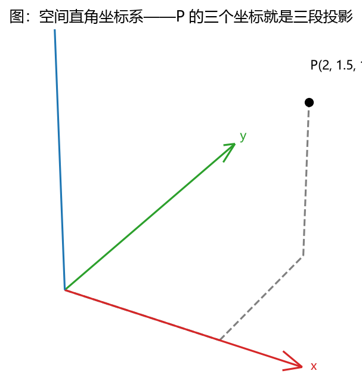
例题跟讲例题：a = (1,2,2)，求 |a|；a = (1,0,0) 与 b = (0,1,0) 的夹角。 解：|a| = √(1+4+4) = 3；a·b = 0 ⇒ cosθ = 0 ⇒ θ = 90°。
再跟一道（建系写坐标）：正方体棱长 1，以 A 为原点、AB 为 x 轴、AD 为 y 轴、AA1 为 z 轴，写出八个顶点坐标。 解：A(0,0,0)、B(1,0,0)、D(0,1,0)、A1(0,0,1)、C(1,1,0)、B1(1,0,1)、D1(0,1,1)、C1(1,1,1)。写坐标是建系法的第一步，每个点都要核对一遍，坐标错了后面全错。
空间向量基本定理与基底（苏州教研·专题48）：如果三个向量 a、b、c 不共面，那么空间任一向量 p 都能唯一写成 p = x·a + y·b + z·c。 这组不共面的 {a,b,c} 叫空间的一组基底。大白话：三维空间里随便挑三根不共面的箭头当"方向标"，任何向量都能拿它们拼出来——这就是建坐标系的老祖宗。
共线、共面向量定理（苏州教研·专题48）：
- 共线：b≠0 时，a∥b ⇔ 存在实数 λ 使 a = λb；
- 共面：a、b 不共线时，p 与 a、b 共面 ⇔ p = x·a + y·b。
四点共面 / 三点共线的充要条件（苏州教研·专题48）：对空间任一点 O 和不共线三点 A、B、C—— P、A、B、C 四点共面 ⇔ OP = x·OA + y·OB + z·OC，且 x+y+z = 1； 特别地，A、P、B 三点共线 ⇔ OP = x·OA + y·OB，且 x+y = 1。
- 大白话：用从 O 出发的向量表示 P，系数加起来等于 1，P 就落在 A、B、C 确定的平面（或直线）上。
- 用的时候：证四点共面、求动点在面内的条件，小题直接套。
分点坐标公式（苏州教研·专题48）：若 A(x1,y1,z1)，向量 AB = (x2,y2,z2)，且 AP = λ·AB，则 P = A+λ·AB，即 P(x1+λx2, y1+λy2, z1+λz2)。
- 大白话：沿 AB 方向走 λ 倍，坐标每个分量都加 λ 倍的方向分量。
- 用的时候：求棱上按比例分点的坐标，比硬算快。
3.2 法向量（最核心操作）
引入：描述一个平面"朝哪个方向立着"，最方便的是找一根垂直于它的箭头——法向量。有了法向量，后面所有的角和距离都能算。
定义：垂直于平面 α 的向量 n 叫平面 α 的法向量，即 n 与 α 内任意向量的数量积都是 0。
求法（大题标准三步）：
- 在平面内取两个不共线向量 u、v（用点的坐标相减得到）；
- 设 n = (x,y,z)，列方程组 n·u = 0 且 n·v = 0；
- 令某个分量为 1，解出另外两个，得到一个具体的法向量（法向量不唯一，差倍数都行）。
例题跟讲例题：平面过 A(1,0,0)、B(0,1,0)、C(0,0,1)，求法向量。 解：AB = (−1,1,0)，AC = (−1,0,1)。设 n = (x,y,z)：−x+y = 0，−x+z = 0 ⇒ y = x = z，取 n = (1,1,1)。
再跟一道（正方体里求法向量）：求正方体中平面 A1BD 的法向量（棱长 1，A 为原点）。 解：A1(0,0,1)、B(1,0,0)、D(0,1,0)。A1B = (1,0,−1)，A1D = (0,1,−1)。设 n = (x,y,z)：x−z = 0，y−z = 0 ⇒ x = y = z，取 n = (1,1,1)。可见换一个面，只要按"取两个不共线向量、列两个点积方程"这套流程，总能求出法向量。
用方向向量、法向量判断位置关系（苏州教研·专题48）：设直线 l、m 的方向向量为 a、b，平面 α、β 的法向量为 u、v，则——
| 要证 | 向量等价条件 |
|---|---|
| l∥m | a∥b，即 a = λb |
| l⊥m | a⊥b，即 a·b = 0 |
| l∥α | a⊥u，即 a·u = 0 |
| l⊥α | a∥u，即 a = λu |
| α∥β | u∥v，即 u = λv |
| α⊥β | u⊥v，即 u·v = 0 |
大白话：线线关系看方向向量，线面关系看方向向量与法向量，面面关系看法向量之间。证平行就"方向成倍数"，证垂直就"数量积为 0"。
编者注·本质回扣：法向量为什么被称作"钥匙"？因为它把"一个平面朝哪个方向立着"这件难事，浓缩成了一根箭头。你看那张位置关系表：证线线平行或垂直，只要看两个方向向量成不成倍数、内积是不是 0；证线面、面面关系，本质也是方向向量与法向量、法向量与法向量之间做同样两件事。说白了，第 13 章要靠眼睛判断"这两个面平不平行、垂不垂直"，到这里全部降级成"算两组坐标成不成比例、点积等不等于 0"。这就是装上坐标的好处：几何判断变成了算术。
3.3 三类角（用向量求）
引入：异面直线的夹角、线和面的夹角、两个面的夹角，肉眼不好量，但都能翻译成向量夹角，套公式算。
| 所求 | 公式 | 注意 |
|---|---|---|
| 线线角 θ | cosθ = |a·b|/(|a||b|) | 取绝对值，θ∈[0,π/2] |
| 线面角 θ | sinθ = |a·n|/(|a||n|) | 是 sin 不是 cos |
| 二面角 θ | cosθ = ±(n1·n2)/(|n1||n2|) | 正负看锐钝 |
为什么线面角用 sin：线面角是斜线与它在面内射影的夹角，而斜线与法向量的夹角正好是它的余角，所以套进去得到 sinθ。这是最容易记混的一条。
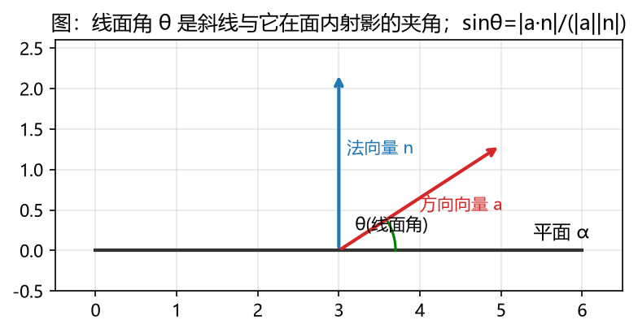
例题跟讲例题：正方体棱长 1，求直线 A1B 与底面 ABCD 所成角的正弦值。 解：建系 A(0,0,0)、A1(0,0,1)、B(1,0,0)，方向向量 A1B = (1,0,−1)，底面法向量 n = (0,0,1)。sinθ = |−1|/(√2·1) = √2/2。
再跟一道（二面角）：正方体中二面角 D−A1A−B（即两个相邻面 ABB1A1 与 ADD1A1 的夹角）是多少度？ 解：棱是 AA1。面 ABB1A1 的法向量可取 (0,1,0)，面 ADD1A1 的法向量可取 (1,0,0)。cosθ = |0|/... 两者点积为 0，故二面角为 90°（本来就是相邻两面，互相垂直）。这道小题提醒：二面角 = 两个面法向量的夹角（或其补角）。
3.4 点到平面的距离
引入：求一个点离一个平面多远，几何上要"过点作面的垂线"，建系后就变成投影。
公式：点 P 到过点 A、法向量为 n 的平面的距离， d = |AP·n| / |n|。 道理：AP 在法方向上的投影长度就是点到面的垂距。
例题跟讲例题：求原点到平面 x+y+z = 1 的距离。 解：面上取 A(1,0,0)，法向量 n = (1,1,1)，AP = (−1,0,0)（取 P = 原点）。d = |−1|/√3 = √3/3。
再跟一道（正方体里算距离）：棱长 1 的正方体中，求点 C1 到平面 A1BD 的距离。 解：面 A1BD 法向量 n = (1,1,1)（见 3.2 例题），面上取 A1(0,0,1)，点 C1(1,1,1)，A1C1 = (1,1,0)。d = |1+1+0|/√3 = 2√3/3。算完可反代：正方体被平面 A1BD 切下的小三棱锥体积用等体积法也能得到同一结果，可交叉验算。
面积射影定理（苏州教研·专题48）：一个平面多边形面积为 S，它在另一个平面上的射影面积为 S′，两个平面所成的锐二面角为 θ，则 cosθ = S′ / S。
- 大白话：一个面斜着"投影"到另一个面上，面积被 cosθ 打了个折。
- 用的时候：两条法向量不好找、二面角算不动时，算一下射影面积比反求 cosθ；也常用于"斜立锥体侧面投影"小题。
3.5 大题完整模板（建系法）
五步走：
- 建系，写出关键点坐标（先证三轴两两垂直）；
- 求所需向量：直线方向向量、平面法向量；
- 代入公式求角或距离；
- 二面角要判断锐角还是钝角，决定 cos 的正负；
- 下结论，线面角记得"公式结果是 sinθ"。
两个最常见失分点：一是坐标写错（尤其带分数的点），每个点算完都反推一遍棱长；二是线面角公式里写成 cos，记住"线面角用 sin"。二面角若题目说"锐角"就取正，说"钝角"就取负；没说就先算绝对值，再看图形是开口朝哪边。
小结：空间向量把立体几何大题变成"算坐标、套公式"的体力活；法向量是钥匙，线面角别写成 cos。
编者注·本质回扣：回头看三类角和距离那几个公式，别把它们当四条孤立结论死背，它们其实都是内积 a·b = |a||b|cosθ 这一个式子的变形：线线角、二面角直接就是两个方向（或法）向量的夹角；线面角因为和法向量的夹角正好差一个余角，才把 cos 换成 sin；点到面距离就是连线在法方向上的投影长度。所以建系五步里真正的"发动机"只有一个——数量积。你记住了内积这一颗种子，三类角和距离公式就能自己长出来，不必逐条硬背；这也是本章本质核心"角与距离都是内积的副产品"的落点。
④ 例题详解（先做再看）
例题例 1（求法向量）：平面 α 过点 A(1, 0, 0)、B(0, 1, 0)、C(0, 0, 1)，求 α 的一个法向量。
自己做：取两个向量，列方程组。
解：AB = (−1, 1, 0)，AC = (−1, 0, 1)。设 n = (x, y, z)： n·AB = −x + y = 0；n·AC = −x + z = 0 ⇒ y = x，z = x。取 x = 1 ⇒ n = (1, 1, 1)。 要点：令一个分量为 1 得整数解；法向量不唯一，方向相反也行。
例题例 2（线面角）：正方体 ABCD−A1B1C1D1 棱长为 1，求直线 A1B 与平面 ABCD 所成角的正弦值。
自己做：A1B 的方向向量，底面法向量是 (0, 0, 1)。
解：建系 A(0,0,0)，A1(0,0,1)，B(1,0,0)。A1B = (1, 0, −1)，底法向量 n = (0, 0, 1)。 sin θ = |A1B·n|/(|A1B||n|) = |−1|/(√2·1) = √2/2。 要点：线面角公式里是 sin，很多同学错写成 cos。
例题例 3（点到面距离）：上题中求点 A1 到平面 BCD1 的距离。
自己做：先求平面法向量，再套距离公式。
解：B(1,0,0)、C(1,1,0)、D1(0,1,1)。BC = (0,1,0)，BD1 = (−1,1,1)。 设 n = (x,y,z)：n·BC = y = 0；n·BD1 = −x + y + z = 0 ⇒ z = x。取 x = 1 ⇒ n = (1, 0, 1)。 取平面上点 B：BA1 = (−1, 0, 1)。d = |BA1·n|/|n| = |−1 + 1|/√2 = 0。 咦？A1 在平面 BCD1 上？检查：A1(0,0,1)，平面 BCD1 过 B(1,0,0) 法向 (1,0,1)：平面方程 x + z = 1，A1 代入 0 + 1 = 1 成立，确实在平面上。距离为 0 合理（此题作为"检查法"示范）。 换个距离题：求点 A1 到平面 BCC1 的距离：平面 BCC1 即 x = 1 面，法向 (1,0,0)，A1(0,0,1) 代入 d = |0 − 1| = 1。 要点：算完用平面方程反代检验，距离为 0 说明点在面上（正常）。
例题例 4（建系综合：线线角、线面角、体积）（苏州教研·专题19，原书p.76）：四边形 ABCD 为矩形，PD⊥平面 ABCD，PD = DC = 2，BC = √2，E 是 PC 的中点。求：(1) 异面直线 AD 与 BE 所成角；(2) BE 与平面 PCD 所成角；(3) 三棱锥 P−BDE 的体积。
自己做：PD⊥底面，以 D 为原点建系。
解：以 D 为原点，DA 为 x 轴、DC 为 y 轴、DP 为 z 轴。由 PD = DC = 2、BC = AD = √2，得 D(0,0,0)、A(√2,0,0)、C(0,2,0)、B(√2,2,0)、P(0,0,2)；E 为 PC 中点，E(0,1,1)。
(1) AD 方向向量取 (1,0,0)，BE = E−B = (−√2,−1,1)，|BE| = √(2+1+1) = 2。 cosθ = |(1,0,0)·(−√2,−1,1)|/(1·2) = √2/2 ⇒ θ = 45°。
(2) 平面 PCD 上 P、C、D 的 x 坐标都是 0，即该平面为 x = 0，法向量 n = (1,0,0)。 sinθ = |BE·n|/(|BE||n|) = √2/2 ⇒ θ = 45°。
(3) 换顶点求体积（等体积法）：V(P−BDE) = V(B−PDE)。面 PDE 即 x = 0，△PDE 中 PD = 2（在 z 轴上），E 到 z 轴距离为 1，故 S△PDE = ½·2·1 = 1；点 B 到面 PDE（x = 0）的距离 = √2。 V = ⅓·1·√2 = √2/3。
要点：建系后每个坐标逐点核对；平面 PCD 三个点 x 都为 0，一眼看出法向量 (1,0,0)；体积换个好算的底面（△PDE 在坐标面内，面积好算）。
⑤ 出口检测
自测（20 分钟，每题 2 分）：
- 求过 A(1,1,0)、B(0,1,1)、C(1,0,1) 的平面的一个法向量。
- 向量 a = (1, 2, 2)，求 |a|。
- 向量 a = (1, 0, 0) 与 b = (0, 1, 0) 的夹角是多少？
- 线面角公式里用的是 sin 还是 cos？
- 点到平面距离公式是什么？（文字表述）
真题验收：完成 2020–2024 新高考Ⅰ卷立体几何解答题 1 道（建系求角/距离）：建系、法向量、公式三步完整、25 分钟内、得分 ≥ 80% → 过关。
过关标准：自测 ≥ 10 分 且 真题达标 → 打卡。
课后习题（分层练习）
A 组 · 基础巩固
1.【考点：向量的模】向量 a = (2,3,6)，求 |a|。 2.【考点：数量积】a = (1,−2,2)，b = (2,−1,0)，求 a·b。 3.【考点：求法向量】求过 A(1,0,0)、B(0,2,0)、C(0,0,3) 的平面的一个法向量。 4.【考点：线线角】a = (1,1,0)，b = (1,0,1)，求两方向向量夹角的余弦值。 5.【考点：线面角公式】一句话写出：线面角 θ 的正弦公式是什么？ 6.【考点：点到面距离】原点到平面 2x+2y+z = 6 的距离是多少？
B 组 · 能力提升
7.【考点：线面角】正方体棱长 1，求直线 BD1 与底面 ABCD 所成角的正弦值。 8.【考点：法向量与二面角】平面 α 法向量 n1 = (1,0,1)，平面 β 法向量 n2 = (0,1,1)，求二面角的余弦值（取锐角）。 9.【考点：点到面距离】正方体 ABCD−A1B1C1D1 棱长 1，求点 A 到平面 A1BD 的距离。 10.【考点：建系综合】在第 9 题正方体中，求直线 A1C 与平面 ABCD 所成角的正切值。
C 组 · 真题挑战
11.【考点：建系求二面角】（2024 新高考Ⅰ卷·解答第 17 题第 (2) 问）四棱锥 P−ABCD 中，PA⊥底面 ABCD，PA = AC = 2，BC = 1，AB = √3。若 AD⊥DC，且二面角 A−CP−D 的正弦值为 √42/7，求 AD。
⑥ 常见坑清单
- 线面角用 sin、线线角用 cos（带绝对值），公式别串。
- 法向量方程组：取两个不共线向量；共线会解不出唯一方向。
- 二面角 cos 的正负：看两个法向量是"同向进"还是"反向进"，大题写清锐/钝角。
- 建系要证明三条轴两两垂直（大题要写一句话），别默认垂直。
- 距离公式：AP 用"任意点 − 平面上的点"，分母是法向量模。
- 坐标写错是最常见失分点：每个点坐标算完检查一遍再代入。
本章公式速查表
口径与《高中数学常用公式·修订版》第四部分（空间向量部分）一致。
空间向量坐标运算
加减与数乘：a±b = (x1±x2, y1±y2, z1±z2)；λa = (λx1, λy1, λz1)
- 大白话：对应坐标分别加、减、乘。
- 用的时候：先建系写对坐标，坐标错了后面全错。
数量积：a·b = x1x2 + y1y2 + z1z2
- 大白话：对应坐标相乘再相加，结果是个数。
- 用的时候：判断垂直就靠它——等于 0 就垂直。
模：|a| = √(x12 + y12 + z12)
- 大白话：三个坐标平方加起来开根号，就是向量长度。
夹角：cosθ = a·b/(|a||b|)
- 大白话：数量积除以两个模，就是夹角余弦。
垂直与平行：a⊥b ⇔ a·b = 0；a∥b ⇔ 对应坐标成比例
- 大白话：垂直看数量积为 0，平行看坐标成倍。
法向量
法向量 n：垂直于面内两个不共线向量 u、v，即 n·u = 0 且 n·v = 0
- 大白话：找一根垂直整个面的箭头，后面求角求距离全靠它。
- 用的时候：在面内取两个不共线向量，列两个点积方程，令一个分量为 1 解出。
三类角（套公式）
线线角 θ：cosθ = |a·b|/(|a||b|)，θ ∈ [0, π/2]
- 大白话：两条方向向量夹角取绝对值，只取锐角直角。
线面角 θ：sinθ = |a·n|/(|a||n|)，θ ∈ [0, π/2]
- 大白话：斜线与法向量夹角的余角，所以用 sin 不是 cos。
- 用的时候：这是最容易记混的一条，千万别写成 cos。
二面角 θ：cosθ = ±(n1·n2)/(|n1||n2|)，正负看锐钝
- 大白话：两个面法向量的夹角（或补角）。
- 用的时候：题目说锐角取正、钝角取负；没说先算绝对值再看图开口方向。
点到平面的距离
d = |AP·n|/|n|（A 是面上一点，n 是面法向量）
- 大白话：连线 AP 在法方向上的投影长度。
- 用的时候：AP 用"任意点 − 面上一点"，分母是法向量的模；算完用平面方程反代检验。
共面共线与投影（苏州教研·专题48）
四点共面：OP = x·OA+y·OB+z·OC ⇔ x+y+z = 1；三点共线：OP = x·OA+y·OB ⇔ x+y = 1
- 大白话：系数加起来等于 1，P 就落在 A、B、C 确定的面（线）上。
- 用的时候：证四点共面、求动点在面内的条件。
分点坐标：P = A+λ·AB ⇒ P(x1+λx2, y1+λy2, z1+λz2)
- 大白话：沿方向向量走 λ 倍，每个分量加 λ 倍。
- 用的时候：棱上按比例分点坐标，秒算。
空间两点距离：|AB| = √((x2−x1)2+(y2−y1)2+(z2−z1)2)
- 大白话：坐标差平方和开根号，就是模公式的两点版。
面积射影定理：cosθ = S′/S（S 原面积，S′ 射影面积，θ 两面锐二面角）
- 大白话：斜面积投影到另一个面，乘以 cosθ。
- 用的时候：法向量不好求时，用射影面积比反求二面角。
高级方法·进阶
对应《不超纲高级方法手册》第七部分"立体几何"（空间向量部分）。
进阶 1：空间向量建系法（大题主力）
适用信号：立体几何解答题第二问求角、求距离。 操作步骤：建系（优先找三条两两垂直的棱）→ 写坐标 → 求法向量 → 套公式（线面角 sin、二面角 cos、距离 d = |AP·n|/|n|）。 例题：见 3.5 模板与本章 C 组真题。 课标依据/红线：空间向量是选必一正文内容，✓ 不超纲（高考可放心用）。 注意：二面角锐钝要靠观察法向量方向判断，别丢符号；建系前要先写一句三轴两两垂直的依据。
进阶 2：外接球补形模型（跨 13、14 章）
适用信号：墙角形三棱锥（三条棱两两垂直）求外接球。 操作步骤：补成长方体，R = ½√(a2+b2+c2)。 课标依据/红线：✓ 不超纲。
进阶 3：等体积法（不建系的距离）
适用信号：求点到面距离、求高，且建系坐标不好写时。 操作步骤：换顶点与底面，体积不变，h = 3V/S底。 课标依据/红线：✓ 不超纲；与向量距离公式互为验算。
自测答案：1. AB = (−1, 0, 1)，AC = (0, −1, 1)；n·AB = −x + z = 0，n·AC = −y + z = 0 ⇒ x = y = z，取 (1, 1, 1)；2. √(1+4+4) = 3；3. cos θ = 0 ⇒ θ = 90°；4. sin；5. 点与面上任一点连线在法向量方向上的投影绝对值（|AP·n|/|n|）。
课后习题答案
A 组
- |a|=√(4+9+36)=7。
- a·b=1·2+(−2)(−1)+2·0=2+2+0=4。
- AB=(−1,2,0)，AC=(−1,0,3)。设 n·AB=−x+2y=0，n·AC=−x+3z=0，得 y=x/2，z=x/3，取 x=6 得 n=(6,3,2)。
- cosθ=|1+0+0|/(√2·√2)=1/2。
- sinθ=|a·n|/(|a||n|)，a 为斜线方向向量，n 为平面法向量。
- 平面 2x+2y+z−6=0，d=|0+0+0−6|/√(4+4+1)=6/3=2。
B 组
- 建系 A(0,0,0)、B(1,0,0)、D(0,1,0)、D1(0,1,1)。BD1=(−1,1,1)，底面法向量 n=(0,0,1)。sinθ=|1|/(√3·1)=√3/3。
- cosθ=|n1·n2|/(|n1||n2|)=1/(√2·√2)=1/2。
- 面 A1BD：A1(0,0,1)、B(1,0,0)、D(0,1,0)。A1B=(1,0,−1)，A1D=(0,1,−1)，法向量 n=(1,1,1)。取 A1 为面上点，AA1=(0,0,1)。d=|0+0+1|/√3=√3/3。
- A1C=(1,1,−1)，底面法向量 n=(0,0,1)。线面角 sinθ=1/√3，则 tanθ=sin/√(1−sin2)=(1/√3)/√(2/3)=√2/2。
C 组
- 建系 A(0,0,0)、C(2,0,0)、P(0,0,2)；由 AB=√3、BC=1 得 B(3/2,√3/2,0)。设 D=(u,v,0)，由 AD⊥DC 得 u2+v2=2u。平面 ACP 即 y=0，法向量 n1=(0,1,0)。平面 DCP 的法向量 n2=CP×CD=(−2v, 2u−4, −2v)。由 sin(二面角)=√42/7 得 |cos<n1,n2>|=√7/7，即 (2−u)/√(2v2+(2−u)2)=√7/7。平方化简得 v2=3(2−u)2，结合 v2=2u−u2 解得 u=3/2（舍去退化 u=2），v=√3/2。于是 AD=√(u2+v2)=√(9/4+3/4)=√3。
一通百通
遇到立体几何解答题，本质都是"建系→写坐标→求法向量→用内积套公式"这一条流水线：先找三条两两垂直的棱建系（大题要写一句垂直依据），把每个点坐标写对——错一个坐标全题崩；要角就取方向向量或法向量，线线角、二面角用 cos，线面角用 sin；要距离就套 d=|AP·n|/|n|。会这五步，第 13 章那些靠辅助线、靠灵感的难题，到这里都退化成算坐标。这套"几何问题坐标化、坐标问题内积化"的骨架，和后面解析几何（15、16 章）是同一个思想。
跨章结合
- 本章坐标运算 × 第 09 章平面向量：本章的加减、数乘、数量积、模、夹角公式，一个符号都没改，只是把坐标从二维 (x,y) 升到三维 (x,y,z)。所以平面向量（09 章）学扎实了，空间向量等于白送；门槛自测第 1 题就是在考你这条迁移。（综合原理说明，非真题）
- 本章建系求角 × 第 13 章几何证明：高考立体几何解答题固定是"两段式"——第 (1) 问用 13 章几何法证线面平行或垂直，第 (2) 问转本章建系求二面角或距离。既有真题 2024 新高考Ⅰ卷解答第 17 题即如此：第 (1) 问证 AD∥平面 PBC（见 13 章 C 组第 12 题），第 (2) 问建系、用二面角条件反求 AD（本章 C 组第 11 题）。
本章与前后章
按全书蓝图，14 章的前置是第 09 章平面向量（数量积、模、夹角那套结论直接从二维搬到三维，本章不再重讲）和第 13 章立体几何初步（你得先有空间直观，知道线面垂直是建系选轴的依据）。它不教新的几何概念，只把 13 章"看图证关系"换成"建系算坐标"。学完它，立体几何大题你就有了一条不依赖灵感的流水线，直接通向高考解答题的固定位置。
高考怎么考
按全书蓝图，本章锁定新高考Ⅰ卷的"立体几何解答题"（约在解答第 17 题附近）：第 1 问往往是 13 章那套几何证明（证线面平行或垂直），第 2 问才是本章的主场——建系求线面角、二面角或点到面的距离（如本章 C 组 2024 年解答第 17 题第 (2) 问）。它是全卷中档偏上的"必拿分大题"，套路固定、不考灵感：练熟五步模板、坐标逐个核对、线面角记得用 sin，这一问基本稳拿。
直线与圆
公式速查：修订版 第5部分（直线与圆）
本章本质核心：直线与圆是解析几何的第一步——给"几何图形"装上"方程"这台计算器。从此平行、垂直、距离、相切、相交，这些靠眼睛看的几何关系，全部变成坐标代数运算：平行比斜率 k1 = k2、垂直看 k1k2 = −1，距离套 |Ax0+By0+C|/√(A2+B2)，圆与直线的位置关系就比"圆心到直线距离 d"和"半径 r"两个数。本章所有题型都是这一个原理的变体；而圆的"圆心 (a,b)+半径 r"是最短的信息包，记住它，标准方程、弦长、切线全从这两个数长出来。
为什么有用：想通了"几何关系 = 代数运算"这一步，导航算路程、铺管线找最短距离、判断一条路会不会碰到某个圆，全都变成套公式的代数题；考试里那些"距离、位置、切线"小题，也就不再靠目测，而是算一个 d、比一次 r 就定案。原理想通了，公式是顺带的事，不用死背。
① 门槛自测（进章前，10 分钟）
- 两点 (1, 2)、(3, 4) 连线的斜率是多少？
- 平行于 x 轴的直线斜率是多少？
- 圆的标准方程 (x − a)2 + (y − b)2 = r2 中，圆心和半径是什么？
- 勾股定理：a2 + b2 = c2 表示什么关系？
- 解方程组 2x + y = 3、x − y = 0。
判定：5 题答对 4 题以上 → 进章。
② 学习目标
- 掌握直线方程的多种形式与相互转化
- 掌握斜率与倾斜角、平行/垂直的斜率条件
- 掌握两点间、点到直线距离公式
- 掌握圆的标准方程与一般方程、直线与圆的位置关系（含弦长）
- 会求圆的切线方程
③ 正文讲解
本章结构导图：
直线与圆
├─ 3.1 倾斜角与斜率 ── 一把"角度↔斜率"的尺子
├─ 3.2 直线方程 ── 五种写法，会互化
├─ 3.3 距离公式 ── 两点距离 / 点到直线距离 / 平行线距离
├─ 3.4 圆的方程 ── 标准式 / 一般式（配方）
└─ 3.5 直线与圆位置关系 ── 比"圆心到直线距离 d"和"半径 r"
3.1 直线的倾斜角与斜率
引入：你站在坡上，坡有陡有缓。坡越陡，往上爬越费劲；数学上用一个数把"陡的程度"量化出来，这个数就是斜率。爬楼时每往前走 1 米、高度抬升多少，斜率就是"上升量 ÷ 前进量"。路是水平的（不升不降），斜率就是 0；路竖起来（没法往前走了），这个比值就没法写了——也就是"斜率不存在"。
正式定义（人教A版口径）：
- 倾斜角 α：当直线 l 与 x 轴相交时，取 x 轴为基准，x 轴正向与直线 l 向上方向之间所成的角 α 叫做直线 l 的倾斜角。规定 α ∈ [0, π)。与 x 轴平行或重合时 α = 0。
- 斜率 k：当 α ≠ 90° 时，k = tan α。
- 过两点 P1(x1, y1)、P2(x2, y2) 的斜率（x1 ≠ x2）：
k = (y2 − y1) / (x2 − x1) = Δy / Δx
直观理解（看图）：
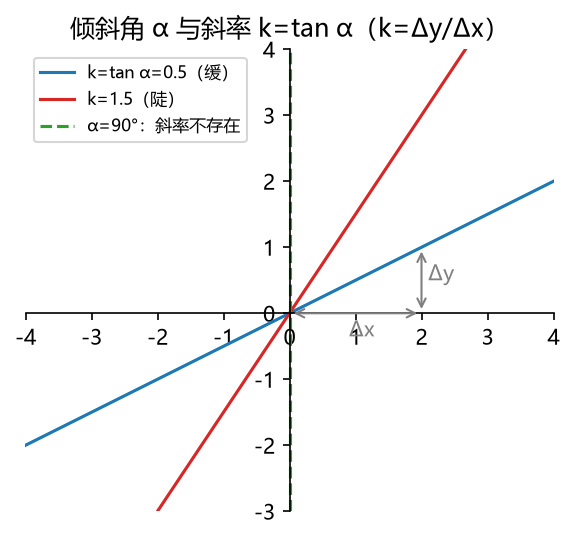
斜率 k 就是"Δy 比 Δx"。k = 0 是水平线；k > 0 直线往上翘；k 越大翘得越陡；α = 90° 时直线垂直于 x 轴，Δx = 0，分母为 0，斜率不存在（这条直线不能写成 y = kx + b）。
性质（逐条验证）：
- k 的正负：k > 0 ⇔ α 是锐角（直线从左下到右上）；k < 0 ⇔ α 是钝角（从左上到右下）。验证：tan 在 (0, π/2) 为正、(π/2, π) 为负，正好对应。
- k 的大小：在 α ∈ [0, π/2)，α 越大 k 越大、线越陡。
- 倾斜角相同的两条直线互相平行。
两直线平行与垂直（斜率都存在时）：
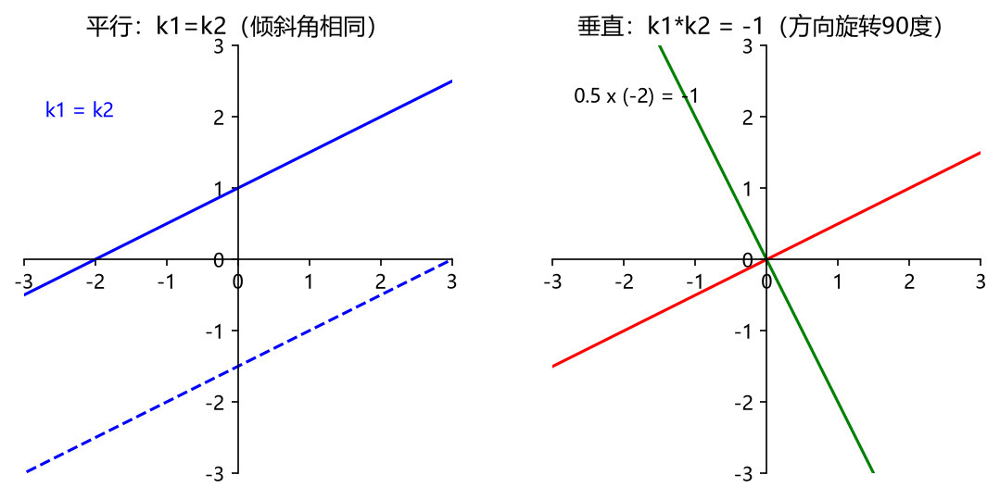
- 平行 ⇔ k1 = k2（且不重合）。道理：倾斜角一样才平行。
- 垂直 ⇔ k1·k2 = −1。道理：垂直就是方向转 90°，倾斜角相差 90°，正切值正好互为负倒数。
斜率不存在 / 一般式时的补充判定（苏州教研·专题20）：
- 一般式判垂直：两直线 l1:A1x+B1y+C1 = 0、l2:A2x+B2y+C2 = 0，则 l1⊥l2 ⇔ A1A2 + B1B2 = 0。不用先求斜率，竖直直线也成立，比 k1k2 = −1 更通用。
- 方向向量：斜率为 k 的直线，一个方向向量是 (1, k)；写成一般式 Ax+By+C = 0 时，它的一个方向向量是 (B, −A)。反过来，方向向量 u⃗ = (m, n) 对应的斜率 k = n/m（m≠0）。
计算流程（求斜率）：
- 若已知两点 → 套 k = (y2−y1)/(x2−x1)；
- 若已知倾斜角 α → k = tan α（先确认 α ≠ 90°）；
- 若直线方程已给出（如 Ax+By+C = 0）→ 先化成 y = kx+b，看 x 的系数。
例题跟讲例题：
例 3.1-a：已知直线过 A(2, 3)、B(5, 9)，求斜率和倾斜角。 解：k = (9−3)/(5−2) = 6/3 = 2。因为 k = 2 > 0，倾斜角 α 满足 tan α = 2，是个锐角。 要点：Δy 是"后减前"，x、y 要按同一点顺序减，别一个从 A 减 B、一个从 B 减 A。
例 3.1-b：直线过 P(1, 2)，且与斜率为 −1/3 的直线垂直，求它的斜率。 解：垂直 ⇒ k·(−1/3) = −1 ⇒ k = 3。 要点：垂直就是负倒数，"乘起来等于 −1"。
常见陷阱：
- 斜率不存在（竖直直线 x = 常数）时，别硬套 k1k2 = −1；此时与之垂直的反而是水平线（k = 0）。
- 平行要同时排除"重合"：k1 = k2 还不够，得截距不同。
小结：斜率 k = Δy/Δx 是描述直线"陡和向哪歪"的数；平行看 k 等不等，垂直看乘积等不等于 −1。
3.2 直线方程的五种形式（会互化）
引入：要把一条直线"写死"在纸上，需要几个条件？给你一个点和一个方向，直线就唯一确定了；给你两个点，也唯一确定。不同的已知条件，对应不同写法。就像你介绍一个人，可以说"他是张三的爸爸"，也可以说"他身高 1 米八"——指的是同一个人，只是角度不同。
五种形式（黑体为必背）：
| 形式 | 方程 | 什么时候用 |
|---|---|---|
| 点斜式 | y − y0 = k(x − x0) | 知道斜率 k + 一点 (x0, y0) |
| 斜截式 | y = kx + b | 知道斜率 k + 纵截距 b |
| 两点式 | (y−y1)/(y2−y1) = (x−x1)/(x2−x1) | 知道两点 |
| 截距式 | x/a + y/b = 1 | 知道横截距 a、纵截距 b |
| 一般式 | Ax + By + C = 0（A、B 不同时为 0） | 最通用，统一计算 |
互化流程（编号步骤）：
- 点斜式展开 → 斜截式（解出 y）；
- 斜截式移项 → 一般式（全部挪到左边）；
- 一般式求斜率：把 y 解出来，k = −A/B（B ≠ 0）。
性质/验证：截距式里 a 是直线与 x 轴交点的横坐标（令 y = 0），b 是与 y 轴交点纵坐标（令 x = 0）。截距式要求 a、b 都不为 0——过原点的直线或垂直坐标轴的直线不能用截距式。
例题跟讲例题：
例 3.2-a：已知直线过点 (2, −1)，斜率为 3，写出点斜式、斜截式、一般式。 解：点斜式 y − (−1) = 3(x − 2)，即 y + 1 = 3(x − 2)。 斜截式：y = 3x − 7。一般式：3x − y − 7 = 0。 要点：三种写法同一条直线，互相推。
例 3.2-b：直线过 (1, 0) 和 (0, 2)，写截距式。 解：横截距 a = 1（与 x 轴交于 (1,0)），纵截距 b = 2。截距式 x/1 + y/2 = 1。 要点：截距是坐标值，可正可负，不是距离。
常见陷阱：
- 斜率不存在的直线是 x = x0（竖直），它写不进 y = kx + b，别漏。
- "截距"不是"距离"：截距可负，距离恒正。
小结：见到已知条件，选最顺手的形式起手，最后统一化到一般式做计算。
3.3 距离公式（必背）
引入：平面上两点隔多远？点到一条直线"最近"是多近？这两个问题天天用——导航算路程、建管线算最短距离。勾股定理是它们的老祖宗。
公式：
-
两点距离：P1(x1,y1)、P2(x2,y2) d = √[(x2−x1)2 + (y2−y1)2]（勾股：横差、纵差为两条直角边）
-
点到直线距离：点 P(x0, y0) 到直线 Ax + By + C = 0 d = |Ax0 + By0 + C| / √(A2 + B2)
-
两平行线距离：Ax + By + C1 = 0 与 Ax + By + C2 = 0 d = |C1 − C2| / √(A2 + B2)（任取一条上一点，套点到直线距离）
推导/验证（点到直线距离为什么长这样）：把点代入左边 Ax0+By0+C，它的绝对值衡量"离直线有多远"，再除以 √(A2+B2) 归一化。直觉上：直线法向量就是 (A, B)，长度 √(A2+B2)，点到直线距离就是沿法向量方向量过去，所以要除以这个长度。分子套绝对值，因为距离不能为负。
计算流程：
- 点到直线距离：先把直线化成 Ax+By+C = 0（A、B、C 同号移项无所谓，但必须等于 0）；
- 把点坐标代入分子，套绝对值；
- 分母 √(A2+B2)；
- 两平行线：先保证 x、y 系数完全一样（不一样就乘倍数化一致），再 |C1−C2|。
例题跟讲例题：
例 3.3-a：求原点 (0,0) 到直线 3x + 4y − 10 = 0 的距离。 解：d = |0 + 0 − 10| / √(9+16) = 10/5 = 2。 要点：分子代入 0，常数项别丢；分母 32+42 = 25 开根号是 5（勾股数）。
例 3.3-b：求平行线 2x + y + 1 = 0 与 2x + y − 5 = 0 的距离。 解：系数一致（都是 2,1），d = |1 −(−5)|/√(4+1) = 6/√5 = 6√5/5。 要点：C1、C2 一正一负，相减变相加，别漏绝对值里的符号。
常见陷阱：
- 套点到直线距离前，直线必须是" = 0"的形式；y = x + 1 要先写成 x − y + 1 = 0。
- 两平行线距离公式要求 x、y 系数完全相同，一个是 2x、另一个是 4x 时先把后者除以 2。
小结：距离就三条公式，核心是"点到直线先化一般式、分子绝对值、分母勾股"。
3.4 圆的方程
引入：圆是"到定点距离等于定长的所有点"。定点是圆心，定长是半径。把这句话翻译成坐标方程，就是圆的方程。
正式定义：平面上到定点 C(a, b) 的距离等于定长 r 的点的轨迹叫圆。
- 标准方程：(x − a)2 + (y − b)2 = r2，圆心 C(a, b)，半径 r。
- 一般方程：x2 + y2 + Dx + Ey + F = 0。
配方可得：圆心 (−D/2, −E/2)，半径 r = ½√(D2 + E2 − 4F)。
直观理解：标准方程一眼看出圆心半径；一般方程是展开后的样子，需要配方才看得出来。
性质/验证：
- 一般方程表示圆的条件：D2 + E2 − 4F > 0。等于 0 时半径 0，只是一个点；小于 0 时没有实数点，根本不是圆。
- 一般方程没有 xy 项，且 x2、y2 系数相等（都是 1）——这是判断"这个二次方程是不是圆"的眼。
- 直径式方程（苏州教研·专题22）：若 A(x1,y1)、B(x2,y2) 是圆的一条直径两端点，则圆可直接写成 (x−x1)(x−x2) + (y−y1)(y−y2) = 0。道理：圆上任一点 P 对直径 AB 张直角（直径所对圆周角是 90°），即 PA⃗·PB⃗ = 0。
计算流程（一般式 ↔ 标准式）：
- 一般式化标准式：对 x、y 分别配方（x2+Dx 配成 (x+D/2)2 − D2/4）；
- 标准式展开 → 一般式（展开平方、合并常数）。
例题跟讲例题：
例 3.4-a：求圆 x2 + y2 − 4x + 6y − 3 = 0 的圆心和半径。 解：配方：(x2−4x) + (y2+6y) = 3 → (x−2)2 − 4 + (y+3)2 − 9 = 3 → (x−2)2 + (y+3)2 = 16。 圆心 (2, −3)，半径 r = 4。 要点：配方时左边配了多少，右边就加多少；D = −4、E = 6、F = −3，r = ½√(16+36+12) = ½√64 = 4。
常见陷阱：
- 半径公式里是 √(D2+E2−4F)，别漏那个 −4F；F 是负的，−4F 反而变大。
小结：标准方程看一眼就知道圆心半径；一般方程配方还原。
编者注·本质回扣：为什么圆非要在"标准式"和"一般式"之间来回配方？说白了，标准方程 (x−a)2+(y−b)2 = r2 一眼就读出圆心和半径，这是几何信息最紧凑的"信息包"；而题目给你的往往是展开后的一般式 x2+y2+Dx+Ey+F = 0，看不出圆心在哪。配方不是白做的功夫，它就是把"展开后被打乱的几何信息"重新装回圆心半径这个最短信息包——后面算 d、比 r、求弦长，靠的全是这个 (a,b) 和 r。所以见到圆的方程，第一反应永远是"先把它变回圆心+半径"。
3.5 直线与圆的位置关系
引入：拿一个圆环（圆）往一条直线上放——要么不挨（相离），要么正好碰一下（相切），要么穿过去（相交，切出一条弦）。怎么判断？量一量"圆心到直线的距离 d"和"半径 r"谁大谁小就行，根本不用把交点算出来。
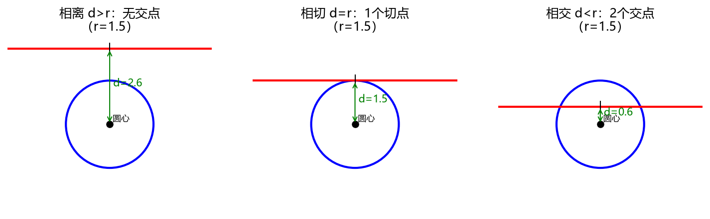
判定（核心：比 d 和 r）：
设圆心到直线距离为 d，半径为 r。
| 关系 | 条件 | 交点 |
|---|---|---|
| 相离 | d > r | 0 个 |
| 相切 | d = r | 1 个（切点） |
| 相交 | d < r | 2 个（弦） |
弦长公式：相交时，弦长 |AB| = 2√(r2 − d2)。道理：半条弦、半径、圆心到直线垂线构成直角三角形，半弦 = √(r2−d2)，整条弦乘 2。
切线求法：
- 切点 (x1, y1) 在圆上时：切线方程 (x1−a)(x−a) + (y1−b)(y−b) = r2（记住"半径垂直切线"）。
- 过圆外一点求切线：设斜率 k，写成点斜式，令圆心到它距离 = r，解出 k。有两条，注意 k 不存在（竖直切线）的那条别漏。
计算流程（直线与圆位置问题）：
- 写出圆心 (a,b) 和半径 r；
- 用点到直线距离公式算 d；
- 比 d 与 r：>、 = 、< 定关系；
- 相交再用弦长公式 2√(r2−d2)。
例题跟讲例题：
例 3.5-a：判断直线 3x + 4y + 5 = 0 与圆 x2 + y2 = 4 的位置关系。 解：圆心 (0,0)，r = 2。d = |0+0+5|/√(9+16) = 5/5 = 1。 d = 1 < r = 2 ⇒ 相交。弦长 = 2√(4 − 1) = 2√3。 要点：先 d 后 r，一步定关系。
例 3.5-b：求过圆 x2+y2 = 4 上点 (1, √3) 的切线方程。 解：半径斜率 = √3/1 = √3，切线垂直半径 ⇒ 切线斜率 = −1/√3。 点斜式：y − √3 = (−1/√3)(x − 1)，整理 x + √3 y − 4 = 0。 要点：切线⊥过切点的半径，这是求切线斜率的钥匙。
常见陷阱：
- 弦长公式里的 d 是圆心到直线距离，不是"弦到圆心的距离"（其实就是一个东西，但别拿弦长的一半来代）。
- 过圆外点切线有两条，解 k 的二次方程通常两个根；还要单独想有没有竖直切线。
小结：直线圆问题，九成是"算 d、比 r"，弦长、切线都从这个判定长出来。
编者注·本质回扣：为什么判断直线和圆"相离、相切、相交"不用真的去解交点？这正是解析几何的精髓——把"两条曲线交几个点"这种几何问题，翻译成"比两个数的大小"这个代数问题。圆心到直线距离 d 是算出来的，半径 r 是现成的，d 比 r 大就是不挨、相等就是相切、小就是穿过去。弦长 2√(r2−d2)、切线 d = r，也都是同一个"d 与 r 比大小"长出来的副产品。会算这一个 d，整章的位置关系题就都通了——这就是"给几何装上方程"的第一次实战。
3.6 圆与圆的位置关系（选学拓展）
两个圆放一起，看圆心距 d 和两半径 R、r（设 R ≥ r）：
- d > R+r：外离（互不搭界）；
- d = R+r：外切（外挨一下）；
- R−r < d < R+r：相交（两个交点）；
- d = R−r：内切；
- d < R−r：内含。
判断方法和直线圆一模一样——量"圆心距"比"半径和差"。
公共弦所在直线（苏州教研·专题22）：两圆一般式 C1:x2+y2+D1x+E1y+F1 = 0、C2:x2+y2+D2x+E2y+F2 = 0 相交时，把两式相减：
(D1−D2)x + (E1−E2)y + (F1−F2) = 0
- 大白话：相减消掉了 x2、y2，剩下的一次方程过两个交点，就是公共弦（相交时）、公切线（相切时）所在直线。
小结：圆与圆还是"距离比半径"，只是把"到直线距离"换成"圆心距"。
④ 例题详解（先做再看）
例题例 1（垂直斜率）：直线 l1：2x + y − 1 = 0，求与 l1 垂直且过点 (1, 2) 的直线方程。
自己做：先求斜率，用点斜式。
解：l1 斜率 k1 = −2；垂直 ⇒ k2 = 1/2。点斜式：y − 2 = (1/2)(x − 1)，即 x − 2y + 3 = 0。 要点：垂直斜率互为负倒数（k1k2 = −1）。
例题例 2（点到直线距离）：求点 (2, 1) 到直线 3x − 4y + 5 = 0 的距离。
自己做：套公式。
解：d = |3·2 − 4·1 + 5| / √(9 + 16) = |6 − 4 + 5|/5 = 7/5。 要点：绝对值在分子、根号在分母；A2 + B2 别算错。
例题例 3（直线与圆）：圆 x2 + y2 = 4 与直线 y = x + b 相切，求 b。
自己做：圆心 (0,0) 到直线距离 = 半径 2。
解：直线 x − y + b = 0，d = |0 − 0 + b|/√2 = |b|/√2 = 2 ⇒ |b| = 2√2 ⇒ b = ±2√2。 要点：相切 ⇔ d = r；"相离/相交/相切"一律先算 d。
⑤ 出口检测
自测（15 分钟，每题 2 分）：
- 过 (1, 1)、(3, 5) 的直线斜率是多少？
- 直线 2x − 3y + 6 = 0 的斜率是多少？
- 点 (0, 0) 到直线 x + y − 2 = 0 的距离。
- 圆 (x − 1)2 + (y + 2)2 = 9 的圆心与半径。
- 直线 y = x 与圆 x2 + y2 = 1 的位置关系（求 d 判断）。
真题验收：2020–2024 新高考Ⅰ卷直线圆小题 1~2 道（距离/位置/切线，多在选择题 5–8 题区间）：每题 3 分钟、全对过关。
过关标准：自测 ≥ 10 分 且 真题全对 → 打卡，进入 16 章。
课后习题（分层练习）
A 基础巩固（教材练习级）
A1.【考点：两点斜率】求过 A(−1, 2)、B(3, −4) 两点直线的斜率。
A2.【考点：倾斜角与斜率】直线倾斜角 α = 120°，求斜率 k；并说明这条直线是往哪个方向倾斜的。
A3.【考点：点斜式写方程】已知直线斜率为 −2，且过点 (0, 3)，写出它的斜截式和一般式。
A4.【考点：平行与垂直】求过点 (2, −1) 且与直线 3x + 4y − 1 = 0 平行的直线方程。
A5.【考点：点到直线距离】求点 (3, 4) 到直线 3x − 4y + 1 = 0 的距离。
A6.【考点：圆的标准/一般方程】写出圆心为 (−1, 2)、半径为 3 的圆的标准方程，并展开成一般方程。
B 能力提升（高考中档）
B7.【考点：两平行线距离】求两平行直线 3x + 4y − 2 = 0 与 3x + 4y + 8 = 0 之间的距离。
B8.【考点：弦长公式】直线 x + y − 1 = 0 截圆 x2 + y2 = 9，求所得弦长。
B9.【考点：过圆外点切线】求过点 (0, 4) 且与圆 x2 + y2 = 4 相切的直线方程。
B10.【考点：含参位置关系】若直线 y = x + b 与圆 (x−1)2 + (y−2)2 = 4 相交，求 b 的取值范围。
C 真题挑战（真实新高考题）
C1.【考点：圆上点到直线距离·2025 新高考Ⅰ卷第 7 题】已知圆 x2 + (y + 2)2 = r2（r > 0）上到直线 y = √3 x + 2 的距离为 1 的点有且仅有 2 个，则 r 的取值范围是（ ）。 A. (0, 1) B. (1, 3) C. (3, +∞) D. (0, +∞)
C2.【考点：点到直线距离算面积·借鉴 2024 新高考Ⅰ卷第 16 题第 (2) 问思想】过椭圆上一点的直线与曲线交于另一点，已知围成三角形面积，反求直线斜率。本题型在第 16 章详解；这里先体会：面积 = ½·弦长·点到直线距离，"点到直线距离"是本章 3.3 的工具。
C3.【考点：切线方程·仿高考】求过原点且与圆 (x − 2)2 + y2 = 1 相切的直线方程。
⑥ 常见坑清单
- 斜率不存在（垂直 x 轴）时公式失效，别硬套 k1k2 = −1。
- 一般式距离公式：Ax + By + C = 0 形式，先化成这个形式再用。
- 圆的一般方程 D2 + E2 − 4F > 0 才是圆；等于 0 是一个点。
- 切线过圆外点有两条，用 d = r 解斜率时别漏 k 不存在的那条。
- 弦长公式 2√(r2 − d2)：d 是圆心到直线距离，不是弦到圆心的距离。
本章公式速查表
与《高中数学常用公式·修订版》第五部分"直线与圆"逐条核对一致。
斜率与倾斜角
斜率：k = (y2−y1)/(x2−x1) = tan α（α ≠ 90°）
- 大白话：纵坐标差除以横坐标差，就是直线的陡缓。
- 用的时候：α=90°（竖直直线）斜率不存在，别硬套；x1=x2 也不能用两点式。
- 记忆要点：Δy 比 Δx。
平行 ⇔ k1 = k2（且截距不等）；垂直 ⇔ k1·k2 = −1
- 大白话：平行就是斜率一样，垂直就是斜率互为负倒数。
- 用的时候：平行要排除重合；竖直直线（斜率不存在）垂直的反而是水平线 k=0。
直线方程的五种形式
点斜式：y − y0 = k(x − x0)
- 大白话：知道斜率和一个点，直接写。
- 用的时候：最常用的起手式。
斜截式：y = kx + b；一般式：Ax + By + C = 0（k = −A/B）
- 大白话：斜截式一眼看斜率纵截距；一般式统一做计算。
- 用的时候：最后统一化到一般式，斜率就是 −A/B。
两点式：(y−y1)/(y2−y1) = (x−x1)/(x2−x1)；截距式：x/a + y/b = 1
- 大白话：两点直接写、知道横纵截距用截距式。
- 用的时候：截距式要求 a、b 都不为 0，过原点或竖直直线用不了。
距离公式
两点距离：d = √[(x2−x1)2 + (y2−y1)2]
- 大白话：横差纵差当直角边，勾股求斜边。
点到直线距离：d = |Ax0+By0+C|/√(A2+B2)
- 大白话：点代入一般式左边取绝对值，除以法向量长度。
- 用的时候：直线必须先化成 Ax+By+C=0；分子套绝对值、分母勾股。
两平行线距离：d = |C1−C2|/√(A2+B2)
- 大白话：系数对齐后，常数项差的绝对值除以根号。
- 用的时候：先把 x、y 系数化成完全相同，再 |C1−C2|。
到两平行线 ax+by+m = 0、ax+by+n = 0 等距的直线：ax+by+(m+n)/2 = 0
- 大白话：两条平行线正中间那条线，常数项取平均。
- 用的时候：求角平分线（与两已知平行线等距）直接套；系数要先对齐。
对称与反射
点关于点对称：P(x,y) 关于 Q(a,b) 的对称点 P′ = (2a−x, 2b−y)
- 大白话：Q 是 P、P′ 的中点，坐标对半再翻倍。
- 用的时候：曲线关于点 (a,b) 中心对称，就是把式子里的 (x,y) 换成 (2a−x, 2b−y)。
光线经 x 轴（或 y 轴）反射：入射、反射光线的斜率互为相反数
- 大白话：以坐标轴为镜面上下（左右）翻一下，倾斜角互补，斜率变号。
- 用的时候：光线反射题把光源"镜像"到镜面另一侧，光线就拉直成直线距离。
圆的方程
标准方程：(x−a)2 + (y−b)2 = r2，圆心 (a,b)，半径 r
- 大白话：一眼看出圆心和半径。
一般方程：x2+y2+Dx+Ey+F = 0，圆心 (−D/2,−E/2)，r = ½√(D2+E2−4F)
- 大白话：展开后的样子，配方才看得出圆心半径。
- 用的时候：表示圆要 D2+E2−4F>0；等于 0 是一个点，小于 0 不是圆；没有 xy 项、x2y2 系数相等。
直径式：(x−x1)(x−x2) + (y−y1)(y−y2) = 0（A(x1,y1)、B(x2,y2) 为直径两端点）
- 大白话：已知直径两个端点，一步写出圆，不用求圆心半径。
- 用的时候：原理是直径所对圆周角为直角（PA⊥PB）；题目说"对 AB 张直角"时立刻想到它。
直线与圆的位置关系
比 d 与 r：d<r 相交，d = r 相切，d>r 相离（d 为圆心到直线距离）
- 大白话：量圆心到直线距离，跟半径比大小。
- 用的时候：九成题先算 d 再比 r，不用真求交点。
弦长：|AB| = 2√(r2 − d2)
- 大白话：半弦、半径、垂距构成直角三角形，整条弦乘 2。
- 用的时候：d 是圆心到直线距离，不是别的。
圆上点 (x1,y1) 处切线：(x1−a)(x−a) + (y1−b)(y−b) = r2
- 大白话：切线垂直过切点的半径。
- 用的时候：过圆外点求切线有两条，别漏斜率不存在的那条。
两圆公共弦：两圆一般式相减 (D1−D2)x+(E1−E2)y+(F1−F2) = 0
- 大白话：两个圆方程一减，就得到它们公共弦（或公切线）所在的直线。
- 用的时候：求两圆公共弦方程不用解交点，直接相减；相切时这条线就是公切线。
圆上到直线距离为 d′ 的点个数（圆心距 d，半径 r）
1 个：d = r+d′；2 个：r−d′<d<r+d′；3 个：d = r−d′；4 个：d<r−d′
- 大白话：作两条平行直线距离 d′，数它们和圆交几个点；d 由大到小，个数从 1→2→3→4。
- 用的时候：C1 那类"圆上到某直线距离等于定值的点有几个"直接套。
高级方法·进阶
本章主线方法（算 d、比 r、配方、点斜式）已被新教材完整覆盖，不超纲高级方法手册中无"直线与圆"的专属进阶节。下面两条是本章内可以让你算得更快的"小经验"，均在课标范围内。
进阶 1：圆上到定直线距离为定值的点个数（适用信号→步骤→例）
- 适用信号：题目说"圆上到某直线距离等于 m 的点有几个"。
- 操作步骤：①算圆心到直线距离 d；②圆上点到直线距离范围是 [|d−r|, d+r]；③作两条与已知直线平行、距离 m 的直线，数它们和圆交几个点。
- 例：2025 新高考Ⅰ卷第 7 题（C1）。圆心到直线距离 d = 2，半径 r。距离为 1 的点：r 太小（<1）时圆离直线最近处都大于 1，0 个；1 < r < 3 时恰有 2 个；r 太大时变成 4 个。故"恰 2 个"⇔ 1 < r < 3，选 B。不超纲（高考可放心用）。
把这道题推广成一般结论（苏州教研·专题22，原书p.90）：半径 r 的圆上，到直线 l 距离为定值 d′ 的点有几个，由圆心到直线距离 d 决定——
恰有 1 个：d = r + d′；恰有 2 个：r − d′ < d < r + d′；恰有 3 个：d = r − d′；恰有 4 个：d < r − d′。
- 大白话：作两条与 l 平行、距离 d′ 的直线，数它们和圆交几个点。d 大时圆离 l 远，先在外圈切出 1~2 个；d 小到跨过圆心后，内圈也冒出来，变成 3~4 个。
- 用的时候：C1 那道题 d=2、d′=1，"恰 2 个"即 r−1 < 2 < r+1，解得 1 < r < 3，选 B——和正文结论完全一致。
进阶 2：设而不求代平方（适用信号→步骤→例）
- 适用信号：过圆外点引切线，求切线长。
- 操作步骤：切线长 = √(点到圆心距离2 − r2)，根本不用先求切点。
- 例：点 P 到圆心距离 L，切线长 = √(L2−r2)（勾股，半径⊥切线）。不超纲。
进阶 3：几何意义转化——"斜率型"与"距离型"最值（苏州教研·专题20）
- 适用信号：求 (y−b)/(x−a)、√((x−a)2+(y−b)2) 这类式子的最值或范围。
- 操作步骤：把代数式"翻译"成几何，别硬求函数最值——
- 斜率型：(y−b)/(x−a) 就是动点 P(x,y) 与定点 Q(a,b) 连线的斜率 k_PQ；特别地 y/x 就是 k_PO（O 为原点）。
- 距离型：√((x−a)2+(y−b)2) 就是 P(x,y) 到定点 Q(a,b) 的距离；它的平方就是距离平方。
- 例：（苏州教研·专题20，原书p.85）已知点 M(a,b) 在直线 3x + 4y − 15 = 0 上，求 √(a2+b2) 的最小值。 解：√(a2+b2) = √((a−0)2+(b−0)2) 就是原点 O 到 M(a,b) 的距离 |OM|。M 在直线上动，|OM| 的最小值就是原点到该直线的距离：d = |0+0−15|/√(32+42) = 15/5 = 3。
- ✓ 不超纲（就是斜率公式、点到直线距离公式的"几何读法"）。
自测答案：1. k = (5−1)/(3−1) = 2；2. y = (2/3)x + 2，k = 2/3；3. |−2|/√2 = √2；4. 圆心 (1, −2)，半径 3；5. d = |0−0|/√2 = 0 < 1 ⇒ 相交（且过圆心，是直径）。
课后习题答案
A1. k = (−4−2)/(3−(−1)) = −6/4 = −3/2。 A2. k = tan 120° = −tan 60° = −√3；k < 0，直线从左上向右下倾斜。 A3. 斜截式 y = −2x + 3；一般式 2x + y − 3 = 0。 A4. 原直线斜率 k = −3/4，平行斜率相同。过 (2,−1)：y+1 = (−3/4)(x−2)，整理 3x + 4y − 2 = 0。 A5. d = |3·3 − 4·4 + 1|/√(9+16) = |9−16+1|/5 = |−6|/5 = 6/5。 A6. 标准方程 (x+1)2 + (y−2)2 = 9；展开 x2+2x+1+y2−4y+4=9，一般式 x2 + y2 + 2x − 4y − 4 = 0。
B7. 系数一致，d = |(−2)−8|/√(9+16) = 10/5 = 2。 B8. 圆心 (0,0)，d = |0+0−1|/√2 = 1/√2。弦长 = 2√(9 − 1/2) = 2√(17/2) = √34 ≈ 5.83。 B9. 设切线 y = kx + 4，圆心 (0,0) 到它距离 = |4|/√(k2+1) = r = 2 ⇒ √(k2+1) = 2 ⇒ k2 = 3 ⇒ k = ±√3。切线：y = √3 x + 4 和 y = −√3 x + 4。（本题无竖直切线漏网。） B10. 圆心 (1,2) 到直线 x − y + b = 0 距离 d = |1−2+b|/√2 = |b−1|/√2。相交 ⇔ d < 2 ⇒ |b−1| < 2√2 ⇒ 1−2√2 < b < 1+2√2。
C1. B。圆心到直线距离 d = 2；圆上点到直线距离范围 [|2−r|, 2+r]。距离恰为 1 时：r<1 → 0 个；1<r<3 → 2 个；r>3 → 4 个。"恰 2 个"⇔ 1 < r < 3。 C2.（思想题）面积 = ½·弦长·d（d 为第三个顶点到直线的距离），弦长用 2√(r2−d2) 或联立求得。本章只需掌握"点到直线距离是面积的一条高"。 C3. 设切线 y = kx（过原点），圆 (x−2)2+y2=1 圆心 (2,0)、r=1。d = |2k|/√(k2+1) = 1 ⇒ 4k2 = k2+1 ⇒ k2 = 1/3 ⇒ k = ±√3/3。切线：y = (√3/3)x 和 y = −(√3/3)x。
一通百通
直线与圆这一类题，通用骨架就三步：① 把图形"翻译"成方程（直线写一般式 Ax+By+C=0，圆配方读出圆心 (a,b) 和半径 r）→ ② 把几何关系翻译成代数（平行/垂直比斜率，距离套 |Ax0+By0+C|/√(A2+B2)，位置关系比 d 和 r）→ ③ 按代数结果直接下结论。九成的直线圆题不用真解交点：算一个 d、比一次 r，相离/相切/相交、弦长、切线全出来。会做这一道骨架题 = 会做这一整类；这套"先翻译、再代数、后下结论"的打法，到第 16 章圆锥曲线联立大题还会原样复用，只是把"圆"换成"椭圆、双曲线、抛物线"。
跨章结合
- 本章"点到直线距离" + 第 08 章解三角形"面积=½·底·高"：直线与曲线围成的三角形，面积常常就是"½·弦长·第三个顶点到这条弦所在直线的距离"——本章 3.3 的距离公式就是这条高。本章 C2 已点明：面积 = ½·弦长·d，"点到直线距离"是本章工具（该题型在第 16 章详解）。（综合原理说明，非新数值题）
- 本章"算 d、比 r" + 第 02 章"二次方程判别式 Δ"：直线和圆联立消元后，判别式的正负其实就是 d 与 r 大小关系的代数化身——Δ>0 相交（此时 d<r）、Δ=0 相切（d=r）、Δ<0 相离（d>r）。换成圆锥曲线后这套"联立看 Δ"的流程直接复用。既有真题即本章 C1（2025 新高考Ⅰ卷第 7 题，圆上到直线距离为定值的点有几个，答案选 B，即 1<r<3），本质就是本章距离公式的活用。
本章与前后章
本章前接第 02 章（函数与方程：点斜式 y=kx+b 就是一次函数，方程与不等式的代数运算是本章地基），是解析几何的开门第一课；后接第 16 章圆锥曲线——椭圆、双曲线、抛物线的联立、弦长、距离判定，用的全是本章的"一般式、点到直线距离、联立消元"这套工具。学完这章，你手里有了三件通用武器：斜率判方向、距离算远近、d 比 r 判位置，它们是后面所有解析几何大题的地基。
高考怎么考
直线与圆在新高考Ⅰ卷里是小题常客，多年落在选择题第 5~8 题区间（如 2025 新高考Ⅰ卷第 7 题即本章 C1，考"圆上到直线距离为定值的点有几个"，答案选 B，即 1<r<3），考法集中在：斜率与平行垂直判定、点到直线/平行线距离、直线与圆位置关系与弦长、过圆外点求切线。难度中等偏易、3 分钟一道，几乎不单独出大题；但它是圆锥曲线大题的"工具间"——压轴题里的弦长、点到直线距离、联立判别，背后都站着本章的公式。想通了"几何变代数"，这几分是稳拿的送分题。
圆锥曲线
方法手册：齐次化 / 点差法 / 设而不求 / 焦点三角形（嵌本章末） 公式速查：修订版 第6部分（圆锥曲线）
本章本质核心：圆锥曲线的本质是"到一个定点（焦点）与到一条定直线（准线）距离之比为定值 e 的点的轨迹"。e 是唯一的档位开关：e<1 是椭圆、e = 1 是抛物线、e>1 是双曲线——三种曲线不是三样新东西，而是同一个定义的三个档位。本章所有题型都是这一个原理的变体：椭圆"距离和 = 2a"、双曲线"距离差 = 2a"、抛物线"到焦点 = 到准线"，焦点弦、离心率、联立韦达，全是这一个定义换着马甲出现。
为什么有用：行星绕太阳的轨道是椭圆、卫星天线的反光面是抛物线——现实里这些曲线都是"按距离规则画出来的"。想通了 e 这个开关，你就明白为什么离心率一确定曲线形状就定了；想通了"设而不求"，高考压轴大题里那些求弦长、证过定点、算定值的题，就有了一套固定打法，而不是见一题慌一题。
① 门槛自测（进章前，10 分钟）
- 圆的标准方程是什么？（第 15 章）
- 两点间距离公式。
- 解二元一次方程组：x + y = 3，x − y = 1。
- 韦达定理：x1 + x2 = ？x1x2 = ？（ax2 + bx + c = 0）
- 点到直线距离公式。
判定：5 题答对 4 题以上 → 进章；否则回 15 章复习。
② 学习目标
- 掌握椭圆、双曲线、抛物线的定义、标准方程与基本性质
- 掌握离心率、焦点三角形、通径等高频结论
- 掌握直线与圆锥曲线联立（韦达定理 + 判别式）的标准流程
- 掌握弦长公式、中点弦（点差法）
- 能完成高考圆锥曲线解答题（压轴，第 1 问通常求方程/离心率）
③ 正文讲解
本章结构导图：
圆锥曲线
├─ 3.1 椭圆 ── 距离之和 = 2a，扁的圆，行星轨道
├─ 3.2 双曲线 ── 距离之差 = 2a，两支，冷却塔外形
├─ 3.3 抛物线 ── 到焦点 = 到准线，探照灯反光镜
├─ 3.4 直线与曲线联立 ── 韦达+判别式，大题通法
└─ 3.5 点差法/设而不求 ── 中点弦、斜率问题的提速招
这一章从哪儿来：用一个平面去切圆锥，截面角度不同，就切出椭圆、抛物线、双曲线——它们合称"圆锥曲线"。生活里：行星绕太阳的轨道是椭圆，发电厂冷却塔的腰线是双曲线，卫星接收天线的反光面是抛物线绕对称轴转出来的。
3.1 椭圆（定义：到两焦点距离之和 = 2a）
引入：拿一根绳子，两端按在桌上两个钉子上，用笔尖把绳子绷紧画一圈——画出来的就是椭圆。为什么？因为笔尖到两个钉子的距离加起来永远等于绳长。两个钉子叫焦点，绳长就是定长 2a。
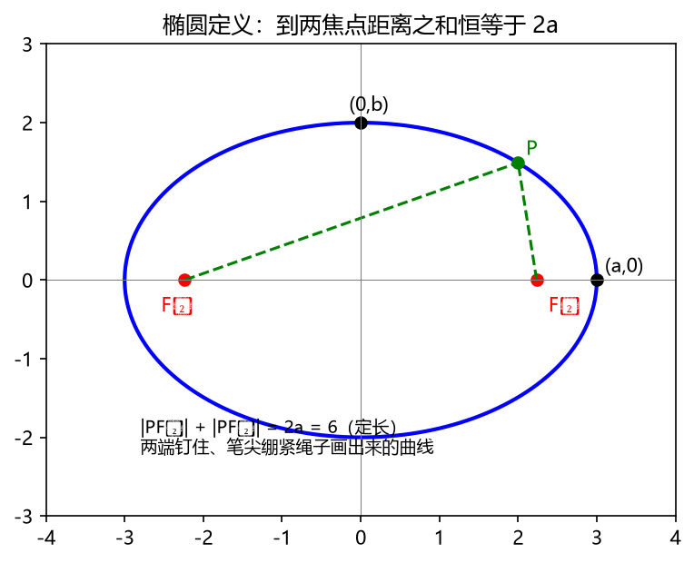
正式定义：平面上与两个定点 F1、F2 的距离之和等于常数 2a（2a > |F1F2|）的点的轨迹叫椭圆。两个定点叫焦点，|F1F2| = 2c。
标准方程（焦点在 x 轴上）：
x2/a2 + y2/b2 = 1（a > b > 0）
其中 b2 = a2 − c2（这个关系天天用，背死）。焦点 (±c, 0)。
性质（逐条推）：
- 顶点 (±a, 0)、(0, ±b)。长轴长 2a（沿 x），短轴长 2b。
- a、b、c 的关系：从图上看，短轴顶点 (0,b) 到焦点 (c,0) 的距离正好是 a，于是 a2 = b2 + c2，即 b2 = a2 − c2。这是勾股关系。
- 离心率 e = c/a，范围 0 < e < 1。e 越接近 1，c 越接近 a、b 越小，椭圆越扁；e 越接近 0，b 越接近 a，椭圆越圆。e = 0 就退化成圆。
- 通径：过焦点垂直长轴的弦，长 = 2b2/a（把 x = c 代入方程算 y）。
- 焦点三角形：椭圆上一点 P 与两焦点 F1、F2 构成三角形，若 ∠F1PF2 = θ，则面积 S = b2·tan(θ/2)。道理：|PF1|+|PF2| = 2a，配合余弦定理和面积公式推得。
- 离心率比值式（苏州教研·专题43）：e = c/a = √(1 − (b/a)2)。给了 b/a 直接算 e，不用先绕到 c。
- 第二定义与准线（苏州教研·专题43，新教材作了解）：椭圆上任一点 P 到焦点 F 的距离 |PF|，与到对应准线的距离 d 之比恒等于 e：|PF|/d = e。准线方程 x = ±a2/c（焦点在 x 轴）。小题里用它能把"到焦点距离"和"到准线距离"互相换算。
计算流程（知二求三）：
- 椭圆就三个量 a、b、c，关系 b2 = a2−c2、e = c/a；
- 题目给两个量（如 c 和 e），先求 a，再求 b；
- 写出标准方程，先看焦点在 x 轴还是 y 轴。
例题跟讲例题：
例 3.1-a：椭圆焦点 (±3, 0)，长轴长 10，求标准方程。 解：c = 3，2a = 10 ⇒ a = 5。b2 = a2 − c2 = 25 − 9 = 16。方程 x2/25 + y2/16 = 1。 要点：先定焦点在 x 轴（给的是 (±c,0)），套 x2/a2+y2/b2 = 1。
例 3.1-b：椭圆 x2/25 + y2/9 = 1 上一点 P，∠F1PF2 = 90°，求焦点三角形面积。 解：b2 = 9，θ = 90°。S = b2·tan(θ/2) = 9·tan45° = 9。 要点：焦点三角形面积公式直接用，不用求 P 坐标。
常见陷阱：
- c2 = a2 − b2 是减号！和双曲线相反，最高频错误。
- a 永远是 a、b、c 里最大的（椭圆）。
小结：椭圆就是"扁圆"，抓住 a、b、c 勾股关系和 e = c/a 两个钥匙。
编者注·本质回扣：为什么这三种曲线叫"圆锥"曲线？说白了，拿一个平面去斜切圆锥，切的角度不同就切出三种曲线——切得平是椭圆（最"胖"），正好斜着一刀切下去是抛物线（不胖不瘦），切得陡就成了开口朝外的双曲线。这个"斜的程度"就是离心率 e：e 越小越接近圆，e = 1 正好卡在抛物线上，e>1 就翻脸成双曲线。所以 3.1 椭圆"距离和 = 2a"、3.2 双曲线"距离差 = 2a"、3.3 抛物线"到焦点 = 到准线"，看似三个定义，本质是同一个 e 在三个档位上的样子——想通 e 这个开关，三种曲线就串成一条线，公式不用分开背。
3.2 双曲线（定义：到两焦点距离之差 = 2a）
引入：双曲线像两条背对背的无限延伸的"喇叭"。发电厂的冷却塔侧面、某些导航系统（双曲线导航）都靠它。它和椭圆长得像，但一个是"距离之和"，一个是"距离之差"。
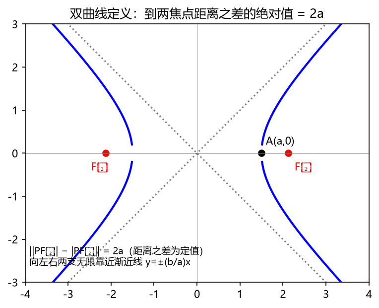
正式定义：平面上与两个定点 F1、F2 的距离之差的绝对值等于常数 2a（2a < |F1F2|）的点的轨迹叫双曲线。
标准方程（焦点在 x 轴）：
x2/a2 − y2/b2 = 1（a > 0, b > 0）
其中 c2 = a2 + b2（注意是加号！和椭圆反着）。焦点 (±c, 0)。
性质：
- 两支：x ≥ a 或 x ≤ −a，中间是空的。
- 渐近线：y = ±(b/a)x。曲线无限靠近这两条直线但永不相交。
- 离心率 e = c/a，范围 e > 1。e 越大开口越阔。
- 通径 = 2b2/a；焦点三角形面积 S = b2·cot(θ/2)（椭圆是 tan，双曲线是 cot）。
- 离心率比值式（苏州教研·专题43）：e = c/a = √(1 + (b/a)2)。
- 准线（苏州教研·专题43，新教材作了解）：x = ±a2/c，第二定义同样 |PF|/d = e。
- 共渐近线的双曲线系（苏州教研·专题43）：与 x2/a2−y2/b2 = 1 同渐近线的所有双曲线可统一设为 x2/a2 − y2/b2 = λ（λ≠0）。道理：令右边 1 变 0 就得到渐近线，反过来带参数 λ 就是"同一对渐近线"的一族。
例题跟讲例题：
例 3.2-a：双曲线 x2/4 − y2/5 = 1，求焦点坐标、渐近线、离心率。 解：a2 = 4，b2 = 5。c2 = a2 + b2 = 9，c = 3。焦点 (±3, 0)。渐近线 y = ±(b/a)x = ±(√5/2)x。e = c/a = 3/2。 要点：双曲线 c2 = a2 + b2，别写成减号。
常见陷阱：
- 椭圆 c2 = a2 − b2（减）、双曲线 c2 = a2 + b2（加）——这是本章最高频错误，写之前默念一遍。
- 渐近线别把 a、b 写反：焦点在 x 轴是 y = ±(b/a)x。
小结：双曲线两支、有渐近线，c2 = a2+b2 是它和椭圆唯一的"符号区别"。
3.3 抛物线（定义：到定点与到定直线距离相等）
引入：探照灯为什么能把光聚成一束平行光？因为反光碗是抛物线形——光源放在焦点，光经反射后平行射出。卫星接收天线同理。抛物线的核心是"到一个点的距离 = 到一条直线的距离"。
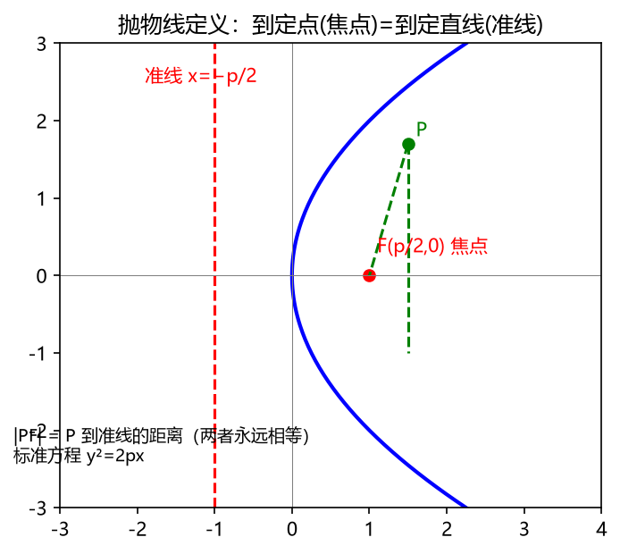
正式定义：平面上到定点 F（焦点）与到定直线 l（准线）距离相等的点的轨迹。
标准方程（开口向右）：y2 = 2px（p > 0），焦点 F(p/2, 0)，准线 x = −p/2。
性质：
- 焦点到准线距离 = p。
- 通径（过焦点垂直对称轴的弦）长 = 2p。
- 抛物线上任一点到焦点距离 = 到准线距离（定义本身）。
- 离心率 e = 1（不偏不倚，正好是椭圆和双曲线的分界）。
例题跟讲例题：
例 3.3-a：求抛物线 y2 = 8x 的焦点和准线。 解：2p = 8 ⇒ p = 4。焦点 (p/2, 0) = (2, 0)，准线 x = −2。 要点：先把方程写成 y2 = 2px，读出 p。
常见陷阱：
- 抛物线标准方程有四种开口方向（左右上下），对应焦点位置不同，先看一次项是谁。
- 别把 y2 = 2px 的焦点记成 (p,0)，是 (p/2,0)。
小结：抛物线就一个参数 p，焦点 (p/2,0)、准线 x = −p/2，到两者距离永远相等。
3.4 直线与圆锥曲线（大题核心流程）
引入：高考压轴大题，十有八九是"一条直线和圆锥曲线相交，问弦长、面积、中点、斜率"。这类题有固定打法，练熟了就是套路分。
标准流程（五步）：
- 设直线：斜率存在设 y = kx + m；斜率可能不存在要单独讨论（竖直线 x = t）。
- 联立：把直线代入曲线方程，消元得一元二次方程。
- 判别式：写 Δ > 0（相交前提），这一步经常用来反求参数范围，忘了扣分。
- 韦达定理：x1 + x2、x1x2 整体写出，不真的去解根。
- 用需求：弦长、面积、中点，全用韦达结果代。
弦长公式：直线斜率 k，交曲线于 A(x1,y1)、B(x2,y2)：
|AB| = √(1 + k2)·√[(x1+x2)2 − 4x1x2]
道理：两点距离 √[(Δx)2+(Δy)2] = |Δx|√(1+k2)，而 (x1−x2)2 = (x1+x2)2 − 4x1x2。
例题跟讲例题：
例 3.4-a：直线 y = x + 1 与抛物线 y2 = 4x 交于 A、B，求 |AB|。 解：代入：(x+1)2 = 4x ⇒ x2 − 2x + 1 = 0 ⇒ (x−1)2 = 0，Δ = 0。 Δ = 0 说明相切，A、B 重合，|AB| = 0。 换一条：y = x 与 y2=4x：x2 = 4x ⇒ x = 0 或 4，A(0,0)、B(4,4)，|AB| = √32 = 4√2。 要点：联立先看 Δ：Δ>0 相交、=0 相切、<0 相离；弦长公式只在 Δ>0 时用。
常见陷阱：
- 忘记写"Δ > 0 得 k 范围"——大题常见扣分点。
- 默认 y = kx + m，漏掉斜率不存在的竖直线。
小结：大题五步走：设线、联立、Δ、韦达、代目标。
编者注·本质回扣：为什么大题要"设线、联立、韦达、代目标"五步走？本质还是第 15 章那句"给几何装上方程"——直线和曲线一相交，交点坐标就同时满足两个方程。但高考从不要你真的把 x1、x2 解出来（解出来又烦又易错），只要 x1+x2、x1x2 这两个整体。韦达定理就是让你"设而不求"：交点的名字写上、根不解，把弦长、面积、向量数量积全部用这两个整体代掉。本章 ④例 4（MN 恒过定点 (2p,0)）、例 5（CM⃗·CN⃗ ≡ 17）那两道定点定值题，靠的就是这一招——全程不解根，只靠整体代换把参数消掉。想通了"要的是整体不是根"，压轴题就有了抓手。
3.5 点差法与设而不求（中点弦提速）
引入：题目只给弦的中点，让你求弦斜率，硬联立又烦又慢。点差法专门干这个——不求出交点，两式一减就出斜率关系。
点差法流程：
- 设交点 A(x1,y1)、B(x2,y2)，都在曲线上，代入曲线方程；
- 两式相减，因式分解出 (x1−x2)、(y1−y2)；
- 除以 (x1−x2)，得到弦斜率 k 与中点 (x0,y0) 的关系。
结论（椭圆）：k·(y0/x0) = −b2/a2，即 k = −(b2/a2)·(x0/y0)。 双曲线：k·(y0/x0) = b2/a2（加号）。
设而不求：交点坐标设了但不解，全程用韦达定理整体代换——这是大题的基本素养。
例题跟讲例题：
例 3.5-a：椭圆 x2/25 + y2/16 = 1 一弦中点为 (3, 1)，求弦所在直线斜率。 解：点差法：k·(y0/x0) = −b2/a2 = −16/25。y0/x0 = 1/3。k = −16/25 · 3 = −48/25。 要点：中点已知直接套点差结论，省掉联立。
小结：中点弦问题先想点差法，比联立快一倍。
3.6 三种曲线一表对比
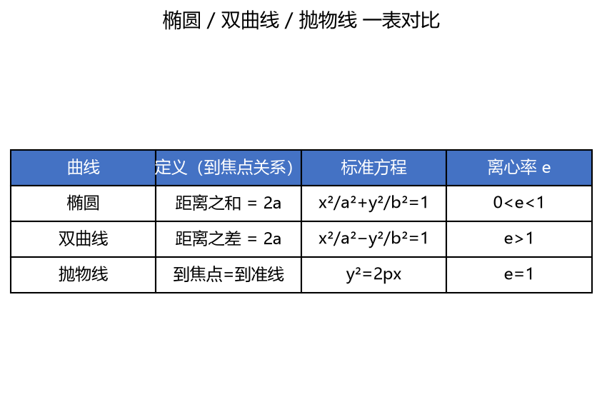
见到一个方程，先看离心率范围（椭圆<1、抛物线 = 1、双曲线>1）定类型，再套对应公式。
3.7 求轨迹方程的五种方法（苏州教研·专题47）
引入：高考压轴第二问常问"求动点 P 的轨迹方程"。题目没给你曲线类型，要你自己判断它是什么、再写方程。苏州教研把这类题总结成"建、设、限、代、化"五步：建坐标系→设动点坐标→挖限制条件→列等式代入→化简成标准方程。具体用哪种"列等式"的招，看下面五种。
五种方法（黑体为首选判断信号）：
- 直接法：动点满足的等量关系能直接写出来（如"到两定点距离和 = 常数"），直接翻译成坐标方程。
- 定义法（几何法）：动点条件一看就像某条基本曲线（椭圆/双曲线/抛物线/圆/直线）的定义，直接套定义写方程。见到"距离和/差 = 定值""到定点 = 到定直线距离"立刻用。
- 代入法（相关点法/转移法）：动点 P 依赖另一个在已知曲线上的点 Q，先用 P 的坐标表示 Q 的坐标，再代入 Q 所在的已知曲线。
- 参数法：x、y 关系不好直接找，就都用一个中间变量（角、斜率 t）表示，再消参。
- 交轨法：求两条动直线交点的轨迹——把两动直线方程联立消参，或解出交点再消参。
例题跟讲例题：
例 3.7-a（定义法）：（苏州教研·专题47，原书p.153 B组1(1)）已知圆 M:(x+√5)2+y2 = 36，定点 N(√5,0)。点 P 在圆 M 上，Q 在 NP 上，GQ⃗·NP⃗ = 0 且 NP⃗ = 2NQ⃗。求 G 的轨迹。 解：NP⃗ = 2NQ⃗ 说明 Q 是 NP 中点；GQ⃗·NP⃗ = 0 说明 GQ⊥NP，即 GQ 是 NP 的中垂线 ⇒ |GP| = |GN|。于是 |GM|+|GN| = |GM|+|GP| = |MP| = 6（圆 M 半径），而 |MN| = 2√5。因 6>2√5，G 的轨迹是以 M、N 为焦点的椭圆：2a = 6⇒a = 3，2c = 2√5⇒c = √5，b2 = a2−c2 = 9−5 = 4。 方程 x2/9 + y2/4 = 1。 要点：看到"到两定点距离和 = 常数"就用定义法，不用硬列方程。
例 3.7-b（代入法）：（苏州教研·专题22，原书p.93 A组3 思想）已知定点 A(1,2)、B(−4,4)，点 C 在圆 (x−3)2+(y−6)2 = 9 上动，求 △ABC 重心 G 的轨迹。 解：设 G(x,y)、C(x0,y0)。重心坐标 (x,y) = ((1−4+x0)/3,(2+4+y0)/3)，反解 x0 = 3x+3、y0 = 3y−6。C 在已知圆上：(x0−3)2+(y0−6)2 = 9 ⇒ (3x)2+(3y−12)2 = 9 ⇒ x2+(y−4)2 = 1。 要点：G 依赖 C，C 在已知圆上——先用 G 表示 C，再代入已知曲线，就是代入法。
常见陷阱：求出方程后要回头看有没有该排除的点（如轨迹是一段弧、要去掉某些点），保证"纯粹性"。
小结：轨迹题先认方法——像定义用定义法，有关联点用代入法，两条动直线交点用交轨法，都不像就直接法/参数法列方程。
④ 例题详解（先做再看）
例题例 1（求椭圆方程）：椭圆焦点 (±√5, 0)，离心率 √5/3，求标准方程。
自己做：c、e → a → b。
解：c = √5，e = c/a = √5/3 ⇒ a = 3。b2 = a2 − c2 = 9 − 5 = 4。 方程：x2/9 + y2/4 = 1。 要点：e = c/a 是枢纽，三量 c、a、b 知二求三（椭圆 b2 = a2 − c2）。
例题例 2（焦点三角形）：椭圆 x2/9 + y2/4 = 1 上一点 P，∠F1PF2 = 60°，求焦点三角形面积。
自己做：套 S = b2·tan(θ/2)。
解：b2 = 4，S = 4·tan 30° = 4·(√3/3) = 4√3/3。 要点：焦点三角形面积公式直接秒；验证：此题无需求 P 坐标。
例题例 3（联立求弦长）：直线 y = x + 1 与抛物线 y2 = 4x 交于 A、B，求 |AB|。
自己做：联立 → 韦达 → 弦长公式。
解：代入：(x + 1)2 = 4x ⇒ x2 − 2x + 1 = 0 ⇒ (x − 1)2 = 0，Δ = 0（相切！）。 这题直线与抛物线相切，A、B 重合，|AB| = 0。 换一题：直线 y = x 与 y2 = 4x：x2 = 4x ⇒ x = 0 或 4，A(0,0)、B(4,4)，|AB| = √(16 + 16) = 4√2。 要点：联立后先看 Δ：Δ > 0 相交、 = 0 相切、< 0 相离；弦长公式只在 Δ > 0 时用。
例题例 4（抛物线·定点定值·齐次化思想）（苏州教研·专题47，原书p.153）：过抛物线 y2 = 2px（p > 0）的顶点 O 作两条互相垂直的直线 OM、ON，分别交抛物线于另一点 M、N。求证：直线 MN 恒过定点。
自己做：M、N 用纵坐标作参数，先把"OM⊥ON"翻译成 y1y2 的关系。
解：设 M(y12/2p, y1)、N(y22/2p, y2)。则 k_OM = 2p/y1，k_ON = 2p/y2。 OM⊥ON ⇒ k_OM·k_ON = 4p2/(y1y2) = −1 ⇒ y1y2 = −4p2。 k_MN = (y2−y1)/(y22/2p − y12/2p) = 2p/(y1+y2)。直线 MN：y−y1 = [2p/(y1+y2)](x − y12/2p)。 令 y = 0 求横截距：x = y12/2p − y1(y1+y2)/(2p) = −y1y2/(2p) = −(−4p2)/(2p) = 2p。 所以直线 MN 恒过定点 (2p, 0)。 要点：两垂直 ⇒ 斜率积 = −1 ⇒ y1y2 为定值，弦的横截距只含 y1y2、与单个点无关——这就是"积为定值 ⇒ 过定点"。对应方法手册 2.1 齐次化的落点。
例题例 5（双曲线·设而不求·定点定值）（苏州教研·专题47，原书p.156）：已知双曲线 x2/4 − y2 = 1，点 B(0,−1)。过 B 的直线 l 交双曲线于 M、N 两点。问在 y 轴上是否存在定点 C，使 CM⃗·CN⃗ 为常数？若存在求出 C。
自己做：设 l:y = kx−1，联立写韦达，把 CM⃗·CN⃗ 全用 x1+x2、x1x2 表示。
解：代入 x2/4 − (kx−1)2 = 1 ⇒ (1−4k2)x2 + 8kx − 8 = 0。 韦达：x1+x2 = 8k/(4k2−1)，x1x2 = 8/(4k2−1)。设 C(0,n)，y1 = kx1−1、y2 = kx2−1。 CM⃗·CN⃗ = x1x2 + (y1−n)(y2−n) = (1+k2)x1x2 − k(n+1)(x1+x2) + (n+1)2 = (1+k2)·8/(4k2−1) − k(n+1)·8k/(4k2−1) + (n+1)2 = 8(1−nk2)/(4k2−1) + (n+1)2。 要它与 k 无关，让分子分母成倍数：取 n = 4，则 1−4k2 = −(4k2−1)，上式 = 8·(−1) + (4+1)2 = −8 + 25 = 17。 故存在定点 C(0, 4)，使 CM⃗·CN⃗ ≡ 17。 要点：全程只写韦达、不解根（设而不求）；让含 k 的分子与分母配成倍数消掉 k，即得定点 n。对应方法手册 2.4。
⑤ 出口检测
自测（20 分钟，每题 2 分）：
- 椭圆 x2/16 + y2/9 = 1 的焦距是多少？
- 双曲线 x2/4 − y2/5 = 1 的渐近线方程。
- 抛物线 y2 = 8x 的焦点坐标与准线。
- 椭圆 x2/25 + y2/9 = 1 的离心率。
- 直线 y = kx + 1 与椭圆 x2/4 + y2 = 1 相交，求 Δ > 0 时 k 的范围（写联立方程即可）。
真题验收：完成 2020–2024 新高考Ⅰ卷圆锥曲线解答题第 1 问 1 道（求方程/离心率/焦点三角形）+ 小题 1 道：每题限时、全对 → 过关。
过关标准：自测 ≥ 10 分 且 真题达标 → 打卡。
课后习题（分层练习）
A 基础巩固
A1.【椭圆方程】椭圆焦点 (±4, 0)，离心率 4/5，求标准方程。
A2.【椭圆性质】椭圆 x2/100 + y2/36 = 1，求长轴长、短轴长、焦距、顶点坐标。
A3.【双曲线方程与渐近线】双曲线 x2/9 − y2/16 = 1，求实半轴、虚半轴、焦点坐标、渐近线方程、离心率。
A4.【抛物线方程】抛物线焦点为 (−3, 0)，求标准方程和准线。
A5.【离心率】椭圆 x2/25 + y2/16 = 1 的离心率是多少？
A6.【联立判别式】直线 y = x + m 与椭圆 x2/4 + y2 = 1 联立，写出所得一元二次方程，并求 Δ > 0 时 m 的范围。
B 能力提升
B7.【焦点三角形】椭圆 x2/25 + y2/16 = 1 上一点 P，∠F1PF2 = 60°，求 △F1PF2 的面积。
B8.【弦长公式】直线 y = 2x 与抛物线 y2 = 4x 交于 A、B，求 |AB|。
B9.【点差法中点弦】椭圆 x2/16 + y2/4 = 1 一弦中点为 (2, 1)，求这条弦所在直线的斜率。
B10.【通径】求椭圆 x2/9 + y2/4 = 1 的通径长。
C 真题挑战（真实新高考题）
C1.【双曲线离心率·2025 新高考Ⅰ卷第 3 题】若双曲线 C 的虚轴长为实轴长的 √7 倍，则 C 的离心率为（ ）。 A. √2 B. 2 C. √7 D. 2√2
C2.【双曲线离心率·2024 新高考Ⅰ卷第 12 题】设双曲线 x2/a2 − y2/b2 = 1（a>0,b>0）的左右焦点为 F1、F2，过 F2 作平行于 y 轴的直线交 C 于 A、B 两点，若 |F1A| = 13，|AB| = 10，则 C 的离心率为＿＿＿＿。
C3.【椭圆方程·2025 新高考Ⅰ卷第 18 题第 (1) 问】设椭圆 x2/a2 + y2/b2 = 1（a>b>0）的离心率为 2√2/3，下顶点为 A，右顶点为 B，|AB| = √10。求椭圆的标准方程。
C4.【点差法·中垂线】（苏州教研·专题47，原书p.153）已知 A(x1,y1)、B(x2,y2) 两点在椭圆 x2/25 + y2/9 = 1 上，且 x1 + x2 = 8。试在 x 轴上求一点 D，使得 |DA| = |DB|。
⑥ 常见坑清单
- 椭圆 c2 = a2 − b2、双曲线 c2 = a2 + b2——符号相反是最高频错误。
- 双曲线渐近线：焦点在 x 轴时 y = ±(b/a)x，别把 a、b 颠倒。
- e 的范围：椭圆 (0,1)、双曲线 (1,∞)、抛物线 e = 1——判断类型第一件事。
- 直线与曲线联立：Δ ≥ 0 是前提，忘记写"Δ > 0 得 k 的范围"是大题常见扣分。
- 弦长公式：√(1+k2)·√[(x1+x2)2 − 4x1x2]，判别式部分不能直接抄 x1+x2、x1x2。
- 斜率不存在（直线垂直 x 轴）情况单独讨论，别默认 y = kx + m。
本章公式速查表
与《高中数学常用公式·修订版》第六部分"圆锥曲线"逐条核对一致。
椭圆
|MF1| + |MF2| = 2a（2a > |F1F2| = 2c）
- 大白话：椭圆上随便一点，到两个焦点的距离加起来永远等于 2a。
- 用的时候：用定义求轨迹；必须 2a > 焦距，等号就退化成线段、小于就画不出图。
- 记忆要点：到两焦点距离和 = 长轴长。
x2/a2 + y2/b2 = 1（焦点在 x 轴，a > b > 0）
- 大白话：椭圆的标准长相，分母大的 a 在 x2 上就是焦点在 x 轴。
- 用的时候：写方程前先看焦点在 x 轴还是 y 轴；哪个分母大，焦点就在那个轴上。
b2 = a2 − c2（a 最大）
- 大白话：短半轴 b、半焦距 c、长半轴 a 满足勾股，且 a 是三者里最大的。
- 用的时候：知二求三天天用；椭圆是减号，最高频写成加号。
- 记忆要点：椭圆 c2 = a2 − b2（减）。
e = c/a（0 < e < 1）
- 大白话：离心率衡量椭圆有多扁，越接近 1 越扁、越接近 0 越圆。
- 用的时候：给 c 和 e 先求 a；e 是 a、b、c 知二求三的枢纽。
通径 = 2b2/a
- 大白话：过焦点垂直长轴切出来的那条最短弦。
- 用的时候：把 x = c 代回方程求 y 即得；小题当结论直接用。
焦点三角形面积 S = b2·tan(θ/2)（θ = ∠F1PF2）
- 大白话：椭圆上一点跟两焦点围成的三角形，只看顶角就能算面积。
- 用的时候：题里给 ∠F1PF2 又不需求 P 坐标时直接套；椭圆用 tan。
e = √(1 − (b/a)2)（椭圆离心率比值式）
- 大白话：给了 b/a 直接平方算 e，不用先求 c。
- 用的时候：选择题给"虚轴/实轴""b 与 a 的倍数"时秒算 e。
第二定义 |PF|/d = e；准线 x = ±a2/c（新教材作了解）
- 大白话：椭圆上一点到焦点的距离，是它到对应准线距离的 e 倍。
- 用的时候：把"到焦点距离"和"到准线距离"互相换，省得算坐标；准线在焦点外侧 a2/c 处。
双曲线
||MF1| − |MF2|| = 2a（2a < |F1F2|）
- 大白话：双曲线上一点到两焦点距离之差的绝对值恒为 2a，所以有两支。
- 用的时候：和椭圆就差一个字——"和"变"差"；必须 2a < 焦距。
x2/a2 − y2/b2 = 1（a > 0, b > 0）
- 大白话：双曲线标准方程，中间是减号，中间是空的（|x| ≥ a）。
c2 = a2 + b2（c 最大）
- 大白话：双曲线里 a、b、c 也是勾股关系，但这次是加号，c 最大。
- 用的时候：和椭圆反着写！这是本章第一高频坑。
- 记忆要点：双曲线 c2 = a2 + b2（加）。
渐近线 y = ±(b/a)x
- 大白话：双曲线两头无限靠近但永远碰不到的两条直线。
- 用的时候：焦点在 x 轴就是 b/a；别把 a、b 写反。
- 记忆要点：令方程右边 1 变 0 即得渐近线。
e = c/a（e > 1）
- 大白话：双曲线离心率必大于 1，越大开口越阔；e = √2 就是等轴双曲线。
通径 = 2b2/a；焦点三角形面积 S = b2·cot(θ/2)
- 大白话：通径和椭圆同公式；焦点三角形面积把椭圆的 tan 换成 cot。
- 用的时候：别记混——椭圆 tan、双曲线 cot。
e = √(1 + (b/a)2)（双曲线离心率比值式）
- 大白话：给了 b/a 直接算 e；e = √2 就是等轴双曲线。
- 用的时候：C1 那类"虚轴是实轴几倍"直接套；b/a = √7 ⇒ e = √(1+7) = 2√2。
准线 x = ±a2/c；同渐近线双曲线系 x2/a2 − y2/b2 = λ
- 大白话：准线位置和椭圆同公式；同渐近线的一族双曲线右边换成参数 λ。
- 用的时候：求"与某双曲线共渐近线"的方程时设成 λ；第二定义 |PF|/d=e 同样适用。
抛物线
y2 = 2px（p > 0，开口向右）
- 大白话：到焦点距离等于到准线距离的点的轨迹，标准式里一次项是谁焦点就在谁轴上。
- 用的时候：先把方程写成 y2 = 2px 的样子读出 p。
焦点 F(p/2, 0)，准线 x = −p/2
- 大白话：焦点在原点右边半个 p 处，准线在左边半个 p 处。
- 用的时候：别把焦点记成 (p,0)，是 (p/2,0)；焦点到准线距离 = p。
通径 = 2p；离心率 e = 1
- 大白话：抛物线通径就是 2p；e 恒等于 1，正好卡在椭圆和双曲线中间。
焦点弦 x1x2 = p2/4，y1y2 = −p2
- 大白话：过焦点的弦两端坐标乘积是固定的，小题直接套。
- 用的时候：只对过焦点的弦成立；前面带个负号别漏。
焦半径（角度式）：|AF| = p/(1−cosθ)，|BF| = p/(1+cosθ)（θ 为焦点弦 AB 的倾斜角）
- 大白话：焦点弦被焦点分成两段，各段长度用倾斜角 θ 直接写。
- 用的时候：比 x1+p/2 更快；两段一长一短，cosθ 一减一加。
焦点弦长 |AB| = 2p/sin2θ；S△AOB = p2/(2sinθ)；1/|AF| + 1/|BF| = 2/p
- 大白话：过焦点的弦长、它与原点围成三角形的面积，都只跟倾斜角 θ 有关。
- 用的时候：θ=90°（通径）时弦最短 =2p；倒数和恒为 2/p，与弦怎么转无关。
直线与曲线联立
|AB| = √(1 + k2)·√[(x1+x2)2 − 4x1x2]
- 大白话：用韦达定理写出来的弦长，不用真解出两个交点。
- 用的时候：联立得一元二次方程后，先写 Δ > 0 再套；Δ ≤ 0 不能用。
点差法：椭圆 k·(y0/x0) = −b2/a2；双曲线 = +b2/a2（中点 (x0, y0)）
- 大白话：已知弦中点求斜率，两式一减直接出，省掉联立。
- 用的时候：椭圆是负号、双曲线是正号；用完要代回验证 Δ > 0。
高级方法·进阶
对应《不超纲高级方法手册》二.2.1～二.2.4。每条标注课标红线。
进阶 1：齐次化（手册 二.2.1）——斜率之和/积问题
- 适用信号：过同一点 P 的两条直线，求/证 k1+k2 或 k1·k2 为定值。
- 操作步骤：①P 不在原点先平移坐标系；②直线写成 mx+ny=1；③联立曲线，把一次项乘 (mx+ny)、常数项乘 (mx+ny)2，凑成关于 (y/x) 的齐次方程；④令 t=y/x（即斜率），韦达定理直出 k1+k2、k1·k2。
- 例：过椭圆上定点 P 作两互相垂直的弦，证弦过定点。配套例题见本章 ④例 4（抛物线顶点作两垂直弦，证 MN 过定点 (2p,0)，苏州教研·专题47）——k_OM·k_ON=−1 ⇒ y1y2 定值 ⇒ 横截距固定，正是"积为定值 ⇒ 过定点"。
- 课标依据：直线与曲线联立、韦达定理。✓ 不超纲（高考可放心用，是计算技巧）。平移后记得还原结论；斜率不存在单独讨论。
进阶 2：点差法·中点弦与第三定义（手册 二.2.2）
- 适用信号：弦中点已知/求中点；两点与中心连线斜率关系。
- 操作步骤：设 A(x1,y1)、B(x2,y2) 代入曲线两式相减 → 得 k 与中点关系（见速查表）。
- 第三定义（小题结论）：椭圆上两点与中心连线斜率积 = −b2/a2；双曲线 = b2/a2；圆 = −1。
- 配套例题：本章 3.5 例 3.5-a（中点求斜率）+ 课后 C4（已知 x1+x2=8，点差法求中垂线与 x 轴交点 D，苏州教研·专题47）。
- ✓ 不超纲。点差结果要代回验证 Δ>0。
进阶 3：二级结论速查（手册 二.2.3）
- 椭圆：通径 2b2/a；焦点三角形 S=b2tan(θ/2)；焦半径 r1=a+ex0、r2=a−ex0。
- 双曲线：焦点三角形 S=b2cot(θ/2)；等轴双曲线 ⇔ e=√2。
- 抛物线 y2=2px：焦点弦 x1x2=p2/4、y1y2=−p2；以焦点弦为直径的圆与准线相切。
- ✓ 不超纲（均为定义/方程推论）；大题直接用建议加一句推导。
- 超纲红线：极点极线理论（可"秒杀"定点定值）——超纲，考试禁用，只用来猜答案、检验结果。
进阶 4：设而不求整体操作（手册 二.2.4）
- 过定点 (m,0) 设 x=ty+m（避免讨论斜率不存在）；
- 联立消元 → Δ>0、韦达；
- 弦长 √(1+k2)·√((x1+x2)2−4x1x2)；面积 ½·|AB|·d；向量 OA·OB = x1x2+y1y2；
- 把目标式全用 x1+x2、x1x2、k 表示，别中途解根。
- 配套例题：本章 ④例 5（双曲线 x2/4−y2=1，过 B(0,−1) 设 y=kx−1，韦达整体代换 CM⃗·CN⃗，求得定点 C(0,4)、常数 17，苏州教研·专题47）。
- ✓ 不超纲（大题标准规范）。
自测答案：1. c2 = 16 − 9 = 7，2c = 2√7；2. y = ±(√5/2)x；3. p = 4，焦点 (2, 0)，准线 x = −2；4. e = c/a = 4/5；5. 代入得 (1/4 + k2)x2 + 2kx + 1 − 1 = 0 ⇒ (k2 + 1/4)x2 + 2kx = 0，Δ = 4k2 ≥ 0 恒成立（此直线恒与椭圆相交，因过 (0,1) 在椭圆内）。
课后习题答案
A1. c = 4，e = c/a = 4/5 ⇒ a = 5。b2 = a2−c2 = 25−16 = 9。方程 x2/25 + y2/9 = 1。 A2. a=10, b=6, c=8。长轴 20，短轴 12，焦距 16。顶点 (±10,0)、(0,±6)。 A3. a=3, b=4, c=5。焦点 (±5,0)。渐近线 y=±(4/3)x。e=5/3。 A4. 焦点 (−3,0) 开口向左，方程 y2 = −12x（2p=12），准线 x=3。 A5. c2=25−16=9，c=3，e=3/5。 A6. 代入 y=x+m：x2/4+(x+m)2=1 ⇒ (5/4)x2+2mx+m2−1=0。Δ=(2m)2−4·(5/4)·(m2−1)=4m2−5m2+5=5−m2。Δ>0 ⇒ −√5<m<√5。
B7. b2=16，S=16·tan30°=16·(√3/3)=16√3/3。 B8. 联立 (2x)2=4x ⇒ 4x2−4x=0 ⇒ x=0 或 1。A(0,0)、B(1,2)。|AB|=√(1+4)=√5。 B9. 点差法：k·(y0/x0)=−b2/a2=−4/16=−1/4。y0/x0=1/2。k=−1/4·2=−1/2。 B10. 通径=2b2/a=2·4/3=8/3。
C1. D。虚轴长 2b、实轴长 2a，题意 b/a=√7。e=√(1+b2/a2)=√(1+7)=√8=2√2。 C2. 过 F2(c,0) 竖直线交双曲线：x=c 时 y2=b2(c2/a2−1)=b4/a2，半弦=b2/a。|AB|=2b2/a=10 ⇒ b2/a=5。A(c,b2/a)，|F1A|=√((2c)2+(b2/a)2)=√(4c2+25)=13 ⇒ 4c2+25=169 ⇒ c=6。又 c2=a2+b2=36 且 b2=5a，得 a2+5a=36 ⇒ a=4。e=c/a=6/4=3/2。 C3. e=c/a=2√2/3，故 b2/a2=1−e2=1/9，即 b=a/3。|AB|=√(a2+b2)=√(a2+a2/9)=a√(10/9)=√10 ⇒ a=3，b=1。标准方程 x2/9 + y2 = 1。 C4. 设 AB 中点 M(x0,y0)，则 x0=(x1+x2)/2=4。点差法两式相减：(x12−x22)/25=−(y12−y22)/9 ⇒ k_AB=(y1−y2)/(x1−x2)=−9(x1+x2)/[25(y1+y2)]=−9·8/(25·2y0)=−36/(25y0)。|DA|=|DB| 说明 D 在 AB 中垂线上，中垂线斜率=25y0/36 且过 M(4,y0)：令 y=0，0−y0=(25y0/36)(x_D−4) ⇒ x_D=4−36/25=64/25。故 D((64/25, 0))。
一通百通
圆锥曲线大题的通用骨架就是三步：① 设线、联立（直线 y=kx+m 代入曲线，消元得一元二次方程，先写 Δ>0）→ ② 韦达（整体写出 x1+x2、x1x2，绝不真解根）→ ③ 翻译条件（把弦长、面积、中点、斜率积、向量数量积这些几何要求，全部用韦达整体代换，最后解出参数或证明定值）。中点弦还有一条提速道——点差法（两式相减直接出斜率与中点关系）。会这一套"联立→韦达→翻译条件"的设而不求，椭圆、双曲线、抛物线的大题就通了：曲线换了，流程一模一样。
跨章结合
- 本章"联立韦达" + 第 15 章"点到直线距离/弦长公式"：高考大题里"直线与曲线相交求三角形面积"，就是"½·弦长·第三个顶点到这条弦的距离"——弦长用本章韦达整体写，高用第 15 章的点到直线距离公式，两章一碰就出答案。本章 C2 已把这个结合点挑明（面积 = ½·弦长·d）。（综合原理说明，非新数值题）
- 本章"焦点三角形面积" + 第 08 章解三角形"余弦定理/面积公式"：椭圆上一点 P 与两焦点 F1、F2 围成的三角形，|PF1|+|PF2|=2a 来自椭圆定义，再配上余弦定理和面积公式，才推得 S=b2tan(θ/2)。既有真题落点：本章 C3（2025 新高考Ⅰ卷第 18 题第 (1) 问）先用 e=c/a 与 |AB|=√(a2+b2) 求椭圆方程，是"定义+解三角形边角关系"的典型结合。
本章与前后章
本章是解析几何的压轴章：前接第 08 章解三角形（余弦定理、焦点三角形面积 S=b2tan(θ/2) 的推导底子）和第 15 章直线与圆（点到直线距离、联立消元、弦长公式全是本章复用的工具）；向后直接通向高考解答题压轴（新高考Ⅰ卷圆锥曲线解答题，如本章 C3 的 2025 新高考Ⅰ卷第 18 题第 (1) 问）。学完这章，椭圆/双曲线/抛物线的定义、离心率、焦点三角形、联立韦达流程你就都有了，手里这套"设而不求"骨架，是全卷倒数第二道大题的主力打法。
高考怎么考
本章是新高考Ⅰ卷解答题压轴的常客：小题考离心率与基本性质（如 C1 的 2025 新高考Ⅰ卷第 3 题双曲线离心率 e=2√2、C2 的 2024 新高考Ⅰ卷第 12 题），解答题第 1 问求方程/离心率/焦点三角形（如 C3 的 2025 新高考Ⅰ卷第 18 题第 (1) 问），第 2 问是定点、定值、范围类设而不求大题（如 C4 点差法求 D 的横坐标 64/25）。难度全卷最高一档，但流程固定——设线、联立、Δ、韦达、代目标，想通原理就是"套路分"；丢分大多丢在漏写 Δ>0、忘讨论斜率不存在、以及不会把几何条件翻译成韦达整体。
计数原理（排列、组合、二项式定理）
本章本质核心：计数原理的本质是"分类相加、分步相乘"——一件事分几类办法，任选一类就完事，各类相加（加）；一件事要分几步，每步都做完才算完，步步相乘（乘）。本章排列 A(n,m)、组合 C(n,m)、二项式定理全是在回答"有多少种"这一个问题，所有公式都是这两条计数规则的展开：排列是"分步排队"、组合是"分步选人再去掉顺序"、二项式是"n 个 (a+b) 连乘后按次数归类"。
为什么有用：学了它，排队、分组、抽样、二项式展开求系数这类"数有多少种"的题就能自己推出来——不靠死背公式，想通"分类相加、分步相乘"两条规则，A(n,m)、C(n,m)、通项公式都是从这两条自然长出来的。
① 门槛自测（进章前，10 分钟）
- 从 3 个人中选 1 人当组长，有几种选法？
- 从 3 个人中选 2 人排成一排，有几种排法？
- 3! = ？(阶乘)
- "分类"和"分步"有什么区别？（吃饭：选米饭或面条 vs 先选主食再选菜）
- 计算 5 × 4 × 3。
判定：5 题答对 4 题以上 → 进章。
② 学习目标
- 理解并区分分类加法计数原理与分步乘法计数原理
- 掌握排列、组合的概念与公式
- 会解决典型计数问题（相邻/不相邻/有限制位置）
- 掌握二项式定理与通项公式（求指定项/系数）
③ 正文讲解
本章结构导图：
计数原理
├─ 3.1 两大原理 ── 分类用加、分步用乘（一切的地基）
├─ 3.2 排列 ── 有顺序地排队 A(n,m)
├─ 3.3 组合 ── 无顺序地选人 C(n,m)
├─ 3.4 典型技巧 ── 捆绑/插空/优先位置/分组分配
└─ 3.5 二项式定理 ── (a+b)^n 展开，通项定系数
3.1 两大计数原理（一切计数的基础）
引入：中午吃饭。食堂有米饭、面条、馒头三种主食，菜有荤、素两种。问："选一种主食"有几种选法？——3 种（米饭、面条、馒头任选其一）。问："选一份套餐（主食+菜）"有几种？——3 种主食 × 2 种菜 = 6 种。前一个是"几选一"（分类），后一个是"先主食再菜"（分步）。
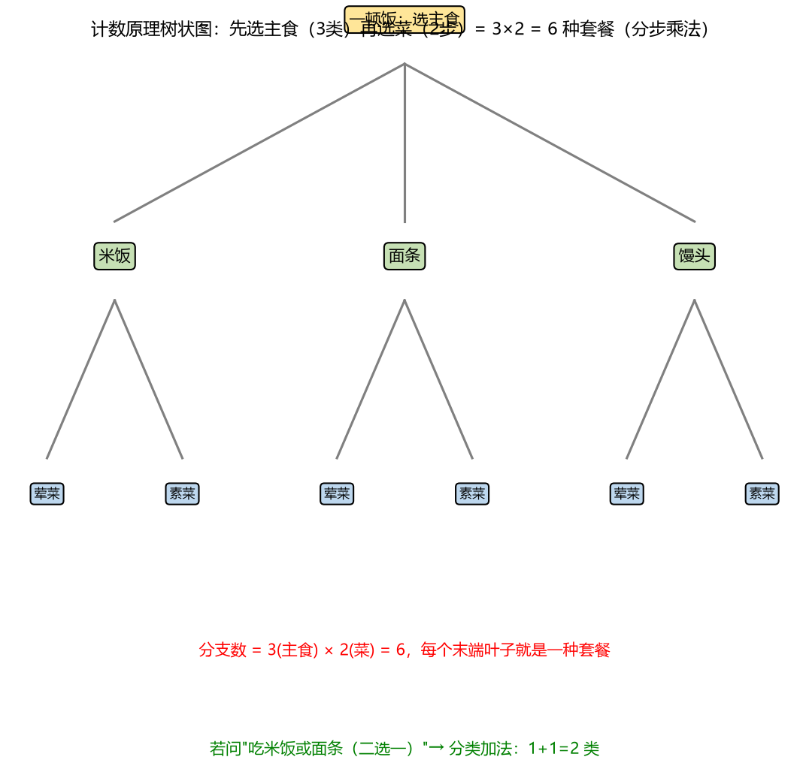
正式定义：
- 分类加法计数原理：完成一件事有 k 类互斥办法，第 i 类有 ni 种方法，则总方法数 = n1 + n2 + … + nk。关键词"要么…要么…"。
- 分步乘法计数原理：完成一件事要分 k 个步骤，第 i 步有 ni 种方法，缺一不可，则总方法数 = n1 × n2 × … × nk。关键词"先…再…"。
判断口诀："或"用加，"和/再"用乘。
- 能一口气"任选一类就完事"→ 加；
- 必须"一步接一步都做完才算完"→ 乘。
例题跟讲例题：
例 3.1-a：从甲地到乙地，有 3 班火车、2 班汽车、1 班飞机。一天中从甲到乙有几种走法？ 解：任选一种交通工具即可（分类），加法：3 + 2 + 1 = 6 种。 要点：都是"从甲到乙"，选一种就完事 → 加。
例 3.1-b：从 4 名男生、3 名女生中各选 1 人参加活动，几种选法？ 解：选男生一步、选女生一步，两步都要做（分步），乘法：4 × 3 = 12 种。 要点："各选一个"是分步，乘。
常见陷阱：
- 分类要"不重不漏"：各类别之间不能交叉。
- 分步要"完整独立"：少一步都不行。
小结：先想清楚这件事是"几选一"还是"一步步做"，再决定加还是乘。
编者注·本质回扣：这一节看着是在讲吃饭选主食，其实是全章的"总开关"。为什么后面排列组合、二项式都能套这两条？说白了，任何一个"数有多少种"的问题，拆到最后无非两种动作：要么"这条路走不通还能走那条"（互斥分类，加），要么"这一步做完才能做下一步"（先后步骤，乘）。排队合影时"第一个位置 5 种、第二个位置 4 种"是步步相乘；选"男 1 人、女 1 人"是两步都得做。记住先判"或"还是"再"，后面所有难题都是在这两条上做文章，不会冒出新规则。
3.2 排列（有顺序）
引入：5 个人排队买饭，站成一排有多少种站法？第一个位置 5 种选法，第二个位置剩 4 人可选……位置不同就是不同排法——这就是排列。
正式定义：从 n 个不同元素中取出 m（m ≤ n）个，按一定顺序排成一列，叫一个排列。排列数：
A(n, m) = n(n−1)(n−2)…(n−m+1) = n! / (n−m)!
全排列：A(n, n) = n!。
推导：排第一个位置 n 种，第二个 n−1 种……第 m 个 n−m+1 种，步步相乘。
例题跟讲例题：
例 3.2-a：从 5 人中选 3 人排成一排合影，多少种？ 解：排列（有位置顺序）：A(5,3) = 5 × 4 × 3 = 60 种。 要点：合影站哪边位置不同就是不同照片 → 排列。
小结：要"排队/有先后/分位置"用排列 A(n,m)。
3.3 组合（无顺序）
引入：还是那 5 个人，但这次是选 3 个人去同一场比赛（不分出场顺序），选出来就行——这是组合。选出来的三个人 ABC 和 ACB 是同一组。
正式定义：从 n 个不同元素中取出 m 个合成一组（不计顺序），叫一个组合。组合数：
C(n, m) = A(n,m)/m! = n! / [m!(n−m)!]
为什么除以 m!：m 个元素的排列有 m! 种，但组合里这 m! 种只算一组，所以 A(n,m) 要除以 m!。
性质：
- C(n, m) = C(n, n−m)（对称）：选 m 个 = 挑出 n−m 个不要。
- C(n, m) = C(n−1, m−1) + C(n−1, m)（递推，杨辉三角的腰）。
排列 vs 组合：选出来还要"排位置/分先后"→ 排列；只选不排 → 组合。
例题跟讲例题：
例 3.3-a：从 10 件产品中抽 3 件检查，多少种抽法？ 解：抽样不分顺序 → 组合 C(10,3) = 10 × 9 × 8/(3 × 2 × 1) = 120。 要点：抽出来摆一堆检查，不分先后 → 组合。
小结：排列是"站队"，组合是"抱团"，差就差在要不要顺序。
编者注·本质回扣：排列和组合为什么只差一个除以 m!？本质还是分步乘法。排列是"分位置排队"：m 个位置逐个选，步步相乘得 A(n,m)。组合是"只选人不排位置"，但选出来的 m 个人内部有 m! 种排队方式，在组合里这 m! 种被算成同一种，所以要除以 m! 去重。C(n,m) = C(n,n−m) 也不难理解：挑 m 个留下，等价于挑 n−m 个不要——这只是换个角度数同一个集合，结果自然相等。
3.4 典型题型技巧（大题小题都考）
① 相邻问题 → 捆绑法：把要求相邻的元素捆成一个整体，先排整体（乘上内部排列），再和别的元素一起排。
② 不相邻问题 → 插空法：先排没有要求的元素，它们之间（含两端）产生空位，再把不相邻的元素插入空位。
③ 有限制位置 → 优先安排：谁特殊先排谁（受限元素/受限位置先处理）。
④ 分组分配：先分组再分配。注意平均分组要除以组数的阶乘（因为几组之间无编号，会重复计数）。
例题跟讲例题：
例 3.4-a：3 名男生、2 名女生排成一排。(1) 女生必须相邻；(2) 女生不相邻。 解：(1) 捆绑：两女捆成一体（内部 2! 种），与 3 男生共 4 个整体排：2!·4! = 48。 (2) 插空：先排 3 男生（3! = 6），产生 4 个空位，插入 2 女 A(4,2) = 12：6·12 = 72。 要点：相邻捆（内部要排），不相邻插（先排后插）。
例 3.4-b：6 人平均分成 3 组，多少种分法？ 解：C(6,2)C(4,2)C(2,2)/3! = 15·6·1/6 = 15。 要点：平均分组除以组数阶乘 3!，否则同一种分法被数了 6 遍。
常见陷阱：
- 捆绑法别忘内部还要排列。
- 插空法空位数 = 先排元素数 + 1（含两端）。
小结：相邻捆、不相邻插、特殊先排、均分除阶乘。
3.5 二项式定理
引入：(a+b)2 = a2+2ab+b2 你会，(a+b)3 展开呢？(a+b)100 呢？硬乘累死。二项式定理给你一张"系数表"——这就是杨辉三角。
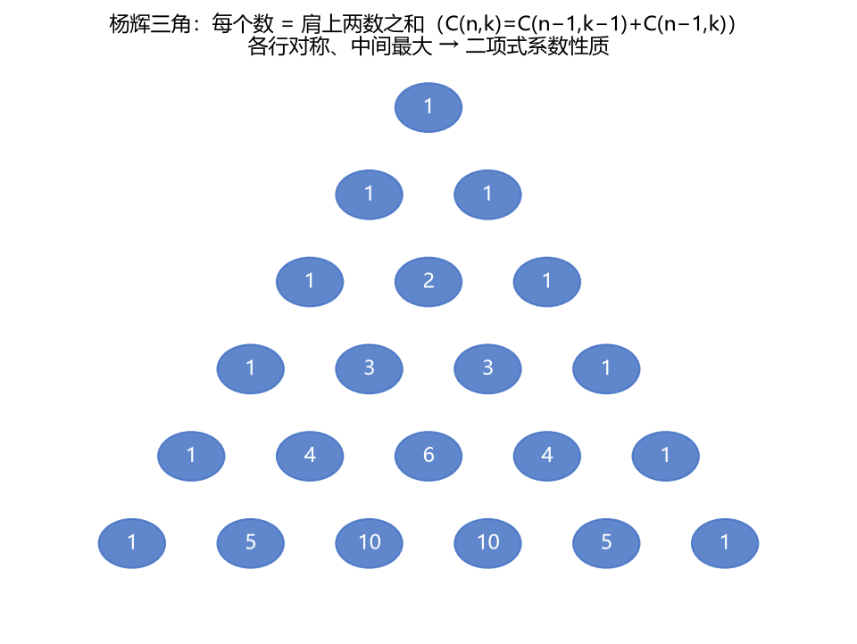
定理：
(a + b)n = C(n,0)an + C(n,1)an−1b + … + C(n,k)an−kbk + … + C(n,n)bn
- 共 n+1 项。
- 通项公式：第 k+1 项 T₍k+1₎ = C(n,k)·an−k·bk（k 从 0 开始）。
- 二项式系数就是 C(n,0), C(n,1), …, C(n,n)，中间最大、两边对称。
- 系数和：令 a=b=1，得 2n（所有系数之和）；令 a=1, b=−1，得 0（奇数项系数和 = 偶数项系数和）。
例题跟讲例题：
例 3.5-a：求 (x + 2)5 展开式中 x3 的系数。 解：T₍k+1₎ = C(5,k)·x5−k·2k。令 5−k = 3 ⇒ k = 2。系数 = C(5,2)·22 = 10·4 = 40。 要点：先定 k（由 x 的幂次），再算系数（C(n,k) 乘 b 的幂）。
例 3.5-b：求 (2x − 1)5 展开式中 x2 的系数。 解：T₍k+1₎ = C(5,k)·(2x)5−k·(−1)k。令 5−k=2 ⇒ k=3。系数 = C(5,3)·22·(−1)3 = 10·4·(−1) = −40。 要点：负号别丢，(−1)k 会决定正负。
常见陷阱：
- 二项式系数 C(n,k) ≠ 该项实际系数：实际系数要乘 a、b 的数字幂。
- 通项是"第 k+1 项"：求第 3 项时 k = 2，不是 k = 3。
小结：二项式系数是杨辉三角，通项定 k 算系数，符号看 b 的正负。
3.6 隔板法（选学）
适用：把 n 个相同的球分给 k 个盒子，每盒至少 1 个，分法 = C(n−1, k−1)。 道理：n 个球排成一排，中间 n−1 个缝插 k−1 块隔板。 例：10 个相同球放 3 盒每盒至少 1，C(9,2) = 36。
④ 例题详解（先做再看）
例题例 1（分步乘法）：从 4 名男生、3 名女生中各选 1 人参加活动，有几种选法？
自己做：分两步，乘起来。
解：选男生 4 种 × 选女生 3 种 = 12 种。 要点："各选一个"是分步，用乘法。
例题例 2（排列 vs 组合）：从 5 名学生中选 3 名，(1) 排成一排合影；(2) 参加同一项比赛。各有多少种？
自己做：第一问有顺序，第二问无顺序。
解：(1) 排列：A(5,3) = 5·4·3 = 60。(2) 组合：C(5,3) = 5·4·3/(3·2·1) = 10。 要点：合影有位置顺序 → 排列；比赛不分顺序 → 组合。
例题例 3（相邻/不相邻）：3 名男生、2 名女生排成一排，(1) 女生必须相邻；(2) 女生不相邻。各有多少种排法？
自己做：捆绑 / 插空。
解：(1) 捆绑：两女生捆成一体（内部 2! 种），与 3 男生共 4 个"整体"排（4! 种）：2!·4! = 48。 (2) 插空：先排 3 男生（3! = 6 种），产生 4 个空位（含两端），插入 2 女生（A(4,2) = 12）：6·12 = 72。 要点：相邻→捆绑（内部也要排）；不相邻→插空（先排后插）。
例题例 4（二项式定理）：求 (x + 2)5 展开式中 x3 的系数。
自己做：通项公式找 x3 项。
解：T₍k+1₎ = C(5,k)·x5−k·2k。令 5 − k = 3 ⇒ k = 2。 系数 = C(5,2)·22 = 10·4 = 40。 要点：通项公式：C(n,k)·an−k·bk，先定 k 再算系数。
⑤ 出口检测
自测（15 分钟，每题 2 分）：
- 计算 C(6, 2)。
- 5 个人排成一排，有多少种排法？
- 从 6 本书中选 2 本，有多少种选法？
- (1 + x)4 展开式中 x2 的系数。
- 3 个红球、2 个白球排成一排且白球必须相邻，有多少种？（同色球内部不区分）
真题验收：2020–2024 新高考Ⅰ卷计数原理小题 1~2 道（排列组合/二项式，多在选择题 8–14 题区间）：每题 3 分钟、全对过关。
过关标准：自测 ≥ 10 分 且 真题全对 → 打卡，进入 18 章。
课后习题（分层练习）
A 基础巩固
A1.【分类/分步原理】书架上层 6 本数学书、下层 5 本语文书。(1) 任取 1 本有几种？(2) 各取 1 本有几种？
A2.【排列】从 8 人中选 3 人分别担任班长、学习委员、文娱委员，有多少种？
A3.【组合】平面内 10 个点，任意三点不共线，能连成多少条线段？
A4.【组合性质】计算 C(7, 3) − C(7, 4)，并用性质解释结果。
A5.【捆绑法】4 男 2 女排一排，2 女必须相邻，多少种排法？
A6.【二项式通项】求 (x − 1)6 展开式中 x3 的系数。
B 能力提升
B7.【插空法】3 男 3 女排一排，要求男女相间，多少种排法？
B8.【平均分组】6 本不同的书平均分给甲、乙、丙三人，多少种分法？
B9.【隔板法】10 个相同的苹果分给 3 个小朋友，每人至少 1 个，多少种分法？
B10.【二项式系数和】求 (2x + 1)6 展开式中所有项的系数之和。
C 真题挑战（真实新高考题）
C1.【枚举计数·2024 新高考Ⅰ卷第 14 题】甲、乙两人各有四张卡片：甲卡 {1,3,5,7}，乙卡 {2,4,6,8}。两人进行四轮比赛，每轮各自从手中随机选一张比较大小，大者得 1 分，用后弃置。求四轮比赛后甲的总得分不小于 2 的概率。
C2.【计数+期望·2025 新高考Ⅰ卷第 14 题】一个箱子里有 5 个相同的球，分别标 1~5 号。每次取一颗、有放回地取三次，记"至少被取到一次的不同球的个数"为 X，求 E(X)。（提示：用本章的计数思想，配合下一章期望的线性性。）
C3.【二项式高考高频题型】求 (x2 + 1/x)6 展开式中的常数项。
⑥ 常见坑清单
- 先判断"排列 or 组合"：出现"排队/顺序/编号/角色"→ 排列；"选人/分组/抽样"→ 组合。
- 平均分组要除以重复：3 组每组 2 人（6 人），C(6,2)C(4,2)C(2,2)/3!。
- 捆绑法内部也要排列（被捆的元素有顺序）。
- 插空法：空位数 = 先排元素个数 + 1（含两端）。
- 二项式系数 ≠ 该项系数：C(n,k) 只是二项式系数，实际系数要乘 a、b 的系数幂。
- 通项是"第 k+1 项"：求第 3 项时 k = 2，不是 3。
本章公式速查表
排列组合部分：修订版手册未单列"排列组合"专章（其第十一部分为概率），本表按人教A版2019选必三第6章主线整理；排列数/组合数/二项式定理属常识性公式，口径与教材一致。
两大计数原理
分类加法：总数 = n1 + n2 + … + nk
- 大白话：一件事分几类办法，任选一类就完事，各类相加。
- 用的时候：见到"要么…要么…"用加；各类要不重不漏。
分步乘法：总数 = n1 × n2 × … × nk
- 大白话：一件事分几步，每步都做完才算完，步步相乘。
- 用的时候：见到"先…再…""各选一个"用乘；少一步都不行。
- 记忆要点："或"用加，"和/再"用乘。
排列
A(n, m) = n(n−1)…(n−m+1) = n! / (n−m)!
- 大白话：从 n 个里挑 m 个还要排成队，有位置顺序就用排列。
- 用的时候：见到"排队/分职务/排位置"用 A；m=n 时就是全排列。
全排列 A(n, n) = n!
- 大白话：n 个不同元素全部排成一排，有 n 的阶乘种。
- 用的时候：如 5 人一排 = 5! = 120。
组合
C(n, m) = A(n,m)/m! = n! / [m!(n−m)!]
- 大白话：从 n 个里挑 m 个摆一堆、不分顺序，就用组合。
- 用的时候：抽样/选人/连成线段这种不分先后的用 C；除以 m! 是因为同一组的 m! 种排列只算一次。
C(n, m) = C(n, n−m)（对称）
- 大白话：挑出 m 个留下，等价于挑出 n−m 个不要。
- 用的时候：m 很大时换成 n−m 好算（如 C(7,4) = C(7,3)）。
C(n, m) = C(n−1, m−1) + C(n−1, m)（递推）
- 大白话：杨辉三角腰上的数等于它肩上两个数之和。
- 用的时候：验算或推导性质时用。
m·C(n, m) = n·C(n−1, m−1)（苏州教研·专题54）
- 大白话：从 n 人里选 m 人再指定其中 1 人当组长 = 先指定组长再从剩下 n−1 人里选 m−1 个组员。
- 用的时候：带系数的组合数求和、化简时用；等价变形 (m/n)·C(n,m) = C(n−1,m−1)。
朱世杰恒等式：C(r, r) + C(r+1, r) + … + C(n, r) = C(n+1, r+1)（苏州教研·专题54）
- 大白话：同一行（固定上标 r）的组合数从 r 一直加到 n，等于下一行错位一格的那个数。
- 用的时候：一串组合数连加（上标相同、下标递增）直接合成一个组合数，不用逐项算。
- 记忆要点：跟杨辉三角"肩上两数相加"是同一个道理的连加版本。
分组与分配技巧
捆绑法（相邻问题）：先捆整体再排，别忘内部排列
- 大白话：要求挨着的几个人捆成一个大疙瘩，先算这个大疙瘩和别人一起排，再乘疙瘩内部的排法。
- 用的时候：见到"必须相邻"就捆；捆完内部 k! 一定要乘。
插空法（不相邻问题）：先排其余，再把不相邻元素插空
- 大白话：先把没要求的排好，它们之间（含两端）空出 n−k+1 个位置，把不相邻的插进去。
- 用的时候：见到"不能相邻"就插；空位数 = 先排元素数 + 1。
平均分组除以组数阶乘：C(n,k)C(n−k,k)… / m!
- 大白话：分成几个没名字的组时，同一种分法会被重复数 m! 遍，要除掉。
- 用的时候：组没编号（平均分成 3 组）就除；组有名字（分给甲乙丙）就不除。
隔板法：n 个相同球分 k 盒、每盒至少 1 个 = C(n−1, k−1)
- 大白话：球排好，中间 n−1 个缝插 k−1 块板。
- 用的时候：只对"球相同、每盒至少一个"用；要求"可以空盒"要先转化。
隔板法·允许空盒（非负整数解）：方程 x1+…+xk = n 的非负整数解个数 = C(n+k−1, k−1)（苏州教研·专题54）
- 大白话：允许某盒空着时，先给每盒"垫"1 个球变成每盒至少 1 个，再用隔板法——总数变成 n+k。
- 用的时候：求"x1+…+xk = n"的正整数解用 C(n−1,k−1)；非负整数解（可以取 0）用 C(n+k−1,k−1)。
- 记忆要点：正解垫 0、非负解垫 k，垫完都套"至少 1 个"的隔板公式。
多重排列（有相同元素）：n 个元素里有 m1 个相同、m2 个相同……排法 = n! / (m1!·m2!·…·mk!)（苏州教研·专题54）
- 大白话：先把所有不同元素全排 n!，再把每一组相同元素内部的 mi! 种"假不同"除掉。
- 用的时候：如 2 红 3 黄 4 白同色不区分排成一列 = 9!/(2!·3!·4!) = 1260。
- 记忆要点：和平均分组除 m! 一个道理——相同元素之间交换不算新排法。
错位排列（n 封信全装错信封）：D2 = 1，D3 = 2，D4 = 9，D5 = 44（苏州教研·专题54）
- 大白话：每个元素都不在自己原来位置上，n 不大时这几个数直接背。
- 用的时候："每个人都不坐自己位置"这类题，n≤5 直接套；n 再大用递推 Dn = (n−1)(Dn−1+Dn−2)。
- 实算复核：D4 = 4!(1−1+1/2!−1/3!+1/4!) = 24 × (9/24) = 9；D5 = 120 × (44/120) = 44。
二项式定理
(a + b)n = Σ C(n,k)·an−k·bk（共 n+1 项）
- 大白话：把 (a+b) 的高次方展开，系数就是杨辉三角那排数。
通项 T₍k+1₎ = C(n,k)·an−k·bk（k 从 0 开始）
- 大白话：第 k+1 项长什么样，全靠这条写出来。
- 用的时候：求指定项系数，先令 x 的幂等于目标解出 k，再代回算；求第 3 项对应 k = 2 不是 k = 3；实际系数还要乘 a、b 的数字幂和符号。
所有项系数之和 = 2n（令 a = b = 1）
- 大白话：把 a、b 都代成 1，加起来就是全部系数和。
- 用的时候：问"系数和"就令变量 x = 1；奇数项系数和 = 偶数项系数和 = 2n−1。
赋值法三公式：设 (ax+b)n = a0+a1x+…+anxn = f(x)（苏州教研·专题55）
- 公式：a0 = f(0)；a0+a1+…+an = f(1)；a0−a1+a2−… = f(−1)。
- 大白话：常数项、全部系数和、正负交替系数和，分别靠代 0、代 1、代 −1 得到。
- 用的时候：问"系数和""奇数项系数和""偶数项系数和"都用它，不用逐项展开。
|系数|之和的求法：|a0|+|a1|+…+|an| = (|a|x+|b|)n 展开式的系数和 = f₍∣∣₎(1)（苏州教研·专题55）
- 大白话：绝对值符号往往正负交替出现，干脆把 a、b 都换成正数再代 x = 1。
- 用的时候：求各项系数绝对值之和，别先去展开去绝对值——直接写 (|a|x+|b|)n 再令 x = 1。
系数最大（小）项：设第 r 项系数 Ar 最大，解不等式组 Ar ≥ Ar−1 且 Ar ≥ Ar+1（苏州教研·专题55）
- 大白话：系数最大那一项，一定比它左右邻居都大（或相等）。
- 用的时候：列出相邻两项系数比 ≥1 的不等式组，解出整数 r；注意这是"项的系数"不是"二项式系数"。
两个二项式相乘的通项：(a+b)n·(c+d)m 展开式一般项 = C(n,s)·an−sbs · C(m,t)·cm−tdt（苏州教研·专题55）
- 大白话：第一个式子取第 s+1 项、第二个取第 t+1 项相乘，再合并同类项。
- 用的时候：求 (a+b)n(c+d)m 展开式里某指定幂次的项，联立两个指数方程解 s、t。
求导法求和：1·C(n,1)+2·C(n,2)+…+n·C(n,n) = n·2n−1（苏州教研·专题55）
- 公式：对 (1+x)n = 1+C(n,1)x+…+C(n,n)xn 两边求导，再令 x = 1。
- 大白话：给通项里多出来的那个 k 乘号，正好用"求导把幂次拉下来"消掉。
- 实算复核（n = 3）：1·3+2·3+3·1 = 12；n·2n−1 = 3·4 = 12 ✓。
- 记忆要点：带系数 k·C(n,k) 求和 → 求导；不带系数 → 直接令 x = 1。
高级方法·进阶
本章的核心技巧（捆绑法、插空法、优先位置、隔板法）已全部包含在教材主线（3.4、3.6）中，不超纲高级方法手册中无"计数原理"的专属进阶节。下面把主线里几个最容易错的操作规范点透，均在课标范围内。
操作规范 1：捆绑/插空的"内部别漏"（适用信号→步骤）
- 适用信号：题目说"某某必须相邻/不能相邻"。
- 步骤：相邻→先捆（整体数 = n−k+1）乘内部 k!；不相邻→先排其余 n−k 个（产生 n−k+1 空位），再把 k 个插入 A(n−k+1, k)。
- ✓ 不超纲（高考可放心用）。
操作规范 2：分组分配两步走（适用信号→步骤）
- 适用信号："分成几组"或"分给几个人"。
- 步骤：①先分组（平均分组除以组数阶乘）；②若组有编号（分给甲乙丙），再乘组数阶乘分配。
- ✓ 不超纲。
操作规范 3：二项式"定 k"三步（适用信号→步骤）
- 适用信号：求展开式中某项的系数/常数项。
- 步骤：①写通项 T₍k+1₎；②令 x 的指数等于目标，解 k；③代入算系数（别漏 a、b 的数字幂和符号）。
- ✓ 不超纲。
自测答案：1. C(6,2) = 15；2. 5! = 120；3. C(6,2) = 15；4. k = 2：C(4,2) = 6；5. 白球捆绑成 1 个整体，与 3 红球共 4 个位置放 1 个整体 + 3 个红球：C(4,1) = 4（或 4!/3! = 4）。
课后习题答案
A1. (1) 分类加法：6+5=11 种。(2) 分步乘法：6×5=30 种。 A2. 三人分三个不同职务（有序）：A(8,3)=8×7×6=336 种。 A3. 两点一线无顺序：C(10,2)=10×9/2=45 条。 A4. C(7,3)=35，C(7,4)=C(7,3)=35（对称性），差 = 0。选 3 个 = 留下 4 个，所以相等。 A5. 两女捆绑（内部 2!），与 4 男共 5 个整体排 5!：2!·5!=2×120=240 种。 A6. T₍k+1₎=C(6,k)x6−k(−1)k，令 6−k=3⇒k=3：C(6,3)(−1)3=20×(−1)=−20。
B7. 男女相间：男先排 3!，女插入（男 _ 男 _ 男 _ ，3 个空位放 3 女）3!，但相间有两种起手（男女男女男女 / 女男女男女男）：2·3!·3!=2×6×6=72 种。 B8. 6 本平均分给甲乙丙（组有名字）：C(6,2)C(4,2)C(2,2)=15×6×1=90 种（分给三人不再除 3!，因为甲乙丙有区别）。 B9. 隔板法：C(10−1, 3−1)=C(9,2)=36 种。 B10. 令 x=1：(2+1)6=36=729。
C1. 把乙的 4 张卡随机配给甲的 4 张（共 4!=24 种配对）。枚举得分：甲 1 谁都比不过（恒 0 贡献），甲 3 只赢乙 2，甲 5 赢乙 2、4，甲 7 赢乙 2、4、6。枚举 24 种配对得分分布：得 0 分 1 种、得 1 分 11 种、得 2 分 11 种、得 3 分 1 种。得分 ≥2 = 11+1 = 12 种。概率 = 12/24 = 1/2。 C2. 用期望线性性（下一章详述）：设指示变量 Ii = 1 表示第 i 号球至少被取到一次。X = I1+…+I5。每个号被取到至少一次的概率 = 1 − (4/5)3 = 61/125。E(X) = 5×61/125 = 61/25 = 2.44。 C3. 通项 T₍k+1₎=C(6,k)(x2)6−k(1/x)k=C(6,k)x12−2k·x−k=C(6,k)x12−3k。令 12−3k=0 ⇒ k=4。常数项=C(6,4)=C(6,2)=15。
一通百通
这一章的"通用骨架"只有三步：① 先判断这件事是"分类"还是"分步"（"或"用加、"再"用乘）→ ② 再判断选出来要不要顺序（要顺序用 A、不要顺序用 C）→ ③ 最后按约束处理（相邻捆、不相邻插、特殊先排、均分除阶乘）。二项式求系数也走同一条路：写通项、定 k、代回算系数。会解一道计数题，就会解所有计数题——因为不管题目穿什么马甲（排队、分组、抽样、展开式），它骨子里都是在"数有多少种"。这套"先判分类分步、再判有序无序"的骨架，下一章概率算"有利情况数/总情况数"时还会直接复用。
跨章结合
- 本章计数原理 + 第 18 章概率 → 古典概型与期望综合题：古典概型 P(A)=有利事件数/总事件数，分子分母全靠本章排列组合去数；再叠上一章期望的线性性，就成了"先计数、再求 E(X)"的综合题。本章 C1（2024 新高考Ⅰ卷第 14 题）正是先枚举 24 种配对计数、再数得分≥2 的 12 种求概率；C2（2025 新高考Ⅰ卷第 14 题）则是把计数思想与下一章期望线性性结合求 E(X)=61/25。会单独计数不够，得会把数出来的"种数"翻译成概率和期望，两章才算真正接上。
- 本章 + 第 20 章附录（错位排列、隔板法）→ 计数速算模型：错位排列 D2=1、D3=2、D4=9、D5=44，隔板法 C(n−1,k−1)，都是本章"分类/分步"原理在特殊模型下的速算结论（附录已收录）。想通它们仍是分步乘法的展开，只是把固定 n 的结果背下来省时间，就不会在该用分步时误套捷径。
本章与前后章
计数原理（17）前面接第 02 章函数（门槛只需会乘除与阶乘概念），是概率统计板块的第一站；它后面直接接第 18 章概率——古典概型里"有利基本事件数/总基本事件数"，分子分母全靠本章排列组合去数。学完这一章，你手里有了概率统计的"计数器"：不会计数，概率题就是空中楼阁；同时本章也是第 19 章统计里"抽样数、列联表频数"等计数操作的底层工具。
高考怎么考
新高考Ⅰ卷里计数原理多以小题出现（排列组合、二项式定理，选择题 8–14 题区间，每年 1~2 道），偶尔与概率、期望综合成解答题一问。典型考法：排队相邻/不相邻（捆绑插空）、平均分组、二项式展开求指定项系数或常数项；2024、2025 新高考Ⅰ卷第 14 题就是计数与概率/期望综合的代表（本章 C1、C2 已收录）。难度中档、套路固定，核心就是"先判分类分步、再判有序无序"两步走，是概率统计板块里必须拿稳的送分题。
概率
公式速查：修订版 第11部分（概率）
本章本质核心：概率的本质是"随机事件的面积/份额"——一件事发生的可能性大小，就是它在全部可能结果里占的那一份。古典概型是"公平地数个数"（有利份数/总份数），几何概型是"比面积（长度、体积）"，条件概率是"把已知条件当作新的全部、在缩小的范围里重新数份额"；期望 E(X) = Σxipi 则是"按每份的概率加权求平均"。本章互斥、独立、二项/超几何/正态分布、全概率，全是这一个"算份额"原理的变体。
为什么有用：学了它，"某件事发生的可能性多大""这个方案平均收益多少、稳不稳"这类题就能落地——古典概型数份数、独立重复套二项、不放回用超几何，想通"概率 = 份额"，分布列和期望就是份额的加总，而不是背出来的表格。
① 门槛自测（进章前，10 分钟）
- 掷一枚硬币，正面朝上的概率是多少？
- 掷一枚骰子，点数为 3 的概率？
- "互斥事件"和"独立事件"的区别？（生活直觉）
- 0.5 × 0.5 = ？
- 从 1~10 中随机取一个数，取到偶数的概率？
判定：5 题答对 4 题以上 → 进章。
② 学习目标
- 掌握古典概型（等可能事件）概率计算
- 掌握互斥事件、对立事件、条件概率、独立事件
- 掌握离散型随机变量的分布列、期望、方差
- 掌握二项分布、超几何分布、正态分布（高频考点）
- 能完成高考概率解答题（含新情境，2023 起位置常在 18–19 题）
③ 正文讲解
本章结构导图：
概率
├─ 3.1 古典概型 ── 数"有利情况/总情况"
├─ 3.2 条件概率·独立 ── 已知B发生后重新数
├─ 3.3 随机变量 ── 分布列、期望、方差
├─ 3.4 重要分布 ── 二项/超几何/正态
└─ 3.5 高考大题 ── 列分布列→求期望→做决策
3.1 古典概型
引入：掷一枚均匀骰子，掷出 3 点的概率是多少？6 个面朝上的可能性一样大，3 只是其中 1 种，所以 1/6。这就是最朴素的概率——"公平"地数份数。
正式定义：古典概型要求所有基本事件等可能且有限。此时
P(A) = A 包含的基本事件数 / 基本事件总数
计数工具：枚举、树状图、排列组合（回 17 章）。
事件关系：
- 互斥：A、B 不能同时发生。P(A∪B) = P(A) + P(B)。
- 对立：A 不发生就是 B（A∪B = 全部，A∩B = 空）。P(A) = 1 − P(A)。
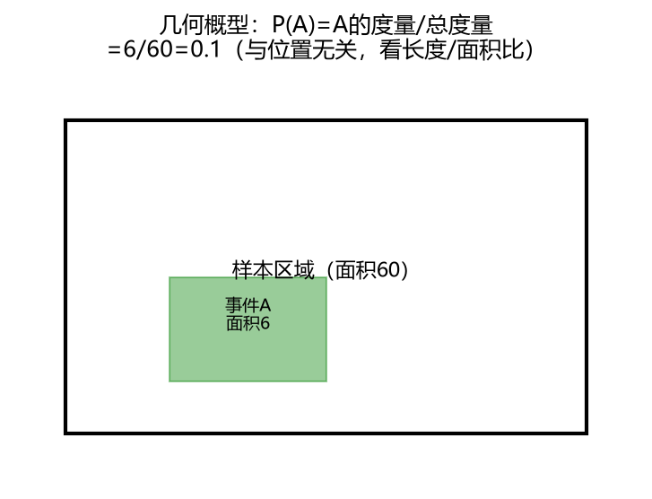
例题跟讲例题：
例 3.1-a：同时掷两枚骰子，点数和为 7 的概率。 解：总数 6 × 6 = 36。和为 7：(1,6)(2,5)(3,4)(4,3)(5,2)(6,1) 共 6 种。P = 6/36 = 1/6。 要点：两枚骰子不同，(3,4) 和 (4,3) 要分开数。
小结：古典概型就是"公平份数除法"。
编者注·本质回扣：古典概型为什么非要"等可能"三个字？说白了，只有当每种结果机会均等时，"份数比"才等于"概率"。掷硬币正反各占一半、骰子六面一样重，这时数个数才作数；要是骰子被做了手脚，六个面不等重，数 1/6 就骗人了。所以分母（总基本事件数）要靠 17 章排列组合老老实实数清，分子（有利事件数）同样不能漏——两枚骰子 (3,4) 和 (4,3) 算两种，就是因为它们是两个等可能的基本结果。概率本质上就是"公平份额"这把尺子。
3.2 条件概率与独立事件
引入：袋里 3 红 2 白。"随手摸一个是红球"概率 3/5。但如果已知第一个摸出的是红球，再摸第二个，这时袋里变成 2 红 2 白，"第二个是红球"概率就变成 2/4 = 1/2。"已知条件变了，样本空间就变了"——这就是条件概率。
条件概率：在 B 已发生条件下 A 发生的概率：
P(A | B) = P(AB) / P(B)（P(B) > 0）
含义：把 B 当作新的"全部"，在 B 里面数 AB。
独立事件：A 的发生不影响 B。
P(AB) = P(A)·P(B)（独立 ⇔ 此式成立）
独立 vs 互斥：互斥说"不能同时发生"（P(AB) = 0）；独立说"互不影响"（P(AB) = P(A)P(B)）。方向相反——互斥的事件一般不独立。举个数：P(A) = 0.5、P(B) = 0.5 若互斥，则 P(AB) = 0，而 P(A)P(B) = 0.25≠0，所以它俩不独立；若独立，P(AB) = 0.25>0，说明能同时发生，就不互斥。
例题跟讲例题：
例 3.2-a：袋 3 红 2 白不放回连取 2 个。已知第一个是红球，求第二个也是红球。 解：第一红后剩 2 红 2 白，P(第二红|第一红) = 2/4 = 1/2。 要点：条件概率 = 换个样本空间重新数。
小结：条件概率是"在已经缩小的范围里数"，独立是"两个事件井水不犯河水"。
3.3 离散型随机变量（分布列、期望、方差）
引入：投篮命中次数是个"随机数"——可能 0 次、1 次、2 次……把每个可能值和它的概率列成一张表，就是分布列；再算个"平均命中次数"，就是期望。
分布列：X 取 x1,…,xn 的概率 p1,…,pn。要求 pi ≥ 0 且 Σpi = 1。
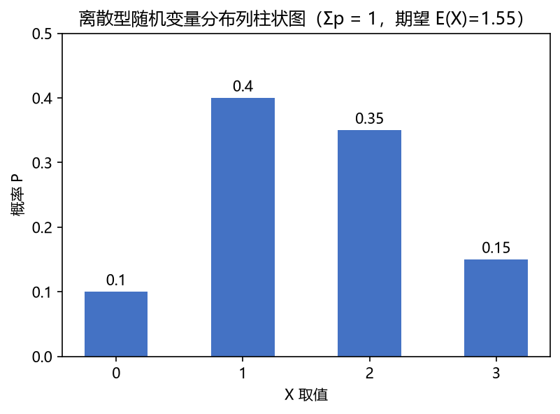
期望（均值）：E(X) = Σ xi·pi（概率加权平均）。 方差：D(X) = Σ(xi−E(X))2pi = E(X2) − [E(X)]2（描述波动大小）。
性质（为什么 b 不影响方差）：E(aX+b) = aE(X)+b 很直观——每个数据平移 b，均值也平移 b。但 D(aX+b) = a2D(X)：整体加 b 只是把整条分布平移，数据之间的"离散程度"没变，所以方差里没有 b；整体乘 a 把波动放大 a2 倍，所以乘 a2。
例题跟讲例题：
例 3.3-a：X 分布列 P(X = 0) = 0.3, P(X = 1) = 0.5, P(X = 2) = 0.2，求 E(X)、D(X)。 解：E = 0·0.3+1·0.5+2·0.2 = 0.9。 E(X2) = 0·0.3+1·0.5+4·0.2 = 1.3。D = 1.3 − 0.92 = 1.3 − 0.81 = 0.49。 要点：D = E(X2)−[E(X)]2 比直接算离差平方快。
小结：期望是"加权平均"，方差是"波动大小"。
编者注·本质回扣：期望 E(X) = Σxipi 看着是新公式，本质就是"按份额加权的平均数"。普通平均数是每个数权重相同（各占 1/n），期望是每个取值按它出现的概率 pi 加权——出现概率大的值，在"长期平均"里分量就重。这正是"概率 = 份额"的延续：pi 就是这个取值在全部可能里占的份额，把每个取值乘它的份额再相加，就得到随机变量的长期平均值。方差则是再算一次"围绕这个平均波动多大"，所以决策题先比期望（看平均收益）、期望相同再比方差（看稳不稳）。
3.4 三个重要分布
① 二项分布 X ~ B(n, p)：n 次独立重复试验，每次成功概率 p。
- P(X = k) = C(n,k)·pk·(1−p)n−k
- E(X) = np，D(X) = np(1−p)
② 超几何分布：N 个中有 M 个次品，抽 n 个（不放回），次品数 X：
- P(X = k) = C(M,k)C(N−M,n−k)/C(N,n)
- E(X) = n·M/N
③ 正态分布 X ~ N(μ, σ2)：连续型，中间高两边低的钟形曲线。
- 关于 x = μ 对称；
- P(μ−σ<X<μ+σ) ≈ 0.683，μ±2σ ≈ 0.954，μ±3σ ≈ 0.997。
- 用法：求 P(X>a) 时，先看 a 离 μ 几个 σ，再用"对称+查表"。比如 a = μ+σ，则 P(X>μ+σ) = 1−0.8413 = 0.1587（因为 P(X<μ+σ) = 0.8413）。
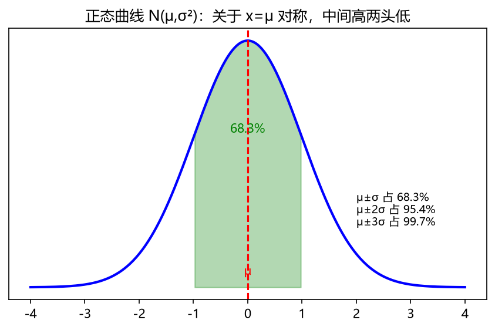
例题跟讲例题：
例 3.4-a：投篮命中率 0.6，独立投 3 次，求恰好命中 2 次的概率与期望。 解：X~B(3,0.6)。P(X = 2) = C(3,2)·0.62·0.4 = 3·0.36·0.4 = 0.432。E(X) = np = 1.8。 要点：独立重复+概率不变 → 二项分布，期望直接 np。
小结：二项（有放回/独立重复）、超几何（不放回）、正态（连续钟形），三套模型认清楚。
辨析·有放回 vs 不放回（高考常考，一步一验）：袋中 3 红 2 白（共 5 个），从中取 3 个，记其中红球数为 X。
- 若有放回：每次取到红球概率恒为 3/5，独立重复 3 次，X ~ B(3, 3/5)。E(X) = 3 × 0.6 = 1.8，D(X) = 3 × 0.6 × 0.4 = 0.72。
- 若不放回：这是超几何分布（N = 5, M = 3, n = 3）。E(X) = n·M/N = 3 × 3/5 = 1.8，D(X) = n·(M/N)·(1−M/N)·(N−n)/(N−1) = 3 × 0.6 × 0.4 × 2/4 = 0.36。
- 关键结论：两种取法期望相同（都是 1.8），但方差不同——有放回的方差 0.72 是不放回 0.36 的两倍。道理：不放回时每次取完不放，后面结果和前面有"反向锁定"关系，波动被压缩了。所以题目里"有放回/不放回"四个字，决定了用二项还是超几何，也决定了方差的答案。
3.5 高考大题结构（新情境）
给实际情境（比赛/质检/射击），三步走：
- 明确定义 X → 列全部取值；
- 算每个概率（古典/二项/超几何）→ 列表；
- 求 E(X)/D(X) → 比较方案做决策。
决策题逻辑：先比期望（谁大谁好）；期望相等再比方差（方差小的稳）。列完分布列一定回头验算 Σp = 1，这是送分的检查动作。
3.6 全概率公式（多阶段随机过程）
引入：生病可能由 A、B、C 三种原因引起，已知各原因概率和各原因下得病概率，求总得病概率——这就是全概率。
全概率公式：若 B1、B2、…、Bn 互斥且覆盖全部，则
P(A) = Σ P(Bi)·P(A|Bi)
道理：把 A 拆成"在每种情况下发生"的概率之和。
例题跟讲例题：
例 3.6-a：甲袋合格率 0.9、乙袋合格率 0.6，随机选一袋（各 1/2）抽一件，求抽到合格品概率。 解：P = ½·0.9 + ½·0.6 = 0.75。 要点：分情况（选哪袋），各算各的再加起来。
小结：全概率就是"分情况算概率再加权"。进阶/选学：反过来"已知结果求原因"的概率叫贝叶斯公式 P(Bk|A) = P(Bk)P(A|Bk)/ΣP(Bi)P(A|Bi)，它在医学检测、垃圾邮件过滤里天天用，新教材把它并入条件概率处理，会套全概率公式即可。
④ 例题详解（先做再看）
例题例 1（古典概型）：同时掷两枚骰子，求点数之和为 7 的概率。
自己做：总数 36，数一数和为 7 的。
解：基本事件总数 6 × 6 = 36。和为 7：(1,6)(2,5)(3,4)(4,3)(5,2)(6,1) 共 6 种。 P = 6/36 = 1/6。 要点：总数先算清楚；两枚骰子不同，别漏 (3,4) 和 (4,3)。
例题例 2（条件概率）：袋中 3 红 2 白，不放回连取 2 个。已知第一个是红球，求第二个也是红球的概率。
自己做：条件概率，在"第一红"条件下算。
解：第一红后袋中剩 2 红 2 白。P(第二红 | 第一红) = 2/4 = 1/2。 要点：条件概率 = 换样本空间（发生条件后重新数）；不放回是"抽签原理"来源。
例题例 3（二项分布）：投篮命中率 0.6，独立投 3 次，求恰好命中 2 次的概率与期望。
自己做：二项分布直接套。
解：X ~ B(3, 0.6)。P(X = 2) = C(3,2)·0.62·0.4 = 3·0.36·0.4 = 0.432。 E(X) = np = 3·0.6 = 1.8。 要点：独立重复 + 固定概率 → 二项分布；期望直接 np 不用列分布列。
例题例 4（期望决策）：两种方案收益分别为：A 稳得 100；B 有 0.5 概率得 200、0.5 概率得 0。选哪个？
自己做：比期望。
解：E(A) = 100；E(B) = 0.5·200 + 0.5·0 = 100。期望相同。 风险不同：A 无风险。若考虑方差：D(B) = 0.5·1002 + 0.5·1002 = 10000 远大于 0。 要点：期望相同看方差/风险，这是高考"决策"题的完整逻辑。
例题例 5（全概率 + 超几何，别误当二项）（苏州教研·专题57，原书p.193）：某商店储存的 50 个灯泡中，甲厂占 60%、乙厂占 40%，甲厂一等品率 90%，乙厂一等品率 80%。(1) 随机抽 1 个，它是甲厂一等品的概率；(2) 随机抽 2 个，记其中"甲厂一等品"个数为 X，求分布列与 E(X)。
自己做：先算清楚两类灯泡各有几个。
解：甲厂灯泡 50 × 60% = 30 个，其中一等品 30 × 90% = 27 个；乙厂 20 个，其中一等品 16 个。
(1) 抽到甲厂一等品 = 27/50 = 0.54。
(2) 从 50 个里不放回抽 2 个，"甲厂一等品"共 27 个、非甲厂一等品共 23 个。这是超几何分布（不放回，每次抽中概率在变），不能套二项分布：
- P(X = 0) = C(23,2)/C(50,2) = 253/1225
- P(X = 1) = C(27,1)·C(23,1)/C(50,2) = 621/1225
- P(X = 2) = C(27,2)/C(50,2) = 351/1225
E(X) = (0·253 + 1·621 + 2·351)/1225 = 1323/1225 = 27/25 = 1.08（也可用超几何期望 n·M/N = 2 × 27/50 = 27/25 验证）。
要点：不放回抽 → 超几何，不是二项；"每次抽中概率相等"才是二项，这里抽走一个总数就少一个。（对应《高级方法手册》6.1 全概率、6.4 分布模型。）
例题例 6（二项分布建模）（苏州教研·专题57，原书p.193）：A、B 两种药做对比，每个试验组 4 只小白鼠，2 只服 A、2 只服 B，服 A 有效概率 2/3、服 B 有效概率 1/2。一组中"A 有效只数 > B 有效只数"称甲类组。(1) 求一个试验组为甲类组的概率；(2) 观察 3 个试验组，记甲类组个数为 X，求分布列与 E(X)。
自己做：先把"A 有效只数""B 有效只数"各自的概率列出来。
解：设 k_A、k_B 分别为服 A、服 B 有效的只数。 P(k_A = 0) = (1/3)2 = 1/9，P(k_A = 1) = C(2,1)(2/3)(1/3) = 4/9，P(k_A = 2) = (2/3)2 = 4/9。 P(k_B = 0) = (1/2)2 = 1/4，P(k_B = 1) = C(2,1)(1/2)(1/2) = 1/2，P(k_B = 2) = (1/2)2 = 1/4。
(1) 甲类组 = k_A > k_B： = k_A = 1,k_B = 0：(4/9)(1/4) = 1/9 + k_A = 2,k_B = 0：(4/9)(1/4) = 1/9 + k_A = 2,k_B = 1：(4/9)(1/2) = 2/9 合计 = 4/9。
(2) 每个试验组"是否甲类组"独立重复、成功概率恒为 4/9，故 X ~ B(3, 4/9)：
- P(X = 0) = C(3,0)(4/9)0(5/9)3 = 125/729
- P(X = 1) = C(3,1)(4/9)(5/9)2 = 300/729
- P(X = 2) = C(3,2)(4/9)2(5/9) = 240/729
- P(X = 3) = C(3,3)(4/9)3 = 64/729
E(X) = np = 3 × (4/9) = 4/3。
要点："每组独立、成功概率恒定"→ 二项分布；先把底层小概率（4/9）算准，再套二项分布列。（对应《高级方法手册》6.4 分布模型。）
⑤ 出口检测
自测（20 分钟，每题 2 分）：
- 掷一枚骰子两次，两次点数相同的概率。
- P(A) = 0.4，P(B) = 0.5，A、B 独立，求 P(A ∪ B)。
- 盒中 4 红 6 白，取 1 个是红球的概率；取 2 个（不放回）都是红球的概率。
- X ~ B(5, 0.5)，求 E(X)、D(X)。
- 随机变量 X 分布列：P(X = 0) = 0.3，P(X = 1) = 0.5，P(X = 2) = 0.2，求 E(X)。
真题验收：完成 2020–2024 新高考Ⅰ卷概率解答题 1 道（分布列+期望，2024 含正态情境）：独立完成、25 分钟内、得分 ≥ 80% → 过关。
过关标准：自测 ≥ 10 分 且 真题达标 → 打卡。
课后习题（分层练习）
A 基础巩固
A1.【古典概型】掷一枚均匀骰子，出现偶数点的概率。
A2.【互斥对立】P(A) = 0.7，求 P(A 的对立事件)。
A3.【条件概率】袋 5 红 3 白，不放回取 2 个。已知第一个是红球，求第二个也是红球的概率。
A4.【分布列期望】X 分布列 P(X = 1) = 0.2, P(X = 2) = 0.5, P(X = 3) = 0.3，求 E(X)。
A5.【二项分布】某射手命中率 0.8，独立射 4 次，求恰好命中 3 次的概率。
A6.【超几何分布】10 件产品中有 3 件次品，抽 2 件，求恰好抽到 1 件次品的概率。
B 能力提升
B7.【期望方差】X 分布列同上 A4，求 D(X)。
B8.【正态分布】X ~ N(2, σ2)，已知 P(X<0) = 0.2，求 P(2<X<4)。（利用对称性）
B9.【全概率】两箱产品：甲箱 10 件含 2 次品，乙箱 20 件含 3 次品。任取一箱抽 1 件，求抽到次品的概率。
B10.【期望决策】方案 A：稳赚 500 元；方案 B：0.6 概率赚 1000、0.4 概率亏 200。用期望判断选哪个。
C 真题挑战（真实新高考题）
C1.【正态分布·2024 新高考Ⅰ卷第 9 题（多选）】已知种植区以往亩收入 X ~ N(1.8, 0.12)，推动出口后抽得样本均值 x = 2.1、样本方差 s2 = 0.01，设出口后亩收入 Y ~ N(x, s2)。（若 Z~N(μ,σ2)，P(Z<μ+σ) ≈ 0.8413。）下列正确的是（ ）。 A. P(X>2) > 0.2 B. P(X>2) < 0.5 C. P(Y>2) > 0.5 D. P(Y>2) < 0.8
C2.【计数+期望·2025 新高考Ⅰ卷第 14 题】箱子里 5 个球分别标 1~5，有放回取 3 次，记至少被取到一次的不同球个数为 X，求 E(X)。
C3.【概率枚举·2024 新高考Ⅰ卷第 14 题】甲卡 {1,3,5,7}、乙卡 {2,4,6,8}，四轮各出一卡比大小，大者得 1 分、用后弃置。求四轮后甲总得分不小于 2 的概率。
⑥ 常见坑清单
- 互斥 ≠ 独立：互斥事件 P(AB) = 0，独立事件 P(AB) = P(A)P(B)——两个概念方向相反。
- 条件概率 P(A|B) 分母是 P(B)，不是无条件概率。
- 二项分布条件：独立 + 重复 + 概率不变；"不放回抽样"不是二项分布（是超几何）。
- 分布列概率和必须为 1：算完检查，验算一步防错。
- 期望的线性性质 E(aX+b) = aE(X) + b，方差 D(aX+b) = a2D(X)（b 不加）。
- 决策题：期望相等时比方差（风险），别只停在期望。
本章公式速查表
与《高中数学常用公式·修订版》第十一部分"概率"核对一致；数字特征（期望/方差）口径与教材一致。
古典概型与事件关系
P(A) = A 包含的基本事件数 / 基本事件总数
- 大白话：所有结果等可能时，概率就是"有利份数"除以"总份数"。
- 用的时候：先数清总数；两枚骰子要区分顺序，(3,4) 和 (4,3) 是两个。
互斥加法 P(A∪B) = P(A) + P(B)
- 大白话：两个事不能同时发生时，发生其一的概率就是相加。
- 用的时候：互斥才加；不是互斥要减 P(AB)。
一般加法公式 P(A∪B) = P(A) + P(B) − P(A∩B)（苏州教研·专题25）
- 大白话：两个事都可能发生时，"至少一个发生" = 各自概率相加再减掉"同时发生"被重复算的那一块。
- 用的时候：题目没说互斥就套它；互斥时 P(A∩B) = 0，它就退化成 P(A)+P(B)。A∪B = 至少一个发生，A∩B = 同时发生。
概率为 0 不一定是不可能事件，概率为 1 也不一定是必然事件（苏州教研·专题25）
- 大白话：几何概型里"恰好落在某一点"概率是 0，但这件事确实能发生；反过来"去掉一个点的区域"概率是 1，却不是全部。
- 用的时候：别把"概率 0"直接等同于"不可能"；只有古典概型里两者才等价。
对立 P(A) = 1 − P(A)
- 大白话："不发生"的概率就是 1 减去发生的概率。
- 用的时候：求"至少一个"正面难算时，转成求它的对立。
条件概率与独立
条件概率 P(A|B) = P(AB) / P(B)（P(B)>0）
- 大白话：已知 B 发生后，样本空间缩小成 B，在 B 里数 AB 占多少。
- 用的时候：分母是 P(B)，不是 P(A)；不放回抽样就是换样本空间重新数。
独立 P(AB) = P(A)·P(B)
- 大白话：两件事互不影响，同时发生的概率就是各自概率相乘。
- 用的时候：独立 ⇔ 此式成立；独立和互斥方向相反，互斥的事件一般不独立。
独立的传递性：若 A 与 B 独立，则 A 与 B、A 与 B、A 与 B 也都独立（苏州教研·专题56）
- 大白话：A 发不发生跟 B 没关系，那 A 跟"B 不发生"同样没关系，反过来也一样。
- 用的时候：题目给"A、B 独立"，求 P(A·B) 时直接写 P(A)·P(B) = P(A)(1−P(B))，不用重新证。
互斥条件概率：若 B、C 互斥，则 P(B∪C | A) = P(B|A) + P(C|A)（苏州教研·专题56）
- 大白话：在 A 这个大前提下，B、C 不能同时发生，那"B 或 C 发生"的条件概率就是两个条件概率相加。
- 用的时候：条件概率里遇到互斥事件求并，照样可以加。
概率运算四种类型口诀：加（互斥事件）、减（对立事件）、乘（独立事件）、除（古典/几何/条件概率）（苏州教研·专题56）
- 大白话：见互斥用加法、见对立用 1−、见独立用乘法、见"数份数/已知条件"用除法。
- 用的时候：列式前先给题目归个类，知道该用哪把刀。
期望与方差
E(X) = Σ xi·pi
- 大白话：每个取值乘它的概率再加权，就是随机变量的"平均取值"。
- 用的时候：列完分布列一定回头验算 Σpi=1。
D(X) = E(X2) − [E(X)]2
- 大白话：描述随机变量围绕均值波动多大，平方消掉正负抵消。
- 用的时候：用 E(X2)−[E(X)]2 比硬算离差平方快；先算 E(X2)=Σxi2pi。
E(aX+b) = aE(X)+b；D(aX+b) = a2D(X)
- 大白话：期望跟着平移缩放一起变；方差只跟缩放、不跟平移（加 b 不变、乘 a 变 a2 倍）。
- 用的时候：整体加一个常数，方差照写别加 b。
三个重要分布
二项分布 X~B(n,p)：E(X) = np，D(X) = np(1−p)
- 大白话：n 次独立重复、每次成功率 p，命中次数就是二项分布。
- 用的时候：独立+重复+概率不变才用它；有放回抽样。
两点分布（0-1 分布）：E(X) = p，D(X) = p(1−p)（苏州教研·专题56）
- 大白话：只做一次试验、结果只有"成功 1 / 失败 0"两种，就是两点分布；它是 n = 1 的二项分布。
- 用的时候：单次成败题直接套；D(X) = p(1−p) 和二项分布 n = 1 时一致。
超几何分布（不放回）：E(X) = n·M/N
- 大白话：N 个里 M 个次品，抽 n 个，期望次品数就是 n·M/N。
- 用的时候：不放回抽样是超几何不是二项；期望和二项同口径，但方差更小。
超几何/混合球速算期望（仅客观题）：m 白 n 红 p 黑共 m+n+p 个球，任取 k 个，其中白球数期望 E(X) = k·m/(m+n+p)（苏州教研·专题56）
- 大白话：把球"打碎搅匀"，每个被取到的球里白球占比恒为 m/(m+n+p)，取 k 个就乘 k。
- 用的时候：选择题快速出期望；解答题求分布列、方差时不能用它，要老实套超几何公式。
正态分布 X~N(μ,σ2)：μ±σ ≈ 0.683，μ±2σ ≈ 0.954，μ±3σ ≈ 0.997；P(Z<μ+σ) ≈ 0.8413
- 大白话：钟形曲线关于 μ 对称，离 μ 几个 σ 就套对应比例。
- 用的时候：求 P(X>a) 先看 a 离 μ 几个 σ，再用对称；a=μ+σ 时 P(X<μ+σ)=0.8413、P(X>μ+σ)=0.1587。
正态密度函数 φ(x) = 1/(√(2π)·σ) · e^(−(x−μ)2/(2σ2))（苏州教研·专题56）
- 大白话：这是那条钟形曲线的解析式；曲线与 x 轴围成的总面积 = 1，区间上的概率就是对应面积。
- 用的时候：知道 μ = 均值、σ = 标准差即可，不必背解析式；样本里用 x 当 μ、用 √s（即 s）当 σ 把正态分布定下来。
3σ 原则（假设检验）：一次试验结果 a 落在 (μ−3σ, μ+3σ) 内就接受假设，落在外面就拒绝（苏州教研·专题56）
- 大白话：正态变量几乎 99.7% 挤在 μ±3σ 里，跑出去属于小概率事件，一次就发生说明原假设可疑。
- 用的时候：产品尺寸正常波动范围就是 (μ−3σ, μ+3σ)；出界即判异常。
几何概型
几何概型 P(A) = 构成事件 A 的区域长度（面积/体积）÷ 试验全部结果的区域长度（面积/体积）（苏州教研·专题25）
- 大白话：结果无限多又等可能时，概率不再是数份数，而是"长度比/面积比/体积比"。
- 用的时候：一个变量在区间上取值 → 长度比；两个变量 (x,y) 在平面区域取值 → 面积比（先设全集 Ω、事件 A 再画图）；立体中取点 → 体积比。
- 记忆要点：线段/圆周上动点用长度比；平面内动点用面积比；空间内动点用体积比。
全概率
全概率 P(A) = Σ P(Bi)·P(A|Bi)（Bi 互斥且覆盖全部）
- 大白话：把 A 按它发生的几种前提拆开，各算各的再加权求和。
- 用的时候：多阶段、"先选哪袋再抽一件"这种题用它；反过来"已知结果求原因"用贝叶斯，会套全概率即可。
高级方法·进阶
对应《不超纲高级方法手册》六.6.1～6.4。
进阶 1：条件概率与全概率（手册 六.6.1）
- 适用信号：多阶段随机过程、"已知…求…"。
- 操作步骤：P(A|B)=P(AB)/P(B)；全概率 P(A)=ΣP(Bi)P(A|Bi)。
- 例：3.6-a。✓ 不超纲（新教材已入选必三第7章，务必熟练）。
进阶 2：期望的线性性（手册 六.6.2）
- 适用信号：求一堆随机变量之和的期望，不想列全分布列。
- 操作步骤：E(X+Y)=E(X)+E(Y)（不要求 X、Y 独立！）；E(aX+bY+c)=aE(X)+bE(Y)+c。
- 例：2025 第 14 题（C2）：设 Ii=第 i 号球至少被取到一次，X=ΣIi，E(X)=ΣE(Ii)=5·[1−(4/5)3]=61/25，不用枚举所有情况。
- ✓ 不超纲。
进阶 3：递推思想·马尔可夫链（手册 六.6.3）
- 适用信号：有状态转移的过程（传球、抽球），问"第 n 步在某状态的概率"。
- 操作步骤：①设 Pn=第 n 步在目标状态概率；②找 Pn=f(Pn−1) 递推；③构造等比解通项。
- ✓ 不超纲（数列与概率交叉热点）。
进阶 4：分布模型速记（手册 六.6.4）
- 二项 B(n,p)：E=np、D=np(1−p)；超几何 E=nM/N；正态看对称性、3σ。
- ✓ 不超纲。
进阶 5：统计应用题先判模型（苏州教研·专题56）
- 适用信号：题里给了样本数据、让你"估计概率/求分布列"。
- 操作步骤：①若题中强调"用样本估计总体""把频率当概率"（个体很多时）→ 后续大概率是独立重复试验，用二项分布；②若没强调，只是从固定总体里抽取 → 用古典概型/超几何；③若涉及正态分布，就用样本均值 x 当 μ、样本标准差 s 当 σ，把 N(μ,σ2) 定下来。
- 大白话：看到"估计""当作概率"几个字，就往二项分布想；没这几个字，老老实实数份数。
- ✓ 不超纲。
自测答案：1. 6/36 = 1/6；2. P(A∪B) = 0.4 + 0.5 − 0.4·0.5 = 0.7；3. 4/10 = 0.4；C(4,2)/C(10,2) = 6/45 = 2/15；4. E = 2.5，D = 5·0.5·0.5 = 1.25；5. E(X) = 0·0.3 + 1·0.5 + 2·0.2 = 0.9。
课后习题答案
A1. 偶数点 {2,4,6} 共 3 种，P = 3/6 = 1/2。 A2. P(A) = 1 − 0.7 = 0.3。 A3. 第一红后剩 4 红 3 白，P = 4/7。 A4. E = 1·0.2+2·0.5+3·0.3 = 0.2+1+0.9 = 2.1。 A5. X~B(4,0.8)，P(X=3)=C(4,3)·0.83·0.2 = 4·0.512·0.2 = 0.4096。 A6. P = C(3,1)C(7,1)/C(10,2) = 21/45 = 7/15。
B7. E(X2)=1·0.2+4·0.5+9·0.3=0.2+2+2.7=4.9。D=4.9−2.12=4.9−4.41=0.49。 B8. 对称轴 μ=2。P(X<0)=P(X>4)=0.2（对称）。P(2<X<4)=0.5−P(X>4)=0.5−0.2=0.3。 B9. P = ½·(2/10) + ½·(3/20) = 0.1 + 0.075 = 0.175。 B10. E(A)=500。E(B)=0.6·1000+0.4·(−200)=600−80=520。E(B)>E(A)，选 B（但要提示 B 有亏损风险，需结合方差）。
C1. BC。X~N(1.8,0.12)，2=1.8+2×0.1=μ+2σ，P(X>2)=0.5−0.954/2=0.023<0.5，故 A 错 B 对。Y~N(2.1,0.12)，2=2.1−0.1=μ−σ，P(Y>2)=0.5+0.3413=0.8413>0.5，故 C 对 D 错。 C2. E(X)=5·[1−(4/5)3]=5·61/125=61/25=2.44（期望线性性）。 C3. 24 种配对枚举，得分 ≥2 共 12 种，P=12/24=1/2。
一通百通
这一章的"通用骨架"是四步：① 定随机变量 X 及其全部取值 → ② 判断用哪个模型（古典数份数、独立重复用二项、不放回用超几何、连续钟形用正态）→ ③ 算每个取值的概率并列表（回头验算 Σpi=1）→ ④ 求 E(X)/D(X) 做决策（先比期望，期望相同再比方差）。条件概率和全概率只是在第②步里"换个样本空间重新数份额"。会解一道概率解答题，就会解所有概率题——灯泡、小白鼠、投篮、质检，骨子里都是"列分布列→求期望→比方案"。这套骨架下一章统计里"用样本频率估计概率"还会接上。
跨章结合
- 第 17 章计数 + 本章概率 → 古典概型/超几何的"数份求概率"：袋中取球、卡片比大小这类题，第一步永远是用排列组合数清"总情况数"和"有利情况数"，再相除得概率。本章例 5（灯泡，苏州教研·专题57，原书p.193）先数清 50 个灯泡里甲厂一等品 27 个，再用超几何 C(27,k)C(23,2−k)/C(50,2) 列分布列；例 6（小白鼠）先把底层"A 有效只数>B 有效只数"的概率 4/9 算准，再套二项分布。计数不准，后面概率全盘皆错。
- 本章概率 + 第 19 章统计 → 用样本估计总体概率与正态定参：本章 C1（2024 新高考Ⅰ卷第 9 题多选）就是把第 19 章的样本均值 x=2.1、样本标准差 s 当作正态分布的 μ、σ，把出口后亩收入 Y 定成 N(x,s2) 再套 3σ 比例判断——这正是"统计给参数、概率算区间"的握手处。
本章与前后章
概率（18）前面接第 17 章计数原理——古典概型的分子分母全靠排列组合去数，不会计数就列不出分布列；它后面接第 19 章统计——统计里"用样本频率估计总体概率""正态分布用样本均值 x、样本标准差 s 来定 μ、σ"，正是概率思想往"由样本推断总体"的延伸。本章例题 5（灯泡，E(X)=27/25=1.08）、例题 6（小白鼠，E(X)=4/3）就是全概率、二项分布的综合演练，把"算份额"这条主线走通，概率统计板块就立住了。
高考怎么考
新高考Ⅰ卷里概率是解答题主力（2023 起位置常在第 18–19 题区间），题型固定：新情境（比赛/质检/射击/药物对比）下列分布列、求期望方差、做方案决策；小题则考正态分布（如 2024 新高考Ⅰ卷第 9 题多选，本章 C1 已收录）、条件概率、古典概型计数（2024、2025 第 14 题，本章 C2、C3 已收录）。难度中档偏上，得分关键是"先判准模型（有放回二项、不放回超几何）、再列全分布列并验算 Σp=1"。它与 17 章计数、19 章统计共同构成概率统计解答题的完整链条。
统计
公式速查：修订版 第12部分（统计）
本章本质核心：统计的本质是"用一部分推断整体"——总体太大测不完，就抽一个有代表性的样本，用样本的数字去估计总体的数字，同时守住"样本≠整体"的边界。三种抽样（让样本有代表性）、频率直方图（用图看样本长什么样）、平均数方差（样本的中心与波动）、回归直线（用样本散点配一条估测线）、卡方检验（用样本频数判断两变量有没有关系），全是在"用样本说话"；每一步估计都要记得它来自样本、会有偏差。
为什么有用：学了它，"从一部分数据推断整体""两个现象到底有没有关系"这类现实问题就有了章法——抽样定代表性、直方图看分布、回归估趋势、卡方判相关，想通"用样本说话、守住样本≠整体"，就不会把估计当因果。
① 门槛自测（进章前，10 分钟）
- 求 2、4、6 的平均数。
- 方差是描述什么的？（离散程度 or 集中程度）
- 全班 50 人按学号抽 10 人，这是随机吗？
- 什么是"样本"和"总体"？
- 判断：平均数越大，数据一定越集中吗？
判定：5 题答对 4 题以上 → 进章。
② 学习目标
- 掌握三种抽样方法：简单随机抽样、分层抽样、系统抽样
- 会读频率分布直方图、频率分布表
- 掌握平均数、方差、标准差的计算（含加权）
- 掌握回归直线（最小二乘）与相关系数
- 掌握独立性检验（卡方检验）的步骤（2020 新高考Ⅰ卷考过）
③ 正文讲解
本章结构导图：
统计
├─ 3.1 抽样方法 ── 简单随机/系统/分层
├─ 3.2 频率分布直方图 ── 用图看数据长什么样
├─ 3.3 数字特征 ── 平均数(集中)、方差(波动)
├─ 3.4 回归分析 ── 散点图配一条直线
└─ 3.5 独立性检验 ── 两个变量有没有关系
3.1 抽样方法
引入：想知道全校学生的平均身高，总不能把每个人都量一遍。从里面抽一部分人量，再推算全校——这就是抽样。怎么抽才有代表性？这一节讲三种正规抽法。
| 方法 | 什么时候用 | 怎么做 |
|---|---|---|
| 简单随机抽样 | 总体小、个体差不多 | 抽签法 / 随机数表，每个机会均等 |
| 系统抽样 | 总体已编号、很多 | 按间隔 k = N/n 等距抽 |
| 分层抽样 | 总体分几层、层间差异大 | 按比例从每层抽 |
分层抽样核心公式：每层抽取数 = 该层人数 × (样本量/总体量)。 为什么按比例？为了让样本里各层的比例和总体一致，样本才有代表性。比如全校高一多、高三少，抽样时也得多抽高一少抽高三，否则用样本估全校就会"偏"。抽样的唯一目的，是用尽量少的人算出尽量准的总体数字——抽得有偏，后面再怎么算都白搭。
例题跟讲例题：
例 3.1-a：高一 500、高二 400、高三 300，分层抽样抽 60 人，各抽多少？ 解：总 1200，比例 60/1200 = 1/20。高一 500/20 = 25，高二 400/20 = 20，高三 300/20 = 15。 要点：各层相加 = 25+20+15 = 60，正好等于样本量。
小结：个体差不多随机抽；编号等距系统抽；差异分层按比例抽。
编者注·本质回扣：三种抽样方法五花八门，骨子里只干一件事——让抽出来的那部分能代表整体。为什么分层抽样非要按比例？因为全校高一多、高三少，你抽样本时也得多抽高一、少抽高三，样本里各层的比例才和总体一致，后面用样本估全校才不会"偏"。简单随机、系统抽样其实是"总体里个体差不多"时的偷懒版；一旦层间差异大，不按比例抽，样本就会被某一层带偏——抽得有偏，后面平均数、回归再怎么精算，都是在错误的样本上算白账。这就是统计"用样本推断整体"的第一道关口：样本先得抽得正。
3.2 频率分布直方图与茎叶图
引入：100 个学生的考试分数堆在面前，密密麻麻看不出规律。把分数分段、数每段多少人，画成柱状图，分布形状一眼就出来了。
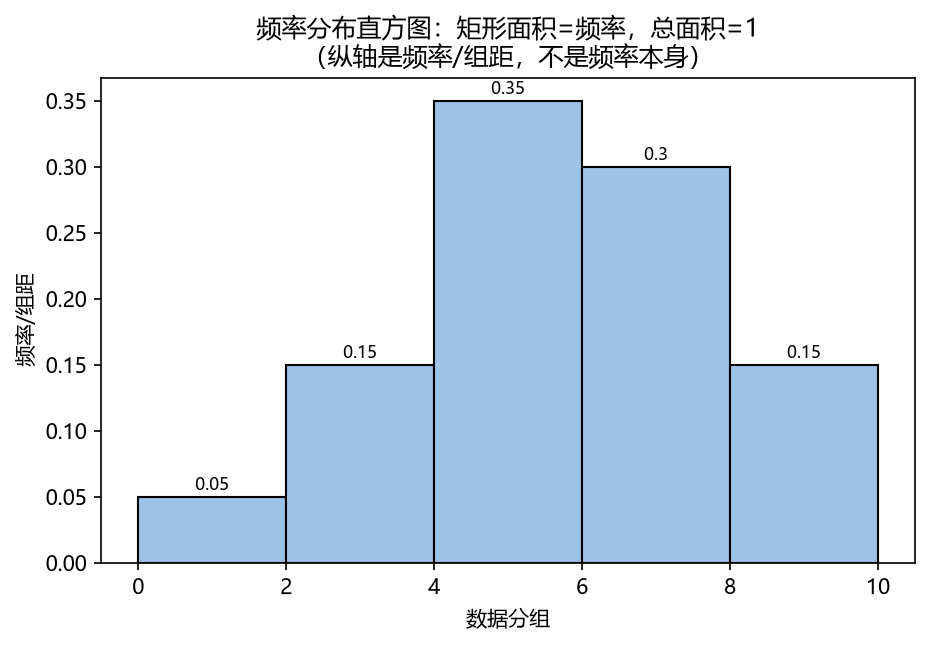
读图要点（最容易错）：
- 纵轴是频率/组距，不是频率！
- 每个矩形面积 = 频率（宽 × 高 = 组距 × 频率/组距 = 频率）。
- 所有矩形面积之和 = 1。
- 求某区间人数：区间面积 × 总体数。
茎叶图：茎是十位、叶是个位，既保留原始数据又能看出分布形状，适合小样本。它的好处是不用分组、不会丢原始数值，做茎叶图还能顺手看出数据是否对称、有没有离群点。
例题跟讲例题：
例 3.2-a：直方图某组 [10,20)，纵轴（频率/组距） = 0.03，样本 200 人，该组多少人？ 解：频率 = 0.03 × 组距 10 = 0.3。人数 = 200 × 0.3 = 60。 要点：纵轴要乘组距才是频率，别直接当频率用。
小结：直方图看形状、茎叶图保原始，纵轴是"频率/组距"是命门。
3.3 数字特征（集中趋势 + 离散程度）
引入：两个班平均分都是 80，一个班分数都挤在 80 附近，另一个班一半 60 一半 100——平均一样，但"稳不稳"天差地别。平均数描述"集中在哪"，方差描述"散得多开"。
公式：
- 平均数 x = (x1+…+xn)/n（加权：Σwixi/Σwi）
- 方差 s2 = [(x1−x)2+…+(xn−x)2]/n
- 标准差 s = √s2（和原数据同单位）
性质：每个数据加 a → 平均数加 a、方差不变；每个数据乘 b → 平均数乘 b、方差乘 b2。
例题跟讲例题：
例 3.3-a：数据 1、2、3、4、5，求平均数、方差。 解：x = 3。s2 = [(1−3)2+(2−3)2+0+(4−3)2+(5−3)2]/5 = (4+1+0+1+4)/5 = 2。 要点：方差是"离差平方的平均"。
小结：平均数看中心、方差看波动，两者合起来才完整描述一组数据。
例题跟讲例题（分组合并·一步一验）：A 组数据 1、2、3，B 组数据 3、4、5，把它们合成一组求平均数和方差。 解：六个数 1、2、3、3、4、5。总和 = 18，平均数 x = 18/6 = 3。 方差 s2 = [(1−3)2+(2−3)2+0+0+(4−3)2+(5−3)2]/6 = (4+1+0+0+1+4)/6 = 10/6 = 5/3 ≈ 1.67。 要点：合并时先把全部数据摆出来重算平均，别拿两组平均直接平均——这里两组平均是 2 和 4，直接平均得 3，恰好碰对；但组人数不等时直接平均就会错（那是加权平均的活）。方差更要从合并后的数据重算，不能把两组方差简单相加。
平均数 vs 中位数（常考辨析）：平均数是"加起来除以个数"，受极端值影响很大——一组工资里如果有一个老板年薪千万，全公司平均工资会被拉得虚高。中位数是"排好序站中间的那个"，不受极端值影响。所以评价收入、房价这类"有极端值"的数据，中位数往往比平均数更真实；但平均数能用每个数据的信息，数学性质更好（后面回归、概率都用它）。
补·百分位数（人教A版必修第二册 p.209–210；课标必修"能用样本估计百分位数，理解百分位数的统计含义"）：中位数其实只是"第 50 百分位数"。把 n 个数据从小到大排好，第 p 百分位数是这样一个值：至少有 p% 的数据 ≤ 它、且至少有 (100−p)% 的数据 ≥ 它。算法三步：
① 排序；② 算 i = n × p%；③ 若 i 不是整数，取比 i 大的相邻整数 j，第 p 百分位数 = 第 j 项；若 i 是整数，第 p 百分位数 = (第 i 项 + 第 (i+1) 项)/2
- 大白话：25%、50%、75% 三个百分位数把数据分成四等份，分别叫下四分位数、中位数、上四分位数；它像中位数一样耐极端值，常被用来定"前百分之几的录取线""百分之多少的人不超标"这类实际门槛。
- 用的时候：教材例——27 名女生身高排序后，25%×27=6.75（非整数）取第 7 项=155.5，50%×27=13.5 取第 14 项=161，75%×27=20.25 取第 21 项=164，即下四分位/中位/上四分位约为 155.5、161、164。
3.4 回归分析（最小二乘）
引入：人的身高和体重有没有关系？把 (身高, 体重) 画在图上，是一团散点，但大体"越高越重"。能不能配一条直线，用身高估体重？这就是回归直线。
最小二乘回归直线 y = bx + a：
- b = Σ(xi−x)(yi−y) / Σ(xi−x)2（斜率）
- a = y − b·x（截距）
- 回归直线必过样本中心 (x, y)——这是检验计算对不对的照妖镜。
相关系数 r ∈ [−1,1]：|r| 越接近 1 线性相关越强；r>0 正相关、r<0 负相关、接近 0 几乎无线性关系。 最小二乘的道理：这条直线让每个点到直线的"竖直偏差"的平方和最小——偏差有正有负会抵消，所以取平方；平方加权等价于"整体看起来最贴"。这就是为什么回归直线不是随手画的那条。
例题跟讲例题：
例 3.4-a：数据 (1,2)(2,3)(3,4)(4,5)，求回归直线。 解：x = 2.5，y = 3.5。Σ(xi−x)2 = 5，Σ(xi−x)(yi−y) = 5。b = 5/5 = 1，a = 3.5−1·2.5 = 1。直线 y = x+1。验证过 (2.5,3.5)。 要点：b 是协方差除以 x 的方差，直线必过样本中心。
小结：回归直线是"最贴散点的那条线"，必过样本中心、相关系数量强弱。
编者注·本质回扣：回归直线凭什么能"用身高估体重"？本质还是"用样本推断整体"。手里只有几个 (身高, 体重) 的散点，并不知道真关系，最小二乘就是在样本里配一条"整体最贴"的直线（让各点竖直偏差的平方和最小），再假设这条线能代表总体的趋势。所以它必过样本中心 (x,y)——用样本的平均位置定直线，是"用样本说话"的直接体现；相关系数 r 则在替你把关：|r| 太小说明散点根本不成直线，这时候配回归线就是硬凑。记住：回归方程只能"估计/大约"，不能当精确因果。
辨析·b 与 r 同号（快速自检）：斜率 b 和相关系数 r 永远同号——散点整体上扬时 b>0、r>0（正相关）；整体下滑时 b<0、r<0（负相关）。算完 b 是正的，r 却写成负的，立刻知道错了。比如例 3.4-a 那组 (1,2)(2,3)(3,4)(4,5)，点严格排成一条上升直线，算得 b = 1、r = 1（完全正相关），两者同号且 |r| = 1，互相印证。
3.5 独立性检验（卡方检验）
引入：抽烟和得肺病有没有关系？光看列联表两栏比例差多少，还不够"科学"。卡方检验给一个量化标准：算出 χ2，和临界值比，大到一定程度就有把握说"两个变量有关"。
步骤：
- 列 2 × 2 列联表（a,b,c,d）；
- 算 χ2 = n(ad−bc)2 / [(a+b)(c+d)(a+c)(b+d)]；
- 与临界值比：3.841 对应 95%、6.635 对应 99%、10.828 对应 99.9%。χ2 越大越有把握说"有关"。
表述模板：χ2 ≈ X.XX > 6.635 ⇒ 有 99% 把握认为 A 与 B 有关。统计相关 ≠ 因果。这句话每次正式答题都要带上，是高考评分要点。
例题跟讲例题：
例 3.5-a：列联表 a = 20,b = 180,c = 780,d = 20,n = 1000，算 χ2。 解：ad−bc = 400−140400 = −140000。χ2 = 1000 × 1400002/(200 × 800 × 800 × 200) = 765.6。远大于 10.828 ⇒ 有 99.9% 把握认为有关。 要点：χ2 算出来和临界值比，越大越"铁"。
④ 例题详解（先做再看）
例题例 1（分层抽样）：某校高一 500 人、高二 400 人、高三 300 人，按分层抽样抽 60 人，各年级抽多少人？
自己做：按比例。
解：总 1200 人，比例 60/1200 = 1/20。高一 500/20 = 25；高二 400/20 = 20；高三 300/20 = 15。 要点：每层抽取数 = 该层人数 × 抽样比例；验证 25 + 20 + 15 = 60。
例题例 2（数字特征）：一组数据 1、2、3、4、5，求平均数、方差、标准差。
自己做：先平均，再算差的平方。
解：x = 3。s2 = [(1−3)2 + (2−3)2 + (3−3)2 + (4−3)2 + (5−3)2]/5 = (4+1+0+1+4)/5 = 2。 s = √2。 要点：方差是"离差平方的平均"；标准差开根号，单位还原。
例题例 3（回归直线）：数据 (1,2)、(2,3)、(3,4)、(4,5)，求回归直线方程。
自己做：先算 x、y，再算 b，最后 a。
解：x = 2.5，y = 3.5。Σ(xi−x)2 = (−1.5)2 + (−0.5)2 + 0.52 + 1.52 = 5。 Σ(xi−x)(yi−y) = (−1.5)(−1.5) + (−0.5)(−0.5) + 0.5·0.5 + 1.5·1.5 = 5。 b = 5/5 = 1；a = y − b·x = 3.5 − 2.5 = 1。回归直线 y = x + 1。 要点：b 是"协方差/方差"；直线必过 (x, y) 可作检验。
例题例 4（回归直线·分步给分）（苏州教研·专题24，原书p.110）：某设备使用年限 x（年）与维修费用 y（万元）统计如下：x = 2, 3, 4, 5, 6；y = 2.2, 3.8, 5.5, 6.5, 7.0。求 y 关于 x 的线性回归方程。
自己做：先算 x、y，再分别算两个求和，最后 b、a。
解：x = (2+3+4+5+6)/5 = 4；y = (2.2+3.8+5.5+6.5+7.0)/5 = 25/5 = 5。 Σ(xi−x)(yi−y) = (−2)(−2.8)+(−1)(−1.2)+0·0.5+1·1.5+2·2.0 = 5.6+1.2+0+1.5+4 = 12.3。 Σ(xi−x)2 = 4+1+0+1+4 = 10。 b = 12.3/10 = 1.23；a = y − b·x = 5 − 1.23 × 4 = 5 − 4.92 = 0.08。 回归直线 y = 1.23x + 0.08（验证：过样本中心 (4,5)，代入 1.23 × 4+0.08 = 5 ✓）。 要点：分步算 x、y、两个求和再代公式，这正是高考"分步给分"的写法；用回归方程作预测时回答要带"大约/估计"。
⑤ 出口检测
自测（15 分钟，每题 2 分）：
- 800 人中抽 40 人做调查，抽样比例是多少？
- 数据 4、6、8 的平均数与方差。
- 频率分布直方图中所有矩形面积之和等于多少？
- 回归直线一定经过哪个点？
- 相关系数 r = 0.95 表示什么？
真题验收：完成 2020 新高考Ⅰ卷统计解答题（独立性检验/回归）或 2021–2024 卷统计小题 1~2 道：独立完成、每题限时、全对 → 过关。
过关标准：自测 ≥ 10 分 且 真题达标 → 打卡。19 章全部完成后进入阶段 8：整卷真题模拟。
课后习题（分层练习）
A 基础巩固
A1.【分层抽样】某厂三个车间分别有 300、200、500 人，按分层抽样抽 50 人，各车间抽多少？
A2.【平均数方差】数据 3、6、9，求平均数和方差。
A3.【频率直方图】直方图某组 [20,30) 的频率/组距 = 0.04，样本 500 人，该组频数是多少？
A4.【系统抽样】总体 1000 人抽 50 人，抽样间隔 k 是多少？
A5.【回归过样本中心】回归直线过样本中心 (3,5)，已知斜率 b = 2，求截距 a。
A6.【独立性检验临界值】算得 χ2 = 4.5，查临界值 3.841/6.635，能有多大把握说有关？
B 能力提升
B7.【加权平均数】两班成绩：一班 30 人均分 80，二班 20 人均分 90，求两班合起来的平均分。
B8.【方差性质】一组数据方差为 4，每个数据都乘 3 再加 10，新数据方差是多少？
B9.【回归计算】数据 (1,1)(2,2)(3,4)，求回归直线斜率 b。
B10.【卡方计算】列联表 a = 40,b = 10,c = 20,d = 30,n = 100，求 χ2。
C 真题挑战（真实新高考题）
C1.【频率估计概率·2025 新高考Ⅰ卷第 15 题第 (1) 问】调查 1000 人列联表：患病人群中超声波正常 20、不正常 180；未患病人群中正常 780、不正常 20。记"超声波检查结果不正常者患该疾病的概率"为 P，求 P 的估计值。
C2.【独立性检验·2025 新高考Ⅰ卷第 15 题第 (2) 问】用上面列联表，根据小概率值 α = 0.001 的独立性检验，分析超声波检查结果是否与患该疾病有关。（临界值：α = 0.001 对应 10.828。）
C3.【分层抽样高考高频题型】某校高一、高二、高三人数比为 4:3:3，用分层抽样抽一个容量为 50 的样本，高一年级抽多少人？
⑥ 常见坑清单
- 直方图纵轴是"频率/组距"，面积才是频率——直接用纵轴数字当频率会错。
- 方差公式分母是 n（总体）或 n−1（样本，高中一般用 n），跟教材口径一致即可。
- 回归直线必过 (x, y)，但不过原点（除非 a = 0）。
- 独立性检验：χ2 大 → "有把握有关"；统计相关 ≠ 因果关系。
- 分层抽样验证：各层相加必须等于样本总量。
- 平均数受极端值影响大，中位数不受——统计评价题里常考这个区别。
本章公式速查表
与《高中数学常用公式·修订版》第十二部分"统计与统计案例"逐条核对一致。
抽样方法
分层抽样：每层抽取数 = 该层人数 × (样本量/总体量)
- 大白话：总体分几层、层间差得多，就按比例从每层抽，让样本比例跟总体一致。
- 用的时候：抽完各层相加必须等于样本总量；不等于就抽错了。
系统抽样间隔 k = N/n
- 大白话：总体编号很多，每隔 k 个抽一个。
- 用的时候：k 是总体量除以样本量；先随机定第一个，再等距往后数。
等概率抽样：无论哪种抽样，从 N 个元素中抽 n 个，每个元素被抽到的概率都是 p = n/N（苏州教研·专题24）
- 大白话：简单随机、系统、分层，抽法不同，但"每个个体被抽中的机会"一律等于样本量除以总体量。
- 用的时候：判断样本是否有代表性时，先看每个个体机会均等不均等；分层抽样是每层内等比例，整体仍 p = n/N。
数字特征
平均数 x = (1/n)Σxi（加权：Σwixi/Σwi）
- 大白话：所有数加起来除以个数，就是数据的"中心"。
- 用的时候：两组人数不等时合并要按加权平均，不能把两个平均分直接相加除 2。
方差 s2 = (1/n)Σ(xi−x)2；标准差 s = √s2
- 大白话：每个数离中心多远的平方平均，衡量数据"散得多开"；开根号还原单位。
- 用的时候：方差是离差平方的平均；合并数据要重算，不能把两组方差相加。
平移缩放：数据 +a → 平均数 +a、方差不变；数据 × b → 平均数 × b、方差 × b2
- 大白话：整体加一个数只平移不影响波动，整体乘一个数波动跟着放大 b2 倍。
- 用的时候：问"每个数据加几/乘几后新方差"，记住方差里没有加的那个常数。
频率分布直方图
频率 = (频率/组距) × 组距；每个矩形面积 = 频率
- 大白话：纵轴是"频率/组距"不是频率，必须乘组距才是真频率；所有矩形面积加起来 = 1。
- 用的时候：求某组人数 = 该组面积 × 总体数；直接拿纵轴数字当频率是命门级错误。
直方图各矩形：高之比 = 面积比 = 频率比 = 频数比（苏州教研·专题24）
- 大白话：组距都一样时，柱子的高低直接反映了各组频率、频数的比例。
- 用的时候：比较两组人数多少，直接比柱子高度即可，不用每组都乘组距算一遍。
用频率分布直方图估计"三数"（苏州教研·专题24）
- 公式：众数 = 最高矩形中点的横坐标；中位数 = 累积面积达到 0.5 处的横坐标（常设未知数按面积列方程）；平均数 = Σ（各矩形中点横坐标 × 该矩形面积）。
- 大白话：从直方图里反推这组数据的中心——最胖那根柱子的中点是众数，面积对半分那点是中位数，按面积加权的中点是平均数。
- 用的时候：题目给直方图让估平均数，就把每根柱子中点乘它的面积再加起来；估中位数要"设未知数让左右面积各 0.5"列方程。
- 记忆要点：众数看最高、中位数对半砍、平均数按面积加权。
两组数据比优劣：先比平均数（通常相当），再比方差（标准差），越小越集中、越稳定（苏州教研·专题24）
- 大白话：两组平均分差不多时，谁方差小谁发挥稳定；评价数据好坏就这两步。
- 用的时候：运动员得分、零件质量对比题都这么下结论。
回归分析
斜率 b = Σ(xi−x)(yi−y) / Σ(xi−x)2；截距 a = y − b·x
- 大白话：最小二乘配出来的最贴散点的那条直线，斜率是"协方差除以 x 的方差"。
- 用的时候：先算 x、y，再算 b，最后 a；斜率 b 和相关系数 r 一定同号。
回归直线必过样本中心 (x, y)
- 大白话：这条直线一定穿过所有点的平均位置。
- 用的时候：算完拿它代进去验证，是检查对错的照妖镜。
相关系数 r ∈ [−1,1]：|r|→1 线性越强；r>0 正相关、r<0 负相关
- 大白话：衡量两个变量线性关系有多紧，越接近 ±1 越贴一条直线。
- 用的时候：r 接近 0 几乎无线性关系；b 和 r 同号可快速自检。
相关系数 r 的计算公式：r = Σ(xi−x)(yi−y) / √[Σ(xi−x)2·Σ(yi−y)2]（苏州教研·专题57）
- 大白话：分子就是回归斜率 b 乘的那个"协方差和"，分母把 x、y 各自波动归一化，结果落在 [−1,1]。
- 用的时候：分子和求 b 时是同一个量，算过 b 就不用重算分子；|r|>0.75 就算有很强的线性相关。
- 记忆要点：r 接近 1 正相关强、接近 −1 负相关强、接近 0 几乎无线性关系。
强相关门槛：|r| > 0.75 认为线性相关性很强（苏州教研·专题57）
- 大白话：相关系数大过 0.75，就有把握说这两个变量线性关系紧密；越接近 0 越弱。
- 用的时候：题目问"是否适合线性回归"，先看 |r| 过没过 0.75。
相关指数 R2 = 1 − Σ(yi−yi)2 / Σ(yi−y)2；一元线性模型中 R2 = r2（苏州教研·专题57）
- 大白话：R2 衡量回归直线解释了多少数据波动，越接近 1 说明模型越贴；只有一个解释变量时它正好等于 r 的平方。
- 用的时候：R2 越大线性回归效果越好；残差平方和 Σ(yi−yi)2 越小，R2 越大。
残差平方和 Q = Σ(yi−yi)2 = Σ(yi−bxi−a)2，最小二乘法就是取使 Q 最小的 b、a（苏州教研·专题57）
- 大白话：每个真实点到回归直线的竖直偏差平方加起来，最小二乘法就是把这个总和压到最小。
- 用的时候：理解回归直线"为什么最贴"就靠它；b、a 的公式正是 Q 取最小的解。
独立性检验（卡方）
χ2 = n(ad − bc)2 / [(a+b)(c+d)(a+c)(b+d)]（2 × 2 列联表 a,b,c,d）
- 大白话：两个变量有没有关系，算出 χ2 再和临界值比，越大越有把握说"有关"。
- 用的时候：套公式时四个分母因子别漏乘、少写零；算完和临界值比。
临界值：3.841（95%）/ 6.635（99%）/ 10.828（99.9%，即 α = 0.001）
- 大白话：χ2 超过哪个临界值，就对应那个把握度。
- 用的时候：下结论写"有 X% 把握认为有关"，并补一句"这是统计相关，不等于因果"。
完整临界值梯度（苏州教研·专题57）：χ2>2.706 有 90% 把握；>3.841 有 95%；>6.635 有 99%；>10.828 有 99.9%；χ2<2.706 认为没有充分证据显示有关
- 大白话：2.706 是"最低及格线"，过了它才敢说有九成把握；连它都不到，就当没关系。
- 用的时候：题里若没给临界值，就按这四档对号入座；下结论前先看清 χ2 落在哪一档。
"有关"不等于"一个导致另一个"，"无关"也不等于"两事件互不影响"（苏州教研·专题57）
- 大白话：独立性检验只说明两个分类变量在统计上有联系，不证明因果；算出"无关"也只是没有足够证据，不能断言它俩真没关系。
- 用的时候：答题结尾那句"统计相关≠因果"不能省；别把检验结论说成"抽烟导致肺癌"。
高级方法·进阶
本章方法（抽样、读图、数字特征、回归、卡方）已全部包含在新教材主线中，不超纲高级方法手册中无"统计"的专属进阶节。下面把高考里最容易丢分的两个"判读规范"点透，均在课标范围内。
操作规范 1：统计量"平移缩放"口诀（适用信号→步骤）
- 适用信号：题目说"每个数据都加 a / 乘 b"，问新平均数、新方差。
- 步骤：平均数跟数据一起平移、缩放（加 a 加 a、乘 b 乘 b）；方差只跟缩放、不跟平移（加 a 不变、乘 b 变 b2 倍）。
- ✓ 不超纲（高考可放心用）。
操作规范 2：卡方"三步判读"（适用信号→步骤）
- 适用信号：给列联表问"两个变量有没有关系"。
- 步骤：①套 χ2 公式算值；②和题目给的临界值比；③下结论时写"有 X% 把握认为有关"，并补一句"这是统计相关，不等于因果"。
- ✓ 不超纲。
自测答案：1. 40/800 = 1/20 = 5%；2. x = 6，s2 = (4+0+4)/3 = 8/3；3. 1；4. 样本中心 (x, y)；5. 强正线性相关（|r| 接近 1 且为正）。
课后习题答案
A1. 总 1000，比例 50/1000=1/20。一车间 300/20=15，二车间 200/20=10，三车间 500/20=25。 A2. x=(3+6+9)/3=6。s2=[(3−6)2+0+(9−6)2]/3=(9+0+9)/3=6。 A3. 频率=0.04×组距10=0.4。频数=500×0.4=200 人。 A4. k=N/n=1000/50=20（每隔 20 抽 1 个）。 A5. a=y−b·x=5−2·3=−1。 A6. χ2=4.5>3.841 但 <6.635，故有 95% 把握认为有关，但不到 99%。
B7. 加权平均=(30×80+20×90)/(30+20)=(2400+1800)/50=84 分。 B8. 方差乘 b2=32：新方差=4×9=36（加 10 不影响方差）。 B9. x=2, y=7/3。Σ(xi−x)2=1+0+1=2。Σ(xi−x)(yi−y)=(−1)(1−7/3)+0+(1)(4−7/3)=4/3+5/3=3。b=3/2=1.5。 B10. ad−bc=40×30−10×20=1200−200=1000。χ2=100×10002/(50×50×60×40)=108/6×106=50/3≈16.67。
C1. "不正常者患疾病"= 不正常且患病的 180 ÷ 不正常合计 200 = 9/10 = 0.9。 C2. χ2=1000×(20×20−180×780)2/(200×800×800×200)=765.6。765.6 > 10.828，故在 α=0.001 下，有 99.9% 的把握认为超声波检查结果与患该疾病有关。 C3. 比例 4:3:3 共 10 份，高一占 4/10。高一抽 50×4/10=20 人。
一通百通
这一章的"通用骨架"是四步：① 抽样本（三种抽样按总体特征选，保证有代表性）→ ② 看数据（直方图看形状、茎叶图看原始）→ ③ 算样本数字（平均数定中心、方差看波动）→ ④ 用样本估整体（回归直线估趋势、卡方检验判两变量是否有关）。每一步都要记得：手里的是样本不是整体，结论带"估计/大约"，卡方结论还要补一句"统计相关≠因果"。会解一道统计解答题，就会解所有统计题——不管考分层抽样、回归还是独立性检验，骨子里都是"抽得正、算得准、估得留余地"。
跨章结合
- 第 18 章概率 + 本章统计 → "用样本频率估计概率"与独立性检验：本章 C1（2025 新高考Ⅰ卷第 15 题第 (1) 问）用列联表里"不正常且患病 180 ÷ 不正常合计 200"估计概率 P=0.9，C2（同卷第 (2) 问）再算 χ2 做独立性检验——这正是把统计的样本频数喂给概率、再用概率的小概率思想（临界值 10.828）下结论。统计出数据、概率出判断，两章在这道题里合流。
- 第 02 章函数 + 本章回归 → 一次函数作估测线：回归直线 y=bx+a 本质就是第 02 章的一次函数，斜率 b、截距 a 由样本最小二乘定出（本章例 4，b=1.23、a=0.08），相关系数 r 则用本章样本数据算。会一次函数的性质（必过某点、斜率正负），回归自检就快一倍。
本章与前后章
统计（19）前面接第 02 章函数（会平均数、方程即可）与第 18 章概率——统计里"用样本频率估计概率""正态分布用 x 当 μ、s 当 σ"，正是概率思想往"由样本推总体"的延伸；独立性检验的临界值分档也和概率的小概率事件一脉相承。它后面通向解答题第 18/19 题——新高考Ⅰ卷统计解答题固定在这一档，与概率题轮流登场。学完这一章，概率统计板块（17–19）全部走完，即可进入阶段 8 的整卷真题模拟。
高考怎么考
新高考Ⅰ卷里统计是统计解答题（第 18/19 题）常客：分层抽样计算、频率分布直方图读"三数"（众数/中位数/平均数）、最小二乘求回归直线（如本章例 4，b=1.23、a=0.08 的分步给分写法）、2×2 列联表独立性检验（本章 B10 的 χ2=50/3≈16.67、C2 的卡方结论）；小题则考抽样方法辨析、平均数方差的平移缩放性质。2025 新高考Ⅰ卷第 15 题就是"频率估计概率+独立性检验"的综合（本章 C1、C2 已收录）。得分关键：直方图纵轴别当频率用、回归必过样本中心自检、卡方下结论必带"统计相关≠因果"。
附录：不超纲公式与结论
为什么有用：高考的坑常常不是"不会"，而是"会但太慢"——错位排列、焦点弦倒数、三角不等式这类二级结论，现场推要两三分钟，记住了直接用只要十几秒；附录就是把"现场推导"变成"考前扫一遍就有印象"，把省下的时间留给压轴题。它不是多考几分的问题，而是"少丢不该丢的分、快做会做的题"。
① 附录说明
本附录收录苏州教研书中"不超纲公式与二级结论"里没进各章正文、也没进各章速查表的纯公式条目。各章能装下的结论都已经放在对应章节，本附录只收"放不下"的那一批。
- 所有条目逐字来自原书（或八个整合代理的附录暂存文件），并标注（苏州教研·专题N，原书p.XX），可逐条回溯。
- 超纲内容（老教材选修、新高考Ⅰ卷不考、考试禁用的工具）与不超纲内容严格分区：超纲项一律进 ② 超纲红线专区，绝不混进 ④ 本章公式速查表。
- 使用方式：考前扫一遍 ④ 的速查表；按板块（函数/导数/数列/解析几何…）定位自己不熟的那条；② 的超纲专区只作背景了解，不纳入学习计划。
编者注·本质回扣：为什么这些公式"各章装不下"、要单独开一章？说白了，每一章的速查表只收"跟着本章主线走、当场就要用"的公式，而这里的 54 张卡大多是"某些题的捷径"——比如错位排列、隔板法、焦点弦倒数关系，它们不改变任何一章的原理，只是在原理之上帮你省时间。所以附录不是知识的新大陆，而是主线的弹药库：主线是枪，这里是子弹。复习时先保主线，再顺路扫附录，别本末倒置。
② 超纲红线专区（选学背景，新高考Ⅰ卷不考）
下列各专题在老教材里是"必修3 / 选修2-2 / 选修4-1 / 选修4-4 / 选修4-5"，新课标与新高考Ⅰ卷已删去或改为不考。逐项说清"是什么、当年考什么、现在为什么不考、保留什么价值"。全部不纳入学习计划，知道即可。
编者注·本质回扣：为什么超纲内容要写清楚却不让你学？因为"超纲"不等于"没用"——定积分的"面积 = 积分"直觉能帮你理解导数，参数方程能帮你理解曲线，柯西不等式能开阔思路；但新高考Ⅰ卷明确不考，花时间去练就是拿 100 分的精力换 0 分的题。本附录的处理原则是本质核心的另一面：分清"理解价值"和"得分价值"——理解价值保留给你看，得分价值为零的就只作背景，绝不混进学习计划。这也是全书一贯的边界：不超纲的进正文，超纲的停在红线外。
专题23 算法、程序框图、程序（老教材必修3）
- 是什么：算法概念与三种逻辑结构（顺序、条件、循环）、五种基本语句；四个算法案例——辗转相除法、更相减损术（求最大公约数）、秦九韶算法（一元 n 次多项式嵌套求值）、进位制（除 k 取余法）。
- 当年考：给程序框图读输出结果、补全框图、把算法步骤画成框图。
- 现在为什么不考：新课标把"算法初步"整块移出必考内容，程序框图不再命题。
- 保留价值：秦九韶算法、除 k 取余的"短除法"是很好的逻辑训练；了解即可。
- 出处：（苏州教研·专题23，原书p.102~104）
专题50 定积分（老教材选修2-2）
- 是什么：定积分定义（分割、近似代替、求和、取极限）∫ab f(x)dx = lim Σ f(ξi)·(b−a)/n；几何意义是曲边梯形的面积；微积分基本定理 ∫ab f(x)dx = F(b)−F(a)（F′(x) = f(x)）。
- 当年考：求曲边梯形面积、变速直线运动路程、变力做功。
- 现在为什么不考：新高考Ⅰ卷已删去定积分及其简单应用。
- 保留价值："面积 = 积分"的直观，对理解导数与面积的互逆关系有帮助；不纳入学习计划。
- 出处：（苏州教研·专题50，原书p.164）
专题58 几何证明选讲（老教材选修4-1）
- 是什么：相似三角形的判定（AA/SAS/SSS）与性质、直角三角形射影定理；圆的一系列定理——圆周角/圆心角、圆内接四边形、切线判定与性质、弦切角定理，以及圆幂定理：相交弦定理 PA·PB = PC·PD、割线定理、切割线定理 PC2 = PA·PB、切线长定理。
- 当年考：以圆为背景用圆幂定理、相似三角形对应边成比例求线段长。
- 现在为什么不考："几何证明选讲"整模块随选做题取消而不考。
- 保留价值：相交弦、切割线、射影定理在小题里作直观背景仍很快；正式解题不依赖它。
- 出处：（苏州教研·专题58，原书p.195）
专题59 坐标系与参数方程（老教材选修4-4）
- 是什么：极坐标与直角坐标互化 x = ρcosθ、y = ρsinθ；直线/圆/椭圆/双曲线/抛物线的参数方程；过定点 M0(x0,y0)、倾斜角 α 的直线标准参数方程 { x = x0+tcosα，y = y0+tsinα }，其中 |MM0| = |t|、弦长 |M1M2| = |t1−t2|、M0 为中点时 t1+t2 = 0。
- 当年考：选做题里做极坐标/参数方程与普通方程互化、求交点与弦长。
- 现在为什么不考：选做题取消，极坐标与参数方程不再单独命题。
- 保留价值：直线参数方程"弦长 = |t1−t2|、中点 t1+t2 = 0"可作选填技巧的背景思路；不纳入学习计划。
- 出处：（苏州教研·专题59，原书p.196）
专题60 柯西不等式、排序不等式（老教材选修4-5）
- 是什么：柯西不等式 (Σai2)(Σbi2) ≥ (Σaibi)2；排序不等式（反序和 ≤ 乱序和 ≤ 顺序和）；贝努利不等式 (1+x)n ≥ 1+nx（x>−1）。
- 当年考：选做题里用柯西/排序求最值、证不等式。
- 现在为什么不考："不等式选讲"随选做题取消而不考。
- 保留价值：柯西不等式对"积和型最值"（如 √a+√b 型）有很强的直观判断作用；正式证明仍用基本不等式或导数法。
- 出处：（苏州教研·专题60，原书p.197）
正文里出现过、但考试禁用 / 仅作背景的工具
- 万能公式（专题29，p.124）：sin2α = 2tanα/(1+tan2α)、cos2α = (1−tan2α)/(1+tan2α)、tan2α = 2tanα/(1−tan2α)。把全部三角比化成 tan(α/2)，新高考不作要求，解答题直接用会扣分，仅作恒等变形背景了解。
- 洛必达（罗必塔）法则（专题49，p.161）：0/0、∞/∞ 型分式极限可分子分母分别求导再取极限。答题卡上直接用扣分，只能用来"先猜临界值"，再用构造函数补证明。
- 函数凹凸性 / 琴生不等式（专题49，p.161）：f″(x)≥0 为凹、f″(x)≤0 为凸。属选学，大题应改写为构造差函数求导。
- 极坐标焦半径 / 极点极线（专题45，p.150）：圆锥曲线极坐标方程 ρ = ep/(1±e·cosθ)；焦点弦两端切线交点必在准线上（极点极线性质）。超纲，仅作小题检验，不写进解答。
- 线性规划（专题41，p.144）：可行域顶点取最值，目标分选距型 z = ax+by、斜率型 z = (y−b)/(x−a)、距离型、面积型。新教材已删除，不纳入学习计划。
- 特征根 / 不动点递推（专题34）：分式递推"减根相除化等比、减根取倒化等差"，二阶递推特征方程 x2 = px+q。属竞赛/超纲体系，数列章已标红线。
- 三视图 / 投影（专题18，p.66）：中心投影、平行投影（正投影/斜投影）。三视图已从新高考删除，仅作常识了解。
③ 数学解题表（专题D）
这是全书的解题思维总表，源自波利亚"怎样解题"表。核心思想：不断变换问题、连续简化问题，把解数学题看成"化归"过程，最终归结为熟悉的基本问题。（苏州教研·专题D，原书p.207）
第一步 弄清问题
- 已知数据、条件是什么？未知数是什么？条件是否充分？有没有隐含条件？
- 画张图，引入适当符号，把条件各部分分开，有条理地写下来。
第二步 拟定计划
- 你以前见过相同或形式稍有不同的问题吗？知道与之有关的定理吗？
- 看着未知数，想一个具有相同或相似未知数的熟悉问题，能不能利用它的结果、方法？要不要引入辅助元素？
- 能不能重新叙述、换一种说法？回到定义去。
- 想不出直接联系时，先解决一个有关问题：更容易着手的、更普遍的、更特殊的、可类比的，或只解决一部分；保持条件一部分能把未知数确定到什么程度？
- 从已知数据能导出什么有用的东西？把得到的都写出来；改变未知数或数据，让新旧更接近。
- 是否用了所有已知数据？是否考虑了可能涉及的全部概念和定理？
第三步 实现计划
- 实现求解计划，检验每一步；
- 能否清楚看出这一步正确？能否证明这一步正确？
第四步 回顾总结
- 能否检验这个结果？能否用别的、尽可能多的方法得到它？
- 这个方法能否用于其他问题？还能推出别的结论吗？结论能否推广？
- 把已知条件适当变更，对方法和结论有什么影响？
本章公式速查表
集合逻辑
（本板块无未收录的纯公式——集合与逻辑的全部公式已在第 01 章速查表收齐，本附录不重复。）
函数
配方恒等式：x2+1/x2 = (x+1/x)2 − 2；a2+b2+c2−ab−ac−bc = ½[(a−b)2+(a−c)2+(b−c)2]
- 大白话：见到"平方和减两两乘积"，立刻想到它等于三对差的平方之和的一半，方便判号。
- 用的时候：第二个式子把"a2+b2+c2 与 ab+bc+ca 谁大谁小"一眼看穿（差恒 ≥0）。
- 记忆要点：a2±ab+b2 = (a±b/2)2 + ¾b2。
- 出处：（苏州教研·专题B，原书p.5）
分子常数化：y = (ax−1)/(ax+1) = 1 − 2/(ax+1)
- 大白话：分子分母同结构时，把分子凑成分母，剩下一个常数，函数图像就一眼看穿。
- 用的时候：形如 y=(mx+n)/(px+q) 的分式函数，先分离常数，再看它由反比例函数平移得到。
- 记忆要点：分子常数化后，单调性、对称中心直接读。
- 出处：（苏州教研·专题B，原书p.5）
有理化：1/(√a+√b) = (√a−√b)/(a−b)；√(n2+1) − n = 1/(√(n2+1)+n)
- 大白话：分母带根号就乘共轭式去根号；两个相近根号相减，倒过来变一个分式。
- 用的时候：比较大小、求极限、裂项时，把"√(n2+1)−n"写成 1/(√(n2+1)+n) 方便放缩。
- 记忆要点：差化和、和化差，符号相反那一项放分母。
- 出处：（苏州教研·专题B，原书p.5）
双重根号化简：√(p±2√q) = √a ± √b（当 p = a+b 且 q = ab，a>b>0）
- 大白话：根号套根号，若里面是 p±2√q，且能拆成两个数 a、b（和为 p、积为 q），就拆成 √a±√b。
- 用的时候：先凑出"2√"，再把 p 拆成 a+b、q 拆成 ab。
- 记忆要点：和=p、积=q，大根号套小根号就这么拆。
- 出处：（苏州教研·专题9，原书p.39）
负指数化正：(ax+a−x)/(ax−a−x) 上下同乘 ax = (a2x+1)/(a2x−1)
- 大白话：分子分母同时出现 ax 和 a−x，同乘一个 ax 全变成正指数。
- 用的时候：研究指数型分式函数时，先把负指数消干净再讨论奇偶、单调。
- 记忆要点：上下同乘 a 的正指数幂。
- 出处：（苏州教研·专题B，原书p.5）
韦达定理与两根距离：x1+x2 = −b/a，x1x2 = c/a；|x1−x2| = √Δ / |a|
- 大白话：二次方程两根的和、积有现成公式；两根在数轴上拉开多远，等于判别式开方再除以 |a|。
- 用的时候：题里出现"两根之差""两交点水平距离"直接套 |x1−x2|=√Δ/|a|。
- 记忆要点：和是 −b/a，积是 c/a，距离是 √Δ/|a|。
- 出处：（苏州教研·专题B，原书p.5）
自对称充要条件：f(a+x) = f(a−x) ⇔ 关于直线 x = a 对称；f(a+x)+f(a−x) = 2b ⇔ 关于点 (a,b) 中心对称
- 大白话：括号里"加 a 减 a"代入值相等 → 轴对称；加起来等于常数 2b → 中心对称。
- 用的时候：看到这种 f(a+x) 与 f(a−x) 的等式，先判断它是对称轴还是对称中心。
- 记忆要点：值相等→轴；值相加为定→中心。
- 出处：（苏州教研·专题5/7，原书p.24、p.32）
对称图象零点之和：图象关于 x = a 对称且共有 n 个零点，则零点横坐标之和 = n·a
- 大白话：对称的零点成对出现，每对中点都是 a，n 个零点加起来就是 n 个 a。
- 用的时候：求"所有零点之和"这类题，不用逐个解，用对称性直接乘。
- 记忆要点：对称零点成对，中点都是对称轴。
- 出处：（苏州教研·专题7，原书p.32）
单调性结构判定：f(x)+c、√f(x) 与 f 同单调；−f(x)、1/f(x) 与 f 反单调；增+增 = 增，正数增 × 增 = 增
- 大白话：加常数、开根号不改变单调方向；加负号、取倒数方向反转；两个增函数相加仍增。
- 用的时候：判断复合函数单调性时按这些规则拼，不必每次重新求导。
- 记忆要点：正操作同调，负操作反调。
- 出处：（苏州教研·专题6，原书p.27）
换元法要定新元范围：y = ax+b ± √(cx+d)，令 t = √(cx+d)
- 大白话：带根号的一次式，设根号部分为 t，先写 t 的范围，再把函数化成关于 t 的二次式求值域。
- 用的时候：必须求两次值域——先是新元 t 的范围，再是新函数的值域；漏掉 t≥0 最易错。
- 记忆要点：换元必换范围。
- 出处：（苏州教研·专题4，原书p.21）
反函数交点对称：a>1 时，ax = t−x 的根 x1 与 logax = t−x 的根 x2 满足 x1+x2 = t
- 大白话：指数与对数互为反函数、关于 y=x 对称；直线 y=t−x 也关于 y=x 对称，两交点中点在 y=x 上。
- 用的时候：见到"ax=t−x"和"logax=t−x"两根之和，直接答 t，不必解方程。
- 记忆要点：反函数+斜率 −1 的直线，交点关于 y=x 对称。
- 出处：（苏州教研·专题11，原书p.43）
对数型复合函数定义域 / 值域为 R 的条件：f(x) = loga(ax2+bx+c)，Δ = b2−4ac
- 大白话：定义域为 R 等价于真数恒正；值域为 R 等价于真数能取遍一切正数。
- 用的时候：定义域为 R ⇔ a=b=0、c>0，或 a>0 且 Δ<0；值域为 R ⇔ a=0、b≠0，或 a>0 且 Δ≥0（两者方向相反，别记反）。
- 记忆要点：恒正→Δ<0；取遍→Δ≥0。
- 出处：（苏州教研·专题10，原书p.42）
分段函数单调衔接：f(x) = {f1(x), x≤a；f2(x), x>a} 在 R 上递增 ⇔ 每段各自增，且 f1(a) ≤ f2(a)
- 大白话：两段各自递增还不够，接头处左边末端不能超过右边起点，否则在断点处"掉下去"。
- 用的时候：含参分段函数论单调，除了各段单调，务必比接头点的值。
- 记忆要点：段内单调 + 接头不倒挂。
- 出处：（苏州教研·专题17，原书p.63）
抽象函数周期：f(x+a) = −f(x)、f(x+a) = 1/f(x)、f(x+a) = f(x−a) 均 ⇒ T = 2a
- 大白话：解析式里隔一个 a 就翻号、取倒数、或平移复原，那么隔 2a 就回到自己。
- 用的时候：f(x+a)+f(x−a)=b ⇒ T=4a；f(x+a)=1/(1−f(x)) ⇒ T=3a；两对称轴 x=a、x=b ⇒ T=2|a−b|；一轴一中心 ⇒ T=4|a−b|。
- 记忆要点：翻号/取倒数→2a；轴+轴→2倍距，轴+心→4倍距。
- 出处：（苏州教研·专题8，原书p.35~38）
导数
商值定号 ↔ 导数符号：[f(x1)−f(x2)]/(x1−x2) > 0 ⇔ f′(x) ≥ 0 恒成立（单调增）
- 大白话：割线斜率恒正，就是函数单调增，等价于导数不小于 0。
- 用的时候：题里给"任取 x1<x2 都有 f(x1)<f(x2)"这类条件，翻译成 f′≥0 再做。
- 记忆要点：割线斜率的符号 = 单调性。
- 出处：（苏州教研·专题6，原书p.27）
平均变化率 = 割线斜率：Δy/Δx = [f(x2)−f(x1)]/(x2−x1)
- 大白话：函数在一段上的平均变化快慢，就是两点连线的斜率；导数是它取极限。
- 用的时候：题目说"区间 [x1,x2] 上的平均变化率"，直接套这个式子。
- 记忆要点：平均变化率就是割线斜率。
- 出处：（苏州教研·专题49，原书p.160）
物理意义：瞬时速度 v = s′(t)；加速度 a = v′(t) = s″(t)
- 大白话：路程对时间求导得速度，速度再求导得加速度。
- 用的时候：物理背景的导数题，先把 s、v、a 的求导关系摆出来。
- 记忆要点：s→v→a，逐阶求导。
- 出处：（苏州教研·专题49，原书p.160）
三函数乘积求导：[f·g·h]′ = f′gh + fg′h + fgh′
- 大白话：三个函数相乘求导，轮流对其中一个求导、另外两个原样，三项相加。
- 用的时候：乘积法则 [fg]′=f′g+fg′ 自然推广；遇到三个因子连乘就这么拆。
- 记忆要点：轮着求导，三项齐。
- 出处：（苏州教研·专题49，原书p.160）
切线平行 / 相同判定：平行 ⇔ f′(x0) = g′(x0) 且 f(x0)≠g(x0)；相同 ⇔ f′(x0) = g′(x0) 且 f(x0) = g(x0)
- 大白话：斜率相等还不够——两条曲线在同一点切线重合，既要斜率同、又要函数值同。
- 用的时候：判"公切线"时先求斜率相等的 x0，再看是否还需函数值相等。
- 记忆要点：平行只要斜率同；相同要斜率+函数值都同。
- 出处：（苏州教研·专题49，原书p.161）
二阶导数的意义：f′ 的正负看 f 增减；f″ 的正负看 f′ 增减（即曲线凹凸方向）
- 大白话：一阶导数管函数升降，二阶导数管一阶导数怎么变，也就是曲线向上翘还是向下弯。
- 用的时候：分界点、凹凸讨论时算 f″；f″ 的严格凹凸定义见 ②（选学，大题改用构造差函数）。
- 记忆要点：一阶管升降，二阶管弯曲。
- 出处：（苏州教研·专题49，原书p.161）
双函数 ∀∃ 最值组合（f 定义域 A，g 定义域 B）
- 大白话：把"任意/存在"两两组合，翻译成 f 与 g 的最值关系。
- 用的时候：∀x1∀x2 f≥g ⇔ f_min ≥ g_max；∀x1∃x2 f≥g ⇔ f_min ≥ g_min；∃x1∀x2 f≥g ⇔ f_max ≥ g_max；∃x1∃x2 f≥g ⇔ f_max ≥ g_min。
- 记忆要点：两个任意→最小对最大；两个存在→最大对最小；混着就看谁在前。
- 出处：（苏州教研·专题13，原书p.52）
其余导数技巧（f′(x)=0 先试 x=0,±1,e 等观察根、f(x)=xx 改研究 ln f(x)、极值点偏移的比值代换）为压轴工具，需长段推导，见第 05 章与二轮资料，不在此堆公式。
三角
（本板块未进正文的纯三角公式里，唯一被单独列出的万能公式属超纲，已上移到 ②；其余三角恒等公式已在第 06~08 章速查表收齐，本附录不重复。）
向量
a+b+c = 0 时：移项平方或同乘其中一个向量，求模或夹角
- 大白话：三个向量首尾相接和为零，把其中一个移到等号另一边，再两边点乘（平方）就能解出模长或夹角。
- 用的时候：三角形里三个向量和为 0，求某边向量的模、某两边夹角，就"移项 + 平方"。
- 记忆要点：和为零→移项→点乘。
- 出处：（苏州教研·专题28，原书p.120）
同乘法解系数：AC⃗ = x AB⃗ + y AD⃗ 时，两边分别点乘 AB⃗、AD⃗ 列方程组
- 大白话：一个向量用两个基底表示，求系数 x、y，就把等式两边分别点乘两个基底，得到两个方程解二元一次组。
- 用的时候：非坐标背景分解向量求系数时用；客观题也可取特殊多边形建系。
- 记忆要点：点乘基底，两式解 x、y。
- 出处：（苏州教研·专题28，原书p.120）
数列
除法裂项：(a−b)/(ab) = 1/b − 1/a；(b+c)/a = b/a + c/a
- 大白话：分子是两项之差、分母是两项之积，就能裂成两个分式相减，求和时逐项抵消。
- 用的时候：1/[n(n+1)] = 1/n − 1/(n+1) 是它的特例；数列求和见差就想裂项。
- 记忆要点：积在分母、差在分子 → 裂项相消。
- 出处：（苏州教研·专题B，原书p.5）
高次放缩（1/k3 型）：1/k3 < 1/[(k−1)k(k+1)] = ½[1/((k−1)k) − 1/(k(k+1))]（k≥2）
- 大白话：要证含 1/k3 的和不等式，先把它放大成可裂项的相邻两项差。
- 用的时候：数列型不等式放缩求和时用，放缩后正好裂项相消。
- 记忆要点：立方倒数 → 中间插 (k−1)、(k+1) 变连乘裂项。
- 出处：（苏州教研·专题36，原书p.放缩节）（原书符号转写存疑，待复核）
2k−1 放缩：1/(2k−1) ≤ (1/3)·1/2^{k−2}（k≥2）
- 大白话：分母 2k−1 比 2k 小一点，放缩成等比数列 1/2^{k−2} 就好求和。
- 用的时候：证 1/(2−1)+1/(4−1)+… 这类和的上界，先放大成等比再求和。
- 记忆要点：减 1 比不减 1 略大，按 1/3 系数放。
- 出处：（苏州教研·专题36，原书p.放缩节）（原书符号转写存疑，待复核）
整数解配约数：F(m,n) = 0 化 (k1m+b1)(k2m+b2) = p，对 p 因数分解
- 大白话：两个正整数满足的方程，整理成"两整数相乘等于常数 p"，就去分解 p 的约数。
- 用的时候：数论小题、数列求正整数项时用；把方程凑乘积形式是关键一步。
- 记忆要点：凑乘积 → 分解常数的约数。
- 出处：（苏州教研·专题17，原书p.63）
不等式
a2+b2 ≥ 2|ab|；ab ≤ (a2+b2)/2
- 大白话：两数平方和不小于两倍乘积的绝对值；乘积不超过平方和的一半。
- 用的时候：不限正负（第一式带 |ab|），比基本不等式更通用。
- 记忆要点：和平方 ≥ 2|积|。
- 出处：（苏州教研·专题37，原书p.备用结论）
a>b>c 且 a+b+c = 0 ⇒ a>0 且 c<0
- 大白话：三个数排好序、加起来是 0，最大的必为正、最小的必为负。
- 用的时候：涉及 a+b+c=0 的符号判断题直接用。
- 记忆要点：和为零排序，最大正、最小负。
- 出处：（苏州教研·专题37，原书p.备用结论）
a,b,c>0 且 ab ≤ c2 ⇒ a≤c 或 b≤c 至少一个成立
- 大白话：两正数乘积不超过第三个数平方，则至少有一个不超过第三个数。
- 用的时候：反证常用——若两者都大于 c，乘积就超过 c2，矛盾。
- 记忆要点：都大于 c → 积超 c2，故至少一个 ≤c。
- 出处：（苏州教研·专题37，原书p.备用结论）
单调定义拆段：a<x<y<b ⇔ a<x<b 且 a<y<b 且 x<y
- 大白话：要同时满足"x、y 都在区间内且 x 在 y 左边"，就拆成三条分别写。
- 用的时候：用单调性定义证明时，规范地把 x、y 的关系拆开讨论。
- 记忆要点：区间内 + 自带大小。
- 出处：（苏州教研·专题37，原书p.备用结论）
立体几何
圆锥过顶点截面：S = ½·l2·sinθ（l 母线长，θ 两母线夹角），轴截面不一定最大
- 大白话：过圆锥顶点的截面是等腰三角形，面积随两母线夹角 θ 增大而增大；θ 受圆锥顶角限制，所以最大截面未必是轴截面。
- 用的时候：问"过顶点截面何时面积最大"，别默认轴截面，要看顶角与 90° 的关系。
- 记忆要点：S=½l2sinθ，θ 到不了 90° 就不是轴截面最大。
- 出处：（苏州教研·专题18，原书p.67）
平面内切圆半径：多边形 S = ½·周长·r ⇒ r = 2S/周长
- 大白话：有内切圆的多边形，面积等于半周长乘内切圆半径，反过来就能解出 r。
- 用的时候：三角形内切圆半径 r = 2S/(三边之和)；空间内切球半径类比 r = 3V/S_表面积。
- 记忆要点：面积 = 半周长 × 内切圆半径。
- 出处：（苏州教研·专题19，原书p.73）
共面/共点/共线证题思路
- 大白话：证明几条线共面——先用公理定一个平面，再证各线在面内；证三线共点——两线交点是两面公共点，故在交线上；证三点共线——三点都是两面公共点，故在交线上。
- 用的时候：立体几何证明书写时按这套路组织"公共点 ⇒ 交线"。
- 记忆要点：公共点落交线。
- 出处：（苏州教研·专题19，原书p.74）
异面直线/二面角"过定点直线条数可为 0/1/2/3/4"属竞赛化分类讨论，新高考极少考，仅作背景了解。
解析几何
抛物线垂直焦点弦倒数和：1/|AB| + 1/|MN| = 1/(2p)（AB、MN 互相垂直，y2 = 2px）
- 大白话：从焦点引出两条互相垂直的焦点弦，它们长度的倒数之和恒为 1/(2p)。
- 用的时候：小题里见到两条互相垂直的焦点弦，直接套定值；大题需补推导。
- 记忆要点：垂直焦点弦，倒数和定值 1/(2p)。
- 出处：（苏州教研·专题43，原书p.148）
过 T(p,0) 的弦：1/|RT|2 + 1/|ST|2 = 1/p2（定值）
- 大白话：过点 (p,0) 任作一条直线交抛物线于 R、S，两段长度平方倒数和恒为 1/p2。
- 用的时候：抛物线小题里见到过定点 (p,0) 的弦，可秒判定值。
- 记忆要点：定点 (p,0)，长度平方倒数和定值。
- 出处：（苏州教研·专题43，原书p.148）
过 Q(2p,0) 的弦：OR⃗ ⟂ OS⃗（O 为原点）
- 大白话：从 (2p,0) 引出的直线与抛物线两交点 R、S，对原点张开一个直角。
- 用的时候：抛物线小题里"OR⊥OS"等价于直线过定点 (2p,0)。
- 记忆要点：张直角 → 直线过 (2p,0)。
- 出处：（苏州教研·专题43，原书p.148）
弦长第二形式（联立消 x 得 y 的二次方程时）：|AB| = √(1+1/k2)·√[(y1+y2)2 − 4y1y2]
- 大白话：当你把直线与曲线联立、消去 x 得到关于 y 的二次方程，弦长就用 y 的两根和与积来算。
- 用的时候：直线方程适合写成 x=my+n（消 x 方便）时，用这个形式代替常用的 √(1+k2)·√Δ。
- 记忆要点：对 y 用韦达时，系数是 √(1+1/k2)。
- 出处：（苏州教研·专题43，原书p.147~148）
双曲线过焦点最短弦 = min{2a, 2b2/a}
- 大白话：椭圆里通径最短；双曲线过焦点的弦里，最短的可能是实轴长 2a，要和通径 2b2/a 比大小。
- 用的时候：求双曲线过焦点弦的最值，别只记通径，先比较 2a 与 2b2/a。
- 记忆要点：双曲线最短焦点弦 = 2a 与通径取小。
- 出处：（苏州教研·专题46，原书p.150~151）
焦半径取值范围：椭圆 PF∈[a−c, a+c]；双曲线 PF≥c−a（或 PF≥c+a）；抛物线 PF≥p/2
- 大白话：曲线上点到焦点的距离有固定上下界；求离心率范围题常据此列不等式。
- 用的时候：由 |PF| 的范围反推 a、c 的关系，列不等式求 e 的范围。
- 记忆要点：椭圆焦半径夹在 a−c 与 a+c 之间。
- 出处：（苏州教研·专题45，原书p.150）
直线系 / 曲线系：过两直线交点 A1x+B1y+C1 = 0、A2x+B2y+C2 = 0 的直线系为 A1x+B1y+C1 + λ(A2x+B2y+C2) = 0
- 大白话：过两条已知直线交点的所有直线，可以写成"第一条 + λ 倍第二条"；定点由联立两方程解出。
- 用的时候：含参直线过定点问题，把参数提出来按 λ 整理，令各部分系数为 0 解定点。
- 记忆要点：f1 + λf2 = 0 表示过 f1=f2=0 交点的一族。
- 出处：（苏州教研·专题20，原书p.84；专题43，原书p.148）
抛物线点参数表示：直线 y = kx+m 交 y2 = 2px 于 A(y12/2p, y1)、B(y22/2p, y2)
- 大白话：抛物线上的点用纵坐标 t 表示为 (t2/2p, t)，联立后直接对 y 用韦达。
- 用的时候：抛物线设点避免带 x 的根式，配合上面"弦长第二形式"用。
- 记忆要点：y2=2px 上的点写 (y02/2p, y0)。
- 出处：（苏州教研·专题43，原书p.148）
概率统计
异面直线组数：n 个顶点几何体中，异面直线组数 = 3·(C(n,4) − m)
- 大白话：每个四面体对应 3 组异面直线；m 是四点共面的组合数，要扣掉。
- 用的时候：立方体、棱柱等数异面直线对数时用，先算四面体个数再乘 3。
- 记忆要点：一个四面体 = 3 对异面直线。
- 出处：（苏州教研·专题54，原书p.185）
圆内交点最多个数：圆上 n 个点连成的弦在圆内交点最多 = C(n,4)
- 大白话：每四个圆上的点确定一个圆内接四边形，两条对角线交一点，所以最多 C(n,4) 个交点。
- 用的时候：数"圆内最多几个交点"，等价于数圆内接四边形个数。
- 记忆要点：四点定一交点。
- 出处：（苏州教研·专题54，原书p.185）
连号情形数：n 个连续号码中出现两组 m 个连号的情形数 = C(n−2(m−1), 2)
- 大白话：把两组 m 连号各捆成一个"大块"，剩下的位置数里选 2 个放这两大块。
- 用的时候：排列组合里"连号"模型，先捆绑再插空。
- 记忆要点：连号先捆绑。
- 出处：（苏州教研·专题54，原书p.185）
抛掷 n 次硬币（或一次抛 n 枚）：基本事件总数 = 2n
- 大白话：每次两个结果，n 次就是 n 个 2 相乘。
- 用的时候：算概率时分母直接写 2n。
- 记忆要点：每次 2 种，n 次 2n。
- 出处：（苏州教研·专题25，原书p.109）
蒙特卡罗随机模拟：均匀随机数线性变换 Y = a + (b−a)X（X∈[0,1]）则 Y∈[a,b]
- 大白话：把 [0,1] 上的均匀随机数缩放平移到 [a,b]；用"面积之比 = 质点数之比"估计面积或圆周率。
- 用的时候：几何概型、随机模拟题里做区间变换。
- 记忆要点：Y = 起点 + 长度·X。
- 出处：（苏州教研·专题25，原书p.109）
独立性检验临界值全表（χ2）
- 大白话：χ2 算出来越大，越有把握说两变量有关；查表看它落在哪个档位。
- 用的时候：19 章速查表已收 2.706 / 3.841 / 6.635 / 10.828 四档，需要更细把握时查全表。
| P(χ2≥k0) | 0.50 | 0.40 | 0.25 | 0.15 | 0.10 | 0.05 | 0.025 | 0.010 | 0.005 | 0.001 |
|---|---|---|---|---|---|---|---|---|---|---|
| k0 | 0.455 | 0.708 | 1.323 | 2.072 | 2.706 | 3.841 | 5.024 | 6.635 | 7.879 | 10.828 |
| 把握程度 | 50% | 60% | 75% | 85% | 90% | 95% | 97.5% | 99% | 99.5% | 99.9% |
- 出处：（苏州教研·专题57，原书p.189）
极大似然法（挑"使样本出现概率最大"的估计）、正态分布 3σ 假设检验（一次试验值是否落 (μ−3σ, μ+3σ)）为统计思想，3σ 原则已进第 18 章速查表；相关指数 R2 已进第 19 章速查表，此处不重复。
复数
三次单位根 ω 的倍式：−1+√3 i = 2ω，−1−√3 i = 2ω̄，√3+i = −2iω，√3−i = 2iω̄
- 大白话：带 √3 的纯复数，常可凑成三次单位根 ω 的倍数，方便提公因式。
- 用的时候：复数计算里出现这些数，认出是 ω 的倍式，乘除就变成指数运算。
- 记忆要点：ω = (−1+√3 i)/2。
- 出处：（苏州教研·专题53，原书p.184）
实数性质不可照搬到复数："任意数平方非负""|a|<|b| ⇒ a<b"在复数集不成立
- 大白话：复数不能比大小，平方也可能是负数，实数集的老规矩别硬搬。
- 用的时候：复数题里不写 a<b 这种大小关系，只算模、算实虚部。
- 记忆要点：复数无大小，只比模。
- 出处：（苏州教研·专题53，原书p.184）
其他
繁分式化简：分子分母同乘最简公分母 abc
- 大白话：繁分式上下都是几个分数相加，就上下同乘各分母的乘积，一次消掉所有分母。
- 用的时候：(1/a+2/b+1/c)/(3/(ac)−…) 这类，同乘 abc 变整式。
- 记忆要点：同乘公分母，繁分变整式。
- 出处：（苏州教研·专题B，原书p.5）
乘法公式（立方和差、完全立方）：a3±b3 = (a±b)(a2∓ab+b2)
- 大白话：立方和可以分解成"和"乘"平方和减积"；立方差类似。
- 用的时候：因式分解、化简时见立方项就拆；初中已学，速查备用。
- 记忆要点：a3+b3=(a+b)(a2−ab+b2)。
- 出处：（苏州教研·专题B，原书p.5）
值域 / 最值十法清单
- 大白话：求值域最值，按顺序试：观察法、配方法（对称轴法）、换元法、图象法、单调性法（优先）、有界性法、基本不等式法、判别式法、导数法（万能）、分类讨论法。
- 用的时候：拿到最值题先想单调性，再上基本不等式/判别式，最后才动导数。
- 记忆要点：单调优先，导数兜底。
- 出处：（苏州教研·专题4，原书p.21）
反证法三步：反设 → 归谬 → 结论
- 大白话：先假设结论不成立，由此推出与已知/定义/公理矛盾的结果，就说明原命题成立。
- 用的时候：正难则反，"至少""唯一""否定式"命题常用反证法。
- 记忆要点：反设、矛盾、肯定原命题。
- 出处：（苏州教研·专题52，原书p.183）
八大数学思想（数形结合、分类整合、函数方程、转化化归、特殊一般、有限无限、或然必然、正难则反）与选择题八法、填空题四法为方法论清单，已并入方法手册与第 00 章，此处不重复收录。
一通百通
附录的"通用骨架"就三步：① 定位板块（这结论属于函数/数列/解析几何哪条线）→ ② 对号入座（它是我主线的延伸还是捷径？超纲与否？）→ ③ 带回主线（去对应章节找它的推导，能推出来才敢用）。一条二级结论，你能在自己会的主线里把它推出来，才算真的会；推不出来就只背不用的，考场上容易用错。会查一个板块的附录，就会查所有板块——因为附录永远是主线的影子，不是新的山。
跨章结合
附录里的卡，本身就是跨章结合的产物，最典型的几处： - 错位排列（专题54）⇔ 17 章计数原理：它是在排列公式之上"排除回位情况"的二级结论，直接用于排列组合小题的快速计算； - 焦点弦倒数 1/|AF|+1/|BF|=2/p（专题45）⇔ 16 章圆锥曲线：它把抛物线焦点弦的长度问题压成一行公式，是"联立→韦达"的通法在抛物线上的速算版； - 三角不等式 sinx<x<tanx（专题27）⇔ 06 章三角函数：它和 05 章导数放缩 ex≥x+1、lnx≤x−1 同属"用切线夹逼函数"一族，常在选填压轴里帮你快速判断大小。 这三条的共同本质：附录的结论大多是把两章的原理拧在一起的捷径，所以用之前回主章找推导，用的时候才知道它凭什么成立。
本章与前后章
第 20 章不与任何一章构成前后依赖，它平行服务于 01–19 章：各章的速查表是"本章当场要用"的公式，附录收的是"各章装不下"的延伸结论，两者互补不重叠。使用时配合 00 章的总地图定位板块、配合方法手册理解结论的适用信号。考前一周的用法是"主线过一遍 + 附录扫一遍"：主线管会不会，附录管快不快。
高考怎么考
附录本身不直接对应卷面上的某一道题，它影响的是解题的速度与稳定性：错位排列（17 章）、焦点弦倒数关系（16 章）、三角不等式（06 章）这类结论，能直接用就能省出压轴题的思考时间；超纲专区里的内容（定积分、参数方程、柯西不等式）新高考Ⅰ卷不考，知道了也不会出现在卷面上。所以附录的价值不是"多考几分"，而是"少丢不该丢的分、快做会做的题"——这正是二轮复习扫附录的意义。